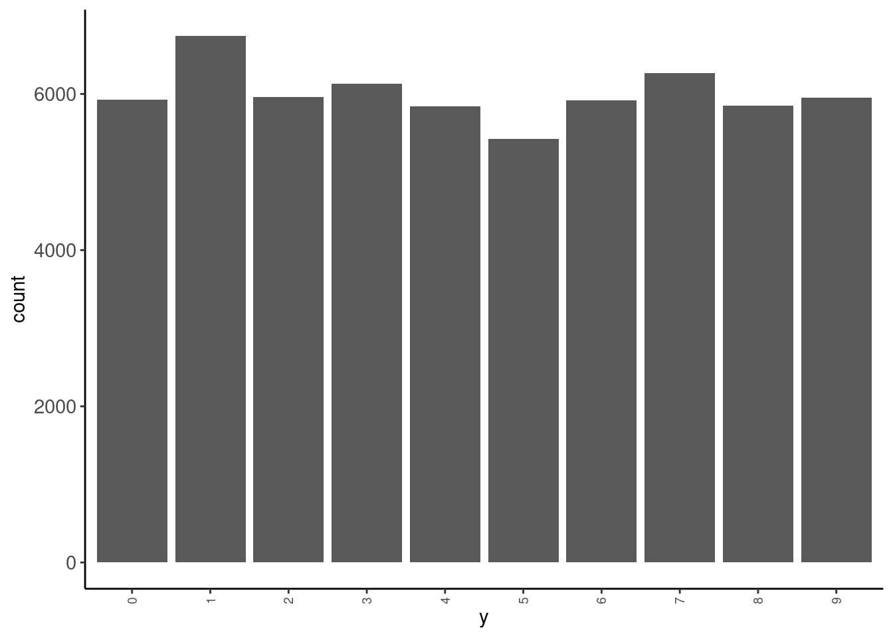
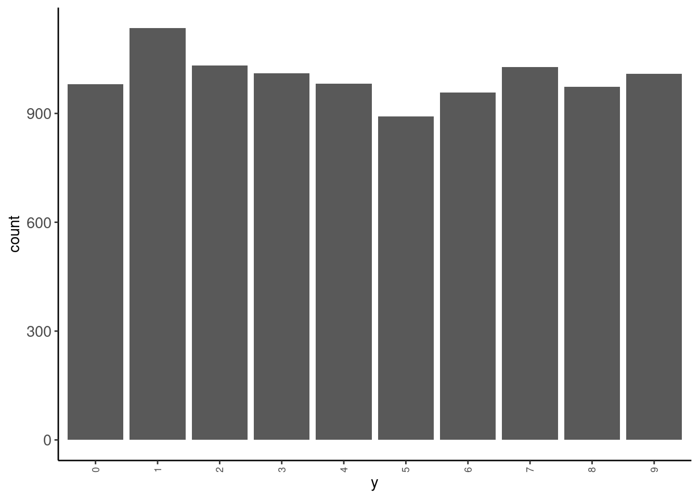
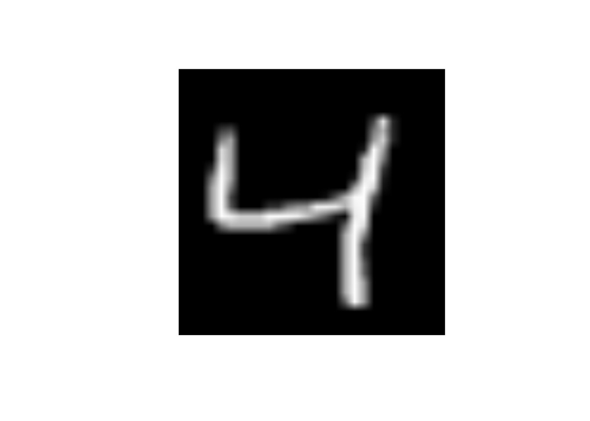

library(keras, exclude = "get_weights")10 Advanced Models: Neural Networks
10.1 Overview of Unit
10.1.1 Learning Objectives
- What are neural networks
- Types of neural networks
- Neural network architecture
- layers and units
- weights and biases
- activation functions
- cost functions
- optimization
- epochs
- batches
- learning rate
- How to fit 3 layer MLPs in tidymodels using Keras
10.1.2 Readings
Post questions to the readings channel in Slack
10.1.3 Lecture Videos
- Lecture 1: But what is a Neural Network? ~ 19 mins
- Lecture 2: Gradient descent, how neural networks learn ~ 21 mins
- Lecture 3: What is backpropagation really doing? ~ 13 mins
- Optional Lecture 4: Backpropagation calculus ~ 10 mins
- Lecture 5: Introduction and the MNIST dataset
- Lecture 6: Fitting neural networks in tidymodels with Keras - Part 1
- Lecture 7: Fitting neural networks in tidymodels with Keras - Part 2
- Lecture 8: Addressing overfitting
- Lecture 9: Selecting model configurations and final remarks
Post questions to the video-lectures channel in Slack
10.1.4 Coding Assignment
Post questions to application-assignments Slack channel
Submit the application assignment here and complete the unit quiz by 8 pm on Wednesday, April 3rd
10.2 Introduction to Nerual Networks with Keras in R
We will be using the keras engine to fit our neural networks in R.
The keras package provides an R Interface to the Keras API in Python.
From the website:
Keras is a high-level neural networks API developed with a focus on enabling fast experimentation. Being able to go from idea to result with the least possible delay is key to doing good research.
Keras has the following key features:
- Allows the same code to run on CPU or on GPU, seamlessly.
- **User-friendly API*- which makes it easy to quickly prototype deep learning models.
- Built-in support for basic multi-layer perceptrons, convolutional networks (for computer vision), recurrent networks (for sequence processing), and any combination of both.
- Supports arbitrary network architectures: multi-input or multi-output models, layer sharing, model sharing, etc. This means that Keras is appropriate for building essentially any deep learning model, from a memory network to a neural Turing machine.
Keras is actually a wrapper around an even more extensive open source platform, TensorFlow, which has also been ported to the R environment
TensorFlow is an end-to-end open source platform for machine learning. It has a comprehensive, flexible ecosystem of tools, libraries and community resources that lets researchers push the state-of-the-art in ML and developers easily build and deploy ML powered applications.
TensorFlow was originally developed by researchers and engineers working on the Google Brain Team within Google’s Machine Intelligence research organization for the purposes of conducting machine learning and deep neural networks research
If you are serious about focusing primarily or exclusively on neural networks, you will probably work directly within Keras in R or Python. However, tidymodels gives us access to 3 layer (single hidden layer) MLP neural networks through the keras engine. This allows us to fit simple (but still powerful) neural networks using all the tools (and code/syntax) that you already know. Yay!
If you plan to use Keras directly in R, you might start with this book. I’ve actually found it useful even in thinking about how to interface with Keras through tidymodels.
Getting tidymodels configured to use the keras engine can take a little bit of upfront effort.
We provide [an appendix] to guide you through this process
If you havent already set this up, please do so immediately so that you can reach out to us for support if you need it
Once you have completed this one-time installation, you can now use the keras engine through tidymodels like any other engine. No need to load Keras each time or do anything different from your normal tidymodeling workflow.
You should also know that Keras is configured to use GPUs rather than CPU (GPUs allow for highly parallel fitting of neural networks).
- However, it works fine with just a CPU as well.
- It will generate some errors to tell you that you aren’t set up with a GPU (and then it will tell you to ignore those error messages).
- This is an instance where you can ignore the messages!
10.3 Setting up our Environment
Now lets start fresh
- We load our normal environment including source files, parallel processing and cache support if we plan to use it (code not displayed)
- We will use some functions in other packages
- We will use
imagerpackage functions for viewing images saved as matrices - We will
data.tablepackage function for reading and writing large files
- We will use
- These latter packages are specific to the data we will use in this unit and not always needed when using neural networks
- We will use namespace rather than load full packages for these functions
10.4 The MINST dataset
The MNIST database (Modified National Institute of Standards and Technology database) is a large database of handwritten digits that is commonly used for training and testing in the field of machine learning.
It consists of two sets:
- There are 60,000 images from 250 people in train
- There are 10,000 images from a different 250 people in test (from different people than in train)
Each observation in the datasets represent a single image and its label
- Each image is a 28 X 28 grid of pixels = 784 predictors (x1 - x784)
- Each label is the actual value (0-9; y). We will treat it as categorical because we are trying to identify each number “category”, predicting a label of “4” when the image is a “5” is just as bad as predicting “9”
Let’s start by reading train and test sets
data_trn <- read_csv(here::here(path_data, "mnist_train.csv.gz"),
col_types = cols()) |>
mutate(y = factor(y, levels = 0:9, labels = 0:9))
data_trn |> dim()[1] 60000 785data_test <- read_csv(here::here(path_data, "mnist_test.csv"),
col_types = cols()) |>
mutate(y = factor(y, levels = 0:9, labels = 0:9))
data_test |> dim()[1] 10000 785Here is some very basic info on the outcome distribution
- in train
data_trn |> tab(y)# A tibble: 10 × 3
y n prop
<fct> <int> <dbl>
1 0 5923 0.0987
2 1 6742 0.112
3 2 5958 0.0993
4 3 6131 0.102
5 4 5842 0.0974
6 5 5421 0.0904
7 6 5918 0.0986
8 7 6265 0.104
9 8 5851 0.0975
10 9 5949 0.0992data_trn |> plot_bar("y")
- in test
data_test|> tab(y)# A tibble: 10 × 3
y n prop
<fct> <int> <dbl>
1 0 980 0.098
2 1 1135 0.114
3 2 1032 0.103
4 3 1010 0.101
5 4 982 0.0982
6 5 892 0.0892
7 6 958 0.0958
8 7 1028 0.103
9 8 974 0.0974
10 9 1009 0.101 data_test |> plot_bar("y")
Let’s look at some of the images. We will need a function to display these images. We will use as.cimg() from the imager package
display_image <- function(data){
message("Displaying: ", data$y)
data |>
select(-y) |>
unlist(use.names = FALSE) |>
imager::as.cimg(x = 28, y = 28) |>
plot(axes = FALSE)
}Observations 1, 3, 10, and 100 in training set
data_trn |>
slice(1) |>
display_image()Displaying: 5data_trn |>
slice(3) |>
display_image()Displaying: 4
data_trn |>
slice(10) |>
display_image()Displaying: 4data_trn |>
slice(100) |>
display_image()Displaying: 1And here is the first observation in test set
data_test |>
slice(1) |>
display_image()Displaying: 7Let’s understand the individual predictors a bit more
- Each predictor is a pixel in the 28 X 28 grid for the image
- Pixel intensity is coded for intensity in the range from 0 (black) to 255 (white)
- First 28 variables are the top row of 28 pixels
- Next 28 variables are the second row of 28 pixels
10.5 There are 28 rows of 28 predictors total (784 predictors)
- Lets understand this by changing values for individual predictors
- Here is the third image again
What will happen to the image if I change the value of predictor x25 to 255
data_trn |>
slice(3) |>
display_image()Displaying: 4
- Change the
x25to 255
data_trn |>
slice(3) |>
mutate(x25 = 255) |>
display_image()Displaying: 4
What will happen to the image if I change the value of predictor x29 to 255
- Change the
x29to 255
data_trn |>
slice(3) |>
mutate(x29 = 255) |>
display_image()Displaying: 4What will happen to the image if I change the value of predictor x784 to 255
- Change the
x784to 255
data_trn |>
slice(3) |>
mutate(x784 = 255) |>
display_image()Displaying: 410.6 Fitting Neural Networks
Let’s train some models to understand some basics about neural networks and the use of Keras within tidymodels
We will fit some configurations in the full training set and evaluate their performance in test
We are NOT using test to select among configurations (it wouldn’t be a true test set then) but only for instructional purposes.
We will start with an absolute minimal recipe and mostly defaults for the statistical algorithm
We will build up to more complex (and better) configurations
We will end with a demonstration of the use of the single validation set approach to select among model configurations
Let’s start with a minimal recipe
- 10 level categorical outcome as factor
- Will be used to establish 10 output neurons
rec_min <-
recipe(y ~ ., data = data_trn)Here are feature matrices for train and test using this recipe
rec_min_prep <- rec_min |>
prep(data_trn)
feat_trn <- rec_min_prep |>
bake(NULL)
feat_test <-rec_min_prep |>
bake(data_test)And let’s use a mostly out of the box (defaults) 3 layer (1 hidden layer) using Keras engine
Defaults:
- hidden units = 5
- penalty = 0
- dropout = 0
- activation = “softmax” for hidden units layer
- epochs = 20
- seeds = sample.int(10^5, size = 3)
The default activation for the hidden units when using Keras through tidymodels is softmax not sigmoid as per the basic models discussed in the book and lectures.
- The activation for the output layer will always be
softmaxfor classification problems when using Keras through tidymodels- This is likely a good choice
- It provides scores that function like probabilities for each categorical response
- The activation for the output layer will always be ‘linear’ for regression problems.
- Also a generally good choice
- The hidden units can have a variety of different activation functions
linear,softmax,relu, andeluthrough tidymodels- Additional activation functions (and many other “dials”) are available in Keras directly
We will adjust seeds from the start
There are a number of points in the fitting process where random numbers needed by Keras
- initializing weights for hidden and output layers
- selecting units for
dropout - selecting batches within epochs
tidymodels lets us provide three seeds to make the first two bullet points more reproducible.
There seems to still be some randomness across runs due to batch selection (and possibly other opaque steps)
set.seed(1234567)
fit_seeds <- sample.int(10^5, size = 3) # c(87591, 536, 27860)We will also set verbose = 0 for now
- This turns off messages and plots about epoch level performance
- At this point, verbose would only report performance in the training data, which isn’t that informative
- We will turn it on later when we learn how to get performance in a validation set
- Nonetheless, you might still turn it on if you just want feedback on how long it will take for the fit to complete.
Let’s fit this first model configuration in training set
verbose = 0seeds = fit_seeds
fit_1 <-
mlp() |>
set_mode("classification") |>
set_engine("keras",
verbose = 0,
seeds = fit_seeds) |>
fit(y ~ ., data = feat_trn)NOTE: The first model fit with Keras in each new session will generate those warnings/errors about GPU. You can ignore them.
Here is this model’s performance in test
It’s not that great (though clearly better than 10%)
accuracy_vec(feat_test$y, predict(fit_1, feat_test)$.pred_class)313/313 - 1s - 554ms/epoch - 2ms/step[1] 0.1135Theoretically, the scale of the inputs should not matter
HOWEVER, gradient descent works better with inputs on the same scale
We will also want inputs with the same variance if we later apply L2 regularization to our models
- There is a lot of discussion about how best to scale inputs
- Best if the input means are near zero
- Best if variances are comparable
We could:
- Use
step_normalize()[Bad choice of function names by tidymodel folks; scale vs. normalize] - Use
step_range() - Book range corrected based on known true range (
/ 255)
We will usestep_normalize()
This is wrong! Luckily we glimpsed our feature matrix (not displayed here)
rec_scaled_wrong <-
recipe(y ~ ., data = data_trn) |>
step_normalize(all_predictors())For example
data_trn$x1 |> sd()[1] 0Let’s remove zero variance predictors before we scale
- To be clear, zero variance features are NOT a problem for neural networks (though clearly they won’t help either).
- But they WILL definitely cause problems for some scaling transformations.
rec_scaled <-
recipe(y ~ ., data = data_trn) |>
step_zv(all_predictors()) |>
step_normalize(all_predictors())We now have 717 (+ y) features rather than 28 * 28 = 784 features
rec_scaled_prep <- rec_scaled |>
prep(data_trn)
feat_trn <- rec_scaled_prep |>
bake(NULL)
dim(feat_trn)[1] 60000 718Let’s also make the feature matrix for test. This will exclude features that were zero variance in train and scale them by their mean and sd in train
feat_test <- rec_scaled_prep |>
bake(data_test)
dim(feat_test)[1] 10000 718Let’s fit and evaluate this new feature set with no other changes to the model configuration
fit_2 <-
mlp() |>
set_mode("classification") |>
set_engine("keras", verbose = 0, seeds = fit_seeds) |>
fit(y ~ ., data = feat_trn)- That helped a LOT
- Still could be better though (but it always impresses me! ;-)
accuracy_vec(feat_test$y, predict(fit_2, feat_test)$.pred_class)313/313 - 0s - 494ms/epoch - 2ms/step[1] 0.4962There are many other recommendations about feature engineering to improve the inputs
These include:
- Normalize (and here I mean true normalization; e.g.,
step_BoxCox(),step_YeoJohnson()) - De-correlate (e.g.,
step_pca()but retain all features?)
You can see some discussion of these issues here and here to get you started. The paper linked in the stack overflow response is also a useful starting point.
Some preliminary modeling EDA on my part suggested these additional considerations didn’t have major impact on the performance of our models with this dataset so we will stick with just scaling the features.
It is not surprising that a model configuration with only one hidden layer and 5 units isn’t sufficient for this complex task
Let’s try 30 units (cheating based on the book chapter!! ;-)
fit_5units <- mlp(hidden_units = 30) |>
set_mode("classification") |>
set_engine("keras", verbose = 0, seeds = fit_seeds) |>
fit(y ~ ., data = feat_trn)- Bingo! Much, much better!
- We could see if even more units works better still but I won’t follow that through here for sake of simplicity
accuracy_vec(feat_test$y, predict(fit_5units, feat_test)$.pred_class)313/313 - 1s - 605ms/epoch - 2ms/step[1] 0.9391The Three Brown 1 Blue videos had a brief discussion of the relu activation function.
Let’s see how to use other activation functions and if this one helps.
fit_relu <- mlp(hidden_units = 30, activation = "relu") |>
set_mode("classification") |>
set_engine("keras", verbose = 0, seeds = fit_seeds) |>
fit(y ~ ., data = feat_trn)accuracy_vec(feat_test$y, predict(fit_relu, feat_test)$.pred_class)313/313 - 0s - 452ms/epoch - 1ms/step[1] 0.963810.7 Dealing with Overfitting
As you might imagine, given the number of weights to be fit in even a modest neural network (our 30 hidden unit network has 21,850 parameters to estimate), it is easy to become overfit
- 21,540 for hidden layer (717 * 30 weight + 30 biases)
- 310 for output layer (30 * 10 weights, + 10 biases)
fit_reluparsnip model object
Model: "sequential_3"
________________________________________________________________________________
Layer (type) Output Shape Param #
================================================================================
dense_6 (Dense) (None, 30) 21540
dense_7 (Dense) (None, 10) 310
================================================================================
Total params: 21850 (85.35 KB)
Trainable params: 21850 (85.35 KB)
Non-trainable params: 0 (0.00 Byte)
________________________________________________________________________________This will be an even bigger problem if you aren’t using “big” data
There are a number of different methods available to reduce potential overfitting
- Simplify the network architecture (fewer units, fewer layers)
- L2 regularization
- Dropout
- Early stopping or monitoring validation error to prevent too many epochs
10.7.1 Regularization or Weight Decay
L2 regularization is implemented in essentially the same fashion as you have seen it previously (e.g., glmnet)
The loss function is expanded to include a penalty based on the sum of the squared weights multiplied by \(\lambda\).
In the tidymodels implementation of Keras:
\(\lambda\) is called
penaltyand is set and/or (ideally) tuned via thepenaltyargument inmlp()Common values for the L2
penaltyto tune a neural network are often on a logarithmic scale between 0 and 0.1, such as 0.1, 0.001, 0.0001, etc.penalty = 0(the default) means no L2 regularizationKeras implements other penalties (L1, and a mixture) but not currently through tidymodels
Here is a starting point for more reading on regularization in neural networks
Let’s set penalty = .0001.
fit_penalty <- mlp(hidden_units = 30, activation = "relu", penalty = .0001) |>
set_mode("classification") |>
set_engine("keras", verbose = 0, seeds = fit_seeds) |>
fit(y ~ ., data = feat_trn)- Looks like there is not much benefit to regularization for this network.
- Would likely provide much greater benefit in smaller N contexts or with more complicated model architectures (more hidden units, more hidden unit layers).
accuracy_vec(feat_test$y, predict(fit_penalty, feat_test)$.pred_class)313/313 - 0s - 481ms/epoch - 2ms/step[1] 0.963710.7.2 Dropout
Dropout is a second technique to minimize overfitting.
Here is a clear description of dropout from a blog post on the Machine Learning Mastery:
Dropout is a technique where randomly selected neurons are ignored during training. They are “dropped-out” randomly. This means that their contribution to the activation of downstream neurons is temporally removed on the forward pass and any weight updates are not applied to the neuron on the backward pass.
As a neural network learns, neuron weights settle into their context within the network. Weights of neurons are tuned for specific features providing some specialization. Neighboring neurons come to rely on this specialization, which if taken too far can result in a fragile model too specialized to the training data.
You can imagine that if neurons are randomly dropped out of the network during training, that other neurons will have to step in and handle the representation required to make predictions for the missing neurons. This is believed to result in multiple independent internal representations being learned by the network.
The effect is that the network becomes less sensitive to the specific weights of neurons. This in turn results in a network that is capable of better generalization and is less likely to overfit the training data.
For further reading, you might start with the 2014 paper by Srivastava, et al that proposed the technique.
In tidymodels, you can set or tune the amount of dropout via the dropout argument in mlp()
- Srivastava, et al suggest starting with values around .5.
- You might consider a range between .1 and .5
droppout = 0(the default) means no dropout- In tidymodels implementation of Keras, you can use a non-zero
penaltyordropoutbut not both
Let’s try dropout = .1.
fit_dropout <- mlp(hidden_units = 30, activation = "relu", dropout = .1) |>
set_mode("classification") |>
set_engine("keras", verbose = 0, seeds = fit_seeds) |>
fit(y ~ ., data = feat_trn)- Looks like there may be a little benefit but not substantial.
- Would likely provide much greater benefit in smaller N contexts or with more complicated model architectures (more hidden units, more hidden unit layers).
accuracy_vec(feat_test$y, predict(fit_dropout, feat_test)$.pred_class)313/313 - 1s - 502ms/epoch - 2ms/step[1] 0.966410.7.3 Number of Epochs and Early Stopping
Now that we have a model that is working well, lets return to the issue of number of epochs
- Too many epochs can lead to overfitting
- Too many epochs also just slow things down (not a bit deal if using GPU or overnight but still…..)
- Too few epochs can lead to under-fitting (which also produces poor performance)
- The default of
epochs = 20is a reasonable starting point for a network with one hidden layer but may not work for all situations
Monitoring training error (loss, accuracy) is not ideal b/c it will tend to always decrease
- This is what you would get if you set
verbose = 1
Validation error is what you need to monitor
- Validation error will increase when the model becomes overfit to training
- We can have Keras hold back some portion of the training data for validation
validation_split = .1- We pass it in as an optional argument in
set_engine() - We can use this to monitor validation error rather than training error by epoch.
- You can fit an exploratory model with
epochs = 50to review the plot - This can allow us to determine an appropriate value for
epochs
Let’s see this in action in the best model configuration without regularization or dropout
NOTE:
epochs = 50verbose = 1metrics = c("accuracy")validation_split = 1/6- You will see message updates and a plot that tracks training and validation loss and accuracy across epochs
- This (currently) is not knitted into my web book but the plot and messages are pretty clear
- You can use this information to choose appropriate values for
epoch val_accuracyhad plateau andval_losshad started to creep up by 10 epochs.
fit_epochs50 <- mlp(hidden_units = 30, activation = "relu", epochs = 50) |>
set_mode("classification") |>
set_engine("keras", verbose = 1, seeds = fit_seeds,
metrics = c("accuracy"),
validation_split = 1/6) |>
fit(y ~ ., data = feat_trn)Epoch 1/50
1/1563 [..............................] - ETA: 12:43 - loss: 0.7551 - accuracy: 0.2500
14/1563 [..............................] - ETA: 6s - loss: 0.7368 - accuracy: 0.2165
28/1563 [..............................] - ETA: 5s - loss: 0.6615 - accuracy: 0.3170
41/1563 [..............................] - ETA: 5s - loss: 0.5926 - accuracy: 0.3857
54/1563 [>.............................] - ETA: 5s - loss: 0.5370 - accuracy: 0.4462
68/1563 [>.............................] - ETA: 5s - loss: 0.4849 - accuracy: 0.4922
83/1563 [>.............................] - ETA: 5s - loss: 0.4404 - accuracy: 0.5335
97/1563 [>.............................] - ETA: 5s - loss: 0.4030 - accuracy: 0.5693
112/1563 [=>............................] - ETA: 5s - loss: 0.3718 - accuracy: 0.5991
127/1563 [=>............................] - ETA: 5s - loss: 0.3452 - accuracy: 0.6198
142/1563 [=>............................] - ETA: 5s - loss: 0.3229 - accuracy: 0.6408
157/1563 [==>...........................] - ETA: 5s - loss: 0.3031 - accuracy: 0.6602
171/1563 [==>...........................] - ETA: 5s - loss: 0.2900 - accuracy: 0.6738
186/1563 [==>...........................] - ETA: 4s - loss: 0.2753 - accuracy: 0.6883
201/1563 [==>...........................] - ETA: 4s - loss: 0.2629 - accuracy: 0.7007
215/1563 [===>..........................] - ETA: 4s - loss: 0.2528 - accuracy: 0.7106
229/1563 [===>..........................] - ETA: 4s - loss: 0.2441 - accuracy: 0.7198
244/1563 [===>..........................] - ETA: 4s - loss: 0.2356 - accuracy: 0.7296
259/1563 [===>..........................] - ETA: 4s - loss: 0.2273 - accuracy: 0.7373
274/1563 [====>.........................] - ETA: 4s - loss: 0.2200 - accuracy: 0.7437
289/1563 [====>.........................] - ETA: 4s - loss: 0.2137 - accuracy: 0.7497
304/1563 [====>.........................] - ETA: 4s - loss: 0.2072 - accuracy: 0.7557
319/1563 [=====>........................] - ETA: 4s - loss: 0.2015 - accuracy: 0.7616
334/1563 [=====>........................] - ETA: 4s - loss: 0.1966 - accuracy: 0.7663
349/1563 [=====>........................] - ETA: 4s - loss: 0.1918 - accuracy: 0.7715
365/1563 [======>.......................] - ETA: 4s - loss: 0.1873 - accuracy: 0.7761
380/1563 [======>.......................] - ETA: 4s - loss: 0.1834 - accuracy: 0.7804
395/1563 [======>.......................] - ETA: 4s - loss: 0.1791 - accuracy: 0.7848
409/1563 [======>.......................] - ETA: 4s - loss: 0.1754 - accuracy: 0.7887
424/1563 [=======>......................] - ETA: 4s - loss: 0.1717 - accuracy: 0.7925
439/1563 [=======>......................] - ETA: 3s - loss: 0.1685 - accuracy: 0.7960
454/1563 [=======>......................] - ETA: 3s - loss: 0.1651 - accuracy: 0.7998
469/1563 [========>.....................] - ETA: 3s - loss: 0.1621 - accuracy: 0.8034
485/1563 [========>.....................] - ETA: 3s - loss: 0.1588 - accuracy: 0.8066
498/1563 [========>.....................] - ETA: 3s - loss: 0.1562 - accuracy: 0.8096
512/1563 [========>.....................] - ETA: 3s - loss: 0.1540 - accuracy: 0.8121
526/1563 [=========>....................] - ETA: 3s - loss: 0.1521 - accuracy: 0.8143
541/1563 [=========>....................] - ETA: 3s - loss: 0.1500 - accuracy: 0.8167
556/1563 [=========>....................] - ETA: 3s - loss: 0.1476 - accuracy: 0.8192
571/1563 [=========>....................] - ETA: 3s - loss: 0.1454 - accuracy: 0.8220
585/1563 [==========>...................] - ETA: 3s - loss: 0.1433 - accuracy: 0.8244
600/1563 [==========>...................] - ETA: 3s - loss: 0.1413 - accuracy: 0.8266
615/1563 [==========>...................] - ETA: 3s - loss: 0.1395 - accuracy: 0.8283
630/1563 [===========>..................] - ETA: 3s - loss: 0.1376 - accuracy: 0.8299
645/1563 [===========>..................] - ETA: 3s - loss: 0.1359 - accuracy: 0.8316
660/1563 [===========>..................] - ETA: 3s - loss: 0.1343 - accuracy: 0.8332
675/1563 [===========>..................] - ETA: 3s - loss: 0.1327 - accuracy: 0.8350
690/1563 [============>.................] - ETA: 3s - loss: 0.1311 - accuracy: 0.8369
705/1563 [============>.................] - ETA: 3s - loss: 0.1297 - accuracy: 0.8383
720/1563 [============>.................] - ETA: 2s - loss: 0.1286 - accuracy: 0.8390
735/1563 [=============>................] - ETA: 2s - loss: 0.1269 - accuracy: 0.8410
750/1563 [=============>................] - ETA: 2s - loss: 0.1259 - accuracy: 0.8420
765/1563 [=============>................] - ETA: 2s - loss: 0.1247 - accuracy: 0.8433
780/1563 [=============>................] - ETA: 2s - loss: 0.1233 - accuracy: 0.8448
795/1563 [==============>...............] - ETA: 2s - loss: 0.1219 - accuracy: 0.8465
810/1563 [==============>...............] - ETA: 2s - loss: 0.1207 - accuracy: 0.8477
824/1563 [==============>...............] - ETA: 2s - loss: 0.1199 - accuracy: 0.8484
838/1563 [===============>..............] - ETA: 2s - loss: 0.1189 - accuracy: 0.8495
853/1563 [===============>..............] - ETA: 2s - loss: 0.1177 - accuracy: 0.8507
868/1563 [===============>..............] - ETA: 2s - loss: 0.1167 - accuracy: 0.8520
883/1563 [===============>..............] - ETA: 2s - loss: 0.1155 - accuracy: 0.8531
898/1563 [================>.............] - ETA: 2s - loss: 0.1145 - accuracy: 0.8542
913/1563 [================>.............] - ETA: 2s - loss: 0.1137 - accuracy: 0.8548
928/1563 [================>.............] - ETA: 2s - loss: 0.1127 - accuracy: 0.8558
943/1563 [=================>............] - ETA: 2s - loss: 0.1118 - accuracy: 0.8571
958/1563 [=================>............] - ETA: 2s - loss: 0.1108 - accuracy: 0.8581
972/1563 [=================>............] - ETA: 2s - loss: 0.1101 - accuracy: 0.8589
987/1563 [=================>............] - ETA: 2s - loss: 0.1094 - accuracy: 0.8597
1002/1563 [==================>...........] - ETA: 1s - loss: 0.1087 - accuracy: 0.8603
1017/1563 [==================>...........] - ETA: 1s - loss: 0.1080 - accuracy: 0.8614
1032/1563 [==================>...........] - ETA: 1s - loss: 0.1071 - accuracy: 0.8622
1046/1563 [===================>..........] - ETA: 1s - loss: 0.1065 - accuracy: 0.8628
1060/1563 [===================>..........] - ETA: 1s - loss: 0.1058 - accuracy: 0.8636
1073/1563 [===================>..........] - ETA: 1s - loss: 0.1054 - accuracy: 0.8641
1087/1563 [===================>..........] - ETA: 1s - loss: 0.1048 - accuracy: 0.8648
1101/1563 [====================>.........] - ETA: 1s - loss: 0.1042 - accuracy: 0.8655
1115/1563 [====================>.........] - ETA: 1s - loss: 0.1036 - accuracy: 0.8662
1128/1563 [====================>.........] - ETA: 1s - loss: 0.1031 - accuracy: 0.8665
1142/1563 [====================>.........] - ETA: 1s - loss: 0.1024 - accuracy: 0.8674
1157/1563 [=====================>........] - ETA: 1s - loss: 0.1018 - accuracy: 0.8681
1172/1563 [=====================>........] - ETA: 1s - loss: 0.1012 - accuracy: 0.8686
1187/1563 [=====================>........] - ETA: 1s - loss: 0.1007 - accuracy: 0.8692
1201/1563 [======================>.......] - ETA: 1s - loss: 0.1001 - accuracy: 0.8699
1216/1563 [======================>.......] - ETA: 1s - loss: 0.0994 - accuracy: 0.8707
1231/1563 [======================>.......] - ETA: 1s - loss: 0.0988 - accuracy: 0.8715
1245/1563 [======================>.......] - ETA: 1s - loss: 0.0984 - accuracy: 0.8719
1259/1563 [=======================>......] - ETA: 1s - loss: 0.0978 - accuracy: 0.8724
1274/1563 [=======================>......] - ETA: 1s - loss: 0.0973 - accuracy: 0.8729
1289/1563 [=======================>......] - ETA: 0s - loss: 0.0968 - accuracy: 0.8736
1304/1563 [========================>.....] - ETA: 0s - loss: 0.0962 - accuracy: 0.8742
1317/1563 [========================>.....] - ETA: 0s - loss: 0.0957 - accuracy: 0.8749
1331/1563 [========================>.....] - ETA: 0s - loss: 0.0952 - accuracy: 0.8755
1345/1563 [========================>.....] - ETA: 0s - loss: 0.0946 - accuracy: 0.8763
1361/1563 [=========================>....] - ETA: 0s - loss: 0.0941 - accuracy: 0.8769
1377/1563 [=========================>....] - ETA: 0s - loss: 0.0936 - accuracy: 0.8775
1393/1563 [=========================>....] - ETA: 0s - loss: 0.0931 - accuracy: 0.8780
1409/1563 [==========================>...] - ETA: 0s - loss: 0.0925 - accuracy: 0.8788
1426/1563 [==========================>...] - ETA: 0s - loss: 0.0919 - accuracy: 0.8795
1441/1563 [==========================>...] - ETA: 0s - loss: 0.0914 - accuracy: 0.8802
1455/1563 [==========================>...] - ETA: 0s - loss: 0.0910 - accuracy: 0.8807
1468/1563 [===========================>..] - ETA: 0s - loss: 0.0905 - accuracy: 0.8812
1480/1563 [===========================>..] - ETA: 0s - loss: 0.0902 - accuracy: 0.8815
1494/1563 [===========================>..] - ETA: 0s - loss: 0.0898 - accuracy: 0.8820
1509/1563 [===========================>..] - ETA: 0s - loss: 0.0893 - accuracy: 0.8826
1522/1563 [============================>.] - ETA: 0s - loss: 0.0889 - accuracy: 0.8830
1536/1563 [============================>.] - ETA: 0s - loss: 0.0886 - accuracy: 0.8833
1549/1563 [============================>.] - ETA: 0s - loss: 0.0883 - accuracy: 0.8837
1562/1563 [============================>.] - ETA: 0s - loss: 0.0881 - accuracy: 0.8838
1563/1563 [==============================] - 7s 4ms/step - loss: 0.0880 - accuracy: 0.8839 - val_loss: 0.0418 - val_accuracy: 0.9434
Epoch 2/50
1/1563 [..............................] - ETA: 5s - loss: 0.0284 - accuracy: 0.9688
18/1563 [..............................] - ETA: 4s - loss: 0.0483 - accuracy: 0.9323
33/1563 [..............................] - ETA: 4s - loss: 0.0478 - accuracy: 0.9366
47/1563 [..............................] - ETA: 4s - loss: 0.0475 - accuracy: 0.9368
62/1563 [>.............................] - ETA: 4s - loss: 0.0465 - accuracy: 0.9390
77/1563 [>.............................] - ETA: 4s - loss: 0.0455 - accuracy: 0.9399
92/1563 [>.............................] - ETA: 4s - loss: 0.0454 - accuracy: 0.9385
107/1563 [=>............................] - ETA: 4s - loss: 0.0447 - accuracy: 0.9387
122/1563 [=>............................] - ETA: 4s - loss: 0.0437 - accuracy: 0.9398
137/1563 [=>............................] - ETA: 4s - loss: 0.0450 - accuracy: 0.9373
152/1563 [=>............................] - ETA: 4s - loss: 0.0443 - accuracy: 0.9385
168/1563 [==>...........................] - ETA: 4s - loss: 0.0438 - accuracy: 0.9392
183/1563 [==>...........................] - ETA: 4s - loss: 0.0431 - accuracy: 0.9401
198/1563 [==>...........................] - ETA: 4s - loss: 0.0434 - accuracy: 0.9396
212/1563 [===>..........................] - ETA: 4s - loss: 0.0434 - accuracy: 0.9393
225/1563 [===>..........................] - ETA: 4s - loss: 0.0434 - accuracy: 0.9397
240/1563 [===>..........................] - ETA: 4s - loss: 0.0431 - accuracy: 0.9402
256/1563 [===>..........................] - ETA: 4s - loss: 0.0431 - accuracy: 0.9403
271/1563 [====>.........................] - ETA: 4s - loss: 0.0429 - accuracy: 0.9406
285/1563 [====>.........................] - ETA: 4s - loss: 0.0426 - accuracy: 0.9412
298/1563 [====>.........................] - ETA: 4s - loss: 0.0423 - accuracy: 0.9417
313/1563 [=====>........................] - ETA: 4s - loss: 0.0422 - accuracy: 0.9413
328/1563 [=====>........................] - ETA: 4s - loss: 0.0427 - accuracy: 0.9404
342/1563 [=====>........................] - ETA: 4s - loss: 0.0425 - accuracy: 0.9408
357/1563 [=====>........................] - ETA: 4s - loss: 0.0424 - accuracy: 0.9414
372/1563 [======>.......................] - ETA: 4s - loss: 0.0422 - accuracy: 0.9414
387/1563 [======>.......................] - ETA: 4s - loss: 0.0422 - accuracy: 0.9412
401/1563 [======>.......................] - ETA: 4s - loss: 0.0423 - accuracy: 0.9411
415/1563 [======>.......................] - ETA: 3s - loss: 0.0423 - accuracy: 0.9407
429/1563 [=======>......................] - ETA: 3s - loss: 0.0422 - accuracy: 0.9409
444/1563 [=======>......................] - ETA: 3s - loss: 0.0423 - accuracy: 0.9408
458/1563 [=======>......................] - ETA: 3s - loss: 0.0424 - accuracy: 0.9406
472/1563 [========>.....................] - ETA: 3s - loss: 0.0424 - accuracy: 0.9406
487/1563 [========>.....................] - ETA: 3s - loss: 0.0428 - accuracy: 0.9401
502/1563 [========>.....................] - ETA: 3s - loss: 0.0429 - accuracy: 0.9396
516/1563 [========>.....................] - ETA: 3s - loss: 0.0428 - accuracy: 0.9401
530/1563 [=========>....................] - ETA: 3s - loss: 0.0426 - accuracy: 0.9402
545/1563 [=========>....................] - ETA: 3s - loss: 0.0425 - accuracy: 0.9403
559/1563 [=========>....................] - ETA: 3s - loss: 0.0427 - accuracy: 0.9398
574/1563 [==========>...................] - ETA: 3s - loss: 0.0428 - accuracy: 0.9398
589/1563 [==========>...................] - ETA: 3s - loss: 0.0428 - accuracy: 0.9399
604/1563 [==========>...................] - ETA: 3s - loss: 0.0427 - accuracy: 0.9400
619/1563 [==========>...................] - ETA: 3s - loss: 0.0426 - accuracy: 0.9403
634/1563 [===========>..................] - ETA: 3s - loss: 0.0422 - accuracy: 0.9411
648/1563 [===========>..................] - ETA: 3s - loss: 0.0422 - accuracy: 0.9412
663/1563 [===========>..................] - ETA: 3s - loss: 0.0421 - accuracy: 0.9412
678/1563 [============>.................] - ETA: 3s - loss: 0.0420 - accuracy: 0.9412
693/1563 [============>.................] - ETA: 3s - loss: 0.0422 - accuracy: 0.9409
708/1563 [============>.................] - ETA: 2s - loss: 0.0422 - accuracy: 0.9410
722/1563 [============>.................] - ETA: 2s - loss: 0.0421 - accuracy: 0.9411
737/1563 [=============>................] - ETA: 2s - loss: 0.0421 - accuracy: 0.9411
752/1563 [=============>................] - ETA: 2s - loss: 0.0420 - accuracy: 0.9414
764/1563 [=============>................] - ETA: 2s - loss: 0.0421 - accuracy: 0.9413
777/1563 [=============>................] - ETA: 2s - loss: 0.0419 - accuracy: 0.9419
792/1563 [==============>...............] - ETA: 2s - loss: 0.0419 - accuracy: 0.9419
806/1563 [==============>...............] - ETA: 2s - loss: 0.0418 - accuracy: 0.9421
820/1563 [==============>...............] - ETA: 2s - loss: 0.0418 - accuracy: 0.9421
834/1563 [===============>..............] - ETA: 2s - loss: 0.0418 - accuracy: 0.9418
850/1563 [===============>..............] - ETA: 2s - loss: 0.0418 - accuracy: 0.9419
863/1563 [===============>..............] - ETA: 2s - loss: 0.0418 - accuracy: 0.9419
877/1563 [===============>..............] - ETA: 2s - loss: 0.0418 - accuracy: 0.9419
892/1563 [================>.............] - ETA: 2s - loss: 0.0417 - accuracy: 0.9419
906/1563 [================>.............] - ETA: 2s - loss: 0.0417 - accuracy: 0.9419
920/1563 [================>.............] - ETA: 2s - loss: 0.0417 - accuracy: 0.9418
933/1563 [================>.............] - ETA: 2s - loss: 0.0417 - accuracy: 0.9419
947/1563 [=================>............] - ETA: 2s - loss: 0.0418 - accuracy: 0.9418
961/1563 [=================>............] - ETA: 2s - loss: 0.0419 - accuracy: 0.9418
974/1563 [=================>............] - ETA: 2s - loss: 0.0418 - accuracy: 0.9419
987/1563 [=================>............] - ETA: 2s - loss: 0.0417 - accuracy: 0.9420
999/1563 [==================>...........] - ETA: 2s - loss: 0.0416 - accuracy: 0.9421
1012/1563 [==================>...........] - ETA: 1s - loss: 0.0416 - accuracy: 0.9421
1027/1563 [==================>...........] - ETA: 1s - loss: 0.0416 - accuracy: 0.9421
1042/1563 [===================>..........] - ETA: 1s - loss: 0.0415 - accuracy: 0.9422
1055/1563 [===================>..........] - ETA: 1s - loss: 0.0414 - accuracy: 0.9423
1067/1563 [===================>..........] - ETA: 1s - loss: 0.0413 - accuracy: 0.9424
1080/1563 [===================>..........] - ETA: 1s - loss: 0.0413 - accuracy: 0.9424
1093/1563 [===================>..........] - ETA: 1s - loss: 0.0413 - accuracy: 0.9425
1109/1563 [====================>.........] - ETA: 1s - loss: 0.0414 - accuracy: 0.9421
1123/1563 [====================>.........] - ETA: 1s - loss: 0.0414 - accuracy: 0.9421
1135/1563 [====================>.........] - ETA: 1s - loss: 0.0413 - accuracy: 0.9422
1147/1563 [=====================>........] - ETA: 1s - loss: 0.0413 - accuracy: 0.9421
1161/1563 [=====================>........] - ETA: 1s - loss: 0.0412 - accuracy: 0.9422
1175/1563 [=====================>........] - ETA: 1s - loss: 0.0411 - accuracy: 0.9424
1189/1563 [=====================>........] - ETA: 1s - loss: 0.0411 - accuracy: 0.9425
1204/1563 [======================>.......] - ETA: 1s - loss: 0.0410 - accuracy: 0.9425
1219/1563 [======================>.......] - ETA: 1s - loss: 0.0410 - accuracy: 0.9425
1234/1563 [======================>.......] - ETA: 1s - loss: 0.0410 - accuracy: 0.9424
1247/1563 [======================>.......] - ETA: 1s - loss: 0.0409 - accuracy: 0.9425
1259/1563 [=======================>......] - ETA: 1s - loss: 0.0409 - accuracy: 0.9424
1271/1563 [=======================>......] - ETA: 1s - loss: 0.0409 - accuracy: 0.9424
1283/1563 [=======================>......] - ETA: 1s - loss: 0.0409 - accuracy: 0.9425
1295/1563 [=======================>......] - ETA: 0s - loss: 0.0408 - accuracy: 0.9426
1308/1563 [========================>.....] - ETA: 0s - loss: 0.0409 - accuracy: 0.9425
1322/1563 [========================>.....] - ETA: 0s - loss: 0.0409 - accuracy: 0.9425
1334/1563 [========================>.....] - ETA: 0s - loss: 0.0408 - accuracy: 0.9425
1347/1563 [========================>.....] - ETA: 0s - loss: 0.0409 - accuracy: 0.9425
1358/1563 [=========================>....] - ETA: 0s - loss: 0.0408 - accuracy: 0.9427
1371/1563 [=========================>....] - ETA: 0s - loss: 0.0408 - accuracy: 0.9427
1384/1563 [=========================>....] - ETA: 0s - loss: 0.0408 - accuracy: 0.9429
1397/1563 [=========================>....] - ETA: 0s - loss: 0.0407 - accuracy: 0.9428
1411/1563 [==========================>...] - ETA: 0s - loss: 0.0407 - accuracy: 0.9428
1425/1563 [==========================>...] - ETA: 0s - loss: 0.0407 - accuracy: 0.9427
1438/1563 [==========================>...] - ETA: 0s - loss: 0.0407 - accuracy: 0.9427
1454/1563 [==========================>...] - ETA: 0s - loss: 0.0407 - accuracy: 0.9428
1467/1563 [===========================>..] - ETA: 0s - loss: 0.0407 - accuracy: 0.9428
1481/1563 [===========================>..] - ETA: 0s - loss: 0.0407 - accuracy: 0.9429
1497/1563 [===========================>..] - ETA: 0s - loss: 0.0407 - accuracy: 0.9431
1512/1563 [============================>.] - ETA: 0s - loss: 0.0406 - accuracy: 0.9432
1525/1563 [============================>.] - ETA: 0s - loss: 0.0406 - accuracy: 0.9432
1537/1563 [============================>.] - ETA: 0s - loss: 0.0406 - accuracy: 0.9433
1553/1563 [============================>.] - ETA: 0s - loss: 0.0407 - accuracy: 0.9431
1563/1563 [==============================] - 6s 4ms/step - loss: 0.0407 - accuracy: 0.9431 - val_loss: 0.0370 - val_accuracy: 0.9504
Epoch 3/50
1/1563 [..............................] - ETA: 5s - loss: 0.0433 - accuracy: 0.9375
19/1563 [..............................] - ETA: 4s - loss: 0.0269 - accuracy: 0.9523
37/1563 [..............................] - ETA: 4s - loss: 0.0302 - accuracy: 0.9519
51/1563 [..............................] - ETA: 4s - loss: 0.0310 - accuracy: 0.9528
65/1563 [>.............................] - ETA: 4s - loss: 0.0318 - accuracy: 0.9510
79/1563 [>.............................] - ETA: 4s - loss: 0.0322 - accuracy: 0.9509
93/1563 [>.............................] - ETA: 4s - loss: 0.0318 - accuracy: 0.9530
110/1563 [=>............................] - ETA: 4s - loss: 0.0330 - accuracy: 0.9506
124/1563 [=>............................] - ETA: 4s - loss: 0.0327 - accuracy: 0.9516
140/1563 [=>............................] - ETA: 4s - loss: 0.0326 - accuracy: 0.9518
157/1563 [==>...........................] - ETA: 4s - loss: 0.0328 - accuracy: 0.9516
175/1563 [==>...........................] - ETA: 4s - loss: 0.0336 - accuracy: 0.9513
192/1563 [==>...........................] - ETA: 4s - loss: 0.0335 - accuracy: 0.9513
207/1563 [==>...........................] - ETA: 4s - loss: 0.0334 - accuracy: 0.9518
223/1563 [===>..........................] - ETA: 4s - loss: 0.0336 - accuracy: 0.9519
236/1563 [===>..........................] - ETA: 4s - loss: 0.0335 - accuracy: 0.9517
250/1563 [===>..........................] - ETA: 4s - loss: 0.0331 - accuracy: 0.9525
266/1563 [====>.........................] - ETA: 4s - loss: 0.0328 - accuracy: 0.9534
283/1563 [====>.........................] - ETA: 4s - loss: 0.0331 - accuracy: 0.9530
300/1563 [====>.........................] - ETA: 4s - loss: 0.0329 - accuracy: 0.9535
314/1563 [=====>........................] - ETA: 4s - loss: 0.0329 - accuracy: 0.9534
331/1563 [=====>........................] - ETA: 4s - loss: 0.0331 - accuracy: 0.9528
349/1563 [=====>........................] - ETA: 3s - loss: 0.0329 - accuracy: 0.9530
365/1563 [======>.......................] - ETA: 3s - loss: 0.0328 - accuracy: 0.9536
382/1563 [======>.......................] - ETA: 3s - loss: 0.0330 - accuracy: 0.9532
398/1563 [======>.......................] - ETA: 3s - loss: 0.0328 - accuracy: 0.9539
414/1563 [======>.......................] - ETA: 3s - loss: 0.0330 - accuracy: 0.9537
430/1563 [=======>......................] - ETA: 3s - loss: 0.0330 - accuracy: 0.9535
447/1563 [=======>......................] - ETA: 3s - loss: 0.0328 - accuracy: 0.9537
464/1563 [=======>......................] - ETA: 3s - loss: 0.0329 - accuracy: 0.9535
480/1563 [========>.....................] - ETA: 3s - loss: 0.0327 - accuracy: 0.9540
495/1563 [========>.....................] - ETA: 3s - loss: 0.0330 - accuracy: 0.9533
512/1563 [========>.....................] - ETA: 3s - loss: 0.0327 - accuracy: 0.9538
529/1563 [=========>....................] - ETA: 3s - loss: 0.0329 - accuracy: 0.9537
544/1563 [=========>....................] - ETA: 3s - loss: 0.0330 - accuracy: 0.9538
558/1563 [=========>....................] - ETA: 3s - loss: 0.0330 - accuracy: 0.9535
573/1563 [=========>....................] - ETA: 3s - loss: 0.0330 - accuracy: 0.9536
589/1563 [==========>...................] - ETA: 3s - loss: 0.0330 - accuracy: 0.9538
605/1563 [==========>...................] - ETA: 3s - loss: 0.0329 - accuracy: 0.9541
621/1563 [==========>...................] - ETA: 3s - loss: 0.0331 - accuracy: 0.9535
638/1563 [===========>..................] - ETA: 2s - loss: 0.0334 - accuracy: 0.9529
653/1563 [===========>..................] - ETA: 2s - loss: 0.0334 - accuracy: 0.9528
667/1563 [===========>..................] - ETA: 2s - loss: 0.0334 - accuracy: 0.9528
682/1563 [============>.................] - ETA: 2s - loss: 0.0336 - accuracy: 0.9526
694/1563 [============>.................] - ETA: 2s - loss: 0.0335 - accuracy: 0.9529
707/1563 [============>.................] - ETA: 2s - loss: 0.0336 - accuracy: 0.9528
721/1563 [============>.................] - ETA: 2s - loss: 0.0335 - accuracy: 0.9530
735/1563 [=============>................] - ETA: 2s - loss: 0.0336 - accuracy: 0.9526
750/1563 [=============>................] - ETA: 2s - loss: 0.0337 - accuracy: 0.9525
764/1563 [=============>................] - ETA: 2s - loss: 0.0337 - accuracy: 0.9526
777/1563 [=============>................] - ETA: 2s - loss: 0.0337 - accuracy: 0.9525
792/1563 [==============>...............] - ETA: 2s - loss: 0.0338 - accuracy: 0.9524
806/1563 [==============>...............] - ETA: 2s - loss: 0.0339 - accuracy: 0.9522
819/1563 [==============>...............] - ETA: 2s - loss: 0.0339 - accuracy: 0.9522
833/1563 [==============>...............] - ETA: 2s - loss: 0.0339 - accuracy: 0.9523
848/1563 [===============>..............] - ETA: 2s - loss: 0.0339 - accuracy: 0.9523
863/1563 [===============>..............] - ETA: 2s - loss: 0.0338 - accuracy: 0.9525
877/1563 [===============>..............] - ETA: 2s - loss: 0.0339 - accuracy: 0.9523
890/1563 [================>.............] - ETA: 2s - loss: 0.0339 - accuracy: 0.9522
902/1563 [================>.............] - ETA: 2s - loss: 0.0338 - accuracy: 0.9523
915/1563 [================>.............] - ETA: 2s - loss: 0.0338 - accuracy: 0.9522
929/1563 [================>.............] - ETA: 2s - loss: 0.0338 - accuracy: 0.9523
944/1563 [=================>............] - ETA: 2s - loss: 0.0336 - accuracy: 0.9525
957/1563 [=================>............] - ETA: 2s - loss: 0.0337 - accuracy: 0.9523
971/1563 [=================>............] - ETA: 2s - loss: 0.0339 - accuracy: 0.9521
986/1563 [=================>............] - ETA: 1s - loss: 0.0338 - accuracy: 0.9524
998/1563 [==================>...........] - ETA: 1s - loss: 0.0338 - accuracy: 0.9525
1010/1563 [==================>...........] - ETA: 1s - loss: 0.0338 - accuracy: 0.9525
1025/1563 [==================>...........] - ETA: 1s - loss: 0.0337 - accuracy: 0.9526
1040/1563 [==================>...........] - ETA: 1s - loss: 0.0336 - accuracy: 0.9527
1052/1563 [===================>..........] - ETA: 1s - loss: 0.0337 - accuracy: 0.9526
1065/1563 [===================>..........] - ETA: 1s - loss: 0.0337 - accuracy: 0.9527
1080/1563 [===================>..........] - ETA: 1s - loss: 0.0336 - accuracy: 0.9527
1092/1563 [===================>..........] - ETA: 1s - loss: 0.0337 - accuracy: 0.9527
1107/1563 [====================>.........] - ETA: 1s - loss: 0.0337 - accuracy: 0.9526
1124/1563 [====================>.........] - ETA: 1s - loss: 0.0337 - accuracy: 0.9526
1137/1563 [====================>.........] - ETA: 1s - loss: 0.0338 - accuracy: 0.9525
1150/1563 [=====================>........] - ETA: 1s - loss: 0.0338 - accuracy: 0.9525
1164/1563 [=====================>........] - ETA: 1s - loss: 0.0339 - accuracy: 0.9523
1179/1563 [=====================>........] - ETA: 1s - loss: 0.0339 - accuracy: 0.9525
1193/1563 [=====================>........] - ETA: 1s - loss: 0.0340 - accuracy: 0.9524
1207/1563 [======================>.......] - ETA: 1s - loss: 0.0340 - accuracy: 0.9524
1222/1563 [======================>.......] - ETA: 1s - loss: 0.0341 - accuracy: 0.9522
1238/1563 [======================>.......] - ETA: 1s - loss: 0.0341 - accuracy: 0.9522
1257/1563 [=======================>......] - ETA: 1s - loss: 0.0340 - accuracy: 0.9523
1275/1563 [=======================>......] - ETA: 0s - loss: 0.0340 - accuracy: 0.9523
1290/1563 [=======================>......] - ETA: 0s - loss: 0.0340 - accuracy: 0.9524
1305/1563 [========================>.....] - ETA: 0s - loss: 0.0340 - accuracy: 0.9524
1320/1563 [========================>.....] - ETA: 0s - loss: 0.0341 - accuracy: 0.9522
1333/1563 [========================>.....] - ETA: 0s - loss: 0.0342 - accuracy: 0.9522
1348/1563 [========================>.....] - ETA: 0s - loss: 0.0341 - accuracy: 0.9522
1363/1563 [=========================>....] - ETA: 0s - loss: 0.0341 - accuracy: 0.9522
1378/1563 [=========================>....] - ETA: 0s - loss: 0.0342 - accuracy: 0.9522
1394/1563 [=========================>....] - ETA: 0s - loss: 0.0342 - accuracy: 0.9521
1409/1563 [==========================>...] - ETA: 0s - loss: 0.0343 - accuracy: 0.9522
1424/1563 [==========================>...] - ETA: 0s - loss: 0.0342 - accuracy: 0.9524
1440/1563 [==========================>...] - ETA: 0s - loss: 0.0342 - accuracy: 0.9523
1454/1563 [==========================>...] - ETA: 0s - loss: 0.0342 - accuracy: 0.9522
1468/1563 [===========================>..] - ETA: 0s - loss: 0.0342 - accuracy: 0.9523
1482/1563 [===========================>..] - ETA: 0s - loss: 0.0342 - accuracy: 0.9522
1496/1563 [===========================>..] - ETA: 0s - loss: 0.0341 - accuracy: 0.9524
1510/1563 [===========================>..] - ETA: 0s - loss: 0.0341 - accuracy: 0.9524
1524/1563 [============================>.] - ETA: 0s - loss: 0.0342 - accuracy: 0.9522
1537/1563 [============================>.] - ETA: 0s - loss: 0.0341 - accuracy: 0.9523
1551/1563 [============================>.] - ETA: 0s - loss: 0.0341 - accuracy: 0.9523
1563/1563 [==============================] - 6s 4ms/step - loss: 0.0341 - accuracy: 0.9523 - val_loss: 0.0344 - val_accuracy: 0.9562
Epoch 4/50
1/1563 [..............................] - ETA: 5s - loss: 0.0153 - accuracy: 0.9688
18/1563 [..............................] - ETA: 4s - loss: 0.0347 - accuracy: 0.9514
31/1563 [..............................] - ETA: 5s - loss: 0.0327 - accuracy: 0.9556
46/1563 [..............................] - ETA: 5s - loss: 0.0299 - accuracy: 0.9586
58/1563 [>.............................] - ETA: 5s - loss: 0.0294 - accuracy: 0.9617
70/1563 [>.............................] - ETA: 5s - loss: 0.0286 - accuracy: 0.9629
83/1563 [>.............................] - ETA: 5s - loss: 0.0283 - accuracy: 0.9631
97/1563 [>.............................] - ETA: 5s - loss: 0.0276 - accuracy: 0.9639
112/1563 [=>............................] - ETA: 5s - loss: 0.0276 - accuracy: 0.9637
125/1563 [=>............................] - ETA: 5s - loss: 0.0269 - accuracy: 0.9650
139/1563 [=>............................] - ETA: 5s - loss: 0.0272 - accuracy: 0.9638
154/1563 [=>............................] - ETA: 5s - loss: 0.0274 - accuracy: 0.9633
169/1563 [==>...........................] - ETA: 5s - loss: 0.0269 - accuracy: 0.9645
184/1563 [==>...........................] - ETA: 5s - loss: 0.0266 - accuracy: 0.9648
199/1563 [==>...........................] - ETA: 5s - loss: 0.0266 - accuracy: 0.9653
214/1563 [===>..........................] - ETA: 4s - loss: 0.0262 - accuracy: 0.9657
229/1563 [===>..........................] - ETA: 4s - loss: 0.0269 - accuracy: 0.9638
244/1563 [===>..........................] - ETA: 4s - loss: 0.0267 - accuracy: 0.9638
259/1563 [===>..........................] - ETA: 4s - loss: 0.0269 - accuracy: 0.9636
275/1563 [====>.........................] - ETA: 4s - loss: 0.0269 - accuracy: 0.9635
291/1563 [====>.........................] - ETA: 4s - loss: 0.0269 - accuracy: 0.9634
306/1563 [====>.........................] - ETA: 4s - loss: 0.0272 - accuracy: 0.9629
321/1563 [=====>........................] - ETA: 4s - loss: 0.0274 - accuracy: 0.9631
336/1563 [=====>........................] - ETA: 4s - loss: 0.0276 - accuracy: 0.9628
350/1563 [=====>........................] - ETA: 4s - loss: 0.0275 - accuracy: 0.9632
365/1563 [======>.......................] - ETA: 4s - loss: 0.0276 - accuracy: 0.9632
380/1563 [======>.......................] - ETA: 4s - loss: 0.0278 - accuracy: 0.9624
395/1563 [======>.......................] - ETA: 4s - loss: 0.0277 - accuracy: 0.9628
410/1563 [======>.......................] - ETA: 4s - loss: 0.0279 - accuracy: 0.9625
425/1563 [=======>......................] - ETA: 4s - loss: 0.0281 - accuracy: 0.9622
440/1563 [=======>......................] - ETA: 3s - loss: 0.0280 - accuracy: 0.9625
454/1563 [=======>......................] - ETA: 3s - loss: 0.0282 - accuracy: 0.9623
470/1563 [========>.....................] - ETA: 3s - loss: 0.0282 - accuracy: 0.9621
485/1563 [========>.....................] - ETA: 3s - loss: 0.0281 - accuracy: 0.9622
498/1563 [========>.....................] - ETA: 3s - loss: 0.0280 - accuracy: 0.9623
512/1563 [========>.....................] - ETA: 3s - loss: 0.0280 - accuracy: 0.9626
526/1563 [=========>....................] - ETA: 3s - loss: 0.0279 - accuracy: 0.9628
540/1563 [=========>....................] - ETA: 3s - loss: 0.0280 - accuracy: 0.9627
554/1563 [=========>....................] - ETA: 3s - loss: 0.0279 - accuracy: 0.9628
568/1563 [=========>....................] - ETA: 3s - loss: 0.0280 - accuracy: 0.9625
583/1563 [==========>...................] - ETA: 3s - loss: 0.0280 - accuracy: 0.9625
598/1563 [==========>...................] - ETA: 3s - loss: 0.0280 - accuracy: 0.9625
611/1563 [==========>...................] - ETA: 3s - loss: 0.0279 - accuracy: 0.9626
623/1563 [==========>...................] - ETA: 3s - loss: 0.0280 - accuracy: 0.9622
636/1563 [===========>..................] - ETA: 3s - loss: 0.0281 - accuracy: 0.9620
652/1563 [===========>..................] - ETA: 3s - loss: 0.0279 - accuracy: 0.9622
668/1563 [===========>..................] - ETA: 3s - loss: 0.0280 - accuracy: 0.9622
684/1563 [============>.................] - ETA: 3s - loss: 0.0282 - accuracy: 0.9620
700/1563 [============>.................] - ETA: 3s - loss: 0.0283 - accuracy: 0.9620
716/1563 [============>.................] - ETA: 3s - loss: 0.0284 - accuracy: 0.9617
732/1563 [=============>................] - ETA: 2s - loss: 0.0283 - accuracy: 0.9618
749/1563 [=============>................] - ETA: 2s - loss: 0.0282 - accuracy: 0.9621
766/1563 [=============>................] - ETA: 2s - loss: 0.0282 - accuracy: 0.9619
784/1563 [==============>...............] - ETA: 2s - loss: 0.0283 - accuracy: 0.9618
800/1563 [==============>...............] - ETA: 2s - loss: 0.0284 - accuracy: 0.9616
816/1563 [==============>...............] - ETA: 2s - loss: 0.0282 - accuracy: 0.9620
833/1563 [==============>...............] - ETA: 2s - loss: 0.0282 - accuracy: 0.9620
849/1563 [===============>..............] - ETA: 2s - loss: 0.0284 - accuracy: 0.9616
866/1563 [===============>..............] - ETA: 2s - loss: 0.0285 - accuracy: 0.9614
883/1563 [===============>..............] - ETA: 2s - loss: 0.0286 - accuracy: 0.9612
900/1563 [================>.............] - ETA: 2s - loss: 0.0288 - accuracy: 0.9609
917/1563 [================>.............] - ETA: 2s - loss: 0.0288 - accuracy: 0.9610
933/1563 [================>.............] - ETA: 2s - loss: 0.0291 - accuracy: 0.9606
946/1563 [=================>............] - ETA: 2s - loss: 0.0291 - accuracy: 0.9605
960/1563 [=================>............] - ETA: 2s - loss: 0.0291 - accuracy: 0.9607
972/1563 [=================>............] - ETA: 2s - loss: 0.0291 - accuracy: 0.9605
987/1563 [=================>............] - ETA: 1s - loss: 0.0290 - accuracy: 0.9607
1002/1563 [==================>...........] - ETA: 1s - loss: 0.0291 - accuracy: 0.9607
1015/1563 [==================>...........] - ETA: 1s - loss: 0.0292 - accuracy: 0.9607
1028/1563 [==================>...........] - ETA: 1s - loss: 0.0292 - accuracy: 0.9606
1041/1563 [==================>...........] - ETA: 1s - loss: 0.0292 - accuracy: 0.9605
1054/1563 [===================>..........] - ETA: 1s - loss: 0.0293 - accuracy: 0.9603
1069/1563 [===================>..........] - ETA: 1s - loss: 0.0294 - accuracy: 0.9600
1084/1563 [===================>..........] - ETA: 1s - loss: 0.0294 - accuracy: 0.9600
1099/1563 [====================>.........] - ETA: 1s - loss: 0.0294 - accuracy: 0.9600
1116/1563 [====================>.........] - ETA: 1s - loss: 0.0294 - accuracy: 0.9599
1133/1563 [====================>.........] - ETA: 1s - loss: 0.0295 - accuracy: 0.9598
1145/1563 [====================>.........] - ETA: 1s - loss: 0.0295 - accuracy: 0.9598
1159/1563 [=====================>........] - ETA: 1s - loss: 0.0295 - accuracy: 0.9599
1174/1563 [=====================>........] - ETA: 1s - loss: 0.0294 - accuracy: 0.9600
1190/1563 [=====================>........] - ETA: 1s - loss: 0.0295 - accuracy: 0.9599
1204/1563 [======================>.......] - ETA: 1s - loss: 0.0295 - accuracy: 0.9600
1218/1563 [======================>.......] - ETA: 1s - loss: 0.0295 - accuracy: 0.9599
1232/1563 [======================>.......] - ETA: 1s - loss: 0.0296 - accuracy: 0.9600
1247/1563 [======================>.......] - ETA: 1s - loss: 0.0296 - accuracy: 0.9601
1260/1563 [=======================>......] - ETA: 1s - loss: 0.0295 - accuracy: 0.9602
1275/1563 [=======================>......] - ETA: 1s - loss: 0.0295 - accuracy: 0.9602
1291/1563 [=======================>......] - ETA: 0s - loss: 0.0295 - accuracy: 0.9603
1308/1563 [========================>.....] - ETA: 0s - loss: 0.0295 - accuracy: 0.9603
1325/1563 [========================>.....] - ETA: 0s - loss: 0.0296 - accuracy: 0.9601
1342/1563 [========================>.....] - ETA: 0s - loss: 0.0296 - accuracy: 0.9600
1359/1563 [=========================>....] - ETA: 0s - loss: 0.0297 - accuracy: 0.9600
1375/1563 [=========================>....] - ETA: 0s - loss: 0.0296 - accuracy: 0.9601
1387/1563 [=========================>....] - ETA: 0s - loss: 0.0296 - accuracy: 0.9602
1403/1563 [=========================>....] - ETA: 0s - loss: 0.0296 - accuracy: 0.9602
1418/1563 [==========================>...] - ETA: 0s - loss: 0.0296 - accuracy: 0.9602
1433/1563 [==========================>...] - ETA: 0s - loss: 0.0296 - accuracy: 0.9602
1445/1563 [==========================>...] - ETA: 0s - loss: 0.0296 - accuracy: 0.9601
1460/1563 [===========================>..] - ETA: 0s - loss: 0.0296 - accuracy: 0.9601
1476/1563 [===========================>..] - ETA: 0s - loss: 0.0296 - accuracy: 0.9601
1490/1563 [===========================>..] - ETA: 0s - loss: 0.0296 - accuracy: 0.9601
1503/1563 [===========================>..] - ETA: 0s - loss: 0.0296 - accuracy: 0.9601
1516/1563 [============================>.] - ETA: 0s - loss: 0.0296 - accuracy: 0.9601
1530/1563 [============================>.] - ETA: 0s - loss: 0.0296 - accuracy: 0.9602
1545/1563 [============================>.] - ETA: 0s - loss: 0.0296 - accuracy: 0.9601
1560/1563 [============================>.] - ETA: 0s - loss: 0.0296 - accuracy: 0.9602
1563/1563 [==============================] - 6s 4ms/step - loss: 0.0296 - accuracy: 0.9602 - val_loss: 0.0333 - val_accuracy: 0.9611
Epoch 5/50
1/1563 [..............................] - ETA: 5s - loss: 0.0485 - accuracy: 0.9375
15/1563 [..............................] - ETA: 5s - loss: 0.0236 - accuracy: 0.9792
32/1563 [..............................] - ETA: 5s - loss: 0.0256 - accuracy: 0.9727
49/1563 [..............................] - ETA: 4s - loss: 0.0265 - accuracy: 0.9662
67/1563 [>.............................] - ETA: 4s - loss: 0.0254 - accuracy: 0.9674
84/1563 [>.............................] - ETA: 4s - loss: 0.0254 - accuracy: 0.9665
101/1563 [>.............................] - ETA: 4s - loss: 0.0251 - accuracy: 0.9672
118/1563 [=>............................] - ETA: 4s - loss: 0.0247 - accuracy: 0.9677
134/1563 [=>............................] - ETA: 4s - loss: 0.0250 - accuracy: 0.9678
149/1563 [=>............................] - ETA: 4s - loss: 0.0247 - accuracy: 0.9685
162/1563 [==>...........................] - ETA: 4s - loss: 0.0254 - accuracy: 0.9674
178/1563 [==>...........................] - ETA: 4s - loss: 0.0252 - accuracy: 0.9673
191/1563 [==>...........................] - ETA: 4s - loss: 0.0253 - accuracy: 0.9676
210/1563 [===>..........................] - ETA: 4s - loss: 0.0253 - accuracy: 0.9671
226/1563 [===>..........................] - ETA: 4s - loss: 0.0253 - accuracy: 0.9672
239/1563 [===>..........................] - ETA: 4s - loss: 0.0254 - accuracy: 0.9674
253/1563 [===>..........................] - ETA: 4s - loss: 0.0254 - accuracy: 0.9678
269/1563 [====>.........................] - ETA: 4s - loss: 0.0257 - accuracy: 0.9674
280/1563 [====>.........................] - ETA: 4s - loss: 0.0257 - accuracy: 0.9679
294/1563 [====>.........................] - ETA: 4s - loss: 0.0261 - accuracy: 0.9670
308/1563 [====>.........................] - ETA: 4s - loss: 0.0260 - accuracy: 0.9672
323/1563 [=====>........................] - ETA: 4s - loss: 0.0258 - accuracy: 0.9675
339/1563 [=====>........................] - ETA: 4s - loss: 0.0257 - accuracy: 0.9677
353/1563 [=====>........................] - ETA: 4s - loss: 0.0257 - accuracy: 0.9676
368/1563 [======>.......................] - ETA: 4s - loss: 0.0258 - accuracy: 0.9673
383/1563 [======>.......................] - ETA: 4s - loss: 0.0256 - accuracy: 0.9676
398/1563 [======>.......................] - ETA: 4s - loss: 0.0259 - accuracy: 0.9673
412/1563 [======>.......................] - ETA: 4s - loss: 0.0258 - accuracy: 0.9672
426/1563 [=======>......................] - ETA: 4s - loss: 0.0259 - accuracy: 0.9668
441/1563 [=======>......................] - ETA: 3s - loss: 0.0259 - accuracy: 0.9668
454/1563 [=======>......................] - ETA: 3s - loss: 0.0259 - accuracy: 0.9667
469/1563 [========>.....................] - ETA: 3s - loss: 0.0260 - accuracy: 0.9662
485/1563 [========>.....................] - ETA: 3s - loss: 0.0260 - accuracy: 0.9663
501/1563 [========>.....................] - ETA: 3s - loss: 0.0260 - accuracy: 0.9660
513/1563 [========>.....................] - ETA: 3s - loss: 0.0261 - accuracy: 0.9658
525/1563 [=========>....................] - ETA: 3s - loss: 0.0262 - accuracy: 0.9656
540/1563 [=========>....................] - ETA: 3s - loss: 0.0262 - accuracy: 0.9654
557/1563 [=========>....................] - ETA: 3s - loss: 0.0263 - accuracy: 0.9651
573/1563 [=========>....................] - ETA: 3s - loss: 0.0262 - accuracy: 0.9653
583/1563 [==========>...................] - ETA: 3s - loss: 0.0262 - accuracy: 0.9653
595/1563 [==========>...................] - ETA: 3s - loss: 0.0262 - accuracy: 0.9653
608/1563 [==========>...................] - ETA: 3s - loss: 0.0264 - accuracy: 0.9650
618/1563 [==========>...................] - ETA: 3s - loss: 0.0264 - accuracy: 0.9650
631/1563 [===========>..................] - ETA: 3s - loss: 0.0265 - accuracy: 0.9649
644/1563 [===========>..................] - ETA: 3s - loss: 0.0265 - accuracy: 0.9651
659/1563 [===========>..................] - ETA: 3s - loss: 0.0266 - accuracy: 0.9650
672/1563 [===========>..................] - ETA: 3s - loss: 0.0265 - accuracy: 0.9650
685/1563 [============>.................] - ETA: 3s - loss: 0.0264 - accuracy: 0.9653
696/1563 [============>.................] - ETA: 3s - loss: 0.0264 - accuracy: 0.9655
709/1563 [============>.................] - ETA: 3s - loss: 0.0263 - accuracy: 0.9655
723/1563 [============>.................] - ETA: 3s - loss: 0.0263 - accuracy: 0.9656
738/1563 [=============>................] - ETA: 3s - loss: 0.0263 - accuracy: 0.9657
752/1563 [=============>................] - ETA: 2s - loss: 0.0263 - accuracy: 0.9657
767/1563 [=============>................] - ETA: 2s - loss: 0.0264 - accuracy: 0.9655
783/1563 [==============>...............] - ETA: 2s - loss: 0.0265 - accuracy: 0.9656
795/1563 [==============>...............] - ETA: 2s - loss: 0.0266 - accuracy: 0.9653
809/1563 [==============>...............] - ETA: 2s - loss: 0.0268 - accuracy: 0.9650
823/1563 [==============>...............] - ETA: 2s - loss: 0.0270 - accuracy: 0.9647
838/1563 [===============>..............] - ETA: 2s - loss: 0.0269 - accuracy: 0.9650
853/1563 [===============>..............] - ETA: 2s - loss: 0.0269 - accuracy: 0.9651
868/1563 [===============>..............] - ETA: 2s - loss: 0.0269 - accuracy: 0.9649
883/1563 [===============>..............] - ETA: 2s - loss: 0.0269 - accuracy: 0.9650
896/1563 [================>.............] - ETA: 2s - loss: 0.0272 - accuracy: 0.9647
908/1563 [================>.............] - ETA: 2s - loss: 0.0272 - accuracy: 0.9648
922/1563 [================>.............] - ETA: 2s - loss: 0.0271 - accuracy: 0.9648
937/1563 [================>.............] - ETA: 2s - loss: 0.0272 - accuracy: 0.9645
949/1563 [=================>............] - ETA: 2s - loss: 0.0272 - accuracy: 0.9645
966/1563 [=================>............] - ETA: 2s - loss: 0.0271 - accuracy: 0.9646
983/1563 [=================>............] - ETA: 2s - loss: 0.0271 - accuracy: 0.9648
1001/1563 [==================>...........] - ETA: 2s - loss: 0.0271 - accuracy: 0.9648
1018/1563 [==================>...........] - ETA: 1s - loss: 0.0271 - accuracy: 0.9648
1035/1563 [==================>...........] - ETA: 1s - loss: 0.0272 - accuracy: 0.9646
1052/1563 [===================>..........] - ETA: 1s - loss: 0.0271 - accuracy: 0.9649
1069/1563 [===================>..........] - ETA: 1s - loss: 0.0271 - accuracy: 0.9649
1086/1563 [===================>..........] - ETA: 1s - loss: 0.0272 - accuracy: 0.9646
1103/1563 [====================>.........] - ETA: 1s - loss: 0.0271 - accuracy: 0.9648
1120/1563 [====================>.........] - ETA: 1s - loss: 0.0271 - accuracy: 0.9647
1137/1563 [====================>.........] - ETA: 1s - loss: 0.0271 - accuracy: 0.9645
1154/1563 [=====================>........] - ETA: 1s - loss: 0.0271 - accuracy: 0.9646
1168/1563 [=====================>........] - ETA: 1s - loss: 0.0270 - accuracy: 0.9646
1184/1563 [=====================>........] - ETA: 1s - loss: 0.0271 - accuracy: 0.9646
1200/1563 [======================>.......] - ETA: 1s - loss: 0.0271 - accuracy: 0.9645
1216/1563 [======================>.......] - ETA: 1s - loss: 0.0271 - accuracy: 0.9645
1233/1563 [======================>.......] - ETA: 1s - loss: 0.0272 - accuracy: 0.9645
1249/1563 [======================>.......] - ETA: 1s - loss: 0.0271 - accuracy: 0.9647
1266/1563 [=======================>......] - ETA: 1s - loss: 0.0271 - accuracy: 0.9646
1283/1563 [=======================>......] - ETA: 0s - loss: 0.0271 - accuracy: 0.9646
1300/1563 [=======================>......] - ETA: 0s - loss: 0.0271 - accuracy: 0.9645
1317/1563 [========================>.....] - ETA: 0s - loss: 0.0272 - accuracy: 0.9644
1333/1563 [========================>.....] - ETA: 0s - loss: 0.0272 - accuracy: 0.9643
1348/1563 [========================>.....] - ETA: 0s - loss: 0.0272 - accuracy: 0.9643
1363/1563 [=========================>....] - ETA: 0s - loss: 0.0272 - accuracy: 0.9643
1376/1563 [=========================>....] - ETA: 0s - loss: 0.0272 - accuracy: 0.9642
1390/1563 [=========================>....] - ETA: 0s - loss: 0.0272 - accuracy: 0.9643
1404/1563 [=========================>....] - ETA: 0s - loss: 0.0272 - accuracy: 0.9642
1416/1563 [==========================>...] - ETA: 0s - loss: 0.0272 - accuracy: 0.9641
1430/1563 [==========================>...] - ETA: 0s - loss: 0.0272 - accuracy: 0.9641
1443/1563 [==========================>...] - ETA: 0s - loss: 0.0272 - accuracy: 0.9641
1456/1563 [==========================>...] - ETA: 0s - loss: 0.0271 - accuracy: 0.9641
1471/1563 [===========================>..] - ETA: 0s - loss: 0.0272 - accuracy: 0.9640
1486/1563 [===========================>..] - ETA: 0s - loss: 0.0271 - accuracy: 0.9641
1501/1563 [===========================>..] - ETA: 0s - loss: 0.0272 - accuracy: 0.9640
1516/1563 [============================>.] - ETA: 0s - loss: 0.0271 - accuracy: 0.9641
1530/1563 [============================>.] - ETA: 0s - loss: 0.0272 - accuracy: 0.9639
1545/1563 [============================>.] - ETA: 0s - loss: 0.0272 - accuracy: 0.9639
1560/1563 [============================>.] - ETA: 0s - loss: 0.0273 - accuracy: 0.9639
1563/1563 [==============================] - 6s 4ms/step - loss: 0.0273 - accuracy: 0.9639 - val_loss: 0.0333 - val_accuracy: 0.9599
Epoch 6/50
1/1563 [..............................] - ETA: 4s - loss: 0.0232 - accuracy: 0.9688
18/1563 [..............................] - ETA: 4s - loss: 0.0226 - accuracy: 0.9722
33/1563 [..............................] - ETA: 5s - loss: 0.0207 - accuracy: 0.9744
47/1563 [..............................] - ETA: 5s - loss: 0.0229 - accuracy: 0.9714
60/1563 [>.............................] - ETA: 5s - loss: 0.0236 - accuracy: 0.9693
76/1563 [>.............................] - ETA: 5s - loss: 0.0235 - accuracy: 0.9700
91/1563 [>.............................] - ETA: 5s - loss: 0.0253 - accuracy: 0.9691
104/1563 [>.............................] - ETA: 5s - loss: 0.0245 - accuracy: 0.9703
118/1563 [=>............................] - ETA: 5s - loss: 0.0242 - accuracy: 0.9701
132/1563 [=>............................] - ETA: 5s - loss: 0.0244 - accuracy: 0.9697
145/1563 [=>............................] - ETA: 5s - loss: 0.0239 - accuracy: 0.9705
158/1563 [==>...........................] - ETA: 5s - loss: 0.0241 - accuracy: 0.9699
173/1563 [==>...........................] - ETA: 5s - loss: 0.0240 - accuracy: 0.9704
187/1563 [==>...........................] - ETA: 5s - loss: 0.0239 - accuracy: 0.9703
199/1563 [==>...........................] - ETA: 5s - loss: 0.0243 - accuracy: 0.9694
213/1563 [===>..........................] - ETA: 4s - loss: 0.0239 - accuracy: 0.9698
229/1563 [===>..........................] - ETA: 4s - loss: 0.0235 - accuracy: 0.9707
246/1563 [===>..........................] - ETA: 4s - loss: 0.0237 - accuracy: 0.9708
261/1563 [====>.........................] - ETA: 4s - loss: 0.0238 - accuracy: 0.9708
274/1563 [====>.........................] - ETA: 4s - loss: 0.0239 - accuracy: 0.9705
289/1563 [====>.........................] - ETA: 4s - loss: 0.0239 - accuracy: 0.9703
302/1563 [====>.........................] - ETA: 4s - loss: 0.0238 - accuracy: 0.9704
315/1563 [=====>........................] - ETA: 4s - loss: 0.0237 - accuracy: 0.9711
329/1563 [=====>........................] - ETA: 4s - loss: 0.0237 - accuracy: 0.9710
345/1563 [=====>........................] - ETA: 4s - loss: 0.0235 - accuracy: 0.9716
358/1563 [=====>........................] - ETA: 4s - loss: 0.0238 - accuracy: 0.9708
374/1563 [======>.......................] - ETA: 4s - loss: 0.0238 - accuracy: 0.9710
390/1563 [======>.......................] - ETA: 4s - loss: 0.0239 - accuracy: 0.9712
406/1563 [======>.......................] - ETA: 4s - loss: 0.0239 - accuracy: 0.9714
421/1563 [=======>......................] - ETA: 4s - loss: 0.0239 - accuracy: 0.9711
436/1563 [=======>......................] - ETA: 4s - loss: 0.0239 - accuracy: 0.9712
451/1563 [=======>......................] - ETA: 3s - loss: 0.0240 - accuracy: 0.9712
466/1563 [=======>......................] - ETA: 3s - loss: 0.0239 - accuracy: 0.9710
481/1563 [========>.....................] - ETA: 3s - loss: 0.0240 - accuracy: 0.9707
496/1563 [========>.....................] - ETA: 3s - loss: 0.0239 - accuracy: 0.9708
510/1563 [========>.....................] - ETA: 3s - loss: 0.0239 - accuracy: 0.9710
524/1563 [=========>....................] - ETA: 3s - loss: 0.0239 - accuracy: 0.9710
539/1563 [=========>....................] - ETA: 3s - loss: 0.0238 - accuracy: 0.9710
554/1563 [=========>....................] - ETA: 3s - loss: 0.0238 - accuracy: 0.9711
569/1563 [=========>....................] - ETA: 3s - loss: 0.0237 - accuracy: 0.9713
584/1563 [==========>...................] - ETA: 3s - loss: 0.0236 - accuracy: 0.9714
597/1563 [==========>...................] - ETA: 3s - loss: 0.0235 - accuracy: 0.9714
611/1563 [==========>...................] - ETA: 3s - loss: 0.0235 - accuracy: 0.9715
626/1563 [===========>..................] - ETA: 3s - loss: 0.0235 - accuracy: 0.9715
641/1563 [===========>..................] - ETA: 3s - loss: 0.0234 - accuracy: 0.9717
656/1563 [===========>..................] - ETA: 3s - loss: 0.0234 - accuracy: 0.9716
672/1563 [===========>..................] - ETA: 3s - loss: 0.0234 - accuracy: 0.9716
688/1563 [============>.................] - ETA: 3s - loss: 0.0236 - accuracy: 0.9712
704/1563 [============>.................] - ETA: 3s - loss: 0.0237 - accuracy: 0.9709
720/1563 [============>.................] - ETA: 2s - loss: 0.0239 - accuracy: 0.9705
737/1563 [=============>................] - ETA: 2s - loss: 0.0239 - accuracy: 0.9707
750/1563 [=============>................] - ETA: 2s - loss: 0.0239 - accuracy: 0.9707
762/1563 [=============>................] - ETA: 2s - loss: 0.0238 - accuracy: 0.9708
777/1563 [=============>................] - ETA: 2s - loss: 0.0238 - accuracy: 0.9708
794/1563 [==============>...............] - ETA: 2s - loss: 0.0239 - accuracy: 0.9706
809/1563 [==============>...............] - ETA: 2s - loss: 0.0239 - accuracy: 0.9704
825/1563 [==============>...............] - ETA: 2s - loss: 0.0240 - accuracy: 0.9705
839/1563 [===============>..............] - ETA: 2s - loss: 0.0239 - accuracy: 0.9704
855/1563 [===============>..............] - ETA: 2s - loss: 0.0238 - accuracy: 0.9705
868/1563 [===============>..............] - ETA: 2s - loss: 0.0239 - accuracy: 0.9703
880/1563 [===============>..............] - ETA: 2s - loss: 0.0240 - accuracy: 0.9702
894/1563 [================>.............] - ETA: 2s - loss: 0.0240 - accuracy: 0.9702
907/1563 [================>.............] - ETA: 2s - loss: 0.0241 - accuracy: 0.9702
922/1563 [================>.............] - ETA: 2s - loss: 0.0242 - accuracy: 0.9700
936/1563 [================>.............] - ETA: 2s - loss: 0.0242 - accuracy: 0.9700
949/1563 [=================>............] - ETA: 2s - loss: 0.0242 - accuracy: 0.9699
962/1563 [=================>............] - ETA: 2s - loss: 0.0243 - accuracy: 0.9698
976/1563 [=================>............] - ETA: 2s - loss: 0.0243 - accuracy: 0.9697
989/1563 [=================>............] - ETA: 2s - loss: 0.0242 - accuracy: 0.9698
1002/1563 [==================>...........] - ETA: 2s - loss: 0.0243 - accuracy: 0.9697
1016/1563 [==================>...........] - ETA: 1s - loss: 0.0243 - accuracy: 0.9697
1027/1563 [==================>...........] - ETA: 1s - loss: 0.0243 - accuracy: 0.9698
1040/1563 [==================>...........] - ETA: 1s - loss: 0.0243 - accuracy: 0.9697
1054/1563 [===================>..........] - ETA: 1s - loss: 0.0243 - accuracy: 0.9698
1069/1563 [===================>..........] - ETA: 1s - loss: 0.0244 - accuracy: 0.9697
1085/1563 [===================>..........] - ETA: 1s - loss: 0.0242 - accuracy: 0.9699
1101/1563 [====================>.........] - ETA: 1s - loss: 0.0243 - accuracy: 0.9699
1116/1563 [====================>.........] - ETA: 1s - loss: 0.0243 - accuracy: 0.9699
1130/1563 [====================>.........] - ETA: 1s - loss: 0.0243 - accuracy: 0.9698
1145/1563 [====================>.........] - ETA: 1s - loss: 0.0244 - accuracy: 0.9698
1162/1563 [=====================>........] - ETA: 1s - loss: 0.0244 - accuracy: 0.9696
1178/1563 [=====================>........] - ETA: 1s - loss: 0.0244 - accuracy: 0.9696
1191/1563 [=====================>........] - ETA: 1s - loss: 0.0244 - accuracy: 0.9697
1204/1563 [======================>.......] - ETA: 1s - loss: 0.0243 - accuracy: 0.9697
1218/1563 [======================>.......] - ETA: 1s - loss: 0.0244 - accuracy: 0.9695
1233/1563 [======================>.......] - ETA: 1s - loss: 0.0245 - accuracy: 0.9693
1248/1563 [======================>.......] - ETA: 1s - loss: 0.0246 - accuracy: 0.9691
1263/1563 [=======================>......] - ETA: 1s - loss: 0.0246 - accuracy: 0.9690
1280/1563 [=======================>......] - ETA: 1s - loss: 0.0247 - accuracy: 0.9688
1296/1563 [=======================>......] - ETA: 0s - loss: 0.0247 - accuracy: 0.9689
1312/1563 [========================>.....] - ETA: 0s - loss: 0.0246 - accuracy: 0.9690
1328/1563 [========================>.....] - ETA: 0s - loss: 0.0246 - accuracy: 0.9690
1342/1563 [========================>.....] - ETA: 0s - loss: 0.0246 - accuracy: 0.9690
1357/1563 [=========================>....] - ETA: 0s - loss: 0.0247 - accuracy: 0.9689
1372/1563 [=========================>....] - ETA: 0s - loss: 0.0246 - accuracy: 0.9690
1389/1563 [=========================>....] - ETA: 0s - loss: 0.0247 - accuracy: 0.9689
1407/1563 [==========================>...] - ETA: 0s - loss: 0.0246 - accuracy: 0.9689
1420/1563 [==========================>...] - ETA: 0s - loss: 0.0247 - accuracy: 0.9688
1434/1563 [==========================>...] - ETA: 0s - loss: 0.0247 - accuracy: 0.9687
1447/1563 [==========================>...] - ETA: 0s - loss: 0.0247 - accuracy: 0.9687
1464/1563 [===========================>..] - ETA: 0s - loss: 0.0248 - accuracy: 0.9685
1482/1563 [===========================>..] - ETA: 0s - loss: 0.0248 - accuracy: 0.9685
1500/1563 [===========================>..] - ETA: 0s - loss: 0.0248 - accuracy: 0.9685
1516/1563 [============================>.] - ETA: 0s - loss: 0.0249 - accuracy: 0.9685
1535/1563 [============================>.] - ETA: 0s - loss: 0.0248 - accuracy: 0.9686
1549/1563 [============================>.] - ETA: 0s - loss: 0.0248 - accuracy: 0.9686
1562/1563 [============================>.] - ETA: 0s - loss: 0.0248 - accuracy: 0.9685
1563/1563 [==============================] - 6s 4ms/step - loss: 0.0248 - accuracy: 0.9686 - val_loss: 0.0342 - val_accuracy: 0.9623
Epoch 7/50
1/1563 [..............................] - ETA: 5s - loss: 0.0084 - accuracy: 1.0000
15/1563 [..............................] - ETA: 5s - loss: 0.0199 - accuracy: 0.9771
31/1563 [..............................] - ETA: 5s - loss: 0.0217 - accuracy: 0.9768
45/1563 [..............................] - ETA: 5s - loss: 0.0221 - accuracy: 0.9750
61/1563 [>.............................] - ETA: 5s - loss: 0.0216 - accuracy: 0.9739
78/1563 [>.............................] - ETA: 4s - loss: 0.0209 - accuracy: 0.9740
96/1563 [>.............................] - ETA: 4s - loss: 0.0204 - accuracy: 0.9756
114/1563 [=>............................] - ETA: 4s - loss: 0.0222 - accuracy: 0.9720
132/1563 [=>............................] - ETA: 4s - loss: 0.0225 - accuracy: 0.9716
150/1563 [=>............................] - ETA: 4s - loss: 0.0222 - accuracy: 0.9721
169/1563 [==>...........................] - ETA: 4s - loss: 0.0226 - accuracy: 0.9719
184/1563 [==>...........................] - ETA: 4s - loss: 0.0232 - accuracy: 0.9708
199/1563 [==>...........................] - ETA: 4s - loss: 0.0228 - accuracy: 0.9714
216/1563 [===>..........................] - ETA: 4s - loss: 0.0227 - accuracy: 0.9721
231/1563 [===>..........................] - ETA: 4s - loss: 0.0226 - accuracy: 0.9727
248/1563 [===>..........................] - ETA: 4s - loss: 0.0224 - accuracy: 0.9728
263/1563 [====>.........................] - ETA: 4s - loss: 0.0226 - accuracy: 0.9723
279/1563 [====>.........................] - ETA: 4s - loss: 0.0225 - accuracy: 0.9727
296/1563 [====>.........................] - ETA: 3s - loss: 0.0223 - accuracy: 0.9729
313/1563 [=====>........................] - ETA: 3s - loss: 0.0221 - accuracy: 0.9729
330/1563 [=====>........................] - ETA: 3s - loss: 0.0221 - accuracy: 0.9730
343/1563 [=====>........................] - ETA: 3s - loss: 0.0221 - accuracy: 0.9731
357/1563 [=====>........................] - ETA: 3s - loss: 0.0222 - accuracy: 0.9730
371/1563 [======>.......................] - ETA: 3s - loss: 0.0222 - accuracy: 0.9732
384/1563 [======>.......................] - ETA: 3s - loss: 0.0222 - accuracy: 0.9731
397/1563 [======>.......................] - ETA: 3s - loss: 0.0225 - accuracy: 0.9725
406/1563 [======>.......................] - ETA: 3s - loss: 0.0225 - accuracy: 0.9724
421/1563 [=======>......................] - ETA: 3s - loss: 0.0225 - accuracy: 0.9722
435/1563 [=======>......................] - ETA: 3s - loss: 0.0228 - accuracy: 0.9719
450/1563 [=======>......................] - ETA: 3s - loss: 0.0229 - accuracy: 0.9715
464/1563 [=======>......................] - ETA: 3s - loss: 0.0229 - accuracy: 0.9712
478/1563 [========>.....................] - ETA: 3s - loss: 0.0230 - accuracy: 0.9710
493/1563 [========>.....................] - ETA: 3s - loss: 0.0228 - accuracy: 0.9713
508/1563 [========>.....................] - ETA: 3s - loss: 0.0228 - accuracy: 0.9715
522/1563 [=========>....................] - ETA: 3s - loss: 0.0226 - accuracy: 0.9716
537/1563 [=========>....................] - ETA: 3s - loss: 0.0224 - accuracy: 0.9718
552/1563 [=========>....................] - ETA: 3s - loss: 0.0223 - accuracy: 0.9719
568/1563 [=========>....................] - ETA: 3s - loss: 0.0225 - accuracy: 0.9719
584/1563 [==========>...................] - ETA: 3s - loss: 0.0223 - accuracy: 0.9721
598/1563 [==========>...................] - ETA: 3s - loss: 0.0223 - accuracy: 0.9721
611/1563 [==========>...................] - ETA: 3s - loss: 0.0223 - accuracy: 0.9720
628/1563 [===========>..................] - ETA: 3s - loss: 0.0225 - accuracy: 0.9716
642/1563 [===========>..................] - ETA: 3s - loss: 0.0225 - accuracy: 0.9716
654/1563 [===========>..................] - ETA: 3s - loss: 0.0225 - accuracy: 0.9717
668/1563 [===========>..................] - ETA: 3s - loss: 0.0223 - accuracy: 0.9718
684/1563 [============>.................] - ETA: 3s - loss: 0.0224 - accuracy: 0.9717
700/1563 [============>.................] - ETA: 3s - loss: 0.0224 - accuracy: 0.9715
716/1563 [============>.................] - ETA: 2s - loss: 0.0227 - accuracy: 0.9713
732/1563 [=============>................] - ETA: 2s - loss: 0.0226 - accuracy: 0.9715
746/1563 [=============>................] - ETA: 2s - loss: 0.0225 - accuracy: 0.9715
762/1563 [=============>................] - ETA: 2s - loss: 0.0227 - accuracy: 0.9713
775/1563 [=============>................] - ETA: 2s - loss: 0.0226 - accuracy: 0.9714
789/1563 [==============>...............] - ETA: 2s - loss: 0.0225 - accuracy: 0.9715
805/1563 [==============>...............] - ETA: 2s - loss: 0.0224 - accuracy: 0.9716
820/1563 [==============>...............] - ETA: 2s - loss: 0.0225 - accuracy: 0.9716
833/1563 [==============>...............] - ETA: 2s - loss: 0.0225 - accuracy: 0.9714
846/1563 [===============>..............] - ETA: 2s - loss: 0.0225 - accuracy: 0.9714
861/1563 [===============>..............] - ETA: 2s - loss: 0.0225 - accuracy: 0.9715
874/1563 [===============>..............] - ETA: 2s - loss: 0.0225 - accuracy: 0.9715
889/1563 [================>.............] - ETA: 2s - loss: 0.0226 - accuracy: 0.9713
904/1563 [================>.............] - ETA: 2s - loss: 0.0226 - accuracy: 0.9711
918/1563 [================>.............] - ETA: 2s - loss: 0.0226 - accuracy: 0.9709
933/1563 [================>.............] - ETA: 2s - loss: 0.0226 - accuracy: 0.9709
949/1563 [=================>............] - ETA: 2s - loss: 0.0227 - accuracy: 0.9708
966/1563 [=================>............] - ETA: 2s - loss: 0.0227 - accuracy: 0.9709
983/1563 [=================>............] - ETA: 2s - loss: 0.0227 - accuracy: 0.9709
1001/1563 [==================>...........] - ETA: 1s - loss: 0.0227 - accuracy: 0.9711
1019/1563 [==================>...........] - ETA: 1s - loss: 0.0228 - accuracy: 0.9710
1037/1563 [==================>...........] - ETA: 1s - loss: 0.0227 - accuracy: 0.9711
1055/1563 [===================>..........] - ETA: 1s - loss: 0.0227 - accuracy: 0.9711
1073/1563 [===================>..........] - ETA: 1s - loss: 0.0227 - accuracy: 0.9711
1089/1563 [===================>..........] - ETA: 1s - loss: 0.0227 - accuracy: 0.9712
1106/1563 [====================>.........] - ETA: 1s - loss: 0.0227 - accuracy: 0.9712
1123/1563 [====================>.........] - ETA: 1s - loss: 0.0227 - accuracy: 0.9711
1140/1563 [====================>.........] - ETA: 1s - loss: 0.0227 - accuracy: 0.9711
1157/1563 [=====================>........] - ETA: 1s - loss: 0.0227 - accuracy: 0.9710
1174/1563 [=====================>........] - ETA: 1s - loss: 0.0227 - accuracy: 0.9710
1191/1563 [=====================>........] - ETA: 1s - loss: 0.0227 - accuracy: 0.9710
1207/1563 [======================>.......] - ETA: 1s - loss: 0.0227 - accuracy: 0.9709
1222/1563 [======================>.......] - ETA: 1s - loss: 0.0228 - accuracy: 0.9708
1237/1563 [======================>.......] - ETA: 1s - loss: 0.0229 - accuracy: 0.9708
1252/1563 [=======================>......] - ETA: 1s - loss: 0.0228 - accuracy: 0.9708
1268/1563 [=======================>......] - ETA: 0s - loss: 0.0229 - accuracy: 0.9708
1284/1563 [=======================>......] - ETA: 0s - loss: 0.0229 - accuracy: 0.9708
1297/1563 [=======================>......] - ETA: 0s - loss: 0.0229 - accuracy: 0.9707
1312/1563 [========================>.....] - ETA: 0s - loss: 0.0229 - accuracy: 0.9707
1329/1563 [========================>.....] - ETA: 0s - loss: 0.0229 - accuracy: 0.9707
1345/1563 [========================>.....] - ETA: 0s - loss: 0.0228 - accuracy: 0.9708
1362/1563 [=========================>....] - ETA: 0s - loss: 0.0228 - accuracy: 0.9707
1379/1563 [=========================>....] - ETA: 0s - loss: 0.0228 - accuracy: 0.9708
1396/1563 [=========================>....] - ETA: 0s - loss: 0.0228 - accuracy: 0.9707
1413/1563 [==========================>...] - ETA: 0s - loss: 0.0228 - accuracy: 0.9706
1430/1563 [==========================>...] - ETA: 0s - loss: 0.0229 - accuracy: 0.9705
1447/1563 [==========================>...] - ETA: 0s - loss: 0.0229 - accuracy: 0.9706
1464/1563 [===========================>..] - ETA: 0s - loss: 0.0229 - accuracy: 0.9705
1482/1563 [===========================>..] - ETA: 0s - loss: 0.0228 - accuracy: 0.9705
1500/1563 [===========================>..] - ETA: 0s - loss: 0.0229 - accuracy: 0.9704
1517/1563 [============================>.] - ETA: 0s - loss: 0.0230 - accuracy: 0.9702
1534/1563 [============================>.] - ETA: 0s - loss: 0.0230 - accuracy: 0.9703
1551/1563 [============================>.] - ETA: 0s - loss: 0.0229 - accuracy: 0.9704
1563/1563 [==============================] - 6s 4ms/step - loss: 0.0230 - accuracy: 0.9703 - val_loss: 0.0338 - val_accuracy: 0.9636
Epoch 8/50
1/1563 [..............................] - ETA: 6s - loss: 0.0236 - accuracy: 0.9688
17/1563 [..............................] - ETA: 4s - loss: 0.0186 - accuracy: 0.9798
34/1563 [..............................] - ETA: 4s - loss: 0.0196 - accuracy: 0.9789
49/1563 [..............................] - ETA: 4s - loss: 0.0183 - accuracy: 0.9783
65/1563 [>.............................] - ETA: 4s - loss: 0.0199 - accuracy: 0.9755
83/1563 [>.............................] - ETA: 4s - loss: 0.0201 - accuracy: 0.9763
99/1563 [>.............................] - ETA: 4s - loss: 0.0199 - accuracy: 0.9770
119/1563 [=>............................] - ETA: 4s - loss: 0.0196 - accuracy: 0.9774
137/1563 [=>............................] - ETA: 4s - loss: 0.0198 - accuracy: 0.9776
157/1563 [==>...........................] - ETA: 4s - loss: 0.0197 - accuracy: 0.9773
177/1563 [==>...........................] - ETA: 4s - loss: 0.0194 - accuracy: 0.9779
192/1563 [==>...........................] - ETA: 4s - loss: 0.0198 - accuracy: 0.9782
208/1563 [==>...........................] - ETA: 4s - loss: 0.0195 - accuracy: 0.9779
226/1563 [===>..........................] - ETA: 3s - loss: 0.0195 - accuracy: 0.9773
241/1563 [===>..........................] - ETA: 3s - loss: 0.0197 - accuracy: 0.9767
258/1563 [===>..........................] - ETA: 3s - loss: 0.0199 - accuracy: 0.9765
275/1563 [====>.........................] - ETA: 3s - loss: 0.0198 - accuracy: 0.9765
295/1563 [====>.........................] - ETA: 3s - loss: 0.0201 - accuracy: 0.9753
314/1563 [=====>........................] - ETA: 3s - loss: 0.0201 - accuracy: 0.9753
331/1563 [=====>........................] - ETA: 3s - loss: 0.0200 - accuracy: 0.9755
350/1563 [=====>........................] - ETA: 3s - loss: 0.0199 - accuracy: 0.9755
363/1563 [=====>........................] - ETA: 3s - loss: 0.0199 - accuracy: 0.9753
377/1563 [======>.......................] - ETA: 3s - loss: 0.0202 - accuracy: 0.9746
393/1563 [======>.......................] - ETA: 3s - loss: 0.0201 - accuracy: 0.9747
411/1563 [======>.......................] - ETA: 3s - loss: 0.0201 - accuracy: 0.9748
427/1563 [=======>......................] - ETA: 3s - loss: 0.0202 - accuracy: 0.9748
444/1563 [=======>......................] - ETA: 3s - loss: 0.0203 - accuracy: 0.9748
459/1563 [=======>......................] - ETA: 3s - loss: 0.0204 - accuracy: 0.9745
474/1563 [========>.....................] - ETA: 3s - loss: 0.0205 - accuracy: 0.9744
489/1563 [========>.....................] - ETA: 3s - loss: 0.0206 - accuracy: 0.9739
503/1563 [========>.....................] - ETA: 3s - loss: 0.0206 - accuracy: 0.9740
515/1563 [========>.....................] - ETA: 3s - loss: 0.0207 - accuracy: 0.9739
528/1563 [=========>....................] - ETA: 3s - loss: 0.0207 - accuracy: 0.9741
541/1563 [=========>....................] - ETA: 3s - loss: 0.0207 - accuracy: 0.9741
553/1563 [=========>....................] - ETA: 3s - loss: 0.0207 - accuracy: 0.9741
566/1563 [=========>....................] - ETA: 3s - loss: 0.0208 - accuracy: 0.9737
582/1563 [==========>...................] - ETA: 3s - loss: 0.0207 - accuracy: 0.9742
598/1563 [==========>...................] - ETA: 3s - loss: 0.0208 - accuracy: 0.9740
612/1563 [==========>...................] - ETA: 3s - loss: 0.0208 - accuracy: 0.9740
628/1563 [===========>..................] - ETA: 3s - loss: 0.0209 - accuracy: 0.9739
642/1563 [===========>..................] - ETA: 2s - loss: 0.0207 - accuracy: 0.9742
655/1563 [===========>..................] - ETA: 2s - loss: 0.0206 - accuracy: 0.9743
668/1563 [===========>..................] - ETA: 2s - loss: 0.0205 - accuracy: 0.9746
684/1563 [============>.................] - ETA: 2s - loss: 0.0206 - accuracy: 0.9745
701/1563 [============>.................] - ETA: 2s - loss: 0.0204 - accuracy: 0.9749
715/1563 [============>.................] - ETA: 2s - loss: 0.0204 - accuracy: 0.9749
730/1563 [=============>................] - ETA: 2s - loss: 0.0206 - accuracy: 0.9749
744/1563 [=============>................] - ETA: 2s - loss: 0.0205 - accuracy: 0.9749
758/1563 [=============>................] - ETA: 2s - loss: 0.0204 - accuracy: 0.9749
774/1563 [=============>................] - ETA: 2s - loss: 0.0203 - accuracy: 0.9752
789/1563 [==============>...............] - ETA: 2s - loss: 0.0203 - accuracy: 0.9750
801/1563 [==============>...............] - ETA: 2s - loss: 0.0204 - accuracy: 0.9749
815/1563 [==============>...............] - ETA: 2s - loss: 0.0205 - accuracy: 0.9747
828/1563 [==============>...............] - ETA: 2s - loss: 0.0205 - accuracy: 0.9749
843/1563 [===============>..............] - ETA: 2s - loss: 0.0207 - accuracy: 0.9745
858/1563 [===============>..............] - ETA: 2s - loss: 0.0208 - accuracy: 0.9742
873/1563 [===============>..............] - ETA: 2s - loss: 0.0209 - accuracy: 0.9740
888/1563 [================>.............] - ETA: 2s - loss: 0.0211 - accuracy: 0.9737
903/1563 [================>.............] - ETA: 2s - loss: 0.0211 - accuracy: 0.9736
919/1563 [================>.............] - ETA: 2s - loss: 0.0211 - accuracy: 0.9735
934/1563 [================>.............] - ETA: 2s - loss: 0.0212 - accuracy: 0.9734
950/1563 [=================>............] - ETA: 2s - loss: 0.0212 - accuracy: 0.9734
966/1563 [=================>............] - ETA: 1s - loss: 0.0213 - accuracy: 0.9735
982/1563 [=================>............] - ETA: 1s - loss: 0.0214 - accuracy: 0.9732
998/1563 [==================>...........] - ETA: 1s - loss: 0.0214 - accuracy: 0.9732
1014/1563 [==================>...........] - ETA: 1s - loss: 0.0215 - accuracy: 0.9732
1027/1563 [==================>...........] - ETA: 1s - loss: 0.0214 - accuracy: 0.9732
1044/1563 [===================>..........] - ETA: 1s - loss: 0.0215 - accuracy: 0.9732
1058/1563 [===================>..........] - ETA: 1s - loss: 0.0215 - accuracy: 0.9732
1071/1563 [===================>..........] - ETA: 1s - loss: 0.0214 - accuracy: 0.9733
1085/1563 [===================>..........] - ETA: 1s - loss: 0.0215 - accuracy: 0.9731
1099/1563 [====================>.........] - ETA: 1s - loss: 0.0215 - accuracy: 0.9731
1113/1563 [====================>.........] - ETA: 1s - loss: 0.0215 - accuracy: 0.9731
1128/1563 [====================>.........] - ETA: 1s - loss: 0.0216 - accuracy: 0.9730
1143/1563 [====================>.........] - ETA: 1s - loss: 0.0216 - accuracy: 0.9731
1158/1563 [=====================>........] - ETA: 1s - loss: 0.0217 - accuracy: 0.9728
1172/1563 [=====================>........] - ETA: 1s - loss: 0.0217 - accuracy: 0.9729
1187/1563 [=====================>........] - ETA: 1s - loss: 0.0217 - accuracy: 0.9728
1202/1563 [======================>.......] - ETA: 1s - loss: 0.0217 - accuracy: 0.9729
1218/1563 [======================>.......] - ETA: 1s - loss: 0.0217 - accuracy: 0.9728
1234/1563 [======================>.......] - ETA: 1s - loss: 0.0217 - accuracy: 0.9727
1248/1563 [======================>.......] - ETA: 1s - loss: 0.0217 - accuracy: 0.9728
1263/1563 [=======================>......] - ETA: 1s - loss: 0.0217 - accuracy: 0.9727
1276/1563 [=======================>......] - ETA: 0s - loss: 0.0217 - accuracy: 0.9727
1289/1563 [=======================>......] - ETA: 0s - loss: 0.0217 - accuracy: 0.9727
1302/1563 [=======================>......] - ETA: 0s - loss: 0.0217 - accuracy: 0.9727
1316/1563 [========================>.....] - ETA: 0s - loss: 0.0217 - accuracy: 0.9728
1331/1563 [========================>.....] - ETA: 0s - loss: 0.0216 - accuracy: 0.9728
1347/1563 [========================>.....] - ETA: 0s - loss: 0.0217 - accuracy: 0.9727
1363/1563 [=========================>....] - ETA: 0s - loss: 0.0216 - accuracy: 0.9728
1377/1563 [=========================>....] - ETA: 0s - loss: 0.0216 - accuracy: 0.9729
1392/1563 [=========================>....] - ETA: 0s - loss: 0.0217 - accuracy: 0.9728
1406/1563 [=========================>....] - ETA: 0s - loss: 0.0216 - accuracy: 0.9728
1421/1563 [==========================>...] - ETA: 0s - loss: 0.0216 - accuracy: 0.9729
1437/1563 [==========================>...] - ETA: 0s - loss: 0.0216 - accuracy: 0.9730
1452/1563 [==========================>...] - ETA: 0s - loss: 0.0217 - accuracy: 0.9729
1466/1563 [===========================>..] - ETA: 0s - loss: 0.0217 - accuracy: 0.9729
1481/1563 [===========================>..] - ETA: 0s - loss: 0.0217 - accuracy: 0.9730
1496/1563 [===========================>..] - ETA: 0s - loss: 0.0217 - accuracy: 0.9730
1511/1563 [============================>.] - ETA: 0s - loss: 0.0217 - accuracy: 0.9731
1526/1563 [============================>.] - ETA: 0s - loss: 0.0217 - accuracy: 0.9731
1540/1563 [============================>.] - ETA: 0s - loss: 0.0218 - accuracy: 0.9731
1556/1563 [============================>.] - ETA: 0s - loss: 0.0219 - accuracy: 0.9729
1563/1563 [==============================] - 6s 4ms/step - loss: 0.0218 - accuracy: 0.9730 - val_loss: 0.0348 - val_accuracy: 0.9648
Epoch 9/50
1/1563 [..............................] - ETA: 4s - loss: 0.0041 - accuracy: 1.0000
21/1563 [..............................] - ETA: 3s - loss: 0.0212 - accuracy: 0.9717
36/1563 [..............................] - ETA: 4s - loss: 0.0181 - accuracy: 0.9783
49/1563 [..............................] - ETA: 4s - loss: 0.0186 - accuracy: 0.9783
61/1563 [>.............................] - ETA: 5s - loss: 0.0185 - accuracy: 0.9795
76/1563 [>.............................] - ETA: 5s - loss: 0.0184 - accuracy: 0.9794
93/1563 [>.............................] - ETA: 4s - loss: 0.0186 - accuracy: 0.9788
110/1563 [=>............................] - ETA: 4s - loss: 0.0191 - accuracy: 0.9778
127/1563 [=>............................] - ETA: 4s - loss: 0.0192 - accuracy: 0.9764
144/1563 [=>............................] - ETA: 4s - loss: 0.0191 - accuracy: 0.9770
161/1563 [==>...........................] - ETA: 4s - loss: 0.0196 - accuracy: 0.9765
179/1563 [==>...........................] - ETA: 4s - loss: 0.0197 - accuracy: 0.9764
192/1563 [==>...........................] - ETA: 4s - loss: 0.0201 - accuracy: 0.9762
206/1563 [==>...........................] - ETA: 4s - loss: 0.0198 - accuracy: 0.9765
222/1563 [===>..........................] - ETA: 4s - loss: 0.0194 - accuracy: 0.9768
238/1563 [===>..........................] - ETA: 4s - loss: 0.0196 - accuracy: 0.9761
252/1563 [===>..........................] - ETA: 4s - loss: 0.0193 - accuracy: 0.9766
265/1563 [====>.........................] - ETA: 4s - loss: 0.0192 - accuracy: 0.9765
279/1563 [====>.........................] - ETA: 4s - loss: 0.0190 - accuracy: 0.9769
292/1563 [====>.........................] - ETA: 4s - loss: 0.0190 - accuracy: 0.9768
307/1563 [====>.........................] - ETA: 4s - loss: 0.0191 - accuracy: 0.9770
322/1563 [=====>........................] - ETA: 4s - loss: 0.0192 - accuracy: 0.9769
336/1563 [=====>........................] - ETA: 4s - loss: 0.0190 - accuracy: 0.9770
351/1563 [=====>........................] - ETA: 4s - loss: 0.0192 - accuracy: 0.9772
366/1563 [======>.......................] - ETA: 4s - loss: 0.0192 - accuracy: 0.9770
380/1563 [======>.......................] - ETA: 4s - loss: 0.0191 - accuracy: 0.9771
394/1563 [======>.......................] - ETA: 4s - loss: 0.0190 - accuracy: 0.9771
411/1563 [======>.......................] - ETA: 3s - loss: 0.0193 - accuracy: 0.9764
426/1563 [=======>......................] - ETA: 3s - loss: 0.0194 - accuracy: 0.9762
441/1563 [=======>......................] - ETA: 3s - loss: 0.0197 - accuracy: 0.9760
454/1563 [=======>......................] - ETA: 3s - loss: 0.0197 - accuracy: 0.9759
469/1563 [========>.....................] - ETA: 3s - loss: 0.0198 - accuracy: 0.9757
485/1563 [========>.....................] - ETA: 3s - loss: 0.0198 - accuracy: 0.9758
501/1563 [========>.....................] - ETA: 3s - loss: 0.0198 - accuracy: 0.9758
518/1563 [========>.....................] - ETA: 3s - loss: 0.0196 - accuracy: 0.9760
531/1563 [=========>....................] - ETA: 3s - loss: 0.0196 - accuracy: 0.9760
547/1563 [=========>....................] - ETA: 3s - loss: 0.0196 - accuracy: 0.9762
560/1563 [=========>....................] - ETA: 3s - loss: 0.0196 - accuracy: 0.9763
575/1563 [==========>...................] - ETA: 3s - loss: 0.0195 - accuracy: 0.9764
591/1563 [==========>...................] - ETA: 3s - loss: 0.0196 - accuracy: 0.9762
610/1563 [==========>...................] - ETA: 3s - loss: 0.0196 - accuracy: 0.9760
626/1563 [===========>..................] - ETA: 3s - loss: 0.0196 - accuracy: 0.9762
646/1563 [===========>..................] - ETA: 3s - loss: 0.0199 - accuracy: 0.9757
665/1563 [===========>..................] - ETA: 3s - loss: 0.0199 - accuracy: 0.9754
683/1563 [============>.................] - ETA: 2s - loss: 0.0200 - accuracy: 0.9751
701/1563 [============>.................] - ETA: 2s - loss: 0.0200 - accuracy: 0.9750
720/1563 [============>.................] - ETA: 2s - loss: 0.0200 - accuracy: 0.9752
739/1563 [=============>................] - ETA: 2s - loss: 0.0198 - accuracy: 0.9755
758/1563 [=============>................] - ETA: 2s - loss: 0.0197 - accuracy: 0.9756
776/1563 [=============>................] - ETA: 2s - loss: 0.0197 - accuracy: 0.9758
791/1563 [==============>...............] - ETA: 2s - loss: 0.0196 - accuracy: 0.9757
806/1563 [==============>...............] - ETA: 2s - loss: 0.0196 - accuracy: 0.9756
821/1563 [==============>...............] - ETA: 2s - loss: 0.0197 - accuracy: 0.9756
836/1563 [===============>..............] - ETA: 2s - loss: 0.0196 - accuracy: 0.9759
851/1563 [===============>..............] - ETA: 2s - loss: 0.0197 - accuracy: 0.9756
866/1563 [===============>..............] - ETA: 2s - loss: 0.0196 - accuracy: 0.9758
883/1563 [===============>..............] - ETA: 2s - loss: 0.0196 - accuracy: 0.9758
900/1563 [================>.............] - ETA: 2s - loss: 0.0196 - accuracy: 0.9759
916/1563 [================>.............] - ETA: 2s - loss: 0.0197 - accuracy: 0.9759
933/1563 [================>.............] - ETA: 2s - loss: 0.0196 - accuracy: 0.9759
951/1563 [=================>............] - ETA: 2s - loss: 0.0198 - accuracy: 0.9758
968/1563 [=================>............] - ETA: 1s - loss: 0.0198 - accuracy: 0.9758
985/1563 [=================>............] - ETA: 1s - loss: 0.0197 - accuracy: 0.9759
1003/1563 [==================>...........] - ETA: 1s - loss: 0.0198 - accuracy: 0.9757
1021/1563 [==================>...........] - ETA: 1s - loss: 0.0198 - accuracy: 0.9758
1040/1563 [==================>...........] - ETA: 1s - loss: 0.0198 - accuracy: 0.9758
1058/1563 [===================>..........] - ETA: 1s - loss: 0.0197 - accuracy: 0.9759
1073/1563 [===================>..........] - ETA: 1s - loss: 0.0197 - accuracy: 0.9758
1087/1563 [===================>..........] - ETA: 1s - loss: 0.0197 - accuracy: 0.9758
1100/1563 [====================>.........] - ETA: 1s - loss: 0.0198 - accuracy: 0.9757
1117/1563 [====================>.........] - ETA: 1s - loss: 0.0198 - accuracy: 0.9757
1135/1563 [====================>.........] - ETA: 1s - loss: 0.0198 - accuracy: 0.9756
1151/1563 [=====================>........] - ETA: 1s - loss: 0.0199 - accuracy: 0.9756
1166/1563 [=====================>........] - ETA: 1s - loss: 0.0198 - accuracy: 0.9757
1181/1563 [=====================>........] - ETA: 1s - loss: 0.0199 - accuracy: 0.9756
1197/1563 [=====================>........] - ETA: 1s - loss: 0.0199 - accuracy: 0.9755
1214/1563 [======================>.......] - ETA: 1s - loss: 0.0200 - accuracy: 0.9753
1231/1563 [======================>.......] - ETA: 1s - loss: 0.0199 - accuracy: 0.9755
1247/1563 [======================>.......] - ETA: 1s - loss: 0.0200 - accuracy: 0.9753
1262/1563 [=======================>......] - ETA: 0s - loss: 0.0200 - accuracy: 0.9752
1274/1563 [=======================>......] - ETA: 0s - loss: 0.0201 - accuracy: 0.9752
1286/1563 [=======================>......] - ETA: 0s - loss: 0.0203 - accuracy: 0.9751
1302/1563 [=======================>......] - ETA: 0s - loss: 0.0202 - accuracy: 0.9750
1320/1563 [========================>.....] - ETA: 0s - loss: 0.0202 - accuracy: 0.9751
1337/1563 [========================>.....] - ETA: 0s - loss: 0.0202 - accuracy: 0.9751
1355/1563 [=========================>....] - ETA: 0s - loss: 0.0204 - accuracy: 0.9749
1374/1563 [=========================>....] - ETA: 0s - loss: 0.0203 - accuracy: 0.9749
1392/1563 [=========================>....] - ETA: 0s - loss: 0.0203 - accuracy: 0.9749
1409/1563 [==========================>...] - ETA: 0s - loss: 0.0203 - accuracy: 0.9749
1423/1563 [==========================>...] - ETA: 0s - loss: 0.0203 - accuracy: 0.9750
1438/1563 [==========================>...] - ETA: 0s - loss: 0.0203 - accuracy: 0.9750
1451/1563 [==========================>...] - ETA: 0s - loss: 0.0202 - accuracy: 0.9751
1467/1563 [===========================>..] - ETA: 0s - loss: 0.0203 - accuracy: 0.9751
1484/1563 [===========================>..] - ETA: 0s - loss: 0.0203 - accuracy: 0.9750
1501/1563 [===========================>..] - ETA: 0s - loss: 0.0203 - accuracy: 0.9750
1516/1563 [============================>.] - ETA: 0s - loss: 0.0203 - accuracy: 0.9750
1529/1563 [============================>.] - ETA: 0s - loss: 0.0204 - accuracy: 0.9750
1546/1563 [============================>.] - ETA: 0s - loss: 0.0204 - accuracy: 0.9749
1561/1563 [============================>.] - ETA: 0s - loss: 0.0204 - accuracy: 0.9749
1563/1563 [==============================] - 6s 4ms/step - loss: 0.0204 - accuracy: 0.9749 - val_loss: 0.0366 - val_accuracy: 0.9620
Epoch 10/50
1/1563 [..............................] - ETA: 4s - loss: 0.0184 - accuracy: 1.0000
17/1563 [..............................] - ETA: 4s - loss: 0.0160 - accuracy: 0.9890
32/1563 [..............................] - ETA: 5s - loss: 0.0171 - accuracy: 0.9854
47/1563 [..............................] - ETA: 5s - loss: 0.0176 - accuracy: 0.9834
62/1563 [>.............................] - ETA: 5s - loss: 0.0163 - accuracy: 0.9844
77/1563 [>.............................] - ETA: 5s - loss: 0.0167 - accuracy: 0.9825
92/1563 [>.............................] - ETA: 5s - loss: 0.0181 - accuracy: 0.9796
107/1563 [=>............................] - ETA: 5s - loss: 0.0188 - accuracy: 0.9772
122/1563 [=>............................] - ETA: 4s - loss: 0.0192 - accuracy: 0.9772
138/1563 [=>............................] - ETA: 4s - loss: 0.0193 - accuracy: 0.9783
153/1563 [=>............................] - ETA: 4s - loss: 0.0190 - accuracy: 0.9777
165/1563 [==>...........................] - ETA: 4s - loss: 0.0184 - accuracy: 0.9786
180/1563 [==>...........................] - ETA: 4s - loss: 0.0183 - accuracy: 0.9786
196/1563 [==>...........................] - ETA: 4s - loss: 0.0181 - accuracy: 0.9786
213/1563 [===>..........................] - ETA: 4s - loss: 0.0188 - accuracy: 0.9777
226/1563 [===>..........................] - ETA: 4s - loss: 0.0190 - accuracy: 0.9776
240/1563 [===>..........................] - ETA: 4s - loss: 0.0195 - accuracy: 0.9772
255/1563 [===>..........................] - ETA: 4s - loss: 0.0191 - accuracy: 0.9778
271/1563 [====>.........................] - ETA: 4s - loss: 0.0190 - accuracy: 0.9782
287/1563 [====>.........................] - ETA: 4s - loss: 0.0185 - accuracy: 0.9789
302/1563 [====>.........................] - ETA: 4s - loss: 0.0185 - accuracy: 0.9790
317/1563 [=====>........................] - ETA: 4s - loss: 0.0185 - accuracy: 0.9790
331/1563 [=====>........................] - ETA: 4s - loss: 0.0184 - accuracy: 0.9791
346/1563 [=====>........................] - ETA: 4s - loss: 0.0185 - accuracy: 0.9789
362/1563 [=====>........................] - ETA: 4s - loss: 0.0184 - accuracy: 0.9789
378/1563 [======>.......................] - ETA: 4s - loss: 0.0184 - accuracy: 0.9792
393/1563 [======>.......................] - ETA: 4s - loss: 0.0184 - accuracy: 0.9791
409/1563 [======>.......................] - ETA: 3s - loss: 0.0185 - accuracy: 0.9789
423/1563 [=======>......................] - ETA: 3s - loss: 0.0184 - accuracy: 0.9791
438/1563 [=======>......................] - ETA: 3s - loss: 0.0183 - accuracy: 0.9791
454/1563 [=======>......................] - ETA: 3s - loss: 0.0183 - accuracy: 0.9791
470/1563 [========>.....................] - ETA: 3s - loss: 0.0183 - accuracy: 0.9789
485/1563 [========>.....................] - ETA: 3s - loss: 0.0183 - accuracy: 0.9791
499/1563 [========>.....................] - ETA: 3s - loss: 0.0186 - accuracy: 0.9785
515/1563 [========>.....................] - ETA: 3s - loss: 0.0186 - accuracy: 0.9785
531/1563 [=========>....................] - ETA: 3s - loss: 0.0185 - accuracy: 0.9786
548/1563 [=========>....................] - ETA: 3s - loss: 0.0185 - accuracy: 0.9787
565/1563 [=========>....................] - ETA: 3s - loss: 0.0185 - accuracy: 0.9786
578/1563 [==========>...................] - ETA: 3s - loss: 0.0185 - accuracy: 0.9784
591/1563 [==========>...................] - ETA: 3s - loss: 0.0186 - accuracy: 0.9781
606/1563 [==========>...................] - ETA: 3s - loss: 0.0186 - accuracy: 0.9782
622/1563 [==========>...................] - ETA: 3s - loss: 0.0186 - accuracy: 0.9782
635/1563 [===========>..................] - ETA: 3s - loss: 0.0185 - accuracy: 0.9783
650/1563 [===========>..................] - ETA: 3s - loss: 0.0185 - accuracy: 0.9784
666/1563 [===========>..................] - ETA: 3s - loss: 0.0184 - accuracy: 0.9784
680/1563 [============>.................] - ETA: 3s - loss: 0.0186 - accuracy: 0.9784
695/1563 [============>.................] - ETA: 2s - loss: 0.0186 - accuracy: 0.9784
708/1563 [============>.................] - ETA: 2s - loss: 0.0186 - accuracy: 0.9786
724/1563 [============>.................] - ETA: 2s - loss: 0.0186 - accuracy: 0.9785
741/1563 [=============>................] - ETA: 2s - loss: 0.0186 - accuracy: 0.9787
758/1563 [=============>................] - ETA: 2s - loss: 0.0185 - accuracy: 0.9789
776/1563 [=============>................] - ETA: 2s - loss: 0.0185 - accuracy: 0.9788
795/1563 [==============>...............] - ETA: 2s - loss: 0.0186 - accuracy: 0.9787
812/1563 [==============>...............] - ETA: 2s - loss: 0.0184 - accuracy: 0.9789
829/1563 [==============>...............] - ETA: 2s - loss: 0.0185 - accuracy: 0.9789
845/1563 [===============>..............] - ETA: 2s - loss: 0.0186 - accuracy: 0.9785
858/1563 [===============>..............] - ETA: 2s - loss: 0.0185 - accuracy: 0.9785
873/1563 [===============>..............] - ETA: 2s - loss: 0.0187 - accuracy: 0.9785
888/1563 [================>.............] - ETA: 2s - loss: 0.0187 - accuracy: 0.9784
903/1563 [================>.............] - ETA: 2s - loss: 0.0187 - accuracy: 0.9785
919/1563 [================>.............] - ETA: 2s - loss: 0.0185 - accuracy: 0.9787
936/1563 [================>.............] - ETA: 2s - loss: 0.0186 - accuracy: 0.9787
950/1563 [=================>............] - ETA: 2s - loss: 0.0185 - accuracy: 0.9787
964/1563 [=================>............] - ETA: 2s - loss: 0.0185 - accuracy: 0.9787
976/1563 [=================>............] - ETA: 1s - loss: 0.0187 - accuracy: 0.9785
989/1563 [=================>............] - ETA: 1s - loss: 0.0187 - accuracy: 0.9785
1004/1563 [==================>...........] - ETA: 1s - loss: 0.0188 - accuracy: 0.9783
1018/1563 [==================>...........] - ETA: 1s - loss: 0.0189 - accuracy: 0.9780
1033/1563 [==================>...........] - ETA: 1s - loss: 0.0189 - accuracy: 0.9779
1048/1563 [===================>..........] - ETA: 1s - loss: 0.0189 - accuracy: 0.9779
1063/1563 [===================>..........] - ETA: 1s - loss: 0.0190 - accuracy: 0.9779
1078/1563 [===================>..........] - ETA: 1s - loss: 0.0189 - accuracy: 0.9779
1094/1563 [===================>..........] - ETA: 1s - loss: 0.0189 - accuracy: 0.9779
1109/1563 [====================>.........] - ETA: 1s - loss: 0.0190 - accuracy: 0.9778
1122/1563 [====================>.........] - ETA: 1s - loss: 0.0190 - accuracy: 0.9778
1138/1563 [====================>.........] - ETA: 1s - loss: 0.0190 - accuracy: 0.9778
1156/1563 [=====================>........] - ETA: 1s - loss: 0.0191 - accuracy: 0.9777
1171/1563 [=====================>........] - ETA: 1s - loss: 0.0191 - accuracy: 0.9776
1186/1563 [=====================>........] - ETA: 1s - loss: 0.0192 - accuracy: 0.9777
1201/1563 [======================>.......] - ETA: 1s - loss: 0.0192 - accuracy: 0.9776
1216/1563 [======================>.......] - ETA: 1s - loss: 0.0191 - accuracy: 0.9777
1232/1563 [======================>.......] - ETA: 1s - loss: 0.0192 - accuracy: 0.9775
1247/1563 [======================>.......] - ETA: 1s - loss: 0.0192 - accuracy: 0.9774
1263/1563 [=======================>......] - ETA: 1s - loss: 0.0192 - accuracy: 0.9775
1278/1563 [=======================>......] - ETA: 0s - loss: 0.0192 - accuracy: 0.9774
1293/1563 [=======================>......] - ETA: 0s - loss: 0.0191 - accuracy: 0.9775
1307/1563 [========================>.....] - ETA: 0s - loss: 0.0191 - accuracy: 0.9776
1322/1563 [========================>.....] - ETA: 0s - loss: 0.0192 - accuracy: 0.9774
1336/1563 [========================>.....] - ETA: 0s - loss: 0.0191 - accuracy: 0.9774
1352/1563 [========================>.....] - ETA: 0s - loss: 0.0192 - accuracy: 0.9774
1368/1563 [=========================>....] - ETA: 0s - loss: 0.0192 - accuracy: 0.9774
1385/1563 [=========================>....] - ETA: 0s - loss: 0.0193 - accuracy: 0.9773
1401/1563 [=========================>....] - ETA: 0s - loss: 0.0193 - accuracy: 0.9772
1414/1563 [==========================>...] - ETA: 0s - loss: 0.0193 - accuracy: 0.9772
1428/1563 [==========================>...] - ETA: 0s - loss: 0.0193 - accuracy: 0.9773
1445/1563 [==========================>...] - ETA: 0s - loss: 0.0193 - accuracy: 0.9772
1461/1563 [===========================>..] - ETA: 0s - loss: 0.0193 - accuracy: 0.9772
1477/1563 [===========================>..] - ETA: 0s - loss: 0.0193 - accuracy: 0.9772
1493/1563 [===========================>..] - ETA: 0s - loss: 0.0193 - accuracy: 0.9772
1509/1563 [===========================>..] - ETA: 0s - loss: 0.0193 - accuracy: 0.9772
1525/1563 [============================>.] - ETA: 0s - loss: 0.0194 - accuracy: 0.9769
1541/1563 [============================>.] - ETA: 0s - loss: 0.0194 - accuracy: 0.9770
1554/1563 [============================>.] - ETA: 0s - loss: 0.0194 - accuracy: 0.9769
1563/1563 [==============================] - 6s 4ms/step - loss: 0.0194 - accuracy: 0.9769 - val_loss: 0.0361 - val_accuracy: 0.9639
Epoch 11/50
1/1563 [..............................] - ETA: 5s - loss: 0.0083 - accuracy: 1.0000
14/1563 [..............................] - ETA: 6s - loss: 0.0154 - accuracy: 0.9911
30/1563 [..............................] - ETA: 5s - loss: 0.0168 - accuracy: 0.9844
45/1563 [..............................] - ETA: 5s - loss: 0.0148 - accuracy: 0.9861
60/1563 [>.............................] - ETA: 5s - loss: 0.0155 - accuracy: 0.9854
75/1563 [>.............................] - ETA: 5s - loss: 0.0159 - accuracy: 0.9846
90/1563 [>.............................] - ETA: 5s - loss: 0.0157 - accuracy: 0.9851
104/1563 [>.............................] - ETA: 5s - loss: 0.0156 - accuracy: 0.9853
119/1563 [=>............................] - ETA: 5s - loss: 0.0157 - accuracy: 0.9837
134/1563 [=>............................] - ETA: 4s - loss: 0.0158 - accuracy: 0.9839
149/1563 [=>............................] - ETA: 4s - loss: 0.0159 - accuracy: 0.9830
166/1563 [==>...........................] - ETA: 4s - loss: 0.0165 - accuracy: 0.9817
182/1563 [==>...........................] - ETA: 4s - loss: 0.0164 - accuracy: 0.9815
197/1563 [==>...........................] - ETA: 4s - loss: 0.0166 - accuracy: 0.9811
211/1563 [===>..........................] - ETA: 4s - loss: 0.0166 - accuracy: 0.9810
224/1563 [===>..........................] - ETA: 4s - loss: 0.0165 - accuracy: 0.9813
237/1563 [===>..........................] - ETA: 4s - loss: 0.0165 - accuracy: 0.9817
253/1563 [===>..........................] - ETA: 4s - loss: 0.0162 - accuracy: 0.9822
269/1563 [====>.........................] - ETA: 4s - loss: 0.0165 - accuracy: 0.9820
285/1563 [====>.........................] - ETA: 4s - loss: 0.0166 - accuracy: 0.9817
300/1563 [====>.........................] - ETA: 4s - loss: 0.0164 - accuracy: 0.9819
313/1563 [=====>........................] - ETA: 4s - loss: 0.0165 - accuracy: 0.9819
327/1563 [=====>........................] - ETA: 4s - loss: 0.0166 - accuracy: 0.9815
343/1563 [=====>........................] - ETA: 4s - loss: 0.0165 - accuracy: 0.9816
357/1563 [=====>........................] - ETA: 4s - loss: 0.0164 - accuracy: 0.9818
372/1563 [======>.......................] - ETA: 4s - loss: 0.0164 - accuracy: 0.9819
386/1563 [======>.......................] - ETA: 4s - loss: 0.0164 - accuracy: 0.9818
399/1563 [======>.......................] - ETA: 4s - loss: 0.0165 - accuracy: 0.9818
413/1563 [======>.......................] - ETA: 4s - loss: 0.0164 - accuracy: 0.9817
428/1563 [=======>......................] - ETA: 4s - loss: 0.0162 - accuracy: 0.9818
440/1563 [=======>......................] - ETA: 3s - loss: 0.0162 - accuracy: 0.9819
453/1563 [=======>......................] - ETA: 3s - loss: 0.0162 - accuracy: 0.9819
468/1563 [=======>......................] - ETA: 3s - loss: 0.0162 - accuracy: 0.9820
483/1563 [========>.....................] - ETA: 3s - loss: 0.0162 - accuracy: 0.9819
497/1563 [========>.....................] - ETA: 3s - loss: 0.0161 - accuracy: 0.9821
510/1563 [========>.....................] - ETA: 3s - loss: 0.0163 - accuracy: 0.9816
525/1563 [=========>....................] - ETA: 3s - loss: 0.0164 - accuracy: 0.9815
539/1563 [=========>....................] - ETA: 3s - loss: 0.0165 - accuracy: 0.9814
552/1563 [=========>....................] - ETA: 3s - loss: 0.0165 - accuracy: 0.9811
567/1563 [=========>....................] - ETA: 3s - loss: 0.0165 - accuracy: 0.9814
585/1563 [==========>...................] - ETA: 3s - loss: 0.0165 - accuracy: 0.9815
600/1563 [==========>...................] - ETA: 3s - loss: 0.0164 - accuracy: 0.9817
616/1563 [==========>...................] - ETA: 3s - loss: 0.0164 - accuracy: 0.9816
631/1563 [===========>..................] - ETA: 3s - loss: 0.0165 - accuracy: 0.9814
647/1563 [===========>..................] - ETA: 3s - loss: 0.0165 - accuracy: 0.9814
664/1563 [===========>..................] - ETA: 3s - loss: 0.0166 - accuracy: 0.9812
681/1563 [============>.................] - ETA: 3s - loss: 0.0168 - accuracy: 0.9808
696/1563 [============>.................] - ETA: 3s - loss: 0.0168 - accuracy: 0.9807
714/1563 [============>.................] - ETA: 2s - loss: 0.0168 - accuracy: 0.9805
731/1563 [=============>................] - ETA: 2s - loss: 0.0169 - accuracy: 0.9804
748/1563 [=============>................] - ETA: 2s - loss: 0.0169 - accuracy: 0.9804
764/1563 [=============>................] - ETA: 2s - loss: 0.0171 - accuracy: 0.9802
781/1563 [=============>................] - ETA: 2s - loss: 0.0171 - accuracy: 0.9802
798/1563 [==============>...............] - ETA: 2s - loss: 0.0171 - accuracy: 0.9802
815/1563 [==============>...............] - ETA: 2s - loss: 0.0172 - accuracy: 0.9801
833/1563 [==============>...............] - ETA: 2s - loss: 0.0172 - accuracy: 0.9802
845/1563 [===============>..............] - ETA: 2s - loss: 0.0172 - accuracy: 0.9798
866/1563 [===============>..............] - ETA: 2s - loss: 0.0174 - accuracy: 0.9796
883/1563 [===============>..............] - ETA: 2s - loss: 0.0175 - accuracy: 0.9794
899/1563 [================>.............] - ETA: 2s - loss: 0.0175 - accuracy: 0.9794
915/1563 [================>.............] - ETA: 2s - loss: 0.0175 - accuracy: 0.9793
928/1563 [================>.............] - ETA: 2s - loss: 0.0176 - accuracy: 0.9792
942/1563 [=================>............] - ETA: 2s - loss: 0.0176 - accuracy: 0.9791
957/1563 [=================>............] - ETA: 2s - loss: 0.0176 - accuracy: 0.9790
971/1563 [=================>............] - ETA: 2s - loss: 0.0176 - accuracy: 0.9790
982/1563 [=================>............] - ETA: 1s - loss: 0.0177 - accuracy: 0.9788
996/1563 [==================>...........] - ETA: 1s - loss: 0.0178 - accuracy: 0.9786
1009/1563 [==================>...........] - ETA: 1s - loss: 0.0177 - accuracy: 0.9787
1024/1563 [==================>...........] - ETA: 1s - loss: 0.0177 - accuracy: 0.9788
1039/1563 [==================>...........] - ETA: 1s - loss: 0.0177 - accuracy: 0.9788
1054/1563 [===================>..........] - ETA: 1s - loss: 0.0177 - accuracy: 0.9788
1069/1563 [===================>..........] - ETA: 1s - loss: 0.0178 - accuracy: 0.9787
1084/1563 [===================>..........] - ETA: 1s - loss: 0.0177 - accuracy: 0.9786
1097/1563 [====================>.........] - ETA: 1s - loss: 0.0179 - accuracy: 0.9784
1109/1563 [====================>.........] - ETA: 1s - loss: 0.0179 - accuracy: 0.9785
1123/1563 [====================>.........] - ETA: 1s - loss: 0.0179 - accuracy: 0.9784
1138/1563 [====================>.........] - ETA: 1s - loss: 0.0179 - accuracy: 0.9784
1151/1563 [=====================>........] - ETA: 1s - loss: 0.0179 - accuracy: 0.9785
1167/1563 [=====================>........] - ETA: 1s - loss: 0.0179 - accuracy: 0.9785
1181/1563 [=====================>........] - ETA: 1s - loss: 0.0179 - accuracy: 0.9785
1196/1563 [=====================>........] - ETA: 1s - loss: 0.0180 - accuracy: 0.9784
1211/1563 [======================>.......] - ETA: 1s - loss: 0.0180 - accuracy: 0.9783
1225/1563 [======================>.......] - ETA: 1s - loss: 0.0181 - accuracy: 0.9782
1238/1563 [======================>.......] - ETA: 1s - loss: 0.0181 - accuracy: 0.9783
1252/1563 [=======================>......] - ETA: 1s - loss: 0.0181 - accuracy: 0.9782
1269/1563 [=======================>......] - ETA: 1s - loss: 0.0181 - accuracy: 0.9783
1285/1563 [=======================>......] - ETA: 0s - loss: 0.0180 - accuracy: 0.9784
1302/1563 [=======================>......] - ETA: 0s - loss: 0.0181 - accuracy: 0.9783
1317/1563 [========================>.....] - ETA: 0s - loss: 0.0182 - accuracy: 0.9782
1331/1563 [========================>.....] - ETA: 0s - loss: 0.0181 - accuracy: 0.9783
1350/1563 [========================>.....] - ETA: 0s - loss: 0.0182 - accuracy: 0.9782
1367/1563 [=========================>....] - ETA: 0s - loss: 0.0183 - accuracy: 0.9781
1380/1563 [=========================>....] - ETA: 0s - loss: 0.0182 - accuracy: 0.9783
1397/1563 [=========================>....] - ETA: 0s - loss: 0.0183 - accuracy: 0.9782
1411/1563 [==========================>...] - ETA: 0s - loss: 0.0183 - accuracy: 0.9783
1425/1563 [==========================>...] - ETA: 0s - loss: 0.0183 - accuracy: 0.9783
1440/1563 [==========================>...] - ETA: 0s - loss: 0.0183 - accuracy: 0.9783
1455/1563 [==========================>...] - ETA: 0s - loss: 0.0184 - accuracy: 0.9782
1471/1563 [===========================>..] - ETA: 0s - loss: 0.0185 - accuracy: 0.9780
1487/1563 [===========================>..] - ETA: 0s - loss: 0.0186 - accuracy: 0.9780
1502/1563 [===========================>..] - ETA: 0s - loss: 0.0186 - accuracy: 0.9780
1515/1563 [============================>.] - ETA: 0s - loss: 0.0186 - accuracy: 0.9780
1529/1563 [============================>.] - ETA: 0s - loss: 0.0186 - accuracy: 0.9779
1546/1563 [============================>.] - ETA: 0s - loss: 0.0186 - accuracy: 0.9780
1560/1563 [============================>.] - ETA: 0s - loss: 0.0186 - accuracy: 0.9779
1563/1563 [==============================] - 6s 4ms/step - loss: 0.0186 - accuracy: 0.9779 - val_loss: 0.0362 - val_accuracy: 0.9649
Epoch 12/50
1/1563 [..............................] - ETA: 4s - loss: 0.0541 - accuracy: 0.9375
16/1563 [..............................] - ETA: 5s - loss: 0.0221 - accuracy: 0.9805
30/1563 [..............................] - ETA: 5s - loss: 0.0204 - accuracy: 0.9802
44/1563 [..............................] - ETA: 5s - loss: 0.0197 - accuracy: 0.9808
57/1563 [>.............................] - ETA: 5s - loss: 0.0185 - accuracy: 0.9836
71/1563 [>.............................] - ETA: 5s - loss: 0.0186 - accuracy: 0.9824
85/1563 [>.............................] - ETA: 5s - loss: 0.0184 - accuracy: 0.9820
100/1563 [>.............................] - ETA: 5s - loss: 0.0181 - accuracy: 0.9819
114/1563 [=>............................] - ETA: 5s - loss: 0.0182 - accuracy: 0.9811
127/1563 [=>............................] - ETA: 5s - loss: 0.0174 - accuracy: 0.9823
140/1563 [=>............................] - ETA: 5s - loss: 0.0175 - accuracy: 0.9824
153/1563 [=>............................] - ETA: 5s - loss: 0.0173 - accuracy: 0.9822
167/1563 [==>...........................] - ETA: 5s - loss: 0.0172 - accuracy: 0.9818
182/1563 [==>...........................] - ETA: 5s - loss: 0.0173 - accuracy: 0.9818
197/1563 [==>...........................] - ETA: 5s - loss: 0.0170 - accuracy: 0.9818
213/1563 [===>..........................] - ETA: 4s - loss: 0.0174 - accuracy: 0.9812
230/1563 [===>..........................] - ETA: 4s - loss: 0.0170 - accuracy: 0.9818
245/1563 [===>..........................] - ETA: 4s - loss: 0.0171 - accuracy: 0.9815
261/1563 [====>.........................] - ETA: 4s - loss: 0.0170 - accuracy: 0.9819
274/1563 [====>.........................] - ETA: 4s - loss: 0.0170 - accuracy: 0.9819
288/1563 [====>.........................] - ETA: 4s - loss: 0.0168 - accuracy: 0.9819
301/1563 [====>.........................] - ETA: 4s - loss: 0.0167 - accuracy: 0.9822
314/1563 [=====>........................] - ETA: 4s - loss: 0.0166 - accuracy: 0.9824
327/1563 [=====>........................] - ETA: 4s - loss: 0.0164 - accuracy: 0.9826
339/1563 [=====>........................] - ETA: 4s - loss: 0.0163 - accuracy: 0.9829
353/1563 [=====>........................] - ETA: 4s - loss: 0.0162 - accuracy: 0.9833
367/1563 [======>.......................] - ETA: 4s - loss: 0.0162 - accuracy: 0.9831
382/1563 [======>.......................] - ETA: 4s - loss: 0.0162 - accuracy: 0.9829
398/1563 [======>.......................] - ETA: 4s - loss: 0.0162 - accuracy: 0.9826
415/1563 [======>.......................] - ETA: 4s - loss: 0.0162 - accuracy: 0.9825
429/1563 [=======>......................] - ETA: 4s - loss: 0.0162 - accuracy: 0.9826
445/1563 [=======>......................] - ETA: 4s - loss: 0.0160 - accuracy: 0.9829
463/1563 [=======>......................] - ETA: 3s - loss: 0.0162 - accuracy: 0.9828
481/1563 [========>.....................] - ETA: 3s - loss: 0.0164 - accuracy: 0.9823
499/1563 [========>.....................] - ETA: 3s - loss: 0.0165 - accuracy: 0.9818
517/1563 [========>.....................] - ETA: 3s - loss: 0.0165 - accuracy: 0.9817
535/1563 [=========>....................] - ETA: 3s - loss: 0.0164 - accuracy: 0.9819
553/1563 [=========>....................] - ETA: 3s - loss: 0.0164 - accuracy: 0.9819
570/1563 [=========>....................] - ETA: 3s - loss: 0.0164 - accuracy: 0.9820
589/1563 [==========>...................] - ETA: 3s - loss: 0.0163 - accuracy: 0.9822
607/1563 [==========>...................] - ETA: 3s - loss: 0.0164 - accuracy: 0.9823
620/1563 [==========>...................] - ETA: 3s - loss: 0.0165 - accuracy: 0.9822
633/1563 [===========>..................] - ETA: 3s - loss: 0.0166 - accuracy: 0.9819
647/1563 [===========>..................] - ETA: 3s - loss: 0.0165 - accuracy: 0.9821
660/1563 [===========>..................] - ETA: 3s - loss: 0.0166 - accuracy: 0.9819
675/1563 [===========>..................] - ETA: 3s - loss: 0.0167 - accuracy: 0.9818
690/1563 [============>.................] - ETA: 3s - loss: 0.0168 - accuracy: 0.9816
704/1563 [============>.................] - ETA: 2s - loss: 0.0169 - accuracy: 0.9815
719/1563 [============>.................] - ETA: 2s - loss: 0.0169 - accuracy: 0.9814
733/1563 [=============>................] - ETA: 2s - loss: 0.0169 - accuracy: 0.9814
746/1563 [=============>................] - ETA: 2s - loss: 0.0168 - accuracy: 0.9815
761/1563 [=============>................] - ETA: 2s - loss: 0.0168 - accuracy: 0.9816
774/1563 [=============>................] - ETA: 2s - loss: 0.0169 - accuracy: 0.9814
790/1563 [==============>...............] - ETA: 2s - loss: 0.0169 - accuracy: 0.9814
809/1563 [==============>...............] - ETA: 2s - loss: 0.0170 - accuracy: 0.9812
824/1563 [==============>...............] - ETA: 2s - loss: 0.0171 - accuracy: 0.9811
841/1563 [===============>..............] - ETA: 2s - loss: 0.0170 - accuracy: 0.9812
857/1563 [===============>..............] - ETA: 2s - loss: 0.0170 - accuracy: 0.9811
871/1563 [===============>..............] - ETA: 2s - loss: 0.0171 - accuracy: 0.9809
886/1563 [================>.............] - ETA: 2s - loss: 0.0171 - accuracy: 0.9809
901/1563 [================>.............] - ETA: 2s - loss: 0.0172 - accuracy: 0.9807
915/1563 [================>.............] - ETA: 2s - loss: 0.0172 - accuracy: 0.9808
928/1563 [================>.............] - ETA: 2s - loss: 0.0171 - accuracy: 0.9809
944/1563 [=================>............] - ETA: 2s - loss: 0.0172 - accuracy: 0.9807
960/1563 [=================>............] - ETA: 2s - loss: 0.0172 - accuracy: 0.9806
975/1563 [=================>............] - ETA: 2s - loss: 0.0172 - accuracy: 0.9805
990/1563 [==================>...........] - ETA: 1s - loss: 0.0172 - accuracy: 0.9805
1004/1563 [==================>...........] - ETA: 1s - loss: 0.0173 - accuracy: 0.9804
1018/1563 [==================>...........] - ETA: 1s - loss: 0.0173 - accuracy: 0.9804
1030/1563 [==================>...........] - ETA: 1s - loss: 0.0173 - accuracy: 0.9804
1042/1563 [===================>..........] - ETA: 1s - loss: 0.0173 - accuracy: 0.9804
1057/1563 [===================>..........] - ETA: 1s - loss: 0.0173 - accuracy: 0.9803
1070/1563 [===================>..........] - ETA: 1s - loss: 0.0173 - accuracy: 0.9805
1083/1563 [===================>..........] - ETA: 1s - loss: 0.0173 - accuracy: 0.9805
1095/1563 [====================>.........] - ETA: 1s - loss: 0.0172 - accuracy: 0.9805
1110/1563 [====================>.........] - ETA: 1s - loss: 0.0173 - accuracy: 0.9804
1125/1563 [====================>.........] - ETA: 1s - loss: 0.0174 - accuracy: 0.9803
1139/1563 [====================>.........] - ETA: 1s - loss: 0.0174 - accuracy: 0.9802
1154/1563 [=====================>........] - ETA: 1s - loss: 0.0174 - accuracy: 0.9803
1169/1563 [=====================>........] - ETA: 1s - loss: 0.0174 - accuracy: 0.9803
1185/1563 [=====================>........] - ETA: 1s - loss: 0.0175 - accuracy: 0.9801
1200/1563 [======================>.......] - ETA: 1s - loss: 0.0175 - accuracy: 0.9801
1216/1563 [======================>.......] - ETA: 1s - loss: 0.0176 - accuracy: 0.9800
1232/1563 [======================>.......] - ETA: 1s - loss: 0.0175 - accuracy: 0.9800
1248/1563 [======================>.......] - ETA: 1s - loss: 0.0175 - accuracy: 0.9799
1263/1563 [=======================>......] - ETA: 1s - loss: 0.0175 - accuracy: 0.9799
1279/1563 [=======================>......] - ETA: 0s - loss: 0.0175 - accuracy: 0.9799
1292/1563 [=======================>......] - ETA: 0s - loss: 0.0175 - accuracy: 0.9800
1305/1563 [========================>.....] - ETA: 0s - loss: 0.0175 - accuracy: 0.9800
1320/1563 [========================>.....] - ETA: 0s - loss: 0.0174 - accuracy: 0.9801
1334/1563 [========================>.....] - ETA: 0s - loss: 0.0175 - accuracy: 0.9801
1350/1563 [========================>.....] - ETA: 0s - loss: 0.0175 - accuracy: 0.9801
1364/1563 [=========================>....] - ETA: 0s - loss: 0.0175 - accuracy: 0.9800
1380/1563 [=========================>....] - ETA: 0s - loss: 0.0176 - accuracy: 0.9800
1397/1563 [=========================>....] - ETA: 0s - loss: 0.0175 - accuracy: 0.9800
1411/1563 [==========================>...] - ETA: 0s - loss: 0.0175 - accuracy: 0.9801
1424/1563 [==========================>...] - ETA: 0s - loss: 0.0176 - accuracy: 0.9801
1437/1563 [==========================>...] - ETA: 0s - loss: 0.0177 - accuracy: 0.9798
1452/1563 [==========================>...] - ETA: 0s - loss: 0.0177 - accuracy: 0.9798
1465/1563 [===========================>..] - ETA: 0s - loss: 0.0177 - accuracy: 0.9799
1482/1563 [===========================>..] - ETA: 0s - loss: 0.0177 - accuracy: 0.9799
1500/1563 [===========================>..] - ETA: 0s - loss: 0.0177 - accuracy: 0.9800
1517/1563 [============================>.] - ETA: 0s - loss: 0.0177 - accuracy: 0.9801
1533/1563 [============================>.] - ETA: 0s - loss: 0.0177 - accuracy: 0.9800
1547/1563 [============================>.] - ETA: 0s - loss: 0.0176 - accuracy: 0.9800
1561/1563 [============================>.] - ETA: 0s - loss: 0.0176 - accuracy: 0.9799
1563/1563 [==============================] - 6s 4ms/step - loss: 0.0176 - accuracy: 0.9799 - val_loss: 0.0385 - val_accuracy: 0.9625
Epoch 13/50
1/1563 [..............................] - ETA: 4s - loss: 0.0130 - accuracy: 1.0000
18/1563 [..............................] - ETA: 4s - loss: 0.0146 - accuracy: 0.9792
32/1563 [..............................] - ETA: 5s - loss: 0.0134 - accuracy: 0.9834
45/1563 [..............................] - ETA: 5s - loss: 0.0145 - accuracy: 0.9833
58/1563 [>.............................] - ETA: 5s - loss: 0.0145 - accuracy: 0.9844
72/1563 [>.............................] - ETA: 5s - loss: 0.0149 - accuracy: 0.9839
85/1563 [>.............................] - ETA: 5s - loss: 0.0148 - accuracy: 0.9846
98/1563 [>.............................] - ETA: 5s - loss: 0.0146 - accuracy: 0.9850
115/1563 [=>............................] - ETA: 5s - loss: 0.0150 - accuracy: 0.9853
133/1563 [=>............................] - ETA: 5s - loss: 0.0153 - accuracy: 0.9845
150/1563 [=>............................] - ETA: 4s - loss: 0.0158 - accuracy: 0.9833
165/1563 [==>...........................] - ETA: 4s - loss: 0.0160 - accuracy: 0.9828
178/1563 [==>...........................] - ETA: 4s - loss: 0.0165 - accuracy: 0.9819
191/1563 [==>...........................] - ETA: 4s - loss: 0.0163 - accuracy: 0.9820
205/1563 [==>...........................] - ETA: 4s - loss: 0.0163 - accuracy: 0.9822
221/1563 [===>..........................] - ETA: 4s - loss: 0.0160 - accuracy: 0.9823
235/1563 [===>..........................] - ETA: 4s - loss: 0.0159 - accuracy: 0.9827
251/1563 [===>..........................] - ETA: 4s - loss: 0.0159 - accuracy: 0.9831
266/1563 [====>.........................] - ETA: 4s - loss: 0.0160 - accuracy: 0.9828
280/1563 [====>.........................] - ETA: 4s - loss: 0.0161 - accuracy: 0.9827
294/1563 [====>.........................] - ETA: 4s - loss: 0.0161 - accuracy: 0.9827
309/1563 [====>.........................] - ETA: 4s - loss: 0.0163 - accuracy: 0.9822
322/1563 [=====>........................] - ETA: 4s - loss: 0.0163 - accuracy: 0.9822
335/1563 [=====>........................] - ETA: 4s - loss: 0.0164 - accuracy: 0.9821
347/1563 [=====>........................] - ETA: 4s - loss: 0.0164 - accuracy: 0.9822
360/1563 [=====>........................] - ETA: 4s - loss: 0.0164 - accuracy: 0.9824
372/1563 [======>.......................] - ETA: 4s - loss: 0.0164 - accuracy: 0.9827
386/1563 [======>.......................] - ETA: 4s - loss: 0.0164 - accuracy: 0.9825
401/1563 [======>.......................] - ETA: 4s - loss: 0.0166 - accuracy: 0.9822
416/1563 [======>.......................] - ETA: 4s - loss: 0.0167 - accuracy: 0.9820
432/1563 [=======>......................] - ETA: 4s - loss: 0.0168 - accuracy: 0.9818
448/1563 [=======>......................] - ETA: 3s - loss: 0.0169 - accuracy: 0.9816
465/1563 [=======>......................] - ETA: 3s - loss: 0.0167 - accuracy: 0.9818
481/1563 [========>.....................] - ETA: 3s - loss: 0.0166 - accuracy: 0.9820
497/1563 [========>.....................] - ETA: 3s - loss: 0.0165 - accuracy: 0.9821
513/1563 [========>.....................] - ETA: 3s - loss: 0.0167 - accuracy: 0.9818
527/1563 [=========>....................] - ETA: 3s - loss: 0.0166 - accuracy: 0.9818
541/1563 [=========>....................] - ETA: 3s - loss: 0.0167 - accuracy: 0.9817
555/1563 [=========>....................] - ETA: 3s - loss: 0.0166 - accuracy: 0.9819
570/1563 [=========>....................] - ETA: 3s - loss: 0.0164 - accuracy: 0.9822
585/1563 [==========>...................] - ETA: 3s - loss: 0.0163 - accuracy: 0.9821
601/1563 [==========>...................] - ETA: 3s - loss: 0.0165 - accuracy: 0.9820
615/1563 [==========>...................] - ETA: 3s - loss: 0.0165 - accuracy: 0.9819
629/1563 [===========>..................] - ETA: 3s - loss: 0.0165 - accuracy: 0.9819
644/1563 [===========>..................] - ETA: 3s - loss: 0.0164 - accuracy: 0.9818
658/1563 [===========>..................] - ETA: 3s - loss: 0.0164 - accuracy: 0.9817
671/1563 [===========>..................] - ETA: 3s - loss: 0.0165 - accuracy: 0.9817
687/1563 [============>.................] - ETA: 3s - loss: 0.0165 - accuracy: 0.9815
703/1563 [============>.................] - ETA: 3s - loss: 0.0165 - accuracy: 0.9816
718/1563 [============>.................] - ETA: 2s - loss: 0.0165 - accuracy: 0.9815
732/1563 [=============>................] - ETA: 2s - loss: 0.0165 - accuracy: 0.9813
747/1563 [=============>................] - ETA: 2s - loss: 0.0166 - accuracy: 0.9812
763/1563 [=============>................] - ETA: 2s - loss: 0.0164 - accuracy: 0.9814
778/1563 [=============>................] - ETA: 2s - loss: 0.0164 - accuracy: 0.9814
793/1563 [==============>...............] - ETA: 2s - loss: 0.0165 - accuracy: 0.9814
808/1563 [==============>...............] - ETA: 2s - loss: 0.0165 - accuracy: 0.9814
822/1563 [==============>...............] - ETA: 2s - loss: 0.0165 - accuracy: 0.9813
836/1563 [===============>..............] - ETA: 2s - loss: 0.0164 - accuracy: 0.9814
849/1563 [===============>..............] - ETA: 2s - loss: 0.0165 - accuracy: 0.9814
863/1563 [===============>..............] - ETA: 2s - loss: 0.0165 - accuracy: 0.9814
876/1563 [===============>..............] - ETA: 2s - loss: 0.0165 - accuracy: 0.9813
891/1563 [================>.............] - ETA: 2s - loss: 0.0164 - accuracy: 0.9814
907/1563 [================>.............] - ETA: 2s - loss: 0.0165 - accuracy: 0.9814
922/1563 [================>.............] - ETA: 2s - loss: 0.0164 - accuracy: 0.9813
937/1563 [================>.............] - ETA: 2s - loss: 0.0164 - accuracy: 0.9813
952/1563 [=================>............] - ETA: 2s - loss: 0.0165 - accuracy: 0.9814
967/1563 [=================>............] - ETA: 2s - loss: 0.0164 - accuracy: 0.9815
983/1563 [=================>............] - ETA: 2s - loss: 0.0164 - accuracy: 0.9815
997/1563 [==================>...........] - ETA: 1s - loss: 0.0164 - accuracy: 0.9816
1012/1563 [==================>...........] - ETA: 1s - loss: 0.0164 - accuracy: 0.9816
1029/1563 [==================>...........] - ETA: 1s - loss: 0.0164 - accuracy: 0.9817
1044/1563 [===================>..........] - ETA: 1s - loss: 0.0163 - accuracy: 0.9817
1058/1563 [===================>..........] - ETA: 1s - loss: 0.0164 - accuracy: 0.9815
1077/1563 [===================>..........] - ETA: 1s - loss: 0.0164 - accuracy: 0.9814
1091/1563 [===================>..........] - ETA: 1s - loss: 0.0163 - accuracy: 0.9815
1107/1563 [====================>.........] - ETA: 1s - loss: 0.0163 - accuracy: 0.9816
1122/1563 [====================>.........] - ETA: 1s - loss: 0.0164 - accuracy: 0.9815
1135/1563 [====================>.........] - ETA: 1s - loss: 0.0164 - accuracy: 0.9813
1150/1563 [=====================>........] - ETA: 1s - loss: 0.0164 - accuracy: 0.9813
1164/1563 [=====================>........] - ETA: 1s - loss: 0.0164 - accuracy: 0.9812
1180/1563 [=====================>........] - ETA: 1s - loss: 0.0164 - accuracy: 0.9812
1196/1563 [=====================>........] - ETA: 1s - loss: 0.0164 - accuracy: 0.9811
1212/1563 [======================>.......] - ETA: 1s - loss: 0.0165 - accuracy: 0.9810
1228/1563 [======================>.......] - ETA: 1s - loss: 0.0165 - accuracy: 0.9811
1245/1563 [======================>.......] - ETA: 1s - loss: 0.0166 - accuracy: 0.9809
1261/1563 [=======================>......] - ETA: 1s - loss: 0.0166 - accuracy: 0.9809
1277/1563 [=======================>......] - ETA: 1s - loss: 0.0166 - accuracy: 0.9809
1290/1563 [=======================>......] - ETA: 0s - loss: 0.0166 - accuracy: 0.9810
1303/1563 [========================>.....] - ETA: 0s - loss: 0.0166 - accuracy: 0.9810
1315/1563 [========================>.....] - ETA: 0s - loss: 0.0166 - accuracy: 0.9809
1329/1563 [========================>.....] - ETA: 0s - loss: 0.0166 - accuracy: 0.9809
1345/1563 [========================>.....] - ETA: 0s - loss: 0.0166 - accuracy: 0.9809
1362/1563 [=========================>....] - ETA: 0s - loss: 0.0167 - accuracy: 0.9809
1377/1563 [=========================>....] - ETA: 0s - loss: 0.0167 - accuracy: 0.9808
1391/1563 [=========================>....] - ETA: 0s - loss: 0.0167 - accuracy: 0.9808
1410/1563 [==========================>...] - ETA: 0s - loss: 0.0168 - accuracy: 0.9807
1424/1563 [==========================>...] - ETA: 0s - loss: 0.0169 - accuracy: 0.9806
1437/1563 [==========================>...] - ETA: 0s - loss: 0.0169 - accuracy: 0.9806
1451/1563 [==========================>...] - ETA: 0s - loss: 0.0169 - accuracy: 0.9806
1467/1563 [===========================>..] - ETA: 0s - loss: 0.0170 - accuracy: 0.9805
1481/1563 [===========================>..] - ETA: 0s - loss: 0.0171 - accuracy: 0.9803
1495/1563 [===========================>..] - ETA: 0s - loss: 0.0171 - accuracy: 0.9803
1510/1563 [===========================>..] - ETA: 0s - loss: 0.0170 - accuracy: 0.9804
1525/1563 [============================>.] - ETA: 0s - loss: 0.0170 - accuracy: 0.9804
1541/1563 [============================>.] - ETA: 0s - loss: 0.0170 - accuracy: 0.9804
1557/1563 [============================>.] - ETA: 0s - loss: 0.0170 - accuracy: 0.9804
1563/1563 [==============================] - 6s 4ms/step - loss: 0.0170 - accuracy: 0.9804 - val_loss: 0.0385 - val_accuracy: 0.9637
Epoch 14/50
1/1563 [..............................] - ETA: 7s - loss: 0.0131 - accuracy: 0.9688
15/1563 [..............................] - ETA: 5s - loss: 0.0159 - accuracy: 0.9812
33/1563 [..............................] - ETA: 4s - loss: 0.0134 - accuracy: 0.9858
50/1563 [..............................] - ETA: 4s - loss: 0.0136 - accuracy: 0.9850
70/1563 [>.............................] - ETA: 4s - loss: 0.0143 - accuracy: 0.9844
89/1563 [>.............................] - ETA: 4s - loss: 0.0141 - accuracy: 0.9842
107/1563 [=>............................] - ETA: 4s - loss: 0.0140 - accuracy: 0.9836
121/1563 [=>............................] - ETA: 4s - loss: 0.0139 - accuracy: 0.9842
134/1563 [=>............................] - ETA: 4s - loss: 0.0143 - accuracy: 0.9837
148/1563 [=>............................] - ETA: 4s - loss: 0.0145 - accuracy: 0.9837
161/1563 [==>...........................] - ETA: 4s - loss: 0.0142 - accuracy: 0.9849
175/1563 [==>...........................] - ETA: 4s - loss: 0.0145 - accuracy: 0.9843
187/1563 [==>...........................] - ETA: 4s - loss: 0.0146 - accuracy: 0.9840
200/1563 [==>...........................] - ETA: 4s - loss: 0.0147 - accuracy: 0.9842
212/1563 [===>..........................] - ETA: 4s - loss: 0.0148 - accuracy: 0.9842
228/1563 [===>..........................] - ETA: 4s - loss: 0.0147 - accuracy: 0.9842
242/1563 [===>..........................] - ETA: 4s - loss: 0.0150 - accuracy: 0.9837
255/1563 [===>..........................] - ETA: 4s - loss: 0.0151 - accuracy: 0.9838
272/1563 [====>.........................] - ETA: 4s - loss: 0.0151 - accuracy: 0.9839
289/1563 [====>.........................] - ETA: 4s - loss: 0.0149 - accuracy: 0.9842
305/1563 [====>.........................] - ETA: 4s - loss: 0.0150 - accuracy: 0.9843
319/1563 [=====>........................] - ETA: 4s - loss: 0.0150 - accuracy: 0.9842
335/1563 [=====>........................] - ETA: 4s - loss: 0.0150 - accuracy: 0.9846
348/1563 [=====>........................] - ETA: 4s - loss: 0.0151 - accuracy: 0.9844
362/1563 [=====>........................] - ETA: 4s - loss: 0.0150 - accuracy: 0.9844
377/1563 [======>.......................] - ETA: 4s - loss: 0.0148 - accuracy: 0.9845
396/1563 [======>.......................] - ETA: 3s - loss: 0.0149 - accuracy: 0.9842
417/1563 [=======>......................] - ETA: 3s - loss: 0.0149 - accuracy: 0.9839
436/1563 [=======>......................] - ETA: 3s - loss: 0.0151 - accuracy: 0.9838
454/1563 [=======>......................] - ETA: 3s - loss: 0.0152 - accuracy: 0.9834
472/1563 [========>.....................] - ETA: 3s - loss: 0.0152 - accuracy: 0.9834
490/1563 [========>.....................] - ETA: 3s - loss: 0.0153 - accuracy: 0.9835
508/1563 [========>.....................] - ETA: 3s - loss: 0.0154 - accuracy: 0.9833
525/1563 [=========>....................] - ETA: 3s - loss: 0.0153 - accuracy: 0.9835
543/1563 [=========>....................] - ETA: 3s - loss: 0.0154 - accuracy: 0.9833
561/1563 [=========>....................] - ETA: 3s - loss: 0.0153 - accuracy: 0.9833
578/1563 [==========>...................] - ETA: 3s - loss: 0.0153 - accuracy: 0.9833
595/1563 [==========>...................] - ETA: 3s - loss: 0.0153 - accuracy: 0.9834
612/1563 [==========>...................] - ETA: 3s - loss: 0.0153 - accuracy: 0.9835
630/1563 [===========>..................] - ETA: 2s - loss: 0.0152 - accuracy: 0.9837
648/1563 [===========>..................] - ETA: 2s - loss: 0.0152 - accuracy: 0.9836
666/1563 [===========>..................] - ETA: 2s - loss: 0.0152 - accuracy: 0.9836
683/1563 [============>.................] - ETA: 2s - loss: 0.0151 - accuracy: 0.9837
695/1563 [============>.................] - ETA: 2s - loss: 0.0151 - accuracy: 0.9837
707/1563 [============>.................] - ETA: 2s - loss: 0.0152 - accuracy: 0.9837
720/1563 [============>.................] - ETA: 2s - loss: 0.0151 - accuracy: 0.9836
734/1563 [=============>................] - ETA: 2s - loss: 0.0152 - accuracy: 0.9835
748/1563 [=============>................] - ETA: 2s - loss: 0.0150 - accuracy: 0.9837
762/1563 [=============>................] - ETA: 2s - loss: 0.0150 - accuracy: 0.9838
778/1563 [=============>................] - ETA: 2s - loss: 0.0150 - accuracy: 0.9839
792/1563 [==============>...............] - ETA: 2s - loss: 0.0150 - accuracy: 0.9837
805/1563 [==============>...............] - ETA: 2s - loss: 0.0150 - accuracy: 0.9838
817/1563 [==============>...............] - ETA: 2s - loss: 0.0151 - accuracy: 0.9836
831/1563 [==============>...............] - ETA: 2s - loss: 0.0151 - accuracy: 0.9836
843/1563 [===============>..............] - ETA: 2s - loss: 0.0151 - accuracy: 0.9837
858/1563 [===============>..............] - ETA: 2s - loss: 0.0152 - accuracy: 0.9834
871/1563 [===============>..............] - ETA: 2s - loss: 0.0154 - accuracy: 0.9831
883/1563 [===============>..............] - ETA: 2s - loss: 0.0155 - accuracy: 0.9829
895/1563 [================>.............] - ETA: 2s - loss: 0.0155 - accuracy: 0.9829
907/1563 [================>.............] - ETA: 2s - loss: 0.0155 - accuracy: 0.9829
920/1563 [================>.............] - ETA: 2s - loss: 0.0154 - accuracy: 0.9831
934/1563 [================>.............] - ETA: 2s - loss: 0.0155 - accuracy: 0.9831
950/1563 [=================>............] - ETA: 2s - loss: 0.0154 - accuracy: 0.9832
962/1563 [=================>............] - ETA: 2s - loss: 0.0155 - accuracy: 0.9831
974/1563 [=================>............] - ETA: 2s - loss: 0.0155 - accuracy: 0.9830
988/1563 [=================>............] - ETA: 1s - loss: 0.0156 - accuracy: 0.9829
1004/1563 [==================>...........] - ETA: 1s - loss: 0.0158 - accuracy: 0.9827
1015/1563 [==================>...........] - ETA: 1s - loss: 0.0158 - accuracy: 0.9827
1027/1563 [==================>...........] - ETA: 1s - loss: 0.0158 - accuracy: 0.9827
1042/1563 [===================>..........] - ETA: 1s - loss: 0.0158 - accuracy: 0.9827
1057/1563 [===================>..........] - ETA: 1s - loss: 0.0159 - accuracy: 0.9827
1070/1563 [===================>..........] - ETA: 1s - loss: 0.0159 - accuracy: 0.9827
1082/1563 [===================>..........] - ETA: 1s - loss: 0.0159 - accuracy: 0.9827
1096/1563 [====================>.........] - ETA: 1s - loss: 0.0159 - accuracy: 0.9825
1113/1563 [====================>.........] - ETA: 1s - loss: 0.0159 - accuracy: 0.9825
1129/1563 [====================>.........] - ETA: 1s - loss: 0.0159 - accuracy: 0.9825
1141/1563 [====================>.........] - ETA: 1s - loss: 0.0159 - accuracy: 0.9826
1153/1563 [=====================>........] - ETA: 1s - loss: 0.0159 - accuracy: 0.9827
1166/1563 [=====================>........] - ETA: 1s - loss: 0.0159 - accuracy: 0.9826
1179/1563 [=====================>........] - ETA: 1s - loss: 0.0159 - accuracy: 0.9826
1192/1563 [=====================>........] - ETA: 1s - loss: 0.0159 - accuracy: 0.9826
1205/1563 [======================>.......] - ETA: 1s - loss: 0.0160 - accuracy: 0.9824
1218/1563 [======================>.......] - ETA: 1s - loss: 0.0160 - accuracy: 0.9824
1231/1563 [======================>.......] - ETA: 1s - loss: 0.0160 - accuracy: 0.9823
1246/1563 [======================>.......] - ETA: 1s - loss: 0.0161 - accuracy: 0.9823
1262/1563 [=======================>......] - ETA: 1s - loss: 0.0161 - accuracy: 0.9823
1275/1563 [=======================>......] - ETA: 1s - loss: 0.0160 - accuracy: 0.9824
1291/1563 [=======================>......] - ETA: 0s - loss: 0.0160 - accuracy: 0.9824
1305/1563 [========================>.....] - ETA: 0s - loss: 0.0161 - accuracy: 0.9824
1321/1563 [========================>.....] - ETA: 0s - loss: 0.0161 - accuracy: 0.9824
1336/1563 [========================>.....] - ETA: 0s - loss: 0.0161 - accuracy: 0.9823
1351/1563 [========================>.....] - ETA: 0s - loss: 0.0161 - accuracy: 0.9823
1366/1563 [=========================>....] - ETA: 0s - loss: 0.0161 - accuracy: 0.9824
1380/1563 [=========================>....] - ETA: 0s - loss: 0.0161 - accuracy: 0.9823
1394/1563 [=========================>....] - ETA: 0s - loss: 0.0161 - accuracy: 0.9823
1410/1563 [==========================>...] - ETA: 0s - loss: 0.0161 - accuracy: 0.9823
1426/1563 [==========================>...] - ETA: 0s - loss: 0.0161 - accuracy: 0.9824
1441/1563 [==========================>...] - ETA: 0s - loss: 0.0161 - accuracy: 0.9823
1459/1563 [===========================>..] - ETA: 0s - loss: 0.0162 - accuracy: 0.9822
1478/1563 [===========================>..] - ETA: 0s - loss: 0.0163 - accuracy: 0.9820
1497/1563 [===========================>..] - ETA: 0s - loss: 0.0163 - accuracy: 0.9819
1515/1563 [============================>.] - ETA: 0s - loss: 0.0163 - accuracy: 0.9818
1532/1563 [============================>.] - ETA: 0s - loss: 0.0163 - accuracy: 0.9819
1547/1563 [============================>.] - ETA: 0s - loss: 0.0162 - accuracy: 0.9820
1560/1563 [============================>.] - ETA: 0s - loss: 0.0163 - accuracy: 0.9819
1563/1563 [==============================] - 6s 4ms/step - loss: 0.0163 - accuracy: 0.9819 - val_loss: 0.0391 - val_accuracy: 0.9641
Epoch 15/50
1/1563 [..............................] - ETA: 4s - loss: 0.0072 - accuracy: 1.0000
21/1563 [..............................] - ETA: 3s - loss: 0.0193 - accuracy: 0.9807
37/1563 [..............................] - ETA: 4s - loss: 0.0168 - accuracy: 0.9831
53/1563 [>.............................] - ETA: 4s - loss: 0.0165 - accuracy: 0.9829
65/1563 [>.............................] - ETA: 4s - loss: 0.0154 - accuracy: 0.9841
78/1563 [>.............................] - ETA: 4s - loss: 0.0155 - accuracy: 0.9848
90/1563 [>.............................] - ETA: 5s - loss: 0.0154 - accuracy: 0.9844
105/1563 [=>............................] - ETA: 5s - loss: 0.0146 - accuracy: 0.9857
120/1563 [=>............................] - ETA: 5s - loss: 0.0146 - accuracy: 0.9859
136/1563 [=>............................] - ETA: 4s - loss: 0.0142 - accuracy: 0.9867
151/1563 [=>............................] - ETA: 4s - loss: 0.0143 - accuracy: 0.9865
164/1563 [==>...........................] - ETA: 4s - loss: 0.0146 - accuracy: 0.9861
179/1563 [==>...........................] - ETA: 4s - loss: 0.0146 - accuracy: 0.9859
193/1563 [==>...........................] - ETA: 4s - loss: 0.0142 - accuracy: 0.9864
209/1563 [===>..........................] - ETA: 4s - loss: 0.0142 - accuracy: 0.9862
225/1563 [===>..........................] - ETA: 4s - loss: 0.0139 - accuracy: 0.9865
241/1563 [===>..........................] - ETA: 4s - loss: 0.0141 - accuracy: 0.9860
256/1563 [===>..........................] - ETA: 4s - loss: 0.0141 - accuracy: 0.9862
272/1563 [====>.........................] - ETA: 4s - loss: 0.0142 - accuracy: 0.9858
288/1563 [====>.........................] - ETA: 4s - loss: 0.0142 - accuracy: 0.9858
304/1563 [====>.........................] - ETA: 4s - loss: 0.0146 - accuracy: 0.9852
319/1563 [=====>........................] - ETA: 4s - loss: 0.0146 - accuracy: 0.9851
334/1563 [=====>........................] - ETA: 4s - loss: 0.0145 - accuracy: 0.9855
348/1563 [=====>........................] - ETA: 4s - loss: 0.0148 - accuracy: 0.9856
363/1563 [=====>........................] - ETA: 4s - loss: 0.0148 - accuracy: 0.9856
376/1563 [======>.......................] - ETA: 4s - loss: 0.0149 - accuracy: 0.9855
392/1563 [======>.......................] - ETA: 4s - loss: 0.0152 - accuracy: 0.9851
406/1563 [======>.......................] - ETA: 3s - loss: 0.0153 - accuracy: 0.9848
419/1563 [=======>......................] - ETA: 3s - loss: 0.0152 - accuracy: 0.9847
433/1563 [=======>......................] - ETA: 3s - loss: 0.0151 - accuracy: 0.9849
450/1563 [=======>......................] - ETA: 3s - loss: 0.0151 - accuracy: 0.9844
466/1563 [=======>......................] - ETA: 3s - loss: 0.0153 - accuracy: 0.9840
481/1563 [========>.....................] - ETA: 3s - loss: 0.0152 - accuracy: 0.9842
497/1563 [========>.....................] - ETA: 3s - loss: 0.0153 - accuracy: 0.9841
511/1563 [========>.....................] - ETA: 3s - loss: 0.0153 - accuracy: 0.9838
524/1563 [=========>....................] - ETA: 3s - loss: 0.0152 - accuracy: 0.9840
537/1563 [=========>....................] - ETA: 3s - loss: 0.0152 - accuracy: 0.9839
550/1563 [=========>....................] - ETA: 3s - loss: 0.0151 - accuracy: 0.9840
565/1563 [=========>....................] - ETA: 3s - loss: 0.0151 - accuracy: 0.9839
580/1563 [==========>...................] - ETA: 3s - loss: 0.0151 - accuracy: 0.9839
596/1563 [==========>...................] - ETA: 3s - loss: 0.0151 - accuracy: 0.9840
610/1563 [==========>...................] - ETA: 3s - loss: 0.0152 - accuracy: 0.9836
626/1563 [===========>..................] - ETA: 3s - loss: 0.0153 - accuracy: 0.9834
640/1563 [===========>..................] - ETA: 3s - loss: 0.0154 - accuracy: 0.9833
654/1563 [===========>..................] - ETA: 3s - loss: 0.0155 - accuracy: 0.9831
668/1563 [===========>..................] - ETA: 3s - loss: 0.0155 - accuracy: 0.9832
682/1563 [============>.................] - ETA: 3s - loss: 0.0156 - accuracy: 0.9832
697/1563 [============>.................] - ETA: 3s - loss: 0.0155 - accuracy: 0.9832
712/1563 [============>.................] - ETA: 2s - loss: 0.0156 - accuracy: 0.9830
728/1563 [============>.................] - ETA: 2s - loss: 0.0155 - accuracy: 0.9830
743/1563 [=============>................] - ETA: 2s - loss: 0.0155 - accuracy: 0.9831
758/1563 [=============>................] - ETA: 2s - loss: 0.0155 - accuracy: 0.9829
773/1563 [=============>................] - ETA: 2s - loss: 0.0154 - accuracy: 0.9831
788/1563 [==============>...............] - ETA: 2s - loss: 0.0155 - accuracy: 0.9830
802/1563 [==============>...............] - ETA: 2s - loss: 0.0156 - accuracy: 0.9827
815/1563 [==============>...............] - ETA: 2s - loss: 0.0157 - accuracy: 0.9827
827/1563 [==============>...............] - ETA: 2s - loss: 0.0156 - accuracy: 0.9828
842/1563 [===============>..............] - ETA: 2s - loss: 0.0157 - accuracy: 0.9828
859/1563 [===============>..............] - ETA: 2s - loss: 0.0158 - accuracy: 0.9828
875/1563 [===============>..............] - ETA: 2s - loss: 0.0158 - accuracy: 0.9828
889/1563 [================>.............] - ETA: 2s - loss: 0.0158 - accuracy: 0.9826
903/1563 [================>.............] - ETA: 2s - loss: 0.0157 - accuracy: 0.9826
917/1563 [================>.............] - ETA: 2s - loss: 0.0158 - accuracy: 0.9825
932/1563 [================>.............] - ETA: 2s - loss: 0.0158 - accuracy: 0.9825
947/1563 [=================>............] - ETA: 2s - loss: 0.0158 - accuracy: 0.9825
963/1563 [=================>............] - ETA: 2s - loss: 0.0158 - accuracy: 0.9825
978/1563 [=================>............] - ETA: 2s - loss: 0.0158 - accuracy: 0.9826
992/1563 [==================>...........] - ETA: 1s - loss: 0.0158 - accuracy: 0.9826
1005/1563 [==================>...........] - ETA: 1s - loss: 0.0157 - accuracy: 0.9827
1018/1563 [==================>...........] - ETA: 1s - loss: 0.0157 - accuracy: 0.9827
1032/1563 [==================>...........] - ETA: 1s - loss: 0.0156 - accuracy: 0.9827
1045/1563 [===================>..........] - ETA: 1s - loss: 0.0156 - accuracy: 0.9827
1059/1563 [===================>..........] - ETA: 1s - loss: 0.0156 - accuracy: 0.9827
1072/1563 [===================>..........] - ETA: 1s - loss: 0.0157 - accuracy: 0.9826
1087/1563 [===================>..........] - ETA: 1s - loss: 0.0157 - accuracy: 0.9826
1101/1563 [====================>.........] - ETA: 1s - loss: 0.0157 - accuracy: 0.9826
1115/1563 [====================>.........] - ETA: 1s - loss: 0.0157 - accuracy: 0.9826
1128/1563 [====================>.........] - ETA: 1s - loss: 0.0157 - accuracy: 0.9825
1143/1563 [====================>.........] - ETA: 1s - loss: 0.0157 - accuracy: 0.9825
1155/1563 [=====================>........] - ETA: 1s - loss: 0.0158 - accuracy: 0.9825
1167/1563 [=====================>........] - ETA: 1s - loss: 0.0157 - accuracy: 0.9825
1181/1563 [=====================>........] - ETA: 1s - loss: 0.0157 - accuracy: 0.9825
1196/1563 [=====================>........] - ETA: 1s - loss: 0.0157 - accuracy: 0.9825
1208/1563 [======================>.......] - ETA: 1s - loss: 0.0157 - accuracy: 0.9826
1222/1563 [======================>.......] - ETA: 1s - loss: 0.0157 - accuracy: 0.9825
1237/1563 [======================>.......] - ETA: 1s - loss: 0.0157 - accuracy: 0.9825
1252/1563 [=======================>......] - ETA: 1s - loss: 0.0157 - accuracy: 0.9826
1267/1563 [=======================>......] - ETA: 1s - loss: 0.0157 - accuracy: 0.9825
1271/1563 [=======================>......] - ETA: 1s - loss: 0.0157 - accuracy: 0.9826
1290/1563 [=======================>......] - ETA: 0s - loss: 0.0156 - accuracy: 0.9826
1306/1563 [========================>.....] - ETA: 0s - loss: 0.0157 - accuracy: 0.9825
1322/1563 [========================>.....] - ETA: 0s - loss: 0.0157 - accuracy: 0.9825
1337/1563 [========================>.....] - ETA: 0s - loss: 0.0157 - accuracy: 0.9825
1351/1563 [========================>.....] - ETA: 0s - loss: 0.0157 - accuracy: 0.9826
1367/1563 [=========================>....] - ETA: 0s - loss: 0.0157 - accuracy: 0.9825
1381/1563 [=========================>....] - ETA: 0s - loss: 0.0157 - accuracy: 0.9824
1396/1563 [=========================>....] - ETA: 0s - loss: 0.0157 - accuracy: 0.9825
1413/1563 [==========================>...] - ETA: 0s - loss: 0.0157 - accuracy: 0.9826
1426/1563 [==========================>...] - ETA: 0s - loss: 0.0157 - accuracy: 0.9826
1439/1563 [==========================>...] - ETA: 0s - loss: 0.0157 - accuracy: 0.9825
1453/1563 [==========================>...] - ETA: 0s - loss: 0.0158 - accuracy: 0.9824
1470/1563 [===========================>..] - ETA: 0s - loss: 0.0158 - accuracy: 0.9824
1485/1563 [===========================>..] - ETA: 0s - loss: 0.0158 - accuracy: 0.9823
1498/1563 [===========================>..] - ETA: 0s - loss: 0.0158 - accuracy: 0.9823
1511/1563 [============================>.] - ETA: 0s - loss: 0.0158 - accuracy: 0.9823
1528/1563 [============================>.] - ETA: 0s - loss: 0.0158 - accuracy: 0.9822
1542/1563 [============================>.] - ETA: 0s - loss: 0.0159 - accuracy: 0.9821
1557/1563 [============================>.] - ETA: 0s - loss: 0.0158 - accuracy: 0.9822
1563/1563 [==============================] - 6s 4ms/step - loss: 0.0158 - accuracy: 0.9822 - val_loss: 0.0404 - val_accuracy: 0.9651
Epoch 16/50
1/1563 [..............................] - ETA: 3s - loss: 0.0137 - accuracy: 0.9688
22/1563 [..............................] - ETA: 3s - loss: 0.0167 - accuracy: 0.9858
38/1563 [..............................] - ETA: 4s - loss: 0.0145 - accuracy: 0.9901
51/1563 [..............................] - ETA: 4s - loss: 0.0148 - accuracy: 0.9890
65/1563 [>.............................] - ETA: 4s - loss: 0.0138 - accuracy: 0.9899
79/1563 [>.............................] - ETA: 4s - loss: 0.0136 - accuracy: 0.9897
91/1563 [>.............................] - ETA: 5s - loss: 0.0131 - accuracy: 0.9897
106/1563 [=>............................] - ETA: 5s - loss: 0.0128 - accuracy: 0.9891
123/1563 [=>............................] - ETA: 4s - loss: 0.0128 - accuracy: 0.9876
139/1563 [=>............................] - ETA: 4s - loss: 0.0124 - accuracy: 0.9885
155/1563 [=>............................] - ETA: 4s - loss: 0.0130 - accuracy: 0.9873
168/1563 [==>...........................] - ETA: 4s - loss: 0.0129 - accuracy: 0.9874
183/1563 [==>...........................] - ETA: 4s - loss: 0.0127 - accuracy: 0.9874
200/1563 [==>...........................] - ETA: 4s - loss: 0.0127 - accuracy: 0.9870
217/1563 [===>..........................] - ETA: 4s - loss: 0.0128 - accuracy: 0.9876
233/1563 [===>..........................] - ETA: 4s - loss: 0.0129 - accuracy: 0.9870
250/1563 [===>..........................] - ETA: 4s - loss: 0.0134 - accuracy: 0.9861
267/1563 [====>.........................] - ETA: 4s - loss: 0.0137 - accuracy: 0.9857
283/1563 [====>.........................] - ETA: 4s - loss: 0.0138 - accuracy: 0.9859
300/1563 [====>.........................] - ETA: 4s - loss: 0.0141 - accuracy: 0.9853
316/1563 [=====>........................] - ETA: 4s - loss: 0.0144 - accuracy: 0.9849
332/1563 [=====>........................] - ETA: 4s - loss: 0.0143 - accuracy: 0.9848
349/1563 [=====>........................] - ETA: 3s - loss: 0.0146 - accuracy: 0.9845
365/1563 [======>.......................] - ETA: 3s - loss: 0.0144 - accuracy: 0.9848
380/1563 [======>.......................] - ETA: 3s - loss: 0.0143 - accuracy: 0.9849
397/1563 [======>.......................] - ETA: 3s - loss: 0.0144 - accuracy: 0.9845
413/1563 [======>.......................] - ETA: 3s - loss: 0.0142 - accuracy: 0.9849
429/1563 [=======>......................] - ETA: 3s - loss: 0.0141 - accuracy: 0.9851
441/1563 [=======>......................] - ETA: 3s - loss: 0.0141 - accuracy: 0.9849
454/1563 [=======>......................] - ETA: 3s - loss: 0.0140 - accuracy: 0.9850
472/1563 [========>.....................] - ETA: 3s - loss: 0.0141 - accuracy: 0.9847
487/1563 [========>.....................] - ETA: 3s - loss: 0.0142 - accuracy: 0.9846
504/1563 [========>.....................] - ETA: 3s - loss: 0.0142 - accuracy: 0.9844
522/1563 [=========>....................] - ETA: 3s - loss: 0.0140 - accuracy: 0.9847
540/1563 [=========>....................] - ETA: 3s - loss: 0.0141 - accuracy: 0.9845
559/1563 [=========>....................] - ETA: 3s - loss: 0.0141 - accuracy: 0.9846
574/1563 [==========>...................] - ETA: 3s - loss: 0.0142 - accuracy: 0.9846
591/1563 [==========>...................] - ETA: 3s - loss: 0.0141 - accuracy: 0.9845
608/1563 [==========>...................] - ETA: 3s - loss: 0.0142 - accuracy: 0.9843
627/1563 [===========>..................] - ETA: 3s - loss: 0.0140 - accuracy: 0.9846
645/1563 [===========>..................] - ETA: 2s - loss: 0.0140 - accuracy: 0.9846
663/1563 [===========>..................] - ETA: 2s - loss: 0.0140 - accuracy: 0.9846
680/1563 [============>.................] - ETA: 2s - loss: 0.0139 - accuracy: 0.9847
697/1563 [============>.................] - ETA: 2s - loss: 0.0140 - accuracy: 0.9845
710/1563 [============>.................] - ETA: 2s - loss: 0.0140 - accuracy: 0.9844
724/1563 [============>.................] - ETA: 2s - loss: 0.0141 - accuracy: 0.9843
740/1563 [=============>................] - ETA: 2s - loss: 0.0141 - accuracy: 0.9844
757/1563 [=============>................] - ETA: 2s - loss: 0.0142 - accuracy: 0.9844
774/1563 [=============>................] - ETA: 2s - loss: 0.0142 - accuracy: 0.9844
791/1563 [==============>...............] - ETA: 2s - loss: 0.0141 - accuracy: 0.9845
808/1563 [==============>...............] - ETA: 2s - loss: 0.0141 - accuracy: 0.9845
825/1563 [==============>...............] - ETA: 2s - loss: 0.0141 - accuracy: 0.9845
843/1563 [===============>..............] - ETA: 2s - loss: 0.0142 - accuracy: 0.9844
861/1563 [===============>..............] - ETA: 2s - loss: 0.0142 - accuracy: 0.9845
878/1563 [===============>..............] - ETA: 2s - loss: 0.0143 - accuracy: 0.9843
895/1563 [================>.............] - ETA: 2s - loss: 0.0144 - accuracy: 0.9841
913/1563 [================>.............] - ETA: 2s - loss: 0.0144 - accuracy: 0.9842
930/1563 [================>.............] - ETA: 2s - loss: 0.0145 - accuracy: 0.9840
948/1563 [=================>............] - ETA: 1s - loss: 0.0144 - accuracy: 0.9840
970/1563 [=================>............] - ETA: 1s - loss: 0.0145 - accuracy: 0.9841
989/1563 [=================>............] - ETA: 1s - loss: 0.0145 - accuracy: 0.9841
1007/1563 [==================>...........] - ETA: 1s - loss: 0.0146 - accuracy: 0.9840
1022/1563 [==================>...........] - ETA: 1s - loss: 0.0145 - accuracy: 0.9842
1039/1563 [==================>...........] - ETA: 1s - loss: 0.0145 - accuracy: 0.9841
1057/1563 [===================>..........] - ETA: 1s - loss: 0.0145 - accuracy: 0.9841
1075/1563 [===================>..........] - ETA: 1s - loss: 0.0146 - accuracy: 0.9840
1094/1563 [===================>..........] - ETA: 1s - loss: 0.0147 - accuracy: 0.9839
1113/1563 [====================>.........] - ETA: 1s - loss: 0.0148 - accuracy: 0.9837
1127/1563 [====================>.........] - ETA: 1s - loss: 0.0148 - accuracy: 0.9838
1142/1563 [====================>.........] - ETA: 1s - loss: 0.0149 - accuracy: 0.9837
1155/1563 [=====================>........] - ETA: 1s - loss: 0.0149 - accuracy: 0.9836
1167/1563 [=====================>........] - ETA: 1s - loss: 0.0148 - accuracy: 0.9837
1180/1563 [=====================>........] - ETA: 1s - loss: 0.0149 - accuracy: 0.9836
1195/1563 [=====================>........] - ETA: 1s - loss: 0.0149 - accuracy: 0.9835
1209/1563 [======================>.......] - ETA: 1s - loss: 0.0149 - accuracy: 0.9835
1222/1563 [======================>.......] - ETA: 1s - loss: 0.0149 - accuracy: 0.9835
1236/1563 [======================>.......] - ETA: 1s - loss: 0.0150 - accuracy: 0.9834
1249/1563 [======================>.......] - ETA: 1s - loss: 0.0150 - accuracy: 0.9834
1261/1563 [=======================>......] - ETA: 0s - loss: 0.0150 - accuracy: 0.9834
1278/1563 [=======================>......] - ETA: 0s - loss: 0.0150 - accuracy: 0.9834
1294/1563 [=======================>......] - ETA: 0s - loss: 0.0150 - accuracy: 0.9834
1310/1563 [========================>.....] - ETA: 0s - loss: 0.0149 - accuracy: 0.9833
1325/1563 [========================>.....] - ETA: 0s - loss: 0.0149 - accuracy: 0.9834
1341/1563 [========================>.....] - ETA: 0s - loss: 0.0149 - accuracy: 0.9834
1357/1563 [=========================>....] - ETA: 0s - loss: 0.0149 - accuracy: 0.9834
1374/1563 [=========================>....] - ETA: 0s - loss: 0.0149 - accuracy: 0.9834
1389/1563 [=========================>....] - ETA: 0s - loss: 0.0149 - accuracy: 0.9834
1404/1563 [=========================>....] - ETA: 0s - loss: 0.0149 - accuracy: 0.9834
1421/1563 [==========================>...] - ETA: 0s - loss: 0.0150 - accuracy: 0.9835
1436/1563 [==========================>...] - ETA: 0s - loss: 0.0149 - accuracy: 0.9835
1450/1563 [==========================>...] - ETA: 0s - loss: 0.0149 - accuracy: 0.9835
1466/1563 [===========================>..] - ETA: 0s - loss: 0.0149 - accuracy: 0.9836
1482/1563 [===========================>..] - ETA: 0s - loss: 0.0149 - accuracy: 0.9836
1496/1563 [===========================>..] - ETA: 0s - loss: 0.0150 - accuracy: 0.9835
1510/1563 [===========================>..] - ETA: 0s - loss: 0.0150 - accuracy: 0.9835
1527/1563 [============================>.] - ETA: 0s - loss: 0.0150 - accuracy: 0.9835
1544/1563 [============================>.] - ETA: 0s - loss: 0.0150 - accuracy: 0.9834
1559/1563 [============================>.] - ETA: 0s - loss: 0.0151 - accuracy: 0.9833
1563/1563 [==============================] - 6s 4ms/step - loss: 0.0151 - accuracy: 0.9834 - val_loss: 0.0412 - val_accuracy: 0.9653
Epoch 17/50
1/1563 [..............................] - ETA: 6s - loss: 0.0258 - accuracy: 0.9688
15/1563 [..............................] - ETA: 5s - loss: 0.0143 - accuracy: 0.9812
31/1563 [..............................] - ETA: 5s - loss: 0.0115 - accuracy: 0.9859
48/1563 [..............................] - ETA: 5s - loss: 0.0119 - accuracy: 0.9844
62/1563 [>.............................] - ETA: 5s - loss: 0.0123 - accuracy: 0.9839
77/1563 [>.............................] - ETA: 5s - loss: 0.0127 - accuracy: 0.9834
93/1563 [>.............................] - ETA: 5s - loss: 0.0125 - accuracy: 0.9835
108/1563 [=>............................] - ETA: 4s - loss: 0.0121 - accuracy: 0.9847
123/1563 [=>............................] - ETA: 4s - loss: 0.0124 - accuracy: 0.9850
138/1563 [=>............................] - ETA: 4s - loss: 0.0123 - accuracy: 0.9848
153/1563 [=>............................] - ETA: 4s - loss: 0.0127 - accuracy: 0.9855
167/1563 [==>...........................] - ETA: 4s - loss: 0.0130 - accuracy: 0.9852
181/1563 [==>...........................] - ETA: 4s - loss: 0.0135 - accuracy: 0.9838
196/1563 [==>...........................] - ETA: 4s - loss: 0.0140 - accuracy: 0.9833
212/1563 [===>..........................] - ETA: 4s - loss: 0.0138 - accuracy: 0.9832
225/1563 [===>..........................] - ETA: 4s - loss: 0.0138 - accuracy: 0.9833
239/1563 [===>..........................] - ETA: 4s - loss: 0.0138 - accuracy: 0.9835
254/1563 [===>..........................] - ETA: 4s - loss: 0.0142 - accuracy: 0.9830
269/1563 [====>.........................] - ETA: 4s - loss: 0.0142 - accuracy: 0.9828
282/1563 [====>.........................] - ETA: 4s - loss: 0.0141 - accuracy: 0.9832
295/1563 [====>.........................] - ETA: 4s - loss: 0.0141 - accuracy: 0.9833
310/1563 [====>.........................] - ETA: 4s - loss: 0.0140 - accuracy: 0.9837
324/1563 [=====>........................] - ETA: 4s - loss: 0.0138 - accuracy: 0.9838
339/1563 [=====>........................] - ETA: 4s - loss: 0.0139 - accuracy: 0.9835
354/1563 [=====>........................] - ETA: 4s - loss: 0.0138 - accuracy: 0.9838
369/1563 [======>.......................] - ETA: 4s - loss: 0.0136 - accuracy: 0.9839
381/1563 [======>.......................] - ETA: 4s - loss: 0.0135 - accuracy: 0.9842
396/1563 [======>.......................] - ETA: 4s - loss: 0.0135 - accuracy: 0.9843
411/1563 [======>.......................] - ETA: 4s - loss: 0.0135 - accuracy: 0.9841
425/1563 [=======>......................] - ETA: 4s - loss: 0.0134 - accuracy: 0.9842
438/1563 [=======>......................] - ETA: 4s - loss: 0.0136 - accuracy: 0.9840
452/1563 [=======>......................] - ETA: 3s - loss: 0.0136 - accuracy: 0.9842
468/1563 [=======>......................] - ETA: 3s - loss: 0.0136 - accuracy: 0.9844
481/1563 [========>.....................] - ETA: 3s - loss: 0.0136 - accuracy: 0.9843
495/1563 [========>.....................] - ETA: 3s - loss: 0.0136 - accuracy: 0.9845
509/1563 [========>.....................] - ETA: 3s - loss: 0.0136 - accuracy: 0.9843
524/1563 [=========>....................] - ETA: 3s - loss: 0.0137 - accuracy: 0.9844
536/1563 [=========>....................] - ETA: 3s - loss: 0.0139 - accuracy: 0.9842
549/1563 [=========>....................] - ETA: 3s - loss: 0.0138 - accuracy: 0.9841
564/1563 [=========>....................] - ETA: 3s - loss: 0.0139 - accuracy: 0.9840
580/1563 [==========>...................] - ETA: 3s - loss: 0.0138 - accuracy: 0.9844
592/1563 [==========>...................] - ETA: 3s - loss: 0.0138 - accuracy: 0.9842
606/1563 [==========>...................] - ETA: 3s - loss: 0.0137 - accuracy: 0.9845
621/1563 [==========>...................] - ETA: 3s - loss: 0.0137 - accuracy: 0.9845
634/1563 [===========>..................] - ETA: 3s - loss: 0.0137 - accuracy: 0.9845
648/1563 [===========>..................] - ETA: 3s - loss: 0.0137 - accuracy: 0.9845
663/1563 [===========>..................] - ETA: 3s - loss: 0.0137 - accuracy: 0.9846
679/1563 [============>.................] - ETA: 3s - loss: 0.0137 - accuracy: 0.9845
695/1563 [============>.................] - ETA: 3s - loss: 0.0138 - accuracy: 0.9845
710/1563 [============>.................] - ETA: 3s - loss: 0.0138 - accuracy: 0.9844
723/1563 [============>.................] - ETA: 3s - loss: 0.0138 - accuracy: 0.9844
738/1563 [=============>................] - ETA: 2s - loss: 0.0138 - accuracy: 0.9843
754/1563 [=============>................] - ETA: 2s - loss: 0.0138 - accuracy: 0.9844
770/1563 [=============>................] - ETA: 2s - loss: 0.0139 - accuracy: 0.9843
786/1563 [==============>...............] - ETA: 2s - loss: 0.0139 - accuracy: 0.9844
802/1563 [==============>...............] - ETA: 2s - loss: 0.0139 - accuracy: 0.9845
816/1563 [==============>...............] - ETA: 2s - loss: 0.0138 - accuracy: 0.9846
830/1563 [==============>...............] - ETA: 2s - loss: 0.0139 - accuracy: 0.9846
846/1563 [===============>..............] - ETA: 2s - loss: 0.0140 - accuracy: 0.9845
862/1563 [===============>..............] - ETA: 2s - loss: 0.0140 - accuracy: 0.9845
879/1563 [===============>..............] - ETA: 2s - loss: 0.0141 - accuracy: 0.9843
895/1563 [================>.............] - ETA: 2s - loss: 0.0142 - accuracy: 0.9841
912/1563 [================>.............] - ETA: 2s - loss: 0.0142 - accuracy: 0.9844
927/1563 [================>.............] - ETA: 2s - loss: 0.0141 - accuracy: 0.9845
941/1563 [=================>............] - ETA: 2s - loss: 0.0141 - accuracy: 0.9845
957/1563 [=================>............] - ETA: 2s - loss: 0.0142 - accuracy: 0.9842
970/1563 [=================>............] - ETA: 2s - loss: 0.0143 - accuracy: 0.9841
983/1563 [=================>............] - ETA: 2s - loss: 0.0143 - accuracy: 0.9841
998/1563 [==================>...........] - ETA: 1s - loss: 0.0142 - accuracy: 0.9842
1015/1563 [==================>...........] - ETA: 1s - loss: 0.0142 - accuracy: 0.9842
1029/1563 [==================>...........] - ETA: 1s - loss: 0.0141 - accuracy: 0.9843
1045/1563 [===================>..........] - ETA: 1s - loss: 0.0141 - accuracy: 0.9843
1058/1563 [===================>..........] - ETA: 1s - loss: 0.0140 - accuracy: 0.9844
1073/1563 [===================>..........] - ETA: 1s - loss: 0.0141 - accuracy: 0.9844
1090/1563 [===================>..........] - ETA: 1s - loss: 0.0141 - accuracy: 0.9845
1106/1563 [====================>.........] - ETA: 1s - loss: 0.0142 - accuracy: 0.9843
1118/1563 [====================>.........] - ETA: 1s - loss: 0.0142 - accuracy: 0.9843
1131/1563 [====================>.........] - ETA: 1s - loss: 0.0142 - accuracy: 0.9843
1144/1563 [====================>.........] - ETA: 1s - loss: 0.0142 - accuracy: 0.9843
1158/1563 [=====================>........] - ETA: 1s - loss: 0.0142 - accuracy: 0.9844
1176/1563 [=====================>........] - ETA: 1s - loss: 0.0143 - accuracy: 0.9842
1192/1563 [=====================>........] - ETA: 1s - loss: 0.0143 - accuracy: 0.9843
1210/1563 [======================>.......] - ETA: 1s - loss: 0.0144 - accuracy: 0.9842
1226/1563 [======================>.......] - ETA: 1s - loss: 0.0143 - accuracy: 0.9843
1240/1563 [======================>.......] - ETA: 1s - loss: 0.0143 - accuracy: 0.9843
1253/1563 [=======================>......] - ETA: 1s - loss: 0.0143 - accuracy: 0.9842
1265/1563 [=======================>......] - ETA: 1s - loss: 0.0143 - accuracy: 0.9842
1278/1563 [=======================>......] - ETA: 1s - loss: 0.0143 - accuracy: 0.9842
1291/1563 [=======================>......] - ETA: 0s - loss: 0.0143 - accuracy: 0.9843
1306/1563 [========================>.....] - ETA: 0s - loss: 0.0142 - accuracy: 0.9843
1321/1563 [========================>.....] - ETA: 0s - loss: 0.0143 - accuracy: 0.9842
1336/1563 [========================>.....] - ETA: 0s - loss: 0.0143 - accuracy: 0.9843
1349/1563 [========================>.....] - ETA: 0s - loss: 0.0144 - accuracy: 0.9841
1365/1563 [=========================>....] - ETA: 0s - loss: 0.0144 - accuracy: 0.9840
1383/1563 [=========================>....] - ETA: 0s - loss: 0.0144 - accuracy: 0.9840
1398/1563 [=========================>....] - ETA: 0s - loss: 0.0145 - accuracy: 0.9839
1411/1563 [==========================>...] - ETA: 0s - loss: 0.0145 - accuracy: 0.9839
1426/1563 [==========================>...] - ETA: 0s - loss: 0.0146 - accuracy: 0.9839
1443/1563 [==========================>...] - ETA: 0s - loss: 0.0146 - accuracy: 0.9839
1461/1563 [===========================>..] - ETA: 0s - loss: 0.0146 - accuracy: 0.9839
1478/1563 [===========================>..] - ETA: 0s - loss: 0.0147 - accuracy: 0.9838
1487/1563 [===========================>..] - ETA: 0s - loss: 0.0146 - accuracy: 0.9839
1505/1563 [===========================>..] - ETA: 0s - loss: 0.0146 - accuracy: 0.9839
1520/1563 [============================>.] - ETA: 0s - loss: 0.0146 - accuracy: 0.9839
1533/1563 [============================>.] - ETA: 0s - loss: 0.0146 - accuracy: 0.9839
1548/1563 [============================>.] - ETA: 0s - loss: 0.0146 - accuracy: 0.9838
1563/1563 [==============================] - ETA: 0s - loss: 0.0147 - accuracy: 0.9838
1563/1563 [==============================] - 6s 4ms/step - loss: 0.0147 - accuracy: 0.9838 - val_loss: 0.0426 - val_accuracy: 0.9653
Epoch 18/50
1/1563 [..............................] - ETA: 4s - loss: 0.0103 - accuracy: 1.0000
19/1563 [..............................] - ETA: 4s - loss: 0.0111 - accuracy: 0.9918
35/1563 [..............................] - ETA: 4s - loss: 0.0106 - accuracy: 0.9902
50/1563 [..............................] - ETA: 4s - loss: 0.0100 - accuracy: 0.9900
66/1563 [>.............................] - ETA: 4s - loss: 0.0099 - accuracy: 0.9910
81/1563 [>.............................] - ETA: 4s - loss: 0.0101 - accuracy: 0.9907
96/1563 [>.............................] - ETA: 4s - loss: 0.0106 - accuracy: 0.9906
111/1563 [=>............................] - ETA: 4s - loss: 0.0108 - accuracy: 0.9901
126/1563 [=>............................] - ETA: 4s - loss: 0.0111 - accuracy: 0.9896
141/1563 [=>............................] - ETA: 4s - loss: 0.0111 - accuracy: 0.9898
155/1563 [=>............................] - ETA: 4s - loss: 0.0115 - accuracy: 0.9889
168/1563 [==>...........................] - ETA: 4s - loss: 0.0116 - accuracy: 0.9888
182/1563 [==>...........................] - ETA: 4s - loss: 0.0117 - accuracy: 0.9885
197/1563 [==>...........................] - ETA: 4s - loss: 0.0116 - accuracy: 0.9887
212/1563 [===>..........................] - ETA: 4s - loss: 0.0114 - accuracy: 0.9886
227/1563 [===>..........................] - ETA: 4s - loss: 0.0119 - accuracy: 0.9886
242/1563 [===>..........................] - ETA: 4s - loss: 0.0118 - accuracy: 0.9885
257/1563 [===>..........................] - ETA: 4s - loss: 0.0119 - accuracy: 0.9883
272/1563 [====>.........................] - ETA: 4s - loss: 0.0118 - accuracy: 0.9883
288/1563 [====>.........................] - ETA: 4s - loss: 0.0118 - accuracy: 0.9884
305/1563 [====>.........................] - ETA: 4s - loss: 0.0119 - accuracy: 0.9882
321/1563 [=====>........................] - ETA: 4s - loss: 0.0118 - accuracy: 0.9883
338/1563 [=====>........................] - ETA: 4s - loss: 0.0120 - accuracy: 0.9881
354/1563 [=====>........................] - ETA: 4s - loss: 0.0121 - accuracy: 0.9881
370/1563 [======>.......................] - ETA: 3s - loss: 0.0120 - accuracy: 0.9879
387/1563 [======>.......................] - ETA: 3s - loss: 0.0122 - accuracy: 0.9878
403/1563 [======>.......................] - ETA: 3s - loss: 0.0124 - accuracy: 0.9875
418/1563 [=======>......................] - ETA: 3s - loss: 0.0125 - accuracy: 0.9876
433/1563 [=======>......................] - ETA: 3s - loss: 0.0126 - accuracy: 0.9872
448/1563 [=======>......................] - ETA: 3s - loss: 0.0126 - accuracy: 0.9872
464/1563 [=======>......................] - ETA: 3s - loss: 0.0127 - accuracy: 0.9872
478/1563 [========>.....................] - ETA: 3s - loss: 0.0127 - accuracy: 0.9871
493/1563 [========>.....................] - ETA: 3s - loss: 0.0128 - accuracy: 0.9868
509/1563 [========>.....................] - ETA: 3s - loss: 0.0128 - accuracy: 0.9867
525/1563 [=========>....................] - ETA: 3s - loss: 0.0128 - accuracy: 0.9865
540/1563 [=========>....................] - ETA: 3s - loss: 0.0127 - accuracy: 0.9868
553/1563 [=========>....................] - ETA: 3s - loss: 0.0127 - accuracy: 0.9868
568/1563 [=========>....................] - ETA: 3s - loss: 0.0126 - accuracy: 0.9870
582/1563 [==========>...................] - ETA: 3s - loss: 0.0126 - accuracy: 0.9867
597/1563 [==========>...................] - ETA: 3s - loss: 0.0126 - accuracy: 0.9866
613/1563 [==========>...................] - ETA: 3s - loss: 0.0126 - accuracy: 0.9865
628/1563 [===========>..................] - ETA: 3s - loss: 0.0127 - accuracy: 0.9864
643/1563 [===========>..................] - ETA: 3s - loss: 0.0127 - accuracy: 0.9865
659/1563 [===========>..................] - ETA: 3s - loss: 0.0128 - accuracy: 0.9864
675/1563 [===========>..................] - ETA: 2s - loss: 0.0130 - accuracy: 0.9863
690/1563 [============>.................] - ETA: 2s - loss: 0.0132 - accuracy: 0.9860
705/1563 [============>.................] - ETA: 2s - loss: 0.0132 - accuracy: 0.9860
722/1563 [============>.................] - ETA: 2s - loss: 0.0132 - accuracy: 0.9861
738/1563 [=============>................] - ETA: 2s - loss: 0.0132 - accuracy: 0.9861
754/1563 [=============>................] - ETA: 2s - loss: 0.0134 - accuracy: 0.9859
770/1563 [=============>................] - ETA: 2s - loss: 0.0134 - accuracy: 0.9857
786/1563 [==============>...............] - ETA: 2s - loss: 0.0135 - accuracy: 0.9858
803/1563 [==============>...............] - ETA: 2s - loss: 0.0134 - accuracy: 0.9858
819/1563 [==============>...............] - ETA: 2s - loss: 0.0134 - accuracy: 0.9858
835/1563 [===============>..............] - ETA: 2s - loss: 0.0134 - accuracy: 0.9858
851/1563 [===============>..............] - ETA: 2s - loss: 0.0135 - accuracy: 0.9858
867/1563 [===============>..............] - ETA: 2s - loss: 0.0134 - accuracy: 0.9858
883/1563 [===============>..............] - ETA: 2s - loss: 0.0135 - accuracy: 0.9856
898/1563 [================>.............] - ETA: 2s - loss: 0.0136 - accuracy: 0.9856
913/1563 [================>.............] - ETA: 2s - loss: 0.0136 - accuracy: 0.9855
930/1563 [================>.............] - ETA: 2s - loss: 0.0136 - accuracy: 0.9854
945/1563 [=================>............] - ETA: 2s - loss: 0.0138 - accuracy: 0.9851
959/1563 [=================>............] - ETA: 2s - loss: 0.0137 - accuracy: 0.9852
973/1563 [=================>............] - ETA: 1s - loss: 0.0137 - accuracy: 0.9853
988/1563 [=================>............] - ETA: 1s - loss: 0.0137 - accuracy: 0.9853
1003/1563 [==================>...........] - ETA: 1s - loss: 0.0137 - accuracy: 0.9852
1019/1563 [==================>...........] - ETA: 1s - loss: 0.0137 - accuracy: 0.9852
1035/1563 [==================>...........] - ETA: 1s - loss: 0.0137 - accuracy: 0.9853
1050/1563 [===================>..........] - ETA: 1s - loss: 0.0137 - accuracy: 0.9853
1064/1563 [===================>..........] - ETA: 1s - loss: 0.0136 - accuracy: 0.9853
1080/1563 [===================>..........] - ETA: 1s - loss: 0.0136 - accuracy: 0.9854
1096/1563 [====================>.........] - ETA: 1s - loss: 0.0137 - accuracy: 0.9853
1109/1563 [====================>.........] - ETA: 1s - loss: 0.0137 - accuracy: 0.9852
1124/1563 [====================>.........] - ETA: 1s - loss: 0.0137 - accuracy: 0.9852
1141/1563 [====================>.........] - ETA: 1s - loss: 0.0138 - accuracy: 0.9852
1157/1563 [=====================>........] - ETA: 1s - loss: 0.0138 - accuracy: 0.9852
1172/1563 [=====================>........] - ETA: 1s - loss: 0.0137 - accuracy: 0.9853
1188/1563 [=====================>........] - ETA: 1s - loss: 0.0137 - accuracy: 0.9852
1206/1563 [======================>.......] - ETA: 1s - loss: 0.0138 - accuracy: 0.9851
1222/1563 [======================>.......] - ETA: 1s - loss: 0.0138 - accuracy: 0.9851
1239/1563 [======================>.......] - ETA: 1s - loss: 0.0138 - accuracy: 0.9851
1256/1563 [=======================>......] - ETA: 1s - loss: 0.0138 - accuracy: 0.9851
1274/1563 [=======================>......] - ETA: 0s - loss: 0.0138 - accuracy: 0.9851
1291/1563 [=======================>......] - ETA: 0s - loss: 0.0139 - accuracy: 0.9851
1308/1563 [========================>.....] - ETA: 0s - loss: 0.0139 - accuracy: 0.9851
1326/1563 [========================>.....] - ETA: 0s - loss: 0.0139 - accuracy: 0.9852
1342/1563 [========================>.....] - ETA: 0s - loss: 0.0140 - accuracy: 0.9850
1358/1563 [=========================>....] - ETA: 0s - loss: 0.0140 - accuracy: 0.9849
1374/1563 [=========================>....] - ETA: 0s - loss: 0.0141 - accuracy: 0.9849
1391/1563 [=========================>....] - ETA: 0s - loss: 0.0141 - accuracy: 0.9848
1409/1563 [==========================>...] - ETA: 0s - loss: 0.0141 - accuracy: 0.9848
1426/1563 [==========================>...] - ETA: 0s - loss: 0.0141 - accuracy: 0.9848
1443/1563 [==========================>...] - ETA: 0s - loss: 0.0141 - accuracy: 0.9847
1459/1563 [===========================>..] - ETA: 0s - loss: 0.0142 - accuracy: 0.9845
1476/1563 [===========================>..] - ETA: 0s - loss: 0.0143 - accuracy: 0.9845
1490/1563 [===========================>..] - ETA: 0s - loss: 0.0143 - accuracy: 0.9845
1505/1563 [===========================>..] - ETA: 0s - loss: 0.0143 - accuracy: 0.9845
1521/1563 [============================>.] - ETA: 0s - loss: 0.0143 - accuracy: 0.9845
1537/1563 [============================>.] - ETA: 0s - loss: 0.0143 - accuracy: 0.9845
1553/1563 [============================>.] - ETA: 0s - loss: 0.0143 - accuracy: 0.9845
1563/1563 [==============================] - 6s 4ms/step - loss: 0.0143 - accuracy: 0.9846 - val_loss: 0.0440 - val_accuracy: 0.9641
Epoch 19/50
1/1563 [..............................] - ETA: 4s - loss: 0.0017 - accuracy: 1.0000
15/1563 [..............................] - ETA: 5s - loss: 0.0103 - accuracy: 0.9917
29/1563 [..............................] - ETA: 5s - loss: 0.0119 - accuracy: 0.9849
45/1563 [..............................] - ETA: 5s - loss: 0.0131 - accuracy: 0.9868
60/1563 [>.............................] - ETA: 5s - loss: 0.0119 - accuracy: 0.9891
74/1563 [>.............................] - ETA: 5s - loss: 0.0110 - accuracy: 0.9903
89/1563 [>.............................] - ETA: 5s - loss: 0.0109 - accuracy: 0.9905
105/1563 [=>............................] - ETA: 5s - loss: 0.0108 - accuracy: 0.9905
121/1563 [=>............................] - ETA: 4s - loss: 0.0108 - accuracy: 0.9904
137/1563 [=>............................] - ETA: 4s - loss: 0.0111 - accuracy: 0.9902
153/1563 [=>............................] - ETA: 4s - loss: 0.0106 - accuracy: 0.9908
169/1563 [==>...........................] - ETA: 4s - loss: 0.0110 - accuracy: 0.9906
184/1563 [==>...........................] - ETA: 4s - loss: 0.0107 - accuracy: 0.9908
200/1563 [==>...........................] - ETA: 4s - loss: 0.0107 - accuracy: 0.9909
216/1563 [===>..........................] - ETA: 4s - loss: 0.0110 - accuracy: 0.9902
232/1563 [===>..........................] - ETA: 4s - loss: 0.0112 - accuracy: 0.9899
247/1563 [===>..........................] - ETA: 4s - loss: 0.0112 - accuracy: 0.9898
262/1563 [====>.........................] - ETA: 4s - loss: 0.0112 - accuracy: 0.9897
278/1563 [====>.........................] - ETA: 4s - loss: 0.0110 - accuracy: 0.9901
294/1563 [====>.........................] - ETA: 4s - loss: 0.0111 - accuracy: 0.9899
311/1563 [====>.........................] - ETA: 4s - loss: 0.0110 - accuracy: 0.9898
327/1563 [=====>........................] - ETA: 4s - loss: 0.0112 - accuracy: 0.9894
342/1563 [=====>........................] - ETA: 4s - loss: 0.0115 - accuracy: 0.9892
357/1563 [=====>........................] - ETA: 4s - loss: 0.0117 - accuracy: 0.9889
372/1563 [======>.......................] - ETA: 3s - loss: 0.0119 - accuracy: 0.9885
386/1563 [======>.......................] - ETA: 3s - loss: 0.0119 - accuracy: 0.9886
401/1563 [======>.......................] - ETA: 3s - loss: 0.0119 - accuracy: 0.9887
416/1563 [======>.......................] - ETA: 3s - loss: 0.0119 - accuracy: 0.9888
431/1563 [=======>......................] - ETA: 3s - loss: 0.0120 - accuracy: 0.9888
446/1563 [=======>......................] - ETA: 3s - loss: 0.0122 - accuracy: 0.9885
461/1563 [=======>......................] - ETA: 3s - loss: 0.0122 - accuracy: 0.9885
476/1563 [========>.....................] - ETA: 3s - loss: 0.0122 - accuracy: 0.9882
491/1563 [========>.....................] - ETA: 3s - loss: 0.0122 - accuracy: 0.9882
506/1563 [========>.....................] - ETA: 3s - loss: 0.0124 - accuracy: 0.9877
522/1563 [=========>....................] - ETA: 3s - loss: 0.0124 - accuracy: 0.9877
535/1563 [=========>....................] - ETA: 3s - loss: 0.0124 - accuracy: 0.9879
550/1563 [=========>....................] - ETA: 3s - loss: 0.0124 - accuracy: 0.9879
565/1563 [=========>....................] - ETA: 3s - loss: 0.0124 - accuracy: 0.9879
580/1563 [==========>...................] - ETA: 3s - loss: 0.0124 - accuracy: 0.9880
596/1563 [==========>...................] - ETA: 3s - loss: 0.0124 - accuracy: 0.9879
611/1563 [==========>...................] - ETA: 3s - loss: 0.0126 - accuracy: 0.9877
627/1563 [===========>..................] - ETA: 3s - loss: 0.0127 - accuracy: 0.9874
644/1563 [===========>..................] - ETA: 3s - loss: 0.0128 - accuracy: 0.9874
661/1563 [===========>..................] - ETA: 3s - loss: 0.0128 - accuracy: 0.9872
678/1563 [============>.................] - ETA: 2s - loss: 0.0128 - accuracy: 0.9872
695/1563 [============>.................] - ETA: 2s - loss: 0.0128 - accuracy: 0.9872
712/1563 [============>.................] - ETA: 2s - loss: 0.0129 - accuracy: 0.9871
729/1563 [============>.................] - ETA: 2s - loss: 0.0128 - accuracy: 0.9872
744/1563 [=============>................] - ETA: 2s - loss: 0.0128 - accuracy: 0.9869
758/1563 [=============>................] - ETA: 2s - loss: 0.0128 - accuracy: 0.9870
773/1563 [=============>................] - ETA: 2s - loss: 0.0128 - accuracy: 0.9869
787/1563 [==============>...............] - ETA: 2s - loss: 0.0128 - accuracy: 0.9869
803/1563 [==============>...............] - ETA: 2s - loss: 0.0128 - accuracy: 0.9869
819/1563 [==============>...............] - ETA: 2s - loss: 0.0127 - accuracy: 0.9870
835/1563 [===============>..............] - ETA: 2s - loss: 0.0128 - accuracy: 0.9870
852/1563 [===============>..............] - ETA: 2s - loss: 0.0128 - accuracy: 0.9868
868/1563 [===============>..............] - ETA: 2s - loss: 0.0128 - accuracy: 0.9868
884/1563 [===============>..............] - ETA: 2s - loss: 0.0128 - accuracy: 0.9868
897/1563 [================>.............] - ETA: 2s - loss: 0.0128 - accuracy: 0.9868
909/1563 [================>.............] - ETA: 2s - loss: 0.0129 - accuracy: 0.9866
924/1563 [================>.............] - ETA: 2s - loss: 0.0128 - accuracy: 0.9866
939/1563 [=================>............] - ETA: 2s - loss: 0.0129 - accuracy: 0.9867
954/1563 [=================>............] - ETA: 2s - loss: 0.0128 - accuracy: 0.9868
969/1563 [=================>............] - ETA: 2s - loss: 0.0128 - accuracy: 0.9868
985/1563 [=================>............] - ETA: 1s - loss: 0.0129 - accuracy: 0.9866
1001/1563 [==================>...........] - ETA: 1s - loss: 0.0129 - accuracy: 0.9866
1016/1563 [==================>...........] - ETA: 1s - loss: 0.0129 - accuracy: 0.9866
1032/1563 [==================>...........] - ETA: 1s - loss: 0.0129 - accuracy: 0.9866
1046/1563 [===================>..........] - ETA: 1s - loss: 0.0129 - accuracy: 0.9866
1060/1563 [===================>..........] - ETA: 1s - loss: 0.0130 - accuracy: 0.9864
1073/1563 [===================>..........] - ETA: 1s - loss: 0.0131 - accuracy: 0.9862
1087/1563 [===================>..........] - ETA: 1s - loss: 0.0132 - accuracy: 0.9861
1102/1563 [====================>.........] - ETA: 1s - loss: 0.0132 - accuracy: 0.9862
1118/1563 [====================>.........] - ETA: 1s - loss: 0.0132 - accuracy: 0.9862
1134/1563 [====================>.........] - ETA: 1s - loss: 0.0132 - accuracy: 0.9863
1150/1563 [=====================>........] - ETA: 1s - loss: 0.0133 - accuracy: 0.9862
1164/1563 [=====================>........] - ETA: 1s - loss: 0.0132 - accuracy: 0.9862
1177/1563 [=====================>........] - ETA: 1s - loss: 0.0132 - accuracy: 0.9861
1191/1563 [=====================>........] - ETA: 1s - loss: 0.0132 - accuracy: 0.9861
1207/1563 [======================>.......] - ETA: 1s - loss: 0.0133 - accuracy: 0.9859
1222/1563 [======================>.......] - ETA: 1s - loss: 0.0133 - accuracy: 0.9860
1238/1563 [======================>.......] - ETA: 1s - loss: 0.0133 - accuracy: 0.9860
1253/1563 [=======================>......] - ETA: 1s - loss: 0.0133 - accuracy: 0.9860
1267/1563 [=======================>......] - ETA: 1s - loss: 0.0133 - accuracy: 0.9860
1283/1563 [=======================>......] - ETA: 0s - loss: 0.0133 - accuracy: 0.9859
1298/1563 [=======================>......] - ETA: 0s - loss: 0.0133 - accuracy: 0.9858
1315/1563 [========================>.....] - ETA: 0s - loss: 0.0135 - accuracy: 0.9856
1331/1563 [========================>.....] - ETA: 0s - loss: 0.0135 - accuracy: 0.9856
1348/1563 [========================>.....] - ETA: 0s - loss: 0.0135 - accuracy: 0.9856
1364/1563 [=========================>....] - ETA: 0s - loss: 0.0135 - accuracy: 0.9856
1379/1563 [=========================>....] - ETA: 0s - loss: 0.0135 - accuracy: 0.9855
1392/1563 [=========================>....] - ETA: 0s - loss: 0.0136 - accuracy: 0.9855
1405/1563 [=========================>....] - ETA: 0s - loss: 0.0136 - accuracy: 0.9854
1420/1563 [==========================>...] - ETA: 0s - loss: 0.0136 - accuracy: 0.9854
1437/1563 [==========================>...] - ETA: 0s - loss: 0.0137 - accuracy: 0.9853
1454/1563 [==========================>...] - ETA: 0s - loss: 0.0137 - accuracy: 0.9853
1473/1563 [===========================>..] - ETA: 0s - loss: 0.0138 - accuracy: 0.9853
1491/1563 [===========================>..] - ETA: 0s - loss: 0.0139 - accuracy: 0.9852
1509/1563 [===========================>..] - ETA: 0s - loss: 0.0139 - accuracy: 0.9852
1527/1563 [============================>.] - ETA: 0s - loss: 0.0139 - accuracy: 0.9852
1546/1563 [============================>.] - ETA: 0s - loss: 0.0138 - accuracy: 0.9852
1563/1563 [==============================] - 6s 4ms/step - loss: 0.0138 - accuracy: 0.9852 - val_loss: 0.0447 - val_accuracy: 0.9639
Epoch 20/50
1/1563 [..............................] - ETA: 4s - loss: 0.0064 - accuracy: 1.0000
18/1563 [..............................] - ETA: 4s - loss: 0.0097 - accuracy: 0.9931
34/1563 [..............................] - ETA: 4s - loss: 0.0097 - accuracy: 0.9917
49/1563 [..............................] - ETA: 4s - loss: 0.0101 - accuracy: 0.9898
66/1563 [>.............................] - ETA: 4s - loss: 0.0106 - accuracy: 0.9882
83/1563 [>.............................] - ETA: 4s - loss: 0.0101 - accuracy: 0.9891
101/1563 [>.............................] - ETA: 4s - loss: 0.0105 - accuracy: 0.9892
119/1563 [=>............................] - ETA: 4s - loss: 0.0107 - accuracy: 0.9890
133/1563 [=>............................] - ETA: 4s - loss: 0.0111 - accuracy: 0.9887
147/1563 [=>............................] - ETA: 4s - loss: 0.0113 - accuracy: 0.9885
163/1563 [==>...........................] - ETA: 4s - loss: 0.0114 - accuracy: 0.9881
180/1563 [==>...........................] - ETA: 4s - loss: 0.0115 - accuracy: 0.9882
193/1563 [==>...........................] - ETA: 4s - loss: 0.0114 - accuracy: 0.9885
208/1563 [==>...........................] - ETA: 4s - loss: 0.0118 - accuracy: 0.9884
222/1563 [===>..........................] - ETA: 4s - loss: 0.0120 - accuracy: 0.9878
237/1563 [===>..........................] - ETA: 4s - loss: 0.0118 - accuracy: 0.9883
253/1563 [===>..........................] - ETA: 4s - loss: 0.0123 - accuracy: 0.9874
269/1563 [====>.........................] - ETA: 4s - loss: 0.0124 - accuracy: 0.9871
283/1563 [====>.........................] - ETA: 4s - loss: 0.0123 - accuracy: 0.9872
300/1563 [====>.........................] - ETA: 4s - loss: 0.0122 - accuracy: 0.9875
318/1563 [=====>........................] - ETA: 4s - loss: 0.0119 - accuracy: 0.9879
336/1563 [=====>........................] - ETA: 3s - loss: 0.0120 - accuracy: 0.9878
354/1563 [=====>........................] - ETA: 3s - loss: 0.0120 - accuracy: 0.9875
371/1563 [======>.......................] - ETA: 3s - loss: 0.0120 - accuracy: 0.9875
388/1563 [======>.......................] - ETA: 3s - loss: 0.0121 - accuracy: 0.9872
405/1563 [======>.......................] - ETA: 3s - loss: 0.0124 - accuracy: 0.9871
423/1563 [=======>......................] - ETA: 3s - loss: 0.0124 - accuracy: 0.9870
438/1563 [=======>......................] - ETA: 3s - loss: 0.0125 - accuracy: 0.9868
452/1563 [=======>......................] - ETA: 3s - loss: 0.0124 - accuracy: 0.9869
469/1563 [========>.....................] - ETA: 3s - loss: 0.0124 - accuracy: 0.9871
486/1563 [========>.....................] - ETA: 3s - loss: 0.0124 - accuracy: 0.9871
504/1563 [========>.....................] - ETA: 3s - loss: 0.0123 - accuracy: 0.9873
523/1563 [=========>....................] - ETA: 3s - loss: 0.0124 - accuracy: 0.9872
542/1563 [=========>....................] - ETA: 3s - loss: 0.0125 - accuracy: 0.9869
561/1563 [=========>....................] - ETA: 3s - loss: 0.0126 - accuracy: 0.9867
580/1563 [==========>...................] - ETA: 3s - loss: 0.0125 - accuracy: 0.9870
599/1563 [==========>...................] - ETA: 3s - loss: 0.0126 - accuracy: 0.9868
617/1563 [==========>...................] - ETA: 2s - loss: 0.0125 - accuracy: 0.9869
637/1563 [===========>..................] - ETA: 2s - loss: 0.0127 - accuracy: 0.9866
655/1563 [===========>..................] - ETA: 2s - loss: 0.0125 - accuracy: 0.9868
673/1563 [===========>..................] - ETA: 2s - loss: 0.0126 - accuracy: 0.9865
692/1563 [============>.................] - ETA: 2s - loss: 0.0126 - accuracy: 0.9866
707/1563 [============>.................] - ETA: 2s - loss: 0.0126 - accuracy: 0.9867
720/1563 [============>.................] - ETA: 2s - loss: 0.0126 - accuracy: 0.9867
735/1563 [=============>................] - ETA: 2s - loss: 0.0126 - accuracy: 0.9868
751/1563 [=============>................] - ETA: 2s - loss: 0.0125 - accuracy: 0.9867
767/1563 [=============>................] - ETA: 2s - loss: 0.0126 - accuracy: 0.9867
783/1563 [==============>...............] - ETA: 2s - loss: 0.0127 - accuracy: 0.9865
800/1563 [==============>...............] - ETA: 2s - loss: 0.0127 - accuracy: 0.9864
817/1563 [==============>...............] - ETA: 2s - loss: 0.0126 - accuracy: 0.9865
833/1563 [==============>...............] - ETA: 2s - loss: 0.0125 - accuracy: 0.9866
850/1563 [===============>..............] - ETA: 2s - loss: 0.0125 - accuracy: 0.9868
867/1563 [===============>..............] - ETA: 2s - loss: 0.0125 - accuracy: 0.9867
883/1563 [===============>..............] - ETA: 2s - loss: 0.0126 - accuracy: 0.9864
899/1563 [================>.............] - ETA: 2s - loss: 0.0126 - accuracy: 0.9865
914/1563 [================>.............] - ETA: 2s - loss: 0.0127 - accuracy: 0.9864
929/1563 [================>.............] - ETA: 1s - loss: 0.0127 - accuracy: 0.9863
945/1563 [=================>............] - ETA: 1s - loss: 0.0128 - accuracy: 0.9863
961/1563 [=================>............] - ETA: 1s - loss: 0.0128 - accuracy: 0.9862
977/1563 [=================>............] - ETA: 1s - loss: 0.0129 - accuracy: 0.9862
991/1563 [==================>...........] - ETA: 1s - loss: 0.0128 - accuracy: 0.9862
1005/1563 [==================>...........] - ETA: 1s - loss: 0.0129 - accuracy: 0.9862
1020/1563 [==================>...........] - ETA: 1s - loss: 0.0130 - accuracy: 0.9860
1035/1563 [==================>...........] - ETA: 1s - loss: 0.0130 - accuracy: 0.9859
1048/1563 [===================>..........] - ETA: 1s - loss: 0.0130 - accuracy: 0.9860
1062/1563 [===================>..........] - ETA: 1s - loss: 0.0130 - accuracy: 0.9859
1075/1563 [===================>..........] - ETA: 1s - loss: 0.0130 - accuracy: 0.9860
1090/1563 [===================>..........] - ETA: 1s - loss: 0.0130 - accuracy: 0.9859
1106/1563 [====================>.........] - ETA: 1s - loss: 0.0131 - accuracy: 0.9858
1121/1563 [====================>.........] - ETA: 1s - loss: 0.0130 - accuracy: 0.9859
1137/1563 [====================>.........] - ETA: 1s - loss: 0.0130 - accuracy: 0.9859
1153/1563 [=====================>........] - ETA: 1s - loss: 0.0131 - accuracy: 0.9859
1166/1563 [=====================>........] - ETA: 1s - loss: 0.0130 - accuracy: 0.9859
1179/1563 [=====================>........] - ETA: 1s - loss: 0.0130 - accuracy: 0.9860
1193/1563 [=====================>........] - ETA: 1s - loss: 0.0130 - accuracy: 0.9859
1206/1563 [======================>.......] - ETA: 1s - loss: 0.0130 - accuracy: 0.9860
1219/1563 [======================>.......] - ETA: 1s - loss: 0.0130 - accuracy: 0.9860
1233/1563 [======================>.......] - ETA: 1s - loss: 0.0131 - accuracy: 0.9860
1247/1563 [======================>.......] - ETA: 1s - loss: 0.0131 - accuracy: 0.9860
1263/1563 [=======================>......] - ETA: 0s - loss: 0.0130 - accuracy: 0.9860
1277/1563 [=======================>......] - ETA: 0s - loss: 0.0130 - accuracy: 0.9861
1290/1563 [=======================>......] - ETA: 0s - loss: 0.0130 - accuracy: 0.9861
1303/1563 [========================>.....] - ETA: 0s - loss: 0.0130 - accuracy: 0.9861
1316/1563 [========================>.....] - ETA: 0s - loss: 0.0130 - accuracy: 0.9862
1330/1563 [========================>.....] - ETA: 0s - loss: 0.0130 - accuracy: 0.9861
1346/1563 [========================>.....] - ETA: 0s - loss: 0.0131 - accuracy: 0.9861
1361/1563 [=========================>....] - ETA: 0s - loss: 0.0131 - accuracy: 0.9861
1375/1563 [=========================>....] - ETA: 0s - loss: 0.0132 - accuracy: 0.9859
1389/1563 [=========================>....] - ETA: 0s - loss: 0.0132 - accuracy: 0.9859
1403/1563 [=========================>....] - ETA: 0s - loss: 0.0132 - accuracy: 0.9858
1418/1563 [==========================>...] - ETA: 0s - loss: 0.0132 - accuracy: 0.9858
1434/1563 [==========================>...] - ETA: 0s - loss: 0.0132 - accuracy: 0.9858
1450/1563 [==========================>...] - ETA: 0s - loss: 0.0132 - accuracy: 0.9858
1466/1563 [===========================>..] - ETA: 0s - loss: 0.0133 - accuracy: 0.9856
1481/1563 [===========================>..] - ETA: 0s - loss: 0.0134 - accuracy: 0.9855
1496/1563 [===========================>..] - ETA: 0s - loss: 0.0134 - accuracy: 0.9855
1509/1563 [===========================>..] - ETA: 0s - loss: 0.0134 - accuracy: 0.9855
1523/1563 [============================>.] - ETA: 0s - loss: 0.0134 - accuracy: 0.9855
1540/1563 [============================>.] - ETA: 0s - loss: 0.0134 - accuracy: 0.9856
1556/1563 [============================>.] - ETA: 0s - loss: 0.0134 - accuracy: 0.9856
1563/1563 [==============================] - 6s 4ms/step - loss: 0.0134 - accuracy: 0.9856 - val_loss: 0.0455 - val_accuracy: 0.9642
Epoch 21/50
1/1563 [..............................] - ETA: 5s - loss: 0.0231 - accuracy: 0.9688
17/1563 [..............................] - ETA: 4s - loss: 0.0117 - accuracy: 0.9835
31/1563 [..............................] - ETA: 5s - loss: 0.0118 - accuracy: 0.9808
45/1563 [..............................] - ETA: 5s - loss: 0.0123 - accuracy: 0.9840
60/1563 [>.............................] - ETA: 5s - loss: 0.0110 - accuracy: 0.9865
75/1563 [>.............................] - ETA: 5s - loss: 0.0114 - accuracy: 0.9875
90/1563 [>.............................] - ETA: 5s - loss: 0.0116 - accuracy: 0.9875
105/1563 [=>............................] - ETA: 5s - loss: 0.0119 - accuracy: 0.9872
119/1563 [=>............................] - ETA: 5s - loss: 0.0115 - accuracy: 0.9882
134/1563 [=>............................] - ETA: 4s - loss: 0.0112 - accuracy: 0.9886
149/1563 [=>............................] - ETA: 4s - loss: 0.0112 - accuracy: 0.9885
165/1563 [==>...........................] - ETA: 4s - loss: 0.0112 - accuracy: 0.9881
181/1563 [==>...........................] - ETA: 4s - loss: 0.0116 - accuracy: 0.9881
196/1563 [==>...........................] - ETA: 4s - loss: 0.0114 - accuracy: 0.9882
211/1563 [===>..........................] - ETA: 4s - loss: 0.0118 - accuracy: 0.9877
226/1563 [===>..........................] - ETA: 4s - loss: 0.0119 - accuracy: 0.9877
241/1563 [===>..........................] - ETA: 4s - loss: 0.0118 - accuracy: 0.9878
256/1563 [===>..........................] - ETA: 4s - loss: 0.0119 - accuracy: 0.9878
272/1563 [====>.........................] - ETA: 4s - loss: 0.0119 - accuracy: 0.9877
287/1563 [====>.........................] - ETA: 4s - loss: 0.0119 - accuracy: 0.9877
302/1563 [====>.........................] - ETA: 4s - loss: 0.0119 - accuracy: 0.9880
317/1563 [=====>........................] - ETA: 4s - loss: 0.0119 - accuracy: 0.9880
332/1563 [=====>........................] - ETA: 4s - loss: 0.0122 - accuracy: 0.9879
347/1563 [=====>........................] - ETA: 4s - loss: 0.0121 - accuracy: 0.9881
362/1563 [=====>........................] - ETA: 4s - loss: 0.0123 - accuracy: 0.9877
378/1563 [======>.......................] - ETA: 4s - loss: 0.0123 - accuracy: 0.9876
394/1563 [======>.......................] - ETA: 3s - loss: 0.0122 - accuracy: 0.9879
409/1563 [======>.......................] - ETA: 3s - loss: 0.0122 - accuracy: 0.9880
424/1563 [=======>......................] - ETA: 3s - loss: 0.0122 - accuracy: 0.9879
437/1563 [=======>......................] - ETA: 3s - loss: 0.0122 - accuracy: 0.9880
450/1563 [=======>......................] - ETA: 3s - loss: 0.0121 - accuracy: 0.9878
463/1563 [=======>......................] - ETA: 3s - loss: 0.0122 - accuracy: 0.9878
476/1563 [========>.....................] - ETA: 3s - loss: 0.0122 - accuracy: 0.9876
492/1563 [========>.....................] - ETA: 3s - loss: 0.0121 - accuracy: 0.9877
507/1563 [========>.....................] - ETA: 3s - loss: 0.0123 - accuracy: 0.9875
522/1563 [=========>....................] - ETA: 3s - loss: 0.0123 - accuracy: 0.9875
539/1563 [=========>....................] - ETA: 3s - loss: 0.0123 - accuracy: 0.9876
552/1563 [=========>....................] - ETA: 3s - loss: 0.0122 - accuracy: 0.9875
566/1563 [=========>....................] - ETA: 3s - loss: 0.0122 - accuracy: 0.9876
579/1563 [==========>...................] - ETA: 3s - loss: 0.0122 - accuracy: 0.9875
592/1563 [==========>...................] - ETA: 3s - loss: 0.0123 - accuracy: 0.9873
607/1563 [==========>...................] - ETA: 3s - loss: 0.0123 - accuracy: 0.9874
621/1563 [==========>...................] - ETA: 3s - loss: 0.0124 - accuracy: 0.9872
635/1563 [===========>..................] - ETA: 3s - loss: 0.0123 - accuracy: 0.9873
649/1563 [===========>..................] - ETA: 3s - loss: 0.0123 - accuracy: 0.9873
664/1563 [===========>..................] - ETA: 3s - loss: 0.0124 - accuracy: 0.9872
678/1563 [============>.................] - ETA: 3s - loss: 0.0124 - accuracy: 0.9872
691/1563 [============>.................] - ETA: 3s - loss: 0.0125 - accuracy: 0.9873
704/1563 [============>.................] - ETA: 3s - loss: 0.0125 - accuracy: 0.9873
719/1563 [============>.................] - ETA: 2s - loss: 0.0126 - accuracy: 0.9872
732/1563 [=============>................] - ETA: 2s - loss: 0.0127 - accuracy: 0.9871
746/1563 [=============>................] - ETA: 2s - loss: 0.0128 - accuracy: 0.9871
759/1563 [=============>................] - ETA: 2s - loss: 0.0128 - accuracy: 0.9871
772/1563 [=============>................] - ETA: 2s - loss: 0.0128 - accuracy: 0.9870
784/1563 [==============>...............] - ETA: 2s - loss: 0.0128 - accuracy: 0.9869
798/1563 [==============>...............] - ETA: 2s - loss: 0.0129 - accuracy: 0.9868
812/1563 [==============>...............] - ETA: 2s - loss: 0.0130 - accuracy: 0.9867
825/1563 [==============>...............] - ETA: 2s - loss: 0.0130 - accuracy: 0.9866
837/1563 [===============>..............] - ETA: 2s - loss: 0.0130 - accuracy: 0.9867
850/1563 [===============>..............] - ETA: 2s - loss: 0.0129 - accuracy: 0.9867
864/1563 [===============>..............] - ETA: 2s - loss: 0.0129 - accuracy: 0.9867
876/1563 [===============>..............] - ETA: 2s - loss: 0.0129 - accuracy: 0.9867
889/1563 [================>.............] - ETA: 2s - loss: 0.0129 - accuracy: 0.9866
904/1563 [================>.............] - ETA: 2s - loss: 0.0128 - accuracy: 0.9867
917/1563 [================>.............] - ETA: 2s - loss: 0.0129 - accuracy: 0.9867
931/1563 [================>.............] - ETA: 2s - loss: 0.0129 - accuracy: 0.9868
946/1563 [=================>............] - ETA: 2s - loss: 0.0129 - accuracy: 0.9868
961/1563 [=================>............] - ETA: 2s - loss: 0.0128 - accuracy: 0.9868
974/1563 [=================>............] - ETA: 2s - loss: 0.0128 - accuracy: 0.9869
987/1563 [=================>............] - ETA: 2s - loss: 0.0128 - accuracy: 0.9867
999/1563 [==================>...........] - ETA: 2s - loss: 0.0128 - accuracy: 0.9868
1013/1563 [==================>...........] - ETA: 1s - loss: 0.0128 - accuracy: 0.9869
1028/1563 [==================>...........] - ETA: 1s - loss: 0.0127 - accuracy: 0.9869
1044/1563 [===================>..........] - ETA: 1s - loss: 0.0127 - accuracy: 0.9869
1060/1563 [===================>..........] - ETA: 1s - loss: 0.0127 - accuracy: 0.9870
1075/1563 [===================>..........] - ETA: 1s - loss: 0.0126 - accuracy: 0.9871
1090/1563 [===================>..........] - ETA: 1s - loss: 0.0127 - accuracy: 0.9870
1105/1563 [====================>.........] - ETA: 1s - loss: 0.0127 - accuracy: 0.9870
1120/1563 [====================>.........] - ETA: 1s - loss: 0.0126 - accuracy: 0.9872
1135/1563 [====================>.........] - ETA: 1s - loss: 0.0127 - accuracy: 0.9871
1150/1563 [=====================>........] - ETA: 1s - loss: 0.0126 - accuracy: 0.9871
1166/1563 [=====================>........] - ETA: 1s - loss: 0.0126 - accuracy: 0.9871
1180/1563 [=====================>........] - ETA: 1s - loss: 0.0127 - accuracy: 0.9869
1195/1563 [=====================>........] - ETA: 1s - loss: 0.0127 - accuracy: 0.9870
1210/1563 [======================>.......] - ETA: 1s - loss: 0.0127 - accuracy: 0.9869
1225/1563 [======================>.......] - ETA: 1s - loss: 0.0127 - accuracy: 0.9868
1240/1563 [======================>.......] - ETA: 1s - loss: 0.0127 - accuracy: 0.9869
1253/1563 [=======================>......] - ETA: 1s - loss: 0.0128 - accuracy: 0.9868
1265/1563 [=======================>......] - ETA: 1s - loss: 0.0128 - accuracy: 0.9868
1278/1563 [=======================>......] - ETA: 1s - loss: 0.0127 - accuracy: 0.9869
1292/1563 [=======================>......] - ETA: 0s - loss: 0.0127 - accuracy: 0.9869
1308/1563 [========================>.....] - ETA: 0s - loss: 0.0127 - accuracy: 0.9870
1322/1563 [========================>.....] - ETA: 0s - loss: 0.0127 - accuracy: 0.9870
1336/1563 [========================>.....] - ETA: 0s - loss: 0.0127 - accuracy: 0.9870
1351/1563 [========================>.....] - ETA: 0s - loss: 0.0127 - accuracy: 0.9870
1366/1563 [=========================>....] - ETA: 0s - loss: 0.0128 - accuracy: 0.9869
1382/1563 [=========================>....] - ETA: 0s - loss: 0.0128 - accuracy: 0.9868
1395/1563 [=========================>....] - ETA: 0s - loss: 0.0128 - accuracy: 0.9868
1409/1563 [==========================>...] - ETA: 0s - loss: 0.0128 - accuracy: 0.9868
1427/1563 [==========================>...] - ETA: 0s - loss: 0.0127 - accuracy: 0.9869
1444/1563 [==========================>...] - ETA: 0s - loss: 0.0127 - accuracy: 0.9869
1460/1563 [===========================>..] - ETA: 0s - loss: 0.0127 - accuracy: 0.9869
1473/1563 [===========================>..] - ETA: 0s - loss: 0.0127 - accuracy: 0.9870
1487/1563 [===========================>..] - ETA: 0s - loss: 0.0127 - accuracy: 0.9870
1500/1563 [===========================>..] - ETA: 0s - loss: 0.0128 - accuracy: 0.9868
1516/1563 [============================>.] - ETA: 0s - loss: 0.0128 - accuracy: 0.9868
1532/1563 [============================>.] - ETA: 0s - loss: 0.0128 - accuracy: 0.9868
1546/1563 [============================>.] - ETA: 0s - loss: 0.0128 - accuracy: 0.9868
1562/1563 [============================>.] - ETA: 0s - loss: 0.0129 - accuracy: 0.9867
1563/1563 [==============================] - 6s 4ms/step - loss: 0.0129 - accuracy: 0.9867 - val_loss: 0.0469 - val_accuracy: 0.9634
Epoch 22/50
1/1563 [..............................] - ETA: 5s - loss: 0.0015 - accuracy: 1.0000
15/1563 [..............................] - ETA: 5s - loss: 0.0118 - accuracy: 0.9896
32/1563 [..............................] - ETA: 5s - loss: 0.0106 - accuracy: 0.9912
37/1563 [..............................] - ETA: 7s - loss: 0.0112 - accuracy: 0.9890
58/1563 [>.............................] - ETA: 5s - loss: 0.0107 - accuracy: 0.9898
74/1563 [>.............................] - ETA: 5s - loss: 0.0112 - accuracy: 0.9886
89/1563 [>.............................] - ETA: 5s - loss: 0.0117 - accuracy: 0.9881
105/1563 [=>............................] - ETA: 5s - loss: 0.0115 - accuracy: 0.9887
121/1563 [=>............................] - ETA: 5s - loss: 0.0116 - accuracy: 0.9876
135/1563 [=>............................] - ETA: 5s - loss: 0.0114 - accuracy: 0.9877
149/1563 [=>............................] - ETA: 5s - loss: 0.0115 - accuracy: 0.9868
164/1563 [==>...........................] - ETA: 5s - loss: 0.0114 - accuracy: 0.9865
179/1563 [==>...........................] - ETA: 4s - loss: 0.0112 - accuracy: 0.9871
192/1563 [==>...........................] - ETA: 4s - loss: 0.0113 - accuracy: 0.9876
208/1563 [==>...........................] - ETA: 4s - loss: 0.0110 - accuracy: 0.9884
223/1563 [===>..........................] - ETA: 4s - loss: 0.0107 - accuracy: 0.9885
240/1563 [===>..........................] - ETA: 4s - loss: 0.0109 - accuracy: 0.9883
259/1563 [===>..........................] - ETA: 4s - loss: 0.0109 - accuracy: 0.9883
278/1563 [====>.........................] - ETA: 4s - loss: 0.0109 - accuracy: 0.9883
296/1563 [====>.........................] - ETA: 4s - loss: 0.0110 - accuracy: 0.9882
313/1563 [=====>........................] - ETA: 4s - loss: 0.0111 - accuracy: 0.9878
330/1563 [=====>........................] - ETA: 4s - loss: 0.0110 - accuracy: 0.9880
344/1563 [=====>........................] - ETA: 4s - loss: 0.0111 - accuracy: 0.9881
359/1563 [=====>........................] - ETA: 4s - loss: 0.0111 - accuracy: 0.9882
374/1563 [======>.......................] - ETA: 3s - loss: 0.0110 - accuracy: 0.9883
391/1563 [======>.......................] - ETA: 3s - loss: 0.0110 - accuracy: 0.9879
408/1563 [======>.......................] - ETA: 3s - loss: 0.0109 - accuracy: 0.9883
425/1563 [=======>......................] - ETA: 3s - loss: 0.0110 - accuracy: 0.9882
443/1563 [=======>......................] - ETA: 3s - loss: 0.0110 - accuracy: 0.9881
457/1563 [=======>......................] - ETA: 3s - loss: 0.0111 - accuracy: 0.9882
471/1563 [========>.....................] - ETA: 3s - loss: 0.0110 - accuracy: 0.9885
485/1563 [========>.....................] - ETA: 3s - loss: 0.0111 - accuracy: 0.9885
501/1563 [========>.....................] - ETA: 3s - loss: 0.0114 - accuracy: 0.9883
515/1563 [========>.....................] - ETA: 3s - loss: 0.0114 - accuracy: 0.9883
528/1563 [=========>....................] - ETA: 3s - loss: 0.0113 - accuracy: 0.9883
542/1563 [=========>....................] - ETA: 3s - loss: 0.0113 - accuracy: 0.9883
556/1563 [=========>....................] - ETA: 3s - loss: 0.0112 - accuracy: 0.9885
570/1563 [=========>....................] - ETA: 3s - loss: 0.0112 - accuracy: 0.9884
588/1563 [==========>...................] - ETA: 3s - loss: 0.0111 - accuracy: 0.9885
604/1563 [==========>...................] - ETA: 3s - loss: 0.0112 - accuracy: 0.9884
619/1563 [==========>...................] - ETA: 3s - loss: 0.0113 - accuracy: 0.9883
634/1563 [===========>..................] - ETA: 3s - loss: 0.0113 - accuracy: 0.9882
649/1563 [===========>..................] - ETA: 3s - loss: 0.0114 - accuracy: 0.9883
665/1563 [===========>..................] - ETA: 3s - loss: 0.0114 - accuracy: 0.9882
680/1563 [============>.................] - ETA: 2s - loss: 0.0115 - accuracy: 0.9881
695/1563 [============>.................] - ETA: 2s - loss: 0.0115 - accuracy: 0.9881
710/1563 [============>.................] - ETA: 2s - loss: 0.0115 - accuracy: 0.9882
725/1563 [============>.................] - ETA: 2s - loss: 0.0115 - accuracy: 0.9882
740/1563 [=============>................] - ETA: 2s - loss: 0.0115 - accuracy: 0.9882
755/1563 [=============>................] - ETA: 2s - loss: 0.0115 - accuracy: 0.9880
770/1563 [=============>................] - ETA: 2s - loss: 0.0115 - accuracy: 0.9882
785/1563 [==============>...............] - ETA: 2s - loss: 0.0114 - accuracy: 0.9883
800/1563 [==============>...............] - ETA: 2s - loss: 0.0114 - accuracy: 0.9883
815/1563 [==============>...............] - ETA: 2s - loss: 0.0114 - accuracy: 0.9883
830/1563 [==============>...............] - ETA: 2s - loss: 0.0116 - accuracy: 0.9884
845/1563 [===============>..............] - ETA: 2s - loss: 0.0116 - accuracy: 0.9883
858/1563 [===============>..............] - ETA: 2s - loss: 0.0117 - accuracy: 0.9881
870/1563 [===============>..............] - ETA: 2s - loss: 0.0118 - accuracy: 0.9880
883/1563 [===============>..............] - ETA: 2s - loss: 0.0117 - accuracy: 0.9880
897/1563 [================>.............] - ETA: 2s - loss: 0.0118 - accuracy: 0.9881
911/1563 [================>.............] - ETA: 2s - loss: 0.0118 - accuracy: 0.9881
927/1563 [================>.............] - ETA: 2s - loss: 0.0118 - accuracy: 0.9881
941/1563 [=================>............] - ETA: 2s - loss: 0.0118 - accuracy: 0.9880
957/1563 [=================>............] - ETA: 2s - loss: 0.0118 - accuracy: 0.9880
971/1563 [=================>............] - ETA: 2s - loss: 0.0119 - accuracy: 0.9879
983/1563 [=================>............] - ETA: 1s - loss: 0.0120 - accuracy: 0.9877
996/1563 [==================>...........] - ETA: 1s - loss: 0.0120 - accuracy: 0.9878
1008/1563 [==================>...........] - ETA: 1s - loss: 0.0120 - accuracy: 0.9877
1023/1563 [==================>...........] - ETA: 1s - loss: 0.0120 - accuracy: 0.9877
1039/1563 [==================>...........] - ETA: 1s - loss: 0.0121 - accuracy: 0.9876
1054/1563 [===================>..........] - ETA: 1s - loss: 0.0120 - accuracy: 0.9877
1070/1563 [===================>..........] - ETA: 1s - loss: 0.0121 - accuracy: 0.9876
1083/1563 [===================>..........] - ETA: 1s - loss: 0.0122 - accuracy: 0.9874
1097/1563 [====================>.........] - ETA: 1s - loss: 0.0122 - accuracy: 0.9873
1111/1563 [====================>.........] - ETA: 1s - loss: 0.0123 - accuracy: 0.9873
1128/1563 [====================>.........] - ETA: 1s - loss: 0.0123 - accuracy: 0.9873
1144/1563 [====================>.........] - ETA: 1s - loss: 0.0123 - accuracy: 0.9873
1162/1563 [=====================>........] - ETA: 1s - loss: 0.0123 - accuracy: 0.9873
1180/1563 [=====================>........] - ETA: 1s - loss: 0.0123 - accuracy: 0.9872
1198/1563 [=====================>........] - ETA: 1s - loss: 0.0124 - accuracy: 0.9871
1214/1563 [======================>.......] - ETA: 1s - loss: 0.0123 - accuracy: 0.9872
1231/1563 [======================>.......] - ETA: 1s - loss: 0.0123 - accuracy: 0.9871
1248/1563 [======================>.......] - ETA: 1s - loss: 0.0123 - accuracy: 0.9871
1264/1563 [=======================>......] - ETA: 1s - loss: 0.0123 - accuracy: 0.9871
1279/1563 [=======================>......] - ETA: 0s - loss: 0.0123 - accuracy: 0.9871
1294/1563 [=======================>......] - ETA: 0s - loss: 0.0124 - accuracy: 0.9870
1309/1563 [========================>.....] - ETA: 0s - loss: 0.0124 - accuracy: 0.9870
1324/1563 [========================>.....] - ETA: 0s - loss: 0.0124 - accuracy: 0.9870
1336/1563 [========================>.....] - ETA: 0s - loss: 0.0124 - accuracy: 0.9870
1347/1563 [========================>.....] - ETA: 0s - loss: 0.0124 - accuracy: 0.9871
1362/1563 [=========================>....] - ETA: 0s - loss: 0.0124 - accuracy: 0.9871
1376/1563 [=========================>....] - ETA: 0s - loss: 0.0124 - accuracy: 0.9870
1391/1563 [=========================>....] - ETA: 0s - loss: 0.0124 - accuracy: 0.9869
1404/1563 [=========================>....] - ETA: 0s - loss: 0.0124 - accuracy: 0.9869
1419/1563 [==========================>...] - ETA: 0s - loss: 0.0125 - accuracy: 0.9868
1434/1563 [==========================>...] - ETA: 0s - loss: 0.0125 - accuracy: 0.9868
1446/1563 [==========================>...] - ETA: 0s - loss: 0.0125 - accuracy: 0.9868
1459/1563 [===========================>..] - ETA: 0s - loss: 0.0125 - accuracy: 0.9867
1474/1563 [===========================>..] - ETA: 0s - loss: 0.0126 - accuracy: 0.9866
1487/1563 [===========================>..] - ETA: 0s - loss: 0.0126 - accuracy: 0.9866
1502/1563 [===========================>..] - ETA: 0s - loss: 0.0126 - accuracy: 0.9866
1515/1563 [============================>.] - ETA: 0s - loss: 0.0126 - accuracy: 0.9866
1529/1563 [============================>.] - ETA: 0s - loss: 0.0126 - accuracy: 0.9867
1545/1563 [============================>.] - ETA: 0s - loss: 0.0126 - accuracy: 0.9867
1560/1563 [============================>.] - ETA: 0s - loss: 0.0126 - accuracy: 0.9866
1563/1563 [==============================] - 6s 4ms/step - loss: 0.0127 - accuracy: 0.9866 - val_loss: 0.0485 - val_accuracy: 0.9632
Epoch 23/50
1/1563 [..............................] - ETA: 4s - loss: 0.0083 - accuracy: 1.0000
14/1563 [..............................] - ETA: 6s - loss: 0.0095 - accuracy: 0.9911
28/1563 [..............................] - ETA: 5s - loss: 0.0092 - accuracy: 0.9911
44/1563 [..............................] - ETA: 5s - loss: 0.0102 - accuracy: 0.9915
60/1563 [>.............................] - ETA: 5s - loss: 0.0103 - accuracy: 0.9927
75/1563 [>.............................] - ETA: 5s - loss: 0.0103 - accuracy: 0.9921
91/1563 [>.............................] - ETA: 5s - loss: 0.0109 - accuracy: 0.9911
108/1563 [=>............................] - ETA: 4s - loss: 0.0111 - accuracy: 0.9907
125/1563 [=>............................] - ETA: 4s - loss: 0.0109 - accuracy: 0.9908
138/1563 [=>............................] - ETA: 4s - loss: 0.0112 - accuracy: 0.9903
152/1563 [=>............................] - ETA: 4s - loss: 0.0112 - accuracy: 0.9901
165/1563 [==>...........................] - ETA: 4s - loss: 0.0111 - accuracy: 0.9905
178/1563 [==>...........................] - ETA: 4s - loss: 0.0113 - accuracy: 0.9905
193/1563 [==>...........................] - ETA: 4s - loss: 0.0110 - accuracy: 0.9908
207/1563 [==>...........................] - ETA: 4s - loss: 0.0111 - accuracy: 0.9905
219/1563 [===>..........................] - ETA: 4s - loss: 0.0110 - accuracy: 0.9907
232/1563 [===>..........................] - ETA: 4s - loss: 0.0110 - accuracy: 0.9907
244/1563 [===>..........................] - ETA: 4s - loss: 0.0110 - accuracy: 0.9908
256/1563 [===>..........................] - ETA: 4s - loss: 0.0110 - accuracy: 0.9906
269/1563 [====>.........................] - ETA: 4s - loss: 0.0113 - accuracy: 0.9901
283/1563 [====>.........................] - ETA: 4s - loss: 0.0113 - accuracy: 0.9898
296/1563 [====>.........................] - ETA: 4s - loss: 0.0112 - accuracy: 0.9901
309/1563 [====>.........................] - ETA: 4s - loss: 0.0112 - accuracy: 0.9901
321/1563 [=====>........................] - ETA: 4s - loss: 0.0112 - accuracy: 0.9901
333/1563 [=====>........................] - ETA: 4s - loss: 0.0112 - accuracy: 0.9903
345/1563 [=====>........................] - ETA: 4s - loss: 0.0112 - accuracy: 0.9902
358/1563 [=====>........................] - ETA: 4s - loss: 0.0113 - accuracy: 0.9900
373/1563 [======>.......................] - ETA: 4s - loss: 0.0112 - accuracy: 0.9901
388/1563 [======>.......................] - ETA: 4s - loss: 0.0114 - accuracy: 0.9902
403/1563 [======>.......................] - ETA: 4s - loss: 0.0113 - accuracy: 0.9904
419/1563 [=======>......................] - ETA: 4s - loss: 0.0113 - accuracy: 0.9904
435/1563 [=======>......................] - ETA: 4s - loss: 0.0113 - accuracy: 0.9904
451/1563 [=======>......................] - ETA: 4s - loss: 0.0112 - accuracy: 0.9905
467/1563 [=======>......................] - ETA: 4s - loss: 0.0112 - accuracy: 0.9905
482/1563 [========>.....................] - ETA: 3s - loss: 0.0112 - accuracy: 0.9904
497/1563 [========>.....................] - ETA: 3s - loss: 0.0112 - accuracy: 0.9904
512/1563 [========>.....................] - ETA: 3s - loss: 0.0111 - accuracy: 0.9904
527/1563 [=========>....................] - ETA: 3s - loss: 0.0112 - accuracy: 0.9904
543/1563 [=========>....................] - ETA: 3s - loss: 0.0112 - accuracy: 0.9903
559/1563 [=========>....................] - ETA: 3s - loss: 0.0112 - accuracy: 0.9903
575/1563 [==========>...................] - ETA: 3s - loss: 0.0112 - accuracy: 0.9901
591/1563 [==========>...................] - ETA: 3s - loss: 0.0112 - accuracy: 0.9901
607/1563 [==========>...................] - ETA: 3s - loss: 0.0112 - accuracy: 0.9901
622/1563 [==========>...................] - ETA: 3s - loss: 0.0113 - accuracy: 0.9902
637/1563 [===========>..................] - ETA: 3s - loss: 0.0112 - accuracy: 0.9902
652/1563 [===========>..................] - ETA: 3s - loss: 0.0113 - accuracy: 0.9902
667/1563 [===========>..................] - ETA: 3s - loss: 0.0112 - accuracy: 0.9903
680/1563 [============>.................] - ETA: 3s - loss: 0.0112 - accuracy: 0.9903
695/1563 [============>.................] - ETA: 3s - loss: 0.0114 - accuracy: 0.9901
708/1563 [============>.................] - ETA: 3s - loss: 0.0114 - accuracy: 0.9900
721/1563 [============>.................] - ETA: 3s - loss: 0.0113 - accuracy: 0.9899
736/1563 [=============>................] - ETA: 2s - loss: 0.0113 - accuracy: 0.9899
750/1563 [=============>................] - ETA: 2s - loss: 0.0113 - accuracy: 0.9900
766/1563 [=============>................] - ETA: 2s - loss: 0.0112 - accuracy: 0.9899
780/1563 [=============>................] - ETA: 2s - loss: 0.0113 - accuracy: 0.9899
793/1563 [==============>...............] - ETA: 2s - loss: 0.0113 - accuracy: 0.9897
807/1563 [==============>...............] - ETA: 2s - loss: 0.0114 - accuracy: 0.9895
821/1563 [==============>...............] - ETA: 2s - loss: 0.0114 - accuracy: 0.9895
835/1563 [===============>..............] - ETA: 2s - loss: 0.0114 - accuracy: 0.9895
849/1563 [===============>..............] - ETA: 2s - loss: 0.0115 - accuracy: 0.9895
864/1563 [===============>..............] - ETA: 2s - loss: 0.0114 - accuracy: 0.9895
878/1563 [===============>..............] - ETA: 2s - loss: 0.0114 - accuracy: 0.9894
890/1563 [================>.............] - ETA: 2s - loss: 0.0115 - accuracy: 0.9893
905/1563 [================>.............] - ETA: 2s - loss: 0.0115 - accuracy: 0.9892
919/1563 [================>.............] - ETA: 2s - loss: 0.0115 - accuracy: 0.9891
934/1563 [================>.............] - ETA: 2s - loss: 0.0115 - accuracy: 0.9891
949/1563 [=================>............] - ETA: 2s - loss: 0.0116 - accuracy: 0.9891
966/1563 [=================>............] - ETA: 2s - loss: 0.0115 - accuracy: 0.9892
982/1563 [=================>............] - ETA: 2s - loss: 0.0115 - accuracy: 0.9891
997/1563 [==================>...........] - ETA: 2s - loss: 0.0116 - accuracy: 0.9889
1012/1563 [==================>...........] - ETA: 1s - loss: 0.0117 - accuracy: 0.9888
1029/1563 [==================>...........] - ETA: 1s - loss: 0.0117 - accuracy: 0.9888
1043/1563 [===================>..........] - ETA: 1s - loss: 0.0117 - accuracy: 0.9889
1058/1563 [===================>..........] - ETA: 1s - loss: 0.0117 - accuracy: 0.9889
1074/1563 [===================>..........] - ETA: 1s - loss: 0.0117 - accuracy: 0.9889
1087/1563 [===================>..........] - ETA: 1s - loss: 0.0117 - accuracy: 0.9887
1100/1563 [====================>.........] - ETA: 1s - loss: 0.0117 - accuracy: 0.9887
1115/1563 [====================>.........] - ETA: 1s - loss: 0.0117 - accuracy: 0.9886
1130/1563 [====================>.........] - ETA: 1s - loss: 0.0118 - accuracy: 0.9886
1143/1563 [====================>.........] - ETA: 1s - loss: 0.0118 - accuracy: 0.9885
1158/1563 [=====================>........] - ETA: 1s - loss: 0.0118 - accuracy: 0.9884
1173/1563 [=====================>........] - ETA: 1s - loss: 0.0119 - accuracy: 0.9884
1189/1563 [=====================>........] - ETA: 1s - loss: 0.0120 - accuracy: 0.9882
1204/1563 [======================>.......] - ETA: 1s - loss: 0.0120 - accuracy: 0.9882
1219/1563 [======================>.......] - ETA: 1s - loss: 0.0120 - accuracy: 0.9882
1235/1563 [======================>.......] - ETA: 1s - loss: 0.0120 - accuracy: 0.9882
1251/1563 [=======================>......] - ETA: 1s - loss: 0.0121 - accuracy: 0.9881
1267/1563 [=======================>......] - ETA: 1s - loss: 0.0121 - accuracy: 0.9881
1283/1563 [=======================>......] - ETA: 0s - loss: 0.0121 - accuracy: 0.9880
1298/1563 [=======================>......] - ETA: 0s - loss: 0.0122 - accuracy: 0.9879
1315/1563 [========================>.....] - ETA: 0s - loss: 0.0121 - accuracy: 0.9880
1334/1563 [========================>.....] - ETA: 0s - loss: 0.0122 - accuracy: 0.9879
1349/1563 [========================>.....] - ETA: 0s - loss: 0.0122 - accuracy: 0.9879
1362/1563 [=========================>....] - ETA: 0s - loss: 0.0122 - accuracy: 0.9879
1376/1563 [=========================>....] - ETA: 0s - loss: 0.0122 - accuracy: 0.9879
1390/1563 [=========================>....] - ETA: 0s - loss: 0.0122 - accuracy: 0.9880
1404/1563 [=========================>....] - ETA: 0s - loss: 0.0122 - accuracy: 0.9879
1418/1563 [==========================>...] - ETA: 0s - loss: 0.0123 - accuracy: 0.9879
1432/1563 [==========================>...] - ETA: 0s - loss: 0.0123 - accuracy: 0.9878
1445/1563 [==========================>...] - ETA: 0s - loss: 0.0122 - accuracy: 0.9879
1461/1563 [===========================>..] - ETA: 0s - loss: 0.0122 - accuracy: 0.9879
1477/1563 [===========================>..] - ETA: 0s - loss: 0.0122 - accuracy: 0.9880
1492/1563 [===========================>..] - ETA: 0s - loss: 0.0122 - accuracy: 0.9880
1506/1563 [===========================>..] - ETA: 0s - loss: 0.0123 - accuracy: 0.9879
1520/1563 [============================>.] - ETA: 0s - loss: 0.0122 - accuracy: 0.9879
1533/1563 [============================>.] - ETA: 0s - loss: 0.0123 - accuracy: 0.9879
1549/1563 [============================>.] - ETA: 0s - loss: 0.0123 - accuracy: 0.9879
1563/1563 [==============================] - 6s 4ms/step - loss: 0.0124 - accuracy: 0.9879 - val_loss: 0.0491 - val_accuracy: 0.9629
Epoch 24/50
1/1563 [..............................] - ETA: 4s - loss: 0.0058 - accuracy: 1.0000
19/1563 [..............................] - ETA: 4s - loss: 0.0134 - accuracy: 0.9868
31/1563 [..............................] - ETA: 5s - loss: 0.0136 - accuracy: 0.9869
45/1563 [..............................] - ETA: 5s - loss: 0.0129 - accuracy: 0.9861
58/1563 [>.............................] - ETA: 5s - loss: 0.0116 - accuracy: 0.9876
73/1563 [>.............................] - ETA: 5s - loss: 0.0106 - accuracy: 0.9893
88/1563 [>.............................] - ETA: 5s - loss: 0.0110 - accuracy: 0.9893
100/1563 [>.............................] - ETA: 5s - loss: 0.0105 - accuracy: 0.9900
112/1563 [=>............................] - ETA: 5s - loss: 0.0106 - accuracy: 0.9897
128/1563 [=>............................] - ETA: 5s - loss: 0.0101 - accuracy: 0.9902
143/1563 [=>............................] - ETA: 5s - loss: 0.0101 - accuracy: 0.9904
159/1563 [==>...........................] - ETA: 5s - loss: 0.0101 - accuracy: 0.9906
172/1563 [==>...........................] - ETA: 5s - loss: 0.0100 - accuracy: 0.9911
186/1563 [==>...........................] - ETA: 5s - loss: 0.0102 - accuracy: 0.9911
200/1563 [==>...........................] - ETA: 5s - loss: 0.0104 - accuracy: 0.9905
216/1563 [===>..........................] - ETA: 4s - loss: 0.0103 - accuracy: 0.9906
230/1563 [===>..........................] - ETA: 4s - loss: 0.0103 - accuracy: 0.9908
248/1563 [===>..........................] - ETA: 4s - loss: 0.0102 - accuracy: 0.9907
265/1563 [====>.........................] - ETA: 4s - loss: 0.0101 - accuracy: 0.9908
281/1563 [====>.........................] - ETA: 4s - loss: 0.0101 - accuracy: 0.9907
297/1563 [====>.........................] - ETA: 4s - loss: 0.0100 - accuracy: 0.9907
312/1563 [====>.........................] - ETA: 4s - loss: 0.0100 - accuracy: 0.9906
324/1563 [=====>........................] - ETA: 4s - loss: 0.0100 - accuracy: 0.9905
337/1563 [=====>........................] - ETA: 4s - loss: 0.0100 - accuracy: 0.9904
352/1563 [=====>........................] - ETA: 4s - loss: 0.0103 - accuracy: 0.9901
366/1563 [======>.......................] - ETA: 4s - loss: 0.0103 - accuracy: 0.9901
381/1563 [======>.......................] - ETA: 4s - loss: 0.0102 - accuracy: 0.9901
395/1563 [======>.......................] - ETA: 4s - loss: 0.0104 - accuracy: 0.9900
411/1563 [======>.......................] - ETA: 4s - loss: 0.0104 - accuracy: 0.9901
426/1563 [=======>......................] - ETA: 4s - loss: 0.0104 - accuracy: 0.9902
441/1563 [=======>......................] - ETA: 4s - loss: 0.0102 - accuracy: 0.9900
454/1563 [=======>......................] - ETA: 4s - loss: 0.0103 - accuracy: 0.9898
467/1563 [=======>......................] - ETA: 4s - loss: 0.0103 - accuracy: 0.9898
482/1563 [========>.....................] - ETA: 3s - loss: 0.0104 - accuracy: 0.9896
495/1563 [========>.....................] - ETA: 3s - loss: 0.0105 - accuracy: 0.9896
508/1563 [========>.....................] - ETA: 3s - loss: 0.0105 - accuracy: 0.9898
522/1563 [=========>....................] - ETA: 3s - loss: 0.0106 - accuracy: 0.9897
540/1563 [=========>....................] - ETA: 3s - loss: 0.0107 - accuracy: 0.9895
557/1563 [=========>....................] - ETA: 3s - loss: 0.0108 - accuracy: 0.9896
572/1563 [=========>....................] - ETA: 3s - loss: 0.0108 - accuracy: 0.9896
585/1563 [==========>...................] - ETA: 3s - loss: 0.0109 - accuracy: 0.9896
600/1563 [==========>...................] - ETA: 3s - loss: 0.0109 - accuracy: 0.9896
613/1563 [==========>...................] - ETA: 3s - loss: 0.0109 - accuracy: 0.9898
627/1563 [===========>..................] - ETA: 3s - loss: 0.0109 - accuracy: 0.9898
642/1563 [===========>..................] - ETA: 3s - loss: 0.0108 - accuracy: 0.9897
657/1563 [===========>..................] - ETA: 3s - loss: 0.0108 - accuracy: 0.9897
672/1563 [===========>..................] - ETA: 3s - loss: 0.0107 - accuracy: 0.9897
688/1563 [============>.................] - ETA: 3s - loss: 0.0108 - accuracy: 0.9896
702/1563 [============>.................] - ETA: 3s - loss: 0.0109 - accuracy: 0.9895
715/1563 [============>.................] - ETA: 3s - loss: 0.0108 - accuracy: 0.9895
728/1563 [============>.................] - ETA: 3s - loss: 0.0109 - accuracy: 0.9894
742/1563 [=============>................] - ETA: 2s - loss: 0.0109 - accuracy: 0.9893
759/1563 [=============>................] - ETA: 2s - loss: 0.0111 - accuracy: 0.9890
774/1563 [=============>................] - ETA: 2s - loss: 0.0110 - accuracy: 0.9891
787/1563 [==============>...............] - ETA: 2s - loss: 0.0110 - accuracy: 0.9889
800/1563 [==============>...............] - ETA: 2s - loss: 0.0111 - accuracy: 0.9888
814/1563 [==============>...............] - ETA: 2s - loss: 0.0111 - accuracy: 0.9888
827/1563 [==============>...............] - ETA: 2s - loss: 0.0111 - accuracy: 0.9888
840/1563 [===============>..............] - ETA: 2s - loss: 0.0111 - accuracy: 0.9888
853/1563 [===============>..............] - ETA: 2s - loss: 0.0112 - accuracy: 0.9889
868/1563 [===============>..............] - ETA: 2s - loss: 0.0111 - accuracy: 0.9889
883/1563 [===============>..............] - ETA: 2s - loss: 0.0112 - accuracy: 0.9889
898/1563 [================>.............] - ETA: 2s - loss: 0.0112 - accuracy: 0.9889
913/1563 [================>.............] - ETA: 2s - loss: 0.0113 - accuracy: 0.9888
927/1563 [================>.............] - ETA: 2s - loss: 0.0113 - accuracy: 0.9888
942/1563 [=================>............] - ETA: 2s - loss: 0.0112 - accuracy: 0.9888
958/1563 [=================>............] - ETA: 2s - loss: 0.0112 - accuracy: 0.9887
972/1563 [=================>............] - ETA: 2s - loss: 0.0112 - accuracy: 0.9888
985/1563 [=================>............] - ETA: 2s - loss: 0.0112 - accuracy: 0.9887
1000/1563 [==================>...........] - ETA: 2s - loss: 0.0112 - accuracy: 0.9887
1013/1563 [==================>...........] - ETA: 1s - loss: 0.0112 - accuracy: 0.9886
1027/1563 [==================>...........] - ETA: 1s - loss: 0.0112 - accuracy: 0.9886
1042/1563 [===================>..........] - ETA: 1s - loss: 0.0112 - accuracy: 0.9886
1055/1563 [===================>..........] - ETA: 1s - loss: 0.0113 - accuracy: 0.9885
1069/1563 [===================>..........] - ETA: 1s - loss: 0.0113 - accuracy: 0.9886
1081/1563 [===================>..........] - ETA: 1s - loss: 0.0113 - accuracy: 0.9886
1096/1563 [====================>.........] - ETA: 1s - loss: 0.0113 - accuracy: 0.9886
1110/1563 [====================>.........] - ETA: 1s - loss: 0.0113 - accuracy: 0.9886
1123/1563 [====================>.........] - ETA: 1s - loss: 0.0113 - accuracy: 0.9886
1137/1563 [====================>.........] - ETA: 1s - loss: 0.0113 - accuracy: 0.9887
1153/1563 [=====================>........] - ETA: 1s - loss: 0.0113 - accuracy: 0.9888
1169/1563 [=====================>........] - ETA: 1s - loss: 0.0113 - accuracy: 0.9887
1186/1563 [=====================>........] - ETA: 1s - loss: 0.0113 - accuracy: 0.9886
1200/1563 [======================>.......] - ETA: 1s - loss: 0.0114 - accuracy: 0.9885
1215/1563 [======================>.......] - ETA: 1s - loss: 0.0113 - accuracy: 0.9886
1230/1563 [======================>.......] - ETA: 1s - loss: 0.0113 - accuracy: 0.9886
1246/1563 [======================>.......] - ETA: 1s - loss: 0.0114 - accuracy: 0.9885
1260/1563 [=======================>......] - ETA: 1s - loss: 0.0115 - accuracy: 0.9883
1274/1563 [=======================>......] - ETA: 1s - loss: 0.0115 - accuracy: 0.9883
1288/1563 [=======================>......] - ETA: 0s - loss: 0.0114 - accuracy: 0.9884
1303/1563 [========================>.....] - ETA: 0s - loss: 0.0115 - accuracy: 0.9884
1315/1563 [========================>.....] - ETA: 0s - loss: 0.0115 - accuracy: 0.9883
1329/1563 [========================>.....] - ETA: 0s - loss: 0.0115 - accuracy: 0.9882
1343/1563 [========================>.....] - ETA: 0s - loss: 0.0115 - accuracy: 0.9882
1356/1563 [=========================>....] - ETA: 0s - loss: 0.0116 - accuracy: 0.9882
1371/1563 [=========================>....] - ETA: 0s - loss: 0.0116 - accuracy: 0.9881
1386/1563 [=========================>....] - ETA: 0s - loss: 0.0116 - accuracy: 0.9882
1401/1563 [=========================>....] - ETA: 0s - loss: 0.0117 - accuracy: 0.9881
1416/1563 [==========================>...] - ETA: 0s - loss: 0.0117 - accuracy: 0.9881
1430/1563 [==========================>...] - ETA: 0s - loss: 0.0117 - accuracy: 0.9881
1445/1563 [==========================>...] - ETA: 0s - loss: 0.0117 - accuracy: 0.9881
1460/1563 [===========================>..] - ETA: 0s - loss: 0.0118 - accuracy: 0.9880
1475/1563 [===========================>..] - ETA: 0s - loss: 0.0118 - accuracy: 0.9880
1490/1563 [===========================>..] - ETA: 0s - loss: 0.0118 - accuracy: 0.9879
1505/1563 [===========================>..] - ETA: 0s - loss: 0.0118 - accuracy: 0.9880
1520/1563 [============================>.] - ETA: 0s - loss: 0.0119 - accuracy: 0.9879
1533/1563 [============================>.] - ETA: 0s - loss: 0.0119 - accuracy: 0.9879
1547/1563 [============================>.] - ETA: 0s - loss: 0.0120 - accuracy: 0.9878
1563/1563 [==============================] - ETA: 0s - loss: 0.0119 - accuracy: 0.9878
1563/1563 [==============================] - 6s 4ms/step - loss: 0.0119 - accuracy: 0.9878 - val_loss: 0.0510 - val_accuracy: 0.9644
Epoch 25/50
1/1563 [..............................] - ETA: 4s - loss: 0.0122 - accuracy: 0.9688
17/1563 [..............................] - ETA: 5s - loss: 0.0086 - accuracy: 0.9945
31/1563 [..............................] - ETA: 5s - loss: 0.0098 - accuracy: 0.9929
45/1563 [..............................] - ETA: 5s - loss: 0.0103 - accuracy: 0.9917
62/1563 [>.............................] - ETA: 5s - loss: 0.0100 - accuracy: 0.9924
73/1563 [>.............................] - ETA: 5s - loss: 0.0092 - accuracy: 0.9927
89/1563 [>.............................] - ETA: 5s - loss: 0.0087 - accuracy: 0.9937
104/1563 [>.............................] - ETA: 5s - loss: 0.0087 - accuracy: 0.9931
119/1563 [=>............................] - ETA: 5s - loss: 0.0085 - accuracy: 0.9929
134/1563 [=>............................] - ETA: 4s - loss: 0.0086 - accuracy: 0.9928
150/1563 [=>............................] - ETA: 4s - loss: 0.0092 - accuracy: 0.9919
169/1563 [==>...........................] - ETA: 4s - loss: 0.0094 - accuracy: 0.9915
189/1563 [==>...........................] - ETA: 4s - loss: 0.0094 - accuracy: 0.9919
205/1563 [==>...........................] - ETA: 4s - loss: 0.0096 - accuracy: 0.9915
220/1563 [===>..........................] - ETA: 4s - loss: 0.0097 - accuracy: 0.9911
236/1563 [===>..........................] - ETA: 4s - loss: 0.0101 - accuracy: 0.9909
248/1563 [===>..........................] - ETA: 4s - loss: 0.0099 - accuracy: 0.9912
262/1563 [====>.........................] - ETA: 4s - loss: 0.0097 - accuracy: 0.9913
277/1563 [====>.........................] - ETA: 4s - loss: 0.0100 - accuracy: 0.9907
292/1563 [====>.........................] - ETA: 4s - loss: 0.0100 - accuracy: 0.9908
307/1563 [====>.........................] - ETA: 4s - loss: 0.0100 - accuracy: 0.9906
323/1563 [=====>........................] - ETA: 4s - loss: 0.0100 - accuracy: 0.9907
339/1563 [=====>........................] - ETA: 4s - loss: 0.0101 - accuracy: 0.9905
356/1563 [=====>........................] - ETA: 4s - loss: 0.0100 - accuracy: 0.9907
372/1563 [======>.......................] - ETA: 3s - loss: 0.0101 - accuracy: 0.9908
387/1563 [======>.......................] - ETA: 3s - loss: 0.0101 - accuracy: 0.9908
402/1563 [======>.......................] - ETA: 3s - loss: 0.0103 - accuracy: 0.9907
416/1563 [======>.......................] - ETA: 3s - loss: 0.0103 - accuracy: 0.9907
430/1563 [=======>......................] - ETA: 3s - loss: 0.0103 - accuracy: 0.9906
443/1563 [=======>......................] - ETA: 3s - loss: 0.0104 - accuracy: 0.9906
459/1563 [=======>......................] - ETA: 3s - loss: 0.0104 - accuracy: 0.9906
475/1563 [========>.....................] - ETA: 3s - loss: 0.0106 - accuracy: 0.9902
491/1563 [========>.....................] - ETA: 3s - loss: 0.0105 - accuracy: 0.9902
507/1563 [========>.....................] - ETA: 3s - loss: 0.0105 - accuracy: 0.9903
523/1563 [=========>....................] - ETA: 3s - loss: 0.0105 - accuracy: 0.9904
538/1563 [=========>....................] - ETA: 3s - loss: 0.0105 - accuracy: 0.9905
552/1563 [=========>....................] - ETA: 3s - loss: 0.0105 - accuracy: 0.9904
566/1563 [=========>....................] - ETA: 3s - loss: 0.0105 - accuracy: 0.9905
578/1563 [==========>...................] - ETA: 3s - loss: 0.0105 - accuracy: 0.9904
591/1563 [==========>...................] - ETA: 3s - loss: 0.0106 - accuracy: 0.9903
606/1563 [==========>...................] - ETA: 3s - loss: 0.0106 - accuracy: 0.9903
624/1563 [==========>...................] - ETA: 3s - loss: 0.0106 - accuracy: 0.9903
641/1563 [===========>..................] - ETA: 3s - loss: 0.0105 - accuracy: 0.9905
656/1563 [===========>..................] - ETA: 3s - loss: 0.0106 - accuracy: 0.9905
672/1563 [===========>..................] - ETA: 3s - loss: 0.0105 - accuracy: 0.9905
688/1563 [============>.................] - ETA: 2s - loss: 0.0105 - accuracy: 0.9906
702/1563 [============>.................] - ETA: 2s - loss: 0.0106 - accuracy: 0.9904
716/1563 [============>.................] - ETA: 2s - loss: 0.0106 - accuracy: 0.9903
732/1563 [=============>................] - ETA: 2s - loss: 0.0106 - accuracy: 0.9904
750/1563 [=============>................] - ETA: 2s - loss: 0.0106 - accuracy: 0.9903
764/1563 [=============>................] - ETA: 2s - loss: 0.0106 - accuracy: 0.9904
779/1563 [=============>................] - ETA: 2s - loss: 0.0106 - accuracy: 0.9904
794/1563 [==============>...............] - ETA: 2s - loss: 0.0107 - accuracy: 0.9903
807/1563 [==============>...............] - ETA: 2s - loss: 0.0107 - accuracy: 0.9904
823/1563 [==============>...............] - ETA: 2s - loss: 0.0107 - accuracy: 0.9904
839/1563 [===============>..............] - ETA: 2s - loss: 0.0107 - accuracy: 0.9904
855/1563 [===============>..............] - ETA: 2s - loss: 0.0107 - accuracy: 0.9903
868/1563 [===============>..............] - ETA: 2s - loss: 0.0107 - accuracy: 0.9902
883/1563 [===============>..............] - ETA: 2s - loss: 0.0108 - accuracy: 0.9902
897/1563 [================>.............] - ETA: 2s - loss: 0.0108 - accuracy: 0.9900
910/1563 [================>.............] - ETA: 2s - loss: 0.0108 - accuracy: 0.9901
924/1563 [================>.............] - ETA: 2s - loss: 0.0109 - accuracy: 0.9901
940/1563 [=================>............] - ETA: 2s - loss: 0.0109 - accuracy: 0.9899
956/1563 [=================>............] - ETA: 2s - loss: 0.0110 - accuracy: 0.9898
972/1563 [=================>............] - ETA: 2s - loss: 0.0111 - accuracy: 0.9897
988/1563 [=================>............] - ETA: 1s - loss: 0.0111 - accuracy: 0.9897
1001/1563 [==================>...........] - ETA: 1s - loss: 0.0111 - accuracy: 0.9897
1016/1563 [==================>...........] - ETA: 1s - loss: 0.0111 - accuracy: 0.9896
1031/1563 [==================>...........] - ETA: 1s - loss: 0.0112 - accuracy: 0.9896
1044/1563 [===================>..........] - ETA: 1s - loss: 0.0111 - accuracy: 0.9897
1056/1563 [===================>..........] - ETA: 1s - loss: 0.0111 - accuracy: 0.9896
1069/1563 [===================>..........] - ETA: 1s - loss: 0.0111 - accuracy: 0.9897
1082/1563 [===================>..........] - ETA: 1s - loss: 0.0112 - accuracy: 0.9895
1099/1563 [====================>.........] - ETA: 1s - loss: 0.0112 - accuracy: 0.9895
1113/1563 [====================>.........] - ETA: 1s - loss: 0.0112 - accuracy: 0.9895
1128/1563 [====================>.........] - ETA: 1s - loss: 0.0112 - accuracy: 0.9895
1142/1563 [====================>.........] - ETA: 1s - loss: 0.0112 - accuracy: 0.9895
1156/1563 [=====================>........] - ETA: 1s - loss: 0.0112 - accuracy: 0.9895
1169/1563 [=====================>........] - ETA: 1s - loss: 0.0113 - accuracy: 0.9894
1183/1563 [=====================>........] - ETA: 1s - loss: 0.0113 - accuracy: 0.9894
1198/1563 [=====================>........] - ETA: 1s - loss: 0.0113 - accuracy: 0.9894
1212/1563 [======================>.......] - ETA: 1s - loss: 0.0114 - accuracy: 0.9894
1225/1563 [======================>.......] - ETA: 1s - loss: 0.0113 - accuracy: 0.9894
1242/1563 [======================>.......] - ETA: 1s - loss: 0.0113 - accuracy: 0.9895
1260/1563 [=======================>......] - ETA: 1s - loss: 0.0113 - accuracy: 0.9895
1277/1563 [=======================>......] - ETA: 0s - loss: 0.0113 - accuracy: 0.9895
1295/1563 [=======================>......] - ETA: 0s - loss: 0.0114 - accuracy: 0.9894
1313/1563 [========================>.....] - ETA: 0s - loss: 0.0114 - accuracy: 0.9894
1331/1563 [========================>.....] - ETA: 0s - loss: 0.0114 - accuracy: 0.9893
1348/1563 [========================>.....] - ETA: 0s - loss: 0.0114 - accuracy: 0.9893
1366/1563 [=========================>....] - ETA: 0s - loss: 0.0114 - accuracy: 0.9893
1383/1563 [=========================>....] - ETA: 0s - loss: 0.0115 - accuracy: 0.9892
1401/1563 [=========================>....] - ETA: 0s - loss: 0.0115 - accuracy: 0.9891
1419/1563 [==========================>...] - ETA: 0s - loss: 0.0115 - accuracy: 0.9891
1436/1563 [==========================>...] - ETA: 0s - loss: 0.0115 - accuracy: 0.9891
1452/1563 [==========================>...] - ETA: 0s - loss: 0.0115 - accuracy: 0.9890
1464/1563 [===========================>..] - ETA: 0s - loss: 0.0115 - accuracy: 0.9890
1479/1563 [===========================>..] - ETA: 0s - loss: 0.0115 - accuracy: 0.9890
1493/1563 [===========================>..] - ETA: 0s - loss: 0.0115 - accuracy: 0.9891
1507/1563 [===========================>..] - ETA: 0s - loss: 0.0115 - accuracy: 0.9890
1522/1563 [============================>.] - ETA: 0s - loss: 0.0115 - accuracy: 0.9890
1537/1563 [============================>.] - ETA: 0s - loss: 0.0115 - accuracy: 0.9889
1552/1563 [============================>.] - ETA: 0s - loss: 0.0115 - accuracy: 0.9889
1563/1563 [==============================] - 6s 4ms/step - loss: 0.0115 - accuracy: 0.9889 - val_loss: 0.0518 - val_accuracy: 0.9645
Epoch 26/50
1/1563 [..............................] - ETA: 4s - loss: 0.0170 - accuracy: 0.9688
19/1563 [..............................] - ETA: 4s - loss: 0.0097 - accuracy: 0.9852
36/1563 [..............................] - ETA: 4s - loss: 0.0115 - accuracy: 0.9870
53/1563 [>.............................] - ETA: 4s - loss: 0.0110 - accuracy: 0.9882
70/1563 [>.............................] - ETA: 4s - loss: 0.0105 - accuracy: 0.9888
87/1563 [>.............................] - ETA: 4s - loss: 0.0102 - accuracy: 0.9889
105/1563 [=>............................] - ETA: 4s - loss: 0.0098 - accuracy: 0.9902
122/1563 [=>............................] - ETA: 4s - loss: 0.0097 - accuracy: 0.9905
139/1563 [=>............................] - ETA: 4s - loss: 0.0097 - accuracy: 0.9908
155/1563 [=>............................] - ETA: 4s - loss: 0.0097 - accuracy: 0.9907
172/1563 [==>...........................] - ETA: 4s - loss: 0.0102 - accuracy: 0.9902
189/1563 [==>...........................] - ETA: 4s - loss: 0.0104 - accuracy: 0.9904
208/1563 [==>...........................] - ETA: 4s - loss: 0.0101 - accuracy: 0.9911
226/1563 [===>..........................] - ETA: 3s - loss: 0.0100 - accuracy: 0.9913
245/1563 [===>..........................] - ETA: 3s - loss: 0.0100 - accuracy: 0.9912
262/1563 [====>.........................] - ETA: 3s - loss: 0.0101 - accuracy: 0.9912
280/1563 [====>.........................] - ETA: 3s - loss: 0.0100 - accuracy: 0.9914
298/1563 [====>.........................] - ETA: 3s - loss: 0.0100 - accuracy: 0.9916
316/1563 [=====>........................] - ETA: 3s - loss: 0.0100 - accuracy: 0.9915
334/1563 [=====>........................] - ETA: 3s - loss: 0.0100 - accuracy: 0.9914
354/1563 [=====>........................] - ETA: 3s - loss: 0.0100 - accuracy: 0.9913
372/1563 [======>.......................] - ETA: 3s - loss: 0.0100 - accuracy: 0.9913
390/1563 [======>.......................] - ETA: 3s - loss: 0.0100 - accuracy: 0.9912
409/1563 [======>.......................] - ETA: 3s - loss: 0.0100 - accuracy: 0.9914
428/1563 [=======>......................] - ETA: 3s - loss: 0.0099 - accuracy: 0.9916
448/1563 [=======>......................] - ETA: 3s - loss: 0.0099 - accuracy: 0.9916
461/1563 [=======>......................] - ETA: 3s - loss: 0.0099 - accuracy: 0.9916
482/1563 [========>.....................] - ETA: 3s - loss: 0.0101 - accuracy: 0.9914
500/1563 [========>.....................] - ETA: 3s - loss: 0.0102 - accuracy: 0.9914
518/1563 [========>.....................] - ETA: 3s - loss: 0.0101 - accuracy: 0.9913
536/1563 [=========>....................] - ETA: 3s - loss: 0.0101 - accuracy: 0.9913
554/1563 [=========>....................] - ETA: 2s - loss: 0.0100 - accuracy: 0.9913
571/1563 [=========>....................] - ETA: 2s - loss: 0.0100 - accuracy: 0.9912
588/1563 [==========>...................] - ETA: 2s - loss: 0.0101 - accuracy: 0.9912
606/1563 [==========>...................] - ETA: 2s - loss: 0.0100 - accuracy: 0.9912
624/1563 [==========>...................] - ETA: 2s - loss: 0.0101 - accuracy: 0.9912
643/1563 [===========>..................] - ETA: 2s - loss: 0.0101 - accuracy: 0.9913
661/1563 [===========>..................] - ETA: 2s - loss: 0.0102 - accuracy: 0.9912
679/1563 [============>.................] - ETA: 2s - loss: 0.0102 - accuracy: 0.9912
697/1563 [============>.................] - ETA: 2s - loss: 0.0102 - accuracy: 0.9912
715/1563 [============>.................] - ETA: 2s - loss: 0.0102 - accuracy: 0.9911
728/1563 [============>.................] - ETA: 2s - loss: 0.0103 - accuracy: 0.9909
742/1563 [=============>................] - ETA: 2s - loss: 0.0103 - accuracy: 0.9909
757/1563 [=============>................] - ETA: 2s - loss: 0.0103 - accuracy: 0.9909
769/1563 [=============>................] - ETA: 2s - loss: 0.0103 - accuracy: 0.9909
783/1563 [==============>...............] - ETA: 2s - loss: 0.0103 - accuracy: 0.9908
798/1563 [==============>...............] - ETA: 2s - loss: 0.0103 - accuracy: 0.9908
814/1563 [==============>...............] - ETA: 2s - loss: 0.0103 - accuracy: 0.9907
830/1563 [==============>...............] - ETA: 2s - loss: 0.0103 - accuracy: 0.9906
846/1563 [===============>..............] - ETA: 2s - loss: 0.0104 - accuracy: 0.9906
862/1563 [===============>..............] - ETA: 2s - loss: 0.0105 - accuracy: 0.9905
878/1563 [===============>..............] - ETA: 2s - loss: 0.0104 - accuracy: 0.9906
894/1563 [================>.............] - ETA: 2s - loss: 0.0105 - accuracy: 0.9903
909/1563 [================>.............] - ETA: 1s - loss: 0.0105 - accuracy: 0.9903
922/1563 [================>.............] - ETA: 1s - loss: 0.0105 - accuracy: 0.9904
935/1563 [================>.............] - ETA: 1s - loss: 0.0105 - accuracy: 0.9904
950/1563 [=================>............] - ETA: 1s - loss: 0.0105 - accuracy: 0.9904
965/1563 [=================>............] - ETA: 1s - loss: 0.0105 - accuracy: 0.9904
980/1563 [=================>............] - ETA: 1s - loss: 0.0105 - accuracy: 0.9903
995/1563 [==================>...........] - ETA: 1s - loss: 0.0106 - accuracy: 0.9903
1009/1563 [==================>...........] - ETA: 1s - loss: 0.0106 - accuracy: 0.9903
1024/1563 [==================>...........] - ETA: 1s - loss: 0.0106 - accuracy: 0.9902
1040/1563 [==================>...........] - ETA: 1s - loss: 0.0107 - accuracy: 0.9901
1055/1563 [===================>..........] - ETA: 1s - loss: 0.0107 - accuracy: 0.9900
1071/1563 [===================>..........] - ETA: 1s - loss: 0.0108 - accuracy: 0.9900
1086/1563 [===================>..........] - ETA: 1s - loss: 0.0107 - accuracy: 0.9901
1102/1563 [====================>.........] - ETA: 1s - loss: 0.0107 - accuracy: 0.9901
1118/1563 [====================>.........] - ETA: 1s - loss: 0.0108 - accuracy: 0.9900
1134/1563 [====================>.........] - ETA: 1s - loss: 0.0108 - accuracy: 0.9900
1149/1563 [=====================>........] - ETA: 1s - loss: 0.0109 - accuracy: 0.9899
1164/1563 [=====================>........] - ETA: 1s - loss: 0.0109 - accuracy: 0.9899
1179/1563 [=====================>........] - ETA: 1s - loss: 0.0109 - accuracy: 0.9898
1194/1563 [=====================>........] - ETA: 1s - loss: 0.0109 - accuracy: 0.9897
1209/1563 [======================>.......] - ETA: 1s - loss: 0.0109 - accuracy: 0.9896
1223/1563 [======================>.......] - ETA: 1s - loss: 0.0109 - accuracy: 0.9896
1236/1563 [======================>.......] - ETA: 1s - loss: 0.0110 - accuracy: 0.9896
1252/1563 [=======================>......] - ETA: 0s - loss: 0.0109 - accuracy: 0.9896
1264/1563 [=======================>......] - ETA: 0s - loss: 0.0110 - accuracy: 0.9894
1277/1563 [=======================>......] - ETA: 0s - loss: 0.0110 - accuracy: 0.9894
1292/1563 [=======================>......] - ETA: 0s - loss: 0.0111 - accuracy: 0.9894
1307/1563 [========================>.....] - ETA: 0s - loss: 0.0111 - accuracy: 0.9893
1321/1563 [========================>.....] - ETA: 0s - loss: 0.0112 - accuracy: 0.9893
1336/1563 [========================>.....] - ETA: 0s - loss: 0.0112 - accuracy: 0.9891
1352/1563 [========================>.....] - ETA: 0s - loss: 0.0113 - accuracy: 0.9891
1368/1563 [=========================>....] - ETA: 0s - loss: 0.0113 - accuracy: 0.9890
1383/1563 [=========================>....] - ETA: 0s - loss: 0.0113 - accuracy: 0.9890
1399/1563 [=========================>....] - ETA: 0s - loss: 0.0113 - accuracy: 0.9890
1414/1563 [==========================>...] - ETA: 0s - loss: 0.0113 - accuracy: 0.9889
1429/1563 [==========================>...] - ETA: 0s - loss: 0.0113 - accuracy: 0.9890
1444/1563 [==========================>...] - ETA: 0s - loss: 0.0113 - accuracy: 0.9891
1459/1563 [===========================>..] - ETA: 0s - loss: 0.0113 - accuracy: 0.9891
1474/1563 [===========================>..] - ETA: 0s - loss: 0.0113 - accuracy: 0.9890
1489/1563 [===========================>..] - ETA: 0s - loss: 0.0114 - accuracy: 0.9890
1504/1563 [===========================>..] - ETA: 0s - loss: 0.0114 - accuracy: 0.9890
1519/1563 [============================>.] - ETA: 0s - loss: 0.0114 - accuracy: 0.9890
1536/1563 [============================>.] - ETA: 0s - loss: 0.0114 - accuracy: 0.9890
1549/1563 [============================>.] - ETA: 0s - loss: 0.0114 - accuracy: 0.9890
1563/1563 [==============================] - ETA: 0s - loss: 0.0114 - accuracy: 0.9890
1563/1563 [==============================] - 6s 4ms/step - loss: 0.0114 - accuracy: 0.9890 - val_loss: 0.0531 - val_accuracy: 0.9631
Epoch 27/50
1/1563 [..............................] - ETA: 4s - loss: 0.0109 - accuracy: 1.0000
18/1563 [..............................] - ETA: 4s - loss: 0.0060 - accuracy: 0.9983
32/1563 [..............................] - ETA: 5s - loss: 0.0058 - accuracy: 0.9961
46/1563 [..............................] - ETA: 5s - loss: 0.0063 - accuracy: 0.9946
60/1563 [>.............................] - ETA: 5s - loss: 0.0073 - accuracy: 0.9937
76/1563 [>.............................] - ETA: 5s - loss: 0.0076 - accuracy: 0.9934
91/1563 [>.............................] - ETA: 5s - loss: 0.0076 - accuracy: 0.9928
106/1563 [=>............................] - ETA: 4s - loss: 0.0079 - accuracy: 0.9929
121/1563 [=>............................] - ETA: 4s - loss: 0.0080 - accuracy: 0.9930
137/1563 [=>............................] - ETA: 4s - loss: 0.0079 - accuracy: 0.9934
150/1563 [=>............................] - ETA: 4s - loss: 0.0078 - accuracy: 0.9933
165/1563 [==>...........................] - ETA: 4s - loss: 0.0077 - accuracy: 0.9936
180/1563 [==>...........................] - ETA: 4s - loss: 0.0079 - accuracy: 0.9936
195/1563 [==>...........................] - ETA: 4s - loss: 0.0081 - accuracy: 0.9933
209/1563 [===>..........................] - ETA: 4s - loss: 0.0080 - accuracy: 0.9933
223/1563 [===>..........................] - ETA: 4s - loss: 0.0079 - accuracy: 0.9936
236/1563 [===>..........................] - ETA: 4s - loss: 0.0080 - accuracy: 0.9931
249/1563 [===>..........................] - ETA: 4s - loss: 0.0081 - accuracy: 0.9932
266/1563 [====>.........................] - ETA: 4s - loss: 0.0081 - accuracy: 0.9934
284/1563 [====>.........................] - ETA: 4s - loss: 0.0082 - accuracy: 0.9933
301/1563 [====>.........................] - ETA: 4s - loss: 0.0081 - accuracy: 0.9931
318/1563 [=====>........................] - ETA: 4s - loss: 0.0084 - accuracy: 0.9927
335/1563 [=====>........................] - ETA: 4s - loss: 0.0086 - accuracy: 0.9925
352/1563 [=====>........................] - ETA: 4s - loss: 0.0087 - accuracy: 0.9923
366/1563 [======>.......................] - ETA: 4s - loss: 0.0087 - accuracy: 0.9925
381/1563 [======>.......................] - ETA: 4s - loss: 0.0086 - accuracy: 0.9926
396/1563 [======>.......................] - ETA: 3s - loss: 0.0086 - accuracy: 0.9927
413/1563 [======>.......................] - ETA: 3s - loss: 0.0087 - accuracy: 0.9924
426/1563 [=======>......................] - ETA: 3s - loss: 0.0086 - accuracy: 0.9924
441/1563 [=======>......................] - ETA: 3s - loss: 0.0086 - accuracy: 0.9925
457/1563 [=======>......................] - ETA: 3s - loss: 0.0087 - accuracy: 0.9925
471/1563 [========>.....................] - ETA: 3s - loss: 0.0088 - accuracy: 0.9926
484/1563 [========>.....................] - ETA: 3s - loss: 0.0087 - accuracy: 0.9926
501/1563 [========>.....................] - ETA: 3s - loss: 0.0086 - accuracy: 0.9926
517/1563 [========>.....................] - ETA: 3s - loss: 0.0087 - accuracy: 0.9924
533/1563 [=========>....................] - ETA: 3s - loss: 0.0089 - accuracy: 0.9920
546/1563 [=========>....................] - ETA: 3s - loss: 0.0090 - accuracy: 0.9917
561/1563 [=========>....................] - ETA: 3s - loss: 0.0090 - accuracy: 0.9916
576/1563 [==========>...................] - ETA: 3s - loss: 0.0090 - accuracy: 0.9915
592/1563 [==========>...................] - ETA: 3s - loss: 0.0091 - accuracy: 0.9916
607/1563 [==========>...................] - ETA: 3s - loss: 0.0092 - accuracy: 0.9914
622/1563 [==========>...................] - ETA: 3s - loss: 0.0094 - accuracy: 0.9913
637/1563 [===========>..................] - ETA: 3s - loss: 0.0095 - accuracy: 0.9911
653/1563 [===========>..................] - ETA: 3s - loss: 0.0095 - accuracy: 0.9911
670/1563 [===========>..................] - ETA: 3s - loss: 0.0095 - accuracy: 0.9914
684/1563 [============>.................] - ETA: 3s - loss: 0.0095 - accuracy: 0.9913
700/1563 [============>.................] - ETA: 2s - loss: 0.0095 - accuracy: 0.9912
715/1563 [============>.................] - ETA: 2s - loss: 0.0095 - accuracy: 0.9911
730/1563 [=============>................] - ETA: 2s - loss: 0.0094 - accuracy: 0.9912
747/1563 [=============>................] - ETA: 2s - loss: 0.0094 - accuracy: 0.9913
764/1563 [=============>................] - ETA: 2s - loss: 0.0094 - accuracy: 0.9913
781/1563 [=============>................] - ETA: 2s - loss: 0.0094 - accuracy: 0.9913
798/1563 [==============>...............] - ETA: 2s - loss: 0.0094 - accuracy: 0.9913
815/1563 [==============>...............] - ETA: 2s - loss: 0.0095 - accuracy: 0.9913
832/1563 [==============>...............] - ETA: 2s - loss: 0.0096 - accuracy: 0.9912
849/1563 [===============>..............] - ETA: 2s - loss: 0.0096 - accuracy: 0.9912
866/1563 [===============>..............] - ETA: 2s - loss: 0.0097 - accuracy: 0.9910
883/1563 [===============>..............] - ETA: 2s - loss: 0.0097 - accuracy: 0.9910
896/1563 [================>.............] - ETA: 2s - loss: 0.0097 - accuracy: 0.9910
911/1563 [================>.............] - ETA: 2s - loss: 0.0098 - accuracy: 0.9909
926/1563 [================>.............] - ETA: 2s - loss: 0.0098 - accuracy: 0.9909
939/1563 [=================>............] - ETA: 2s - loss: 0.0099 - accuracy: 0.9907
952/1563 [=================>............] - ETA: 2s - loss: 0.0099 - accuracy: 0.9908
967/1563 [=================>............] - ETA: 2s - loss: 0.0099 - accuracy: 0.9908
980/1563 [=================>............] - ETA: 1s - loss: 0.0100 - accuracy: 0.9907
994/1563 [==================>...........] - ETA: 1s - loss: 0.0100 - accuracy: 0.9907
1010/1563 [==================>...........] - ETA: 1s - loss: 0.0100 - accuracy: 0.9907
1023/1563 [==================>...........] - ETA: 1s - loss: 0.0100 - accuracy: 0.9907
1035/1563 [==================>...........] - ETA: 1s - loss: 0.0100 - accuracy: 0.9907
1047/1563 [===================>..........] - ETA: 1s - loss: 0.0099 - accuracy: 0.9907
1060/1563 [===================>..........] - ETA: 1s - loss: 0.0100 - accuracy: 0.9907
1073/1563 [===================>..........] - ETA: 1s - loss: 0.0100 - accuracy: 0.9907
1088/1563 [===================>..........] - ETA: 1s - loss: 0.0100 - accuracy: 0.9908
1102/1563 [====================>.........] - ETA: 1s - loss: 0.0100 - accuracy: 0.9907
1115/1563 [====================>.........] - ETA: 1s - loss: 0.0100 - accuracy: 0.9908
1128/1563 [====================>.........] - ETA: 1s - loss: 0.0100 - accuracy: 0.9906
1144/1563 [====================>.........] - ETA: 1s - loss: 0.0101 - accuracy: 0.9904
1157/1563 [=====================>........] - ETA: 1s - loss: 0.0101 - accuracy: 0.9903
1173/1563 [=====================>........] - ETA: 1s - loss: 0.0101 - accuracy: 0.9904
1187/1563 [=====================>........] - ETA: 1s - loss: 0.0101 - accuracy: 0.9904
1202/1563 [======================>.......] - ETA: 1s - loss: 0.0102 - accuracy: 0.9903
1217/1563 [======================>.......] - ETA: 1s - loss: 0.0102 - accuracy: 0.9902
1234/1563 [======================>.......] - ETA: 1s - loss: 0.0103 - accuracy: 0.9902
1248/1563 [======================>.......] - ETA: 1s - loss: 0.0103 - accuracy: 0.9902
1263/1563 [=======================>......] - ETA: 1s - loss: 0.0103 - accuracy: 0.9903
1280/1563 [=======================>......] - ETA: 0s - loss: 0.0103 - accuracy: 0.9902
1296/1563 [=======================>......] - ETA: 0s - loss: 0.0104 - accuracy: 0.9902
1311/1563 [========================>.....] - ETA: 0s - loss: 0.0104 - accuracy: 0.9901
1324/1563 [========================>.....] - ETA: 0s - loss: 0.0105 - accuracy: 0.9901
1339/1563 [========================>.....] - ETA: 0s - loss: 0.0105 - accuracy: 0.9902
1354/1563 [========================>.....] - ETA: 0s - loss: 0.0105 - accuracy: 0.9901
1367/1563 [=========================>....] - ETA: 0s - loss: 0.0105 - accuracy: 0.9900
1382/1563 [=========================>....] - ETA: 0s - loss: 0.0106 - accuracy: 0.9899
1397/1563 [=========================>....] - ETA: 0s - loss: 0.0106 - accuracy: 0.9900
1410/1563 [==========================>...] - ETA: 0s - loss: 0.0106 - accuracy: 0.9900
1425/1563 [==========================>...] - ETA: 0s - loss: 0.0106 - accuracy: 0.9899
1441/1563 [==========================>...] - ETA: 0s - loss: 0.0107 - accuracy: 0.9898
1453/1563 [==========================>...] - ETA: 0s - loss: 0.0107 - accuracy: 0.9898
1465/1563 [===========================>..] - ETA: 0s - loss: 0.0107 - accuracy: 0.9898
1480/1563 [===========================>..] - ETA: 0s - loss: 0.0108 - accuracy: 0.9896
1499/1563 [===========================>..] - ETA: 0s - loss: 0.0108 - accuracy: 0.9895
1518/1563 [============================>.] - ETA: 0s - loss: 0.0109 - accuracy: 0.9894
1535/1563 [============================>.] - ETA: 0s - loss: 0.0109 - accuracy: 0.9894
1553/1563 [============================>.] - ETA: 0s - loss: 0.0109 - accuracy: 0.9894
1563/1563 [==============================] - 6s 4ms/step - loss: 0.0109 - accuracy: 0.9893 - val_loss: 0.0532 - val_accuracy: 0.9644
Epoch 28/50
1/1563 [..............................] - ETA: 4s - loss: 0.0033 - accuracy: 1.0000
17/1563 [..............................] - ETA: 4s - loss: 0.0076 - accuracy: 0.9890
33/1563 [..............................] - ETA: 4s - loss: 0.0078 - accuracy: 0.9915
48/1563 [..............................] - ETA: 4s - loss: 0.0083 - accuracy: 0.9909
63/1563 [>.............................] - ETA: 4s - loss: 0.0088 - accuracy: 0.9891
78/1563 [>.............................] - ETA: 4s - loss: 0.0089 - accuracy: 0.9896
93/1563 [>.............................] - ETA: 4s - loss: 0.0091 - accuracy: 0.9896
108/1563 [=>............................] - ETA: 4s - loss: 0.0092 - accuracy: 0.9896
121/1563 [=>............................] - ETA: 4s - loss: 0.0090 - accuracy: 0.9904
135/1563 [=>............................] - ETA: 4s - loss: 0.0092 - accuracy: 0.9896
149/1563 [=>............................] - ETA: 4s - loss: 0.0091 - accuracy: 0.9899
164/1563 [==>...........................] - ETA: 4s - loss: 0.0089 - accuracy: 0.9899
180/1563 [==>...........................] - ETA: 4s - loss: 0.0089 - accuracy: 0.9899
194/1563 [==>...........................] - ETA: 4s - loss: 0.0093 - accuracy: 0.9892
208/1563 [==>...........................] - ETA: 4s - loss: 0.0093 - accuracy: 0.9893
222/1563 [===>..........................] - ETA: 4s - loss: 0.0091 - accuracy: 0.9894
237/1563 [===>..........................] - ETA: 4s - loss: 0.0093 - accuracy: 0.9893
252/1563 [===>..........................] - ETA: 4s - loss: 0.0095 - accuracy: 0.9893
268/1563 [====>.........................] - ETA: 4s - loss: 0.0095 - accuracy: 0.9896
284/1563 [====>.........................] - ETA: 4s - loss: 0.0094 - accuracy: 0.9897
301/1563 [====>.........................] - ETA: 4s - loss: 0.0093 - accuracy: 0.9898
318/1563 [=====>........................] - ETA: 4s - loss: 0.0093 - accuracy: 0.9899
335/1563 [=====>........................] - ETA: 4s - loss: 0.0093 - accuracy: 0.9901
349/1563 [=====>........................] - ETA: 4s - loss: 0.0093 - accuracy: 0.9902
363/1563 [=====>........................] - ETA: 4s - loss: 0.0093 - accuracy: 0.9901
378/1563 [======>.......................] - ETA: 4s - loss: 0.0093 - accuracy: 0.9902
393/1563 [======>.......................] - ETA: 4s - loss: 0.0091 - accuracy: 0.9905
408/1563 [======>.......................] - ETA: 3s - loss: 0.0092 - accuracy: 0.9905
424/1563 [=======>......................] - ETA: 3s - loss: 0.0094 - accuracy: 0.9901
439/1563 [=======>......................] - ETA: 3s - loss: 0.0095 - accuracy: 0.9901
454/1563 [=======>......................] - ETA: 3s - loss: 0.0096 - accuracy: 0.9898
469/1563 [========>.....................] - ETA: 3s - loss: 0.0098 - accuracy: 0.9897
482/1563 [========>.....................] - ETA: 3s - loss: 0.0097 - accuracy: 0.9900
494/1563 [========>.....................] - ETA: 3s - loss: 0.0097 - accuracy: 0.9901
506/1563 [========>.....................] - ETA: 3s - loss: 0.0097 - accuracy: 0.9901
520/1563 [========>.....................] - ETA: 3s - loss: 0.0097 - accuracy: 0.9901
533/1563 [=========>....................] - ETA: 3s - loss: 0.0097 - accuracy: 0.9901
547/1563 [=========>....................] - ETA: 3s - loss: 0.0097 - accuracy: 0.9901
562/1563 [=========>....................] - ETA: 3s - loss: 0.0097 - accuracy: 0.9902
575/1563 [==========>...................] - ETA: 3s - loss: 0.0098 - accuracy: 0.9901
591/1563 [==========>...................] - ETA: 3s - loss: 0.0098 - accuracy: 0.9901
607/1563 [==========>...................] - ETA: 3s - loss: 0.0099 - accuracy: 0.9900
624/1563 [==========>...................] - ETA: 3s - loss: 0.0099 - accuracy: 0.9902
639/1563 [===========>..................] - ETA: 3s - loss: 0.0099 - accuracy: 0.9902
655/1563 [===========>..................] - ETA: 3s - loss: 0.0100 - accuracy: 0.9901
670/1563 [===========>..................] - ETA: 3s - loss: 0.0100 - accuracy: 0.9900
682/1563 [============>.................] - ETA: 3s - loss: 0.0100 - accuracy: 0.9901
698/1563 [============>.................] - ETA: 3s - loss: 0.0099 - accuracy: 0.9902
713/1563 [============>.................] - ETA: 2s - loss: 0.0099 - accuracy: 0.9902
728/1563 [============>.................] - ETA: 2s - loss: 0.0099 - accuracy: 0.9902
741/1563 [=============>................] - ETA: 2s - loss: 0.0100 - accuracy: 0.9901
756/1563 [=============>................] - ETA: 2s - loss: 0.0101 - accuracy: 0.9900
771/1563 [=============>................] - ETA: 2s - loss: 0.0101 - accuracy: 0.9899
787/1563 [==============>...............] - ETA: 2s - loss: 0.0102 - accuracy: 0.9899
804/1563 [==============>...............] - ETA: 2s - loss: 0.0102 - accuracy: 0.9898
821/1563 [==============>...............] - ETA: 2s - loss: 0.0101 - accuracy: 0.9898
836/1563 [===============>..............] - ETA: 2s - loss: 0.0103 - accuracy: 0.9898
852/1563 [===============>..............] - ETA: 2s - loss: 0.0102 - accuracy: 0.9899
867/1563 [===============>..............] - ETA: 2s - loss: 0.0103 - accuracy: 0.9898
883/1563 [===============>..............] - ETA: 2s - loss: 0.0102 - accuracy: 0.9900
898/1563 [================>.............] - ETA: 2s - loss: 0.0102 - accuracy: 0.9900
914/1563 [================>.............] - ETA: 2s - loss: 0.0102 - accuracy: 0.9901
928/1563 [================>.............] - ETA: 2s - loss: 0.0101 - accuracy: 0.9901
943/1563 [=================>............] - ETA: 2s - loss: 0.0102 - accuracy: 0.9900
959/1563 [=================>............] - ETA: 2s - loss: 0.0102 - accuracy: 0.9900
972/1563 [=================>............] - ETA: 2s - loss: 0.0102 - accuracy: 0.9900
986/1563 [=================>............] - ETA: 2s - loss: 0.0102 - accuracy: 0.9901
1002/1563 [==================>...........] - ETA: 1s - loss: 0.0102 - accuracy: 0.9902
1018/1563 [==================>...........] - ETA: 1s - loss: 0.0102 - accuracy: 0.9901
1033/1563 [==================>...........] - ETA: 1s - loss: 0.0103 - accuracy: 0.9900
1046/1563 [===================>..........] - ETA: 1s - loss: 0.0102 - accuracy: 0.9901
1058/1563 [===================>..........] - ETA: 1s - loss: 0.0102 - accuracy: 0.9901
1072/1563 [===================>..........] - ETA: 1s - loss: 0.0102 - accuracy: 0.9900
1089/1563 [===================>..........] - ETA: 1s - loss: 0.0102 - accuracy: 0.9900
1105/1563 [====================>.........] - ETA: 1s - loss: 0.0102 - accuracy: 0.9900
1121/1563 [====================>.........] - ETA: 1s - loss: 0.0102 - accuracy: 0.9900
1138/1563 [====================>.........] - ETA: 1s - loss: 0.0102 - accuracy: 0.9899
1154/1563 [=====================>........] - ETA: 1s - loss: 0.0102 - accuracy: 0.9900
1169/1563 [=====================>........] - ETA: 1s - loss: 0.0102 - accuracy: 0.9900
1187/1563 [=====================>........] - ETA: 1s - loss: 0.0102 - accuracy: 0.9899
1205/1563 [======================>.......] - ETA: 1s - loss: 0.0101 - accuracy: 0.9901
1222/1563 [======================>.......] - ETA: 1s - loss: 0.0102 - accuracy: 0.9901
1239/1563 [======================>.......] - ETA: 1s - loss: 0.0101 - accuracy: 0.9902
1254/1563 [=======================>......] - ETA: 1s - loss: 0.0101 - accuracy: 0.9901
1269/1563 [=======================>......] - ETA: 1s - loss: 0.0101 - accuracy: 0.9901
1285/1563 [=======================>......] - ETA: 0s - loss: 0.0101 - accuracy: 0.9901
1300/1563 [=======================>......] - ETA: 0s - loss: 0.0101 - accuracy: 0.9901
1314/1563 [========================>.....] - ETA: 0s - loss: 0.0102 - accuracy: 0.9900
1327/1563 [========================>.....] - ETA: 0s - loss: 0.0102 - accuracy: 0.9899
1341/1563 [========================>.....] - ETA: 0s - loss: 0.0102 - accuracy: 0.9899
1354/1563 [========================>.....] - ETA: 0s - loss: 0.0102 - accuracy: 0.9899
1368/1563 [=========================>....] - ETA: 0s - loss: 0.0103 - accuracy: 0.9898
1381/1563 [=========================>....] - ETA: 0s - loss: 0.0103 - accuracy: 0.9897
1396/1563 [=========================>....] - ETA: 0s - loss: 0.0103 - accuracy: 0.9898
1412/1563 [==========================>...] - ETA: 0s - loss: 0.0103 - accuracy: 0.9898
1428/1563 [==========================>...] - ETA: 0s - loss: 0.0104 - accuracy: 0.9898
1444/1563 [==========================>...] - ETA: 0s - loss: 0.0104 - accuracy: 0.9897
1460/1563 [===========================>..] - ETA: 0s - loss: 0.0104 - accuracy: 0.9897
1476/1563 [===========================>..] - ETA: 0s - loss: 0.0105 - accuracy: 0.9897
1492/1563 [===========================>..] - ETA: 0s - loss: 0.0105 - accuracy: 0.9897
1508/1563 [===========================>..] - ETA: 0s - loss: 0.0105 - accuracy: 0.9897
1524/1563 [============================>.] - ETA: 0s - loss: 0.0105 - accuracy: 0.9897
1540/1563 [============================>.] - ETA: 0s - loss: 0.0106 - accuracy: 0.9896
1556/1563 [============================>.] - ETA: 0s - loss: 0.0106 - accuracy: 0.9895
1563/1563 [==============================] - 6s 4ms/step - loss: 0.0106 - accuracy: 0.9895 - val_loss: 0.0540 - val_accuracy: 0.9642
Epoch 29/50
1/1563 [..............................] - ETA: 4s - loss: 0.0051 - accuracy: 1.0000
18/1563 [..............................] - ETA: 4s - loss: 0.0084 - accuracy: 0.9913
33/1563 [..............................] - ETA: 4s - loss: 0.0083 - accuracy: 0.9943
48/1563 [..............................] - ETA: 4s - loss: 0.0084 - accuracy: 0.9928
62/1563 [>.............................] - ETA: 5s - loss: 0.0093 - accuracy: 0.9909
80/1563 [>.............................] - ETA: 4s - loss: 0.0095 - accuracy: 0.9910
96/1563 [>.............................] - ETA: 4s - loss: 0.0101 - accuracy: 0.9906
115/1563 [=>............................] - ETA: 4s - loss: 0.0102 - accuracy: 0.9905
133/1563 [=>............................] - ETA: 4s - loss: 0.0097 - accuracy: 0.9911
146/1563 [=>............................] - ETA: 4s - loss: 0.0095 - accuracy: 0.9914
159/1563 [==>...........................] - ETA: 4s - loss: 0.0092 - accuracy: 0.9917
171/1563 [==>...........................] - ETA: 4s - loss: 0.0091 - accuracy: 0.9916
184/1563 [==>...........................] - ETA: 4s - loss: 0.0093 - accuracy: 0.9917
200/1563 [==>...........................] - ETA: 4s - loss: 0.0091 - accuracy: 0.9920
216/1563 [===>..........................] - ETA: 4s - loss: 0.0092 - accuracy: 0.9922
230/1563 [===>..........................] - ETA: 4s - loss: 0.0091 - accuracy: 0.9920
246/1563 [===>..........................] - ETA: 4s - loss: 0.0089 - accuracy: 0.9921
260/1563 [===>..........................] - ETA: 4s - loss: 0.0087 - accuracy: 0.9924
272/1563 [====>.........................] - ETA: 4s - loss: 0.0086 - accuracy: 0.9928
287/1563 [====>.........................] - ETA: 4s - loss: 0.0087 - accuracy: 0.9925
300/1563 [====>.........................] - ETA: 4s - loss: 0.0087 - accuracy: 0.9926
314/1563 [=====>........................] - ETA: 4s - loss: 0.0087 - accuracy: 0.9925
328/1563 [=====>........................] - ETA: 4s - loss: 0.0087 - accuracy: 0.9925
342/1563 [=====>........................] - ETA: 4s - loss: 0.0087 - accuracy: 0.9925
355/1563 [=====>........................] - ETA: 4s - loss: 0.0088 - accuracy: 0.9923
368/1563 [======>.......................] - ETA: 4s - loss: 0.0088 - accuracy: 0.9923
381/1563 [======>.......................] - ETA: 4s - loss: 0.0088 - accuracy: 0.9925
394/1563 [======>.......................] - ETA: 4s - loss: 0.0088 - accuracy: 0.9924
407/1563 [======>.......................] - ETA: 4s - loss: 0.0089 - accuracy: 0.9922
420/1563 [=======>......................] - ETA: 4s - loss: 0.0088 - accuracy: 0.9924
434/1563 [=======>......................] - ETA: 4s - loss: 0.0089 - accuracy: 0.9924
449/1563 [=======>......................] - ETA: 3s - loss: 0.0089 - accuracy: 0.9923
464/1563 [=======>......................] - ETA: 3s - loss: 0.0091 - accuracy: 0.9920
479/1563 [========>.....................] - ETA: 3s - loss: 0.0092 - accuracy: 0.9916
493/1563 [========>.....................] - ETA: 3s - loss: 0.0093 - accuracy: 0.9915
506/1563 [========>.....................] - ETA: 3s - loss: 0.0093 - accuracy: 0.9915
521/1563 [=========>....................] - ETA: 3s - loss: 0.0093 - accuracy: 0.9915
535/1563 [=========>....................] - ETA: 3s - loss: 0.0094 - accuracy: 0.9914
551/1563 [=========>....................] - ETA: 3s - loss: 0.0094 - accuracy: 0.9914
568/1563 [=========>....................] - ETA: 3s - loss: 0.0093 - accuracy: 0.9914
582/1563 [==========>...................] - ETA: 3s - loss: 0.0093 - accuracy: 0.9915
599/1563 [==========>...................] - ETA: 3s - loss: 0.0093 - accuracy: 0.9915
613/1563 [==========>...................] - ETA: 3s - loss: 0.0093 - accuracy: 0.9916
627/1563 [===========>..................] - ETA: 3s - loss: 0.0094 - accuracy: 0.9915
640/1563 [===========>..................] - ETA: 3s - loss: 0.0094 - accuracy: 0.9915
653/1563 [===========>..................] - ETA: 3s - loss: 0.0093 - accuracy: 0.9916
667/1563 [===========>..................] - ETA: 3s - loss: 0.0093 - accuracy: 0.9916
682/1563 [============>.................] - ETA: 3s - loss: 0.0094 - accuracy: 0.9914
697/1563 [============>.................] - ETA: 3s - loss: 0.0095 - accuracy: 0.9913
711/1563 [============>.................] - ETA: 3s - loss: 0.0095 - accuracy: 0.9913
726/1563 [============>.................] - ETA: 2s - loss: 0.0095 - accuracy: 0.9914
743/1563 [=============>................] - ETA: 2s - loss: 0.0095 - accuracy: 0.9914
759/1563 [=============>................] - ETA: 2s - loss: 0.0095 - accuracy: 0.9915
775/1563 [=============>................] - ETA: 2s - loss: 0.0095 - accuracy: 0.9914
791/1563 [==============>...............] - ETA: 2s - loss: 0.0096 - accuracy: 0.9913
806/1563 [==============>...............] - ETA: 2s - loss: 0.0096 - accuracy: 0.9914
820/1563 [==============>...............] - ETA: 2s - loss: 0.0096 - accuracy: 0.9913
834/1563 [===============>..............] - ETA: 2s - loss: 0.0096 - accuracy: 0.9914
846/1563 [===============>..............] - ETA: 2s - loss: 0.0096 - accuracy: 0.9914
860/1563 [===============>..............] - ETA: 2s - loss: 0.0096 - accuracy: 0.9914
875/1563 [===============>..............] - ETA: 2s - loss: 0.0095 - accuracy: 0.9915
891/1563 [================>.............] - ETA: 2s - loss: 0.0096 - accuracy: 0.9913
906/1563 [================>.............] - ETA: 2s - loss: 0.0096 - accuracy: 0.9914
922/1563 [================>.............] - ETA: 2s - loss: 0.0096 - accuracy: 0.9913
937/1563 [================>.............] - ETA: 2s - loss: 0.0096 - accuracy: 0.9912
954/1563 [=================>............] - ETA: 2s - loss: 0.0097 - accuracy: 0.9913
969/1563 [=================>............] - ETA: 2s - loss: 0.0097 - accuracy: 0.9913
984/1563 [=================>............] - ETA: 2s - loss: 0.0097 - accuracy: 0.9911
998/1563 [==================>...........] - ETA: 1s - loss: 0.0097 - accuracy: 0.9911
1014/1563 [==================>...........] - ETA: 1s - loss: 0.0097 - accuracy: 0.9911
1029/1563 [==================>...........] - ETA: 1s - loss: 0.0098 - accuracy: 0.9911
1044/1563 [===================>..........] - ETA: 1s - loss: 0.0098 - accuracy: 0.9909
1059/1563 [===================>..........] - ETA: 1s - loss: 0.0098 - accuracy: 0.9909
1074/1563 [===================>..........] - ETA: 1s - loss: 0.0098 - accuracy: 0.9910
1086/1563 [===================>..........] - ETA: 1s - loss: 0.0098 - accuracy: 0.9910
1101/1563 [====================>.........] - ETA: 1s - loss: 0.0098 - accuracy: 0.9910
1117/1563 [====================>.........] - ETA: 1s - loss: 0.0098 - accuracy: 0.9911
1130/1563 [====================>.........] - ETA: 1s - loss: 0.0098 - accuracy: 0.9910
1144/1563 [====================>.........] - ETA: 1s - loss: 0.0098 - accuracy: 0.9910
1159/1563 [=====================>........] - ETA: 1s - loss: 0.0098 - accuracy: 0.9909
1176/1563 [=====================>........] - ETA: 1s - loss: 0.0099 - accuracy: 0.9909
1189/1563 [=====================>........] - ETA: 1s - loss: 0.0098 - accuracy: 0.9909
1204/1563 [======================>.......] - ETA: 1s - loss: 0.0098 - accuracy: 0.9908
1219/1563 [======================>.......] - ETA: 1s - loss: 0.0100 - accuracy: 0.9907
1235/1563 [======================>.......] - ETA: 1s - loss: 0.0100 - accuracy: 0.9907
1251/1563 [=======================>......] - ETA: 1s - loss: 0.0100 - accuracy: 0.9906
1263/1563 [=======================>......] - ETA: 1s - loss: 0.0100 - accuracy: 0.9906
1276/1563 [=======================>......] - ETA: 1s - loss: 0.0100 - accuracy: 0.9907
1290/1563 [=======================>......] - ETA: 0s - loss: 0.0100 - accuracy: 0.9907
1306/1563 [========================>.....] - ETA: 0s - loss: 0.0100 - accuracy: 0.9905
1322/1563 [========================>.....] - ETA: 0s - loss: 0.0101 - accuracy: 0.9904
1335/1563 [========================>.....] - ETA: 0s - loss: 0.0101 - accuracy: 0.9905
1348/1563 [========================>.....] - ETA: 0s - loss: 0.0101 - accuracy: 0.9905
1362/1563 [=========================>....] - ETA: 0s - loss: 0.0102 - accuracy: 0.9905
1375/1563 [=========================>....] - ETA: 0s - loss: 0.0102 - accuracy: 0.9905
1390/1563 [=========================>....] - ETA: 0s - loss: 0.0102 - accuracy: 0.9905
1406/1563 [=========================>....] - ETA: 0s - loss: 0.0102 - accuracy: 0.9904
1422/1563 [==========================>...] - ETA: 0s - loss: 0.0103 - accuracy: 0.9903
1437/1563 [==========================>...] - ETA: 0s - loss: 0.0103 - accuracy: 0.9903
1450/1563 [==========================>...] - ETA: 0s - loss: 0.0103 - accuracy: 0.9903
1464/1563 [===========================>..] - ETA: 0s - loss: 0.0103 - accuracy: 0.9902
1478/1563 [===========================>..] - ETA: 0s - loss: 0.0103 - accuracy: 0.9902
1492/1563 [===========================>..] - ETA: 0s - loss: 0.0103 - accuracy: 0.9902
1508/1563 [===========================>..] - ETA: 0s - loss: 0.0103 - accuracy: 0.9902
1523/1563 [============================>.] - ETA: 0s - loss: 0.0104 - accuracy: 0.9901
1536/1563 [============================>.] - ETA: 0s - loss: 0.0103 - accuracy: 0.9902
1549/1563 [============================>.] - ETA: 0s - loss: 0.0104 - accuracy: 0.9901
1562/1563 [============================>.] - ETA: 0s - loss: 0.0105 - accuracy: 0.9902
1563/1563 [==============================] - 6s 4ms/step - loss: 0.0105 - accuracy: 0.9902 - val_loss: 0.0559 - val_accuracy: 0.9635
Epoch 30/50
1/1563 [..............................] - ETA: 4s - loss: 0.0019 - accuracy: 1.0000
16/1563 [..............................] - ETA: 5s - loss: 0.0085 - accuracy: 0.9922
29/1563 [..............................] - ETA: 5s - loss: 0.0093 - accuracy: 0.9892
42/1563 [..............................] - ETA: 5s - loss: 0.0085 - accuracy: 0.9918
58/1563 [>.............................] - ETA: 5s - loss: 0.0090 - accuracy: 0.9908
73/1563 [>.............................] - ETA: 5s - loss: 0.0088 - accuracy: 0.9914
86/1563 [>.............................] - ETA: 5s - loss: 0.0101 - accuracy: 0.9898
100/1563 [>.............................] - ETA: 5s - loss: 0.0099 - accuracy: 0.9900
116/1563 [=>............................] - ETA: 5s - loss: 0.0098 - accuracy: 0.9898
133/1563 [=>............................] - ETA: 5s - loss: 0.0096 - accuracy: 0.9904
150/1563 [=>............................] - ETA: 4s - loss: 0.0104 - accuracy: 0.9894
164/1563 [==>...........................] - ETA: 4s - loss: 0.0106 - accuracy: 0.9899
177/1563 [==>...........................] - ETA: 4s - loss: 0.0107 - accuracy: 0.9898
191/1563 [==>...........................] - ETA: 4s - loss: 0.0102 - accuracy: 0.9903
206/1563 [==>...........................] - ETA: 4s - loss: 0.0100 - accuracy: 0.9907
221/1563 [===>..........................] - ETA: 4s - loss: 0.0099 - accuracy: 0.9911
236/1563 [===>..........................] - ETA: 4s - loss: 0.0098 - accuracy: 0.9911
251/1563 [===>..........................] - ETA: 4s - loss: 0.0097 - accuracy: 0.9912
265/1563 [====>.........................] - ETA: 4s - loss: 0.0097 - accuracy: 0.9912
281/1563 [====>.........................] - ETA: 4s - loss: 0.0095 - accuracy: 0.9914
296/1563 [====>.........................] - ETA: 4s - loss: 0.0094 - accuracy: 0.9917
310/1563 [====>.........................] - ETA: 4s - loss: 0.0094 - accuracy: 0.9916
326/1563 [=====>........................] - ETA: 4s - loss: 0.0093 - accuracy: 0.9916
342/1563 [=====>........................] - ETA: 4s - loss: 0.0093 - accuracy: 0.9917
355/1563 [=====>........................] - ETA: 4s - loss: 0.0095 - accuracy: 0.9916
369/1563 [======>.......................] - ETA: 4s - loss: 0.0094 - accuracy: 0.9917
386/1563 [======>.......................] - ETA: 4s - loss: 0.0095 - accuracy: 0.9918
401/1563 [======>.......................] - ETA: 4s - loss: 0.0095 - accuracy: 0.9917
413/1563 [======>.......................] - ETA: 4s - loss: 0.0095 - accuracy: 0.9918
428/1563 [=======>......................] - ETA: 3s - loss: 0.0096 - accuracy: 0.9917
440/1563 [=======>......................] - ETA: 3s - loss: 0.0097 - accuracy: 0.9918
453/1563 [=======>......................] - ETA: 3s - loss: 0.0096 - accuracy: 0.9917
469/1563 [========>.....................] - ETA: 3s - loss: 0.0097 - accuracy: 0.9916
486/1563 [========>.....................] - ETA: 3s - loss: 0.0096 - accuracy: 0.9919
502/1563 [========>.....................] - ETA: 3s - loss: 0.0096 - accuracy: 0.9918
517/1563 [========>.....................] - ETA: 3s - loss: 0.0096 - accuracy: 0.9918
531/1563 [=========>....................] - ETA: 3s - loss: 0.0095 - accuracy: 0.9918
544/1563 [=========>....................] - ETA: 3s - loss: 0.0095 - accuracy: 0.9918
558/1563 [=========>....................] - ETA: 3s - loss: 0.0094 - accuracy: 0.9919
570/1563 [=========>....................] - ETA: 3s - loss: 0.0095 - accuracy: 0.9918
582/1563 [==========>...................] - ETA: 3s - loss: 0.0095 - accuracy: 0.9916
595/1563 [==========>...................] - ETA: 3s - loss: 0.0095 - accuracy: 0.9915
608/1563 [==========>...................] - ETA: 3s - loss: 0.0096 - accuracy: 0.9914
624/1563 [==========>...................] - ETA: 3s - loss: 0.0097 - accuracy: 0.9914
638/1563 [===========>..................] - ETA: 3s - loss: 0.0097 - accuracy: 0.9914
653/1563 [===========>..................] - ETA: 3s - loss: 0.0098 - accuracy: 0.9912
668/1563 [===========>..................] - ETA: 3s - loss: 0.0098 - accuracy: 0.9913
682/1563 [============>.................] - ETA: 3s - loss: 0.0098 - accuracy: 0.9911
694/1563 [============>.................] - ETA: 3s - loss: 0.0098 - accuracy: 0.9911
707/1563 [============>.................] - ETA: 3s - loss: 0.0098 - accuracy: 0.9911
720/1563 [============>.................] - ETA: 3s - loss: 0.0098 - accuracy: 0.9910
734/1563 [=============>................] - ETA: 2s - loss: 0.0098 - accuracy: 0.9910
749/1563 [=============>................] - ETA: 2s - loss: 0.0097 - accuracy: 0.9912
763/1563 [=============>................] - ETA: 2s - loss: 0.0097 - accuracy: 0.9911
776/1563 [=============>................] - ETA: 2s - loss: 0.0096 - accuracy: 0.9912
789/1563 [==============>...............] - ETA: 2s - loss: 0.0097 - accuracy: 0.9911
804/1563 [==============>...............] - ETA: 2s - loss: 0.0096 - accuracy: 0.9911
818/1563 [==============>...............] - ETA: 2s - loss: 0.0096 - accuracy: 0.9913
832/1563 [==============>...............] - ETA: 2s - loss: 0.0096 - accuracy: 0.9912
847/1563 [===============>..............] - ETA: 2s - loss: 0.0096 - accuracy: 0.9913
863/1563 [===============>..............] - ETA: 2s - loss: 0.0097 - accuracy: 0.9912
877/1563 [===============>..............] - ETA: 2s - loss: 0.0097 - accuracy: 0.9912
880/1563 [===============>..............] - ETA: 2s - loss: 0.0097 - accuracy: 0.9912
900/1563 [================>.............] - ETA: 2s - loss: 0.0097 - accuracy: 0.9912
917/1563 [================>.............] - ETA: 2s - loss: 0.0096 - accuracy: 0.9912
934/1563 [================>.............] - ETA: 2s - loss: 0.0096 - accuracy: 0.9912
948/1563 [=================>............] - ETA: 2s - loss: 0.0096 - accuracy: 0.9911
962/1563 [=================>............] - ETA: 2s - loss: 0.0097 - accuracy: 0.9911
977/1563 [=================>............] - ETA: 2s - loss: 0.0097 - accuracy: 0.9910
992/1563 [==================>...........] - ETA: 2s - loss: 0.0098 - accuracy: 0.9910
1007/1563 [==================>...........] - ETA: 2s - loss: 0.0098 - accuracy: 0.9909
1021/1563 [==================>...........] - ETA: 1s - loss: 0.0099 - accuracy: 0.9908
1036/1563 [==================>...........] - ETA: 1s - loss: 0.0099 - accuracy: 0.9908
1050/1563 [===================>..........] - ETA: 1s - loss: 0.0100 - accuracy: 0.9907
1065/1563 [===================>..........] - ETA: 1s - loss: 0.0100 - accuracy: 0.9907
1079/1563 [===================>..........] - ETA: 1s - loss: 0.0099 - accuracy: 0.9907
1091/1563 [===================>..........] - ETA: 1s - loss: 0.0099 - accuracy: 0.9907
1105/1563 [====================>.........] - ETA: 1s - loss: 0.0099 - accuracy: 0.9907
1118/1563 [====================>.........] - ETA: 1s - loss: 0.0099 - accuracy: 0.9907
1133/1563 [====================>.........] - ETA: 1s - loss: 0.0100 - accuracy: 0.9906
1148/1563 [=====================>........] - ETA: 1s - loss: 0.0100 - accuracy: 0.9906
1161/1563 [=====================>........] - ETA: 1s - loss: 0.0101 - accuracy: 0.9904
1178/1563 [=====================>........] - ETA: 1s - loss: 0.0101 - accuracy: 0.9904
1191/1563 [=====================>........] - ETA: 1s - loss: 0.0101 - accuracy: 0.9903
1208/1563 [======================>.......] - ETA: 1s - loss: 0.0101 - accuracy: 0.9903
1222/1563 [======================>.......] - ETA: 1s - loss: 0.0101 - accuracy: 0.9903
1235/1563 [======================>.......] - ETA: 1s - loss: 0.0101 - accuracy: 0.9904
1248/1563 [======================>.......] - ETA: 1s - loss: 0.0101 - accuracy: 0.9904
1261/1563 [=======================>......] - ETA: 1s - loss: 0.0101 - accuracy: 0.9905
1274/1563 [=======================>......] - ETA: 1s - loss: 0.0101 - accuracy: 0.9905
1288/1563 [=======================>......] - ETA: 0s - loss: 0.0101 - accuracy: 0.9904
1301/1563 [=======================>......] - ETA: 0s - loss: 0.0102 - accuracy: 0.9902
1316/1563 [========================>.....] - ETA: 0s - loss: 0.0102 - accuracy: 0.9901
1331/1563 [========================>.....] - ETA: 0s - loss: 0.0102 - accuracy: 0.9901
1348/1563 [========================>.....] - ETA: 0s - loss: 0.0102 - accuracy: 0.9901
1364/1563 [=========================>....] - ETA: 0s - loss: 0.0102 - accuracy: 0.9901
1377/1563 [=========================>....] - ETA: 0s - loss: 0.0102 - accuracy: 0.9901
1390/1563 [=========================>....] - ETA: 0s - loss: 0.0103 - accuracy: 0.9902
1403/1563 [=========================>....] - ETA: 0s - loss: 0.0103 - accuracy: 0.9901
1416/1563 [==========================>...] - ETA: 0s - loss: 0.0103 - accuracy: 0.9901
1433/1563 [==========================>...] - ETA: 0s - loss: 0.0103 - accuracy: 0.9901
1449/1563 [==========================>...] - ETA: 0s - loss: 0.0103 - accuracy: 0.9901
1464/1563 [===========================>..] - ETA: 0s - loss: 0.0103 - accuracy: 0.9901
1479/1563 [===========================>..] - ETA: 0s - loss: 0.0103 - accuracy: 0.9900
1494/1563 [===========================>..] - ETA: 0s - loss: 0.0103 - accuracy: 0.9900
1509/1563 [===========================>..] - ETA: 0s - loss: 0.0103 - accuracy: 0.9900
1522/1563 [============================>.] - ETA: 0s - loss: 0.0103 - accuracy: 0.9900
1536/1563 [============================>.] - ETA: 0s - loss: 0.0103 - accuracy: 0.9899
1552/1563 [============================>.] - ETA: 0s - loss: 0.0103 - accuracy: 0.9899
1563/1563 [==============================] - 6s 4ms/step - loss: 0.0103 - accuracy: 0.9899 - val_loss: 0.0570 - val_accuracy: 0.9637
Epoch 31/50
1/1563 [..............................] - ETA: 5s - loss: 0.0226 - accuracy: 0.9688
14/1563 [..............................] - ETA: 6s - loss: 0.0063 - accuracy: 0.9933
29/1563 [..............................] - ETA: 5s - loss: 0.0076 - accuracy: 0.9935
43/1563 [..............................] - ETA: 5s - loss: 0.0081 - accuracy: 0.9935
57/1563 [>.............................] - ETA: 5s - loss: 0.0086 - accuracy: 0.9912
70/1563 [>.............................] - ETA: 5s - loss: 0.0082 - accuracy: 0.9920
83/1563 [>.............................] - ETA: 5s - loss: 0.0078 - accuracy: 0.9925
96/1563 [>.............................] - ETA: 5s - loss: 0.0082 - accuracy: 0.9922
111/1563 [=>............................] - ETA: 5s - loss: 0.0084 - accuracy: 0.9927
125/1563 [=>............................] - ETA: 5s - loss: 0.0083 - accuracy: 0.9923
140/1563 [=>............................] - ETA: 5s - loss: 0.0087 - accuracy: 0.9915
155/1563 [=>............................] - ETA: 5s - loss: 0.0090 - accuracy: 0.9911
170/1563 [==>...........................] - ETA: 5s - loss: 0.0090 - accuracy: 0.9914
186/1563 [==>...........................] - ETA: 5s - loss: 0.0091 - accuracy: 0.9914
202/1563 [==>...........................] - ETA: 4s - loss: 0.0088 - accuracy: 0.9920
218/1563 [===>..........................] - ETA: 4s - loss: 0.0088 - accuracy: 0.9917
232/1563 [===>..........................] - ETA: 4s - loss: 0.0089 - accuracy: 0.9918
246/1563 [===>..........................] - ETA: 4s - loss: 0.0089 - accuracy: 0.9919
262/1563 [====>.........................] - ETA: 4s - loss: 0.0090 - accuracy: 0.9921
277/1563 [====>.........................] - ETA: 4s - loss: 0.0089 - accuracy: 0.9923
292/1563 [====>.........................] - ETA: 4s - loss: 0.0088 - accuracy: 0.9924
307/1563 [====>.........................] - ETA: 4s - loss: 0.0089 - accuracy: 0.9923
321/1563 [=====>........................] - ETA: 4s - loss: 0.0090 - accuracy: 0.9923
334/1563 [=====>........................] - ETA: 4s - loss: 0.0088 - accuracy: 0.9923
348/1563 [=====>........................] - ETA: 4s - loss: 0.0088 - accuracy: 0.9924
363/1563 [=====>........................] - ETA: 4s - loss: 0.0088 - accuracy: 0.9923
378/1563 [======>.......................] - ETA: 4s - loss: 0.0088 - accuracy: 0.9923
394/1563 [======>.......................] - ETA: 4s - loss: 0.0086 - accuracy: 0.9926
411/1563 [======>.......................] - ETA: 4s - loss: 0.0086 - accuracy: 0.9928
427/1563 [=======>......................] - ETA: 4s - loss: 0.0086 - accuracy: 0.9927
442/1563 [=======>......................] - ETA: 3s - loss: 0.0087 - accuracy: 0.9926
457/1563 [=======>......................] - ETA: 3s - loss: 0.0088 - accuracy: 0.9921
472/1563 [========>.....................] - ETA: 3s - loss: 0.0088 - accuracy: 0.9923
487/1563 [========>.....................] - ETA: 3s - loss: 0.0088 - accuracy: 0.9922
503/1563 [========>.....................] - ETA: 3s - loss: 0.0089 - accuracy: 0.9920
519/1563 [========>.....................] - ETA: 3s - loss: 0.0088 - accuracy: 0.9922
535/1563 [=========>....................] - ETA: 3s - loss: 0.0089 - accuracy: 0.9922
551/1563 [=========>....................] - ETA: 3s - loss: 0.0089 - accuracy: 0.9922
565/1563 [=========>....................] - ETA: 3s - loss: 0.0089 - accuracy: 0.9922
577/1563 [==========>...................] - ETA: 3s - loss: 0.0089 - accuracy: 0.9923
590/1563 [==========>...................] - ETA: 3s - loss: 0.0089 - accuracy: 0.9923
603/1563 [==========>...................] - ETA: 3s - loss: 0.0088 - accuracy: 0.9923
616/1563 [==========>...................] - ETA: 3s - loss: 0.0087 - accuracy: 0.9924
631/1563 [===========>..................] - ETA: 3s - loss: 0.0088 - accuracy: 0.9923
647/1563 [===========>..................] - ETA: 3s - loss: 0.0089 - accuracy: 0.9924
661/1563 [===========>..................] - ETA: 3s - loss: 0.0089 - accuracy: 0.9923
675/1563 [===========>..................] - ETA: 3s - loss: 0.0090 - accuracy: 0.9923
688/1563 [============>.................] - ETA: 3s - loss: 0.0089 - accuracy: 0.9923
702/1563 [============>.................] - ETA: 3s - loss: 0.0090 - accuracy: 0.9923
715/1563 [============>.................] - ETA: 3s - loss: 0.0091 - accuracy: 0.9922
729/1563 [============>.................] - ETA: 2s - loss: 0.0091 - accuracy: 0.9921
744/1563 [=============>................] - ETA: 2s - loss: 0.0091 - accuracy: 0.9921
759/1563 [=============>................] - ETA: 2s - loss: 0.0091 - accuracy: 0.9919
774/1563 [=============>................] - ETA: 2s - loss: 0.0092 - accuracy: 0.9918
789/1563 [==============>...............] - ETA: 2s - loss: 0.0092 - accuracy: 0.9918
804/1563 [==============>...............] - ETA: 2s - loss: 0.0092 - accuracy: 0.9918
819/1563 [==============>...............] - ETA: 2s - loss: 0.0091 - accuracy: 0.9918
834/1563 [===============>..............] - ETA: 2s - loss: 0.0091 - accuracy: 0.9919
848/1563 [===============>..............] - ETA: 2s - loss: 0.0092 - accuracy: 0.9918
863/1563 [===============>..............] - ETA: 2s - loss: 0.0092 - accuracy: 0.9917
878/1563 [===============>..............] - ETA: 2s - loss: 0.0092 - accuracy: 0.9917
893/1563 [================>.............] - ETA: 2s - loss: 0.0092 - accuracy: 0.9916
906/1563 [================>.............] - ETA: 2s - loss: 0.0092 - accuracy: 0.9916
920/1563 [================>.............] - ETA: 2s - loss: 0.0092 - accuracy: 0.9916
933/1563 [================>.............] - ETA: 2s - loss: 0.0092 - accuracy: 0.9917
947/1563 [=================>............] - ETA: 2s - loss: 0.0093 - accuracy: 0.9916
963/1563 [=================>............] - ETA: 2s - loss: 0.0093 - accuracy: 0.9917
978/1563 [=================>............] - ETA: 2s - loss: 0.0093 - accuracy: 0.9917
995/1563 [==================>...........] - ETA: 2s - loss: 0.0094 - accuracy: 0.9916
1011/1563 [==================>...........] - ETA: 1s - loss: 0.0095 - accuracy: 0.9915
1026/1563 [==================>...........] - ETA: 1s - loss: 0.0095 - accuracy: 0.9915
1042/1563 [===================>..........] - ETA: 1s - loss: 0.0095 - accuracy: 0.9915
1059/1563 [===================>..........] - ETA: 1s - loss: 0.0095 - accuracy: 0.9915
1074/1563 [===================>..........] - ETA: 1s - loss: 0.0095 - accuracy: 0.9915
1090/1563 [===================>..........] - ETA: 1s - loss: 0.0094 - accuracy: 0.9915
1107/1563 [====================>.........] - ETA: 1s - loss: 0.0095 - accuracy: 0.9914
1123/1563 [====================>.........] - ETA: 1s - loss: 0.0095 - accuracy: 0.9913
1138/1563 [====================>.........] - ETA: 1s - loss: 0.0096 - accuracy: 0.9912
1153/1563 [=====================>........] - ETA: 1s - loss: 0.0096 - accuracy: 0.9913
1167/1563 [=====================>........] - ETA: 1s - loss: 0.0097 - accuracy: 0.9912
1183/1563 [=====================>........] - ETA: 1s - loss: 0.0097 - accuracy: 0.9910
1200/1563 [======================>.......] - ETA: 1s - loss: 0.0098 - accuracy: 0.9909
1217/1563 [======================>.......] - ETA: 1s - loss: 0.0098 - accuracy: 0.9909
1234/1563 [======================>.......] - ETA: 1s - loss: 0.0098 - accuracy: 0.9909
1252/1563 [=======================>......] - ETA: 1s - loss: 0.0098 - accuracy: 0.9909
1269/1563 [=======================>......] - ETA: 1s - loss: 0.0098 - accuracy: 0.9909
1287/1563 [=======================>......] - ETA: 0s - loss: 0.0098 - accuracy: 0.9909
1304/1563 [========================>.....] - ETA: 0s - loss: 0.0098 - accuracy: 0.9910
1321/1563 [========================>.....] - ETA: 0s - loss: 0.0098 - accuracy: 0.9910
1335/1563 [========================>.....] - ETA: 0s - loss: 0.0098 - accuracy: 0.9909
1351/1563 [========================>.....] - ETA: 0s - loss: 0.0099 - accuracy: 0.9909
1367/1563 [=========================>....] - ETA: 0s - loss: 0.0099 - accuracy: 0.9909
1383/1563 [=========================>....] - ETA: 0s - loss: 0.0099 - accuracy: 0.9909
1397/1563 [=========================>....] - ETA: 0s - loss: 0.0099 - accuracy: 0.9908
1414/1563 [==========================>...] - ETA: 0s - loss: 0.0099 - accuracy: 0.9908
1431/1563 [==========================>...] - ETA: 0s - loss: 0.0099 - accuracy: 0.9908
1448/1563 [==========================>...] - ETA: 0s - loss: 0.0099 - accuracy: 0.9908
1465/1563 [===========================>..] - ETA: 0s - loss: 0.0099 - accuracy: 0.9907
1482/1563 [===========================>..] - ETA: 0s - loss: 0.0099 - accuracy: 0.9908
1499/1563 [===========================>..] - ETA: 0s - loss: 0.0100 - accuracy: 0.9907
1514/1563 [============================>.] - ETA: 0s - loss: 0.0100 - accuracy: 0.9906
1529/1563 [============================>.] - ETA: 0s - loss: 0.0100 - accuracy: 0.9907
1546/1563 [============================>.] - ETA: 0s - loss: 0.0100 - accuracy: 0.9908
1562/1563 [============================>.] - ETA: 0s - loss: 0.0100 - accuracy: 0.9907
1563/1563 [==============================] - 6s 4ms/step - loss: 0.0100 - accuracy: 0.9907 - val_loss: 0.0582 - val_accuracy: 0.9630
Epoch 32/50
1/1563 [..............................] - ETA: 4s - loss: 0.0076 - accuracy: 1.0000
19/1563 [..............................] - ETA: 4s - loss: 0.0083 - accuracy: 0.9967
35/1563 [..............................] - ETA: 4s - loss: 0.0085 - accuracy: 0.9937
50/1563 [..............................] - ETA: 4s - loss: 0.0076 - accuracy: 0.9950
66/1563 [>.............................] - ETA: 4s - loss: 0.0072 - accuracy: 0.9953
82/1563 [>.............................] - ETA: 4s - loss: 0.0077 - accuracy: 0.9950
97/1563 [>.............................] - ETA: 4s - loss: 0.0079 - accuracy: 0.9942
113/1563 [=>............................] - ETA: 4s - loss: 0.0079 - accuracy: 0.9936
128/1563 [=>............................] - ETA: 4s - loss: 0.0082 - accuracy: 0.9937
143/1563 [=>............................] - ETA: 4s - loss: 0.0084 - accuracy: 0.9932
156/1563 [=>............................] - ETA: 4s - loss: 0.0084 - accuracy: 0.9930
169/1563 [==>...........................] - ETA: 4s - loss: 0.0084 - accuracy: 0.9928
181/1563 [==>...........................] - ETA: 4s - loss: 0.0085 - accuracy: 0.9922
197/1563 [==>...........................] - ETA: 4s - loss: 0.0086 - accuracy: 0.9922
213/1563 [===>..........................] - ETA: 4s - loss: 0.0086 - accuracy: 0.9922
230/1563 [===>..........................] - ETA: 4s - loss: 0.0085 - accuracy: 0.9923
245/1563 [===>..........................] - ETA: 4s - loss: 0.0085 - accuracy: 0.9922
259/1563 [===>..........................] - ETA: 4s - loss: 0.0086 - accuracy: 0.9923
274/1563 [====>.........................] - ETA: 4s - loss: 0.0086 - accuracy: 0.9926
288/1563 [====>.........................] - ETA: 4s - loss: 0.0087 - accuracy: 0.9921
302/1563 [====>.........................] - ETA: 4s - loss: 0.0085 - accuracy: 0.9924
315/1563 [=====>........................] - ETA: 4s - loss: 0.0085 - accuracy: 0.9923
330/1563 [=====>........................] - ETA: 4s - loss: 0.0085 - accuracy: 0.9925
345/1563 [=====>........................] - ETA: 4s - loss: 0.0084 - accuracy: 0.9928
361/1563 [=====>........................] - ETA: 4s - loss: 0.0083 - accuracy: 0.9930
377/1563 [======>.......................] - ETA: 4s - loss: 0.0083 - accuracy: 0.9929
392/1563 [======>.......................] - ETA: 4s - loss: 0.0083 - accuracy: 0.9930
407/1563 [======>.......................] - ETA: 3s - loss: 0.0082 - accuracy: 0.9929
421/1563 [=======>......................] - ETA: 3s - loss: 0.0083 - accuracy: 0.9929
437/1563 [=======>......................] - ETA: 3s - loss: 0.0082 - accuracy: 0.9929
452/1563 [=======>......................] - ETA: 3s - loss: 0.0082 - accuracy: 0.9930
467/1563 [=======>......................] - ETA: 3s - loss: 0.0082 - accuracy: 0.9930
482/1563 [========>.....................] - ETA: 3s - loss: 0.0084 - accuracy: 0.9927
497/1563 [========>.....................] - ETA: 3s - loss: 0.0085 - accuracy: 0.9926
512/1563 [========>.....................] - ETA: 3s - loss: 0.0086 - accuracy: 0.9926
526/1563 [=========>....................] - ETA: 3s - loss: 0.0085 - accuracy: 0.9928
541/1563 [=========>....................] - ETA: 3s - loss: 0.0085 - accuracy: 0.9927
553/1563 [=========>....................] - ETA: 3s - loss: 0.0084 - accuracy: 0.9928
567/1563 [=========>....................] - ETA: 3s - loss: 0.0085 - accuracy: 0.9927
583/1563 [==========>...................] - ETA: 3s - loss: 0.0085 - accuracy: 0.9928
599/1563 [==========>...................] - ETA: 3s - loss: 0.0085 - accuracy: 0.9927
612/1563 [==========>...................] - ETA: 3s - loss: 0.0085 - accuracy: 0.9925
625/1563 [==========>...................] - ETA: 3s - loss: 0.0086 - accuracy: 0.9924
640/1563 [===========>..................] - ETA: 3s - loss: 0.0087 - accuracy: 0.9923
654/1563 [===========>..................] - ETA: 3s - loss: 0.0088 - accuracy: 0.9921
669/1563 [===========>..................] - ETA: 3s - loss: 0.0089 - accuracy: 0.9919
683/1563 [============>.................] - ETA: 3s - loss: 0.0088 - accuracy: 0.9919
698/1563 [============>.................] - ETA: 3s - loss: 0.0089 - accuracy: 0.9918
712/1563 [============>.................] - ETA: 2s - loss: 0.0089 - accuracy: 0.9918
726/1563 [============>.................] - ETA: 2s - loss: 0.0089 - accuracy: 0.9918
739/1563 [=============>................] - ETA: 2s - loss: 0.0089 - accuracy: 0.9918
753/1563 [=============>................] - ETA: 2s - loss: 0.0089 - accuracy: 0.9917
766/1563 [=============>................] - ETA: 2s - loss: 0.0089 - accuracy: 0.9918
779/1563 [=============>................] - ETA: 2s - loss: 0.0089 - accuracy: 0.9917
792/1563 [==============>...............] - ETA: 2s - loss: 0.0089 - accuracy: 0.9917
807/1563 [==============>...............] - ETA: 2s - loss: 0.0090 - accuracy: 0.9916
823/1563 [==============>...............] - ETA: 2s - loss: 0.0091 - accuracy: 0.9915
836/1563 [===============>..............] - ETA: 2s - loss: 0.0091 - accuracy: 0.9915
851/1563 [===============>..............] - ETA: 2s - loss: 0.0091 - accuracy: 0.9916
864/1563 [===============>..............] - ETA: 2s - loss: 0.0091 - accuracy: 0.9916
877/1563 [===============>..............] - ETA: 2s - loss: 0.0092 - accuracy: 0.9914
890/1563 [================>.............] - ETA: 2s - loss: 0.0092 - accuracy: 0.9914
904/1563 [================>.............] - ETA: 2s - loss: 0.0093 - accuracy: 0.9913
919/1563 [================>.............] - ETA: 2s - loss: 0.0094 - accuracy: 0.9912
931/1563 [================>.............] - ETA: 2s - loss: 0.0095 - accuracy: 0.9911
946/1563 [=================>............] - ETA: 2s - loss: 0.0096 - accuracy: 0.9909
959/1563 [=================>............] - ETA: 2s - loss: 0.0095 - accuracy: 0.9910
974/1563 [=================>............] - ETA: 2s - loss: 0.0095 - accuracy: 0.9910
989/1563 [=================>............] - ETA: 2s - loss: 0.0095 - accuracy: 0.9911
1004/1563 [==================>...........] - ETA: 1s - loss: 0.0095 - accuracy: 0.9912
1017/1563 [==================>...........] - ETA: 1s - loss: 0.0095 - accuracy: 0.9912
1032/1563 [==================>...........] - ETA: 1s - loss: 0.0095 - accuracy: 0.9912
1046/1563 [===================>..........] - ETA: 1s - loss: 0.0096 - accuracy: 0.9910
1061/1563 [===================>..........] - ETA: 1s - loss: 0.0096 - accuracy: 0.9910
1077/1563 [===================>..........] - ETA: 1s - loss: 0.0096 - accuracy: 0.9911
1089/1563 [===================>..........] - ETA: 1s - loss: 0.0096 - accuracy: 0.9910
1108/1563 [====================>.........] - ETA: 1s - loss: 0.0095 - accuracy: 0.9911
1121/1563 [====================>.........] - ETA: 1s - loss: 0.0095 - accuracy: 0.9912
1134/1563 [====================>.........] - ETA: 1s - loss: 0.0095 - accuracy: 0.9912
1147/1563 [=====================>........] - ETA: 1s - loss: 0.0096 - accuracy: 0.9911
1160/1563 [=====================>........] - ETA: 1s - loss: 0.0095 - accuracy: 0.9911
1173/1563 [=====================>........] - ETA: 1s - loss: 0.0095 - accuracy: 0.9911
1187/1563 [=====================>........] - ETA: 1s - loss: 0.0095 - accuracy: 0.9911
1201/1563 [======================>.......] - ETA: 1s - loss: 0.0095 - accuracy: 0.9912
1213/1563 [======================>.......] - ETA: 1s - loss: 0.0096 - accuracy: 0.9911
1227/1563 [======================>.......] - ETA: 1s - loss: 0.0096 - accuracy: 0.9911
1241/1563 [======================>.......] - ETA: 1s - loss: 0.0096 - accuracy: 0.9911
1254/1563 [=======================>......] - ETA: 1s - loss: 0.0097 - accuracy: 0.9911
1269/1563 [=======================>......] - ETA: 1s - loss: 0.0096 - accuracy: 0.9911
1282/1563 [=======================>......] - ETA: 1s - loss: 0.0097 - accuracy: 0.9911
1296/1563 [=======================>......] - ETA: 0s - loss: 0.0097 - accuracy: 0.9911
1309/1563 [========================>.....] - ETA: 0s - loss: 0.0097 - accuracy: 0.9911
1323/1563 [========================>.....] - ETA: 0s - loss: 0.0097 - accuracy: 0.9911
1336/1563 [========================>.....] - ETA: 0s - loss: 0.0097 - accuracy: 0.9912
1350/1563 [========================>.....] - ETA: 0s - loss: 0.0096 - accuracy: 0.9912
1364/1563 [=========================>....] - ETA: 0s - loss: 0.0096 - accuracy: 0.9912
1376/1563 [=========================>....] - ETA: 0s - loss: 0.0096 - accuracy: 0.9911
1390/1563 [=========================>....] - ETA: 0s - loss: 0.0097 - accuracy: 0.9911
1404/1563 [=========================>....] - ETA: 0s - loss: 0.0097 - accuracy: 0.9911
1418/1563 [==========================>...] - ETA: 0s - loss: 0.0097 - accuracy: 0.9911
1432/1563 [==========================>...] - ETA: 0s - loss: 0.0097 - accuracy: 0.9910
1446/1563 [==========================>...] - ETA: 0s - loss: 0.0097 - accuracy: 0.9910
1461/1563 [===========================>..] - ETA: 0s - loss: 0.0098 - accuracy: 0.9910
1476/1563 [===========================>..] - ETA: 0s - loss: 0.0098 - accuracy: 0.9909
1491/1563 [===========================>..] - ETA: 0s - loss: 0.0097 - accuracy: 0.9910
1506/1563 [===========================>..] - ETA: 0s - loss: 0.0097 - accuracy: 0.9910
1519/1563 [============================>.] - ETA: 0s - loss: 0.0097 - accuracy: 0.9910
1531/1563 [============================>.] - ETA: 0s - loss: 0.0098 - accuracy: 0.9910
1545/1563 [============================>.] - ETA: 0s - loss: 0.0098 - accuracy: 0.9910
1558/1563 [============================>.] - ETA: 0s - loss: 0.0098 - accuracy: 0.9910
1563/1563 [==============================] - 6s 4ms/step - loss: 0.0098 - accuracy: 0.9910 - val_loss: 0.0586 - val_accuracy: 0.9627
Epoch 33/50
1/1563 [..............................] - ETA: 5s - loss: 0.0087 - accuracy: 1.0000
17/1563 [..............................] - ETA: 5s - loss: 0.0106 - accuracy: 0.9945
31/1563 [..............................] - ETA: 5s - loss: 0.0089 - accuracy: 0.9950
45/1563 [..............................] - ETA: 5s - loss: 0.0076 - accuracy: 0.9951
60/1563 [>.............................] - ETA: 5s - loss: 0.0072 - accuracy: 0.9953
74/1563 [>.............................] - ETA: 5s - loss: 0.0074 - accuracy: 0.9945
88/1563 [>.............................] - ETA: 5s - loss: 0.0076 - accuracy: 0.9943
103/1563 [>.............................] - ETA: 5s - loss: 0.0078 - accuracy: 0.9939
117/1563 [=>............................] - ETA: 5s - loss: 0.0075 - accuracy: 0.9947
131/1563 [=>............................] - ETA: 5s - loss: 0.0073 - accuracy: 0.9948
143/1563 [=>............................] - ETA: 5s - loss: 0.0073 - accuracy: 0.9948
157/1563 [==>...........................] - ETA: 5s - loss: 0.0071 - accuracy: 0.9950
172/1563 [==>...........................] - ETA: 5s - loss: 0.0073 - accuracy: 0.9951
186/1563 [==>...........................] - ETA: 5s - loss: 0.0074 - accuracy: 0.9953
200/1563 [==>...........................] - ETA: 4s - loss: 0.0075 - accuracy: 0.9952
215/1563 [===>..........................] - ETA: 4s - loss: 0.0076 - accuracy: 0.9949
230/1563 [===>..........................] - ETA: 4s - loss: 0.0076 - accuracy: 0.9948
244/1563 [===>..........................] - ETA: 4s - loss: 0.0079 - accuracy: 0.9946
257/1563 [===>..........................] - ETA: 4s - loss: 0.0078 - accuracy: 0.9948
270/1563 [====>.........................] - ETA: 4s - loss: 0.0080 - accuracy: 0.9947
284/1563 [====>.........................] - ETA: 4s - loss: 0.0080 - accuracy: 0.9946
296/1563 [====>.........................] - ETA: 4s - loss: 0.0078 - accuracy: 0.9946
309/1563 [====>.........................] - ETA: 4s - loss: 0.0080 - accuracy: 0.9943
322/1563 [=====>........................] - ETA: 4s - loss: 0.0081 - accuracy: 0.9941
336/1563 [=====>........................] - ETA: 4s - loss: 0.0083 - accuracy: 0.9938
347/1563 [=====>........................] - ETA: 4s - loss: 0.0081 - accuracy: 0.9939
361/1563 [=====>........................] - ETA: 4s - loss: 0.0082 - accuracy: 0.9939
375/1563 [======>.......................] - ETA: 4s - loss: 0.0081 - accuracy: 0.9937
389/1563 [======>.......................] - ETA: 4s - loss: 0.0083 - accuracy: 0.9936
403/1563 [======>.......................] - ETA: 4s - loss: 0.0083 - accuracy: 0.9935
416/1563 [======>.......................] - ETA: 4s - loss: 0.0082 - accuracy: 0.9936
428/1563 [=======>......................] - ETA: 4s - loss: 0.0082 - accuracy: 0.9936
440/1563 [=======>......................] - ETA: 4s - loss: 0.0082 - accuracy: 0.9935
455/1563 [=======>......................] - ETA: 4s - loss: 0.0081 - accuracy: 0.9935
467/1563 [=======>......................] - ETA: 4s - loss: 0.0082 - accuracy: 0.9935
480/1563 [========>.....................] - ETA: 4s - loss: 0.0083 - accuracy: 0.9935
493/1563 [========>.....................] - ETA: 4s - loss: 0.0085 - accuracy: 0.9932
508/1563 [========>.....................] - ETA: 3s - loss: 0.0086 - accuracy: 0.9931
525/1563 [=========>....................] - ETA: 3s - loss: 0.0085 - accuracy: 0.9931
542/1563 [=========>....................] - ETA: 3s - loss: 0.0085 - accuracy: 0.9931
558/1563 [=========>....................] - ETA: 3s - loss: 0.0084 - accuracy: 0.9932
574/1563 [==========>...................] - ETA: 3s - loss: 0.0084 - accuracy: 0.9932
590/1563 [==========>...................] - ETA: 3s - loss: 0.0086 - accuracy: 0.9930
602/1563 [==========>...................] - ETA: 3s - loss: 0.0085 - accuracy: 0.9930
617/1563 [==========>...................] - ETA: 3s - loss: 0.0086 - accuracy: 0.9930
630/1563 [===========>..................] - ETA: 3s - loss: 0.0085 - accuracy: 0.9930
645/1563 [===========>..................] - ETA: 3s - loss: 0.0087 - accuracy: 0.9928
660/1563 [===========>..................] - ETA: 3s - loss: 0.0087 - accuracy: 0.9928
675/1563 [===========>..................] - ETA: 3s - loss: 0.0087 - accuracy: 0.9929
690/1563 [============>.................] - ETA: 3s - loss: 0.0087 - accuracy: 0.9929
706/1563 [============>.................] - ETA: 3s - loss: 0.0086 - accuracy: 0.9930
721/1563 [============>.................] - ETA: 3s - loss: 0.0086 - accuracy: 0.9930
736/1563 [=============>................] - ETA: 3s - loss: 0.0086 - accuracy: 0.9930
750/1563 [=============>................] - ETA: 2s - loss: 0.0088 - accuracy: 0.9928
765/1563 [=============>................] - ETA: 2s - loss: 0.0088 - accuracy: 0.9928
779/1563 [=============>................] - ETA: 2s - loss: 0.0088 - accuracy: 0.9928
794/1563 [==============>...............] - ETA: 2s - loss: 0.0088 - accuracy: 0.9928
809/1563 [==============>...............] - ETA: 2s - loss: 0.0088 - accuracy: 0.9927
826/1563 [==============>...............] - ETA: 2s - loss: 0.0088 - accuracy: 0.9927
839/1563 [===============>..............] - ETA: 2s - loss: 0.0089 - accuracy: 0.9926
853/1563 [===============>..............] - ETA: 2s - loss: 0.0088 - accuracy: 0.9927
868/1563 [===============>..............] - ETA: 2s - loss: 0.0088 - accuracy: 0.9927
882/1563 [===============>..............] - ETA: 2s - loss: 0.0089 - accuracy: 0.9926
893/1563 [================>.............] - ETA: 2s - loss: 0.0089 - accuracy: 0.9926
906/1563 [================>.............] - ETA: 2s - loss: 0.0088 - accuracy: 0.9927
921/1563 [================>.............] - ETA: 2s - loss: 0.0089 - accuracy: 0.9926
936/1563 [================>.............] - ETA: 2s - loss: 0.0089 - accuracy: 0.9927
952/1563 [=================>............] - ETA: 2s - loss: 0.0089 - accuracy: 0.9926
967/1563 [=================>............] - ETA: 2s - loss: 0.0089 - accuracy: 0.9926
982/1563 [=================>............] - ETA: 2s - loss: 0.0089 - accuracy: 0.9926
995/1563 [==================>...........] - ETA: 2s - loss: 0.0089 - accuracy: 0.9926
1009/1563 [==================>...........] - ETA: 2s - loss: 0.0089 - accuracy: 0.9925
1023/1563 [==================>...........] - ETA: 1s - loss: 0.0089 - accuracy: 0.9925
1037/1563 [==================>...........] - ETA: 1s - loss: 0.0089 - accuracy: 0.9925
1049/1563 [===================>..........] - ETA: 1s - loss: 0.0089 - accuracy: 0.9924
1063/1563 [===================>..........] - ETA: 1s - loss: 0.0090 - accuracy: 0.9924
1078/1563 [===================>..........] - ETA: 1s - loss: 0.0090 - accuracy: 0.9923
1093/1563 [===================>..........] - ETA: 1s - loss: 0.0090 - accuracy: 0.9923
1108/1563 [====================>.........] - ETA: 1s - loss: 0.0090 - accuracy: 0.9923
1123/1563 [====================>.........] - ETA: 1s - loss: 0.0090 - accuracy: 0.9923
1138/1563 [====================>.........] - ETA: 1s - loss: 0.0090 - accuracy: 0.9923
1150/1563 [=====================>........] - ETA: 1s - loss: 0.0090 - accuracy: 0.9923
1165/1563 [=====================>........] - ETA: 1s - loss: 0.0090 - accuracy: 0.9923
1178/1563 [=====================>........] - ETA: 1s - loss: 0.0090 - accuracy: 0.9922
1190/1563 [=====================>........] - ETA: 1s - loss: 0.0090 - accuracy: 0.9922
1203/1563 [======================>.......] - ETA: 1s - loss: 0.0090 - accuracy: 0.9921
1218/1563 [======================>.......] - ETA: 1s - loss: 0.0090 - accuracy: 0.9922
1231/1563 [======================>.......] - ETA: 1s - loss: 0.0091 - accuracy: 0.9921
1244/1563 [======================>.......] - ETA: 1s - loss: 0.0091 - accuracy: 0.9921
1259/1563 [=======================>......] - ETA: 1s - loss: 0.0091 - accuracy: 0.9921
1273/1563 [=======================>......] - ETA: 1s - loss: 0.0091 - accuracy: 0.9921
1288/1563 [=======================>......] - ETA: 1s - loss: 0.0091 - accuracy: 0.9921
1304/1563 [========================>.....] - ETA: 0s - loss: 0.0091 - accuracy: 0.9921
1316/1563 [========================>.....] - ETA: 0s - loss: 0.0092 - accuracy: 0.9921
1329/1563 [========================>.....] - ETA: 0s - loss: 0.0092 - accuracy: 0.9920
1343/1563 [========================>.....] - ETA: 0s - loss: 0.0092 - accuracy: 0.9919
1357/1563 [=========================>....] - ETA: 0s - loss: 0.0092 - accuracy: 0.9920
1371/1563 [=========================>....] - ETA: 0s - loss: 0.0093 - accuracy: 0.9919
1385/1563 [=========================>....] - ETA: 0s - loss: 0.0093 - accuracy: 0.9918
1400/1563 [=========================>....] - ETA: 0s - loss: 0.0093 - accuracy: 0.9918
1412/1563 [==========================>...] - ETA: 0s - loss: 0.0093 - accuracy: 0.9919
1426/1563 [==========================>...] - ETA: 0s - loss: 0.0093 - accuracy: 0.9919
1441/1563 [==========================>...] - ETA: 0s - loss: 0.0093 - accuracy: 0.9919
1454/1563 [==========================>...] - ETA: 0s - loss: 0.0093 - accuracy: 0.9919
1466/1563 [===========================>..] - ETA: 0s - loss: 0.0093 - accuracy: 0.9919
1479/1563 [===========================>..] - ETA: 0s - loss: 0.0093 - accuracy: 0.9919
1492/1563 [===========================>..] - ETA: 0s - loss: 0.0093 - accuracy: 0.9919
1505/1563 [===========================>..] - ETA: 0s - loss: 0.0093 - accuracy: 0.9919
1520/1563 [============================>.] - ETA: 0s - loss: 0.0093 - accuracy: 0.9919
1537/1563 [============================>.] - ETA: 0s - loss: 0.0094 - accuracy: 0.9918
1553/1563 [============================>.] - ETA: 0s - loss: 0.0094 - accuracy: 0.9917
1563/1563 [==============================] - 6s 4ms/step - loss: 0.0094 - accuracy: 0.9917 - val_loss: 0.0588 - val_accuracy: 0.9628
Epoch 34/50
1/1563 [..............................] - ETA: 5s - loss: 0.0036 - accuracy: 1.0000
13/1563 [..............................] - ETA: 6s - loss: 0.0078 - accuracy: 0.9952
27/1563 [..............................] - ETA: 6s - loss: 0.0066 - accuracy: 0.9954
42/1563 [..............................] - ETA: 5s - loss: 0.0066 - accuracy: 0.9963
57/1563 [>.............................] - ETA: 5s - loss: 0.0071 - accuracy: 0.9956
73/1563 [>.............................] - ETA: 5s - loss: 0.0070 - accuracy: 0.9961
89/1563 [>.............................] - ETA: 5s - loss: 0.0075 - accuracy: 0.9954
105/1563 [=>............................] - ETA: 5s - loss: 0.0077 - accuracy: 0.9955
120/1563 [=>............................] - ETA: 5s - loss: 0.0073 - accuracy: 0.9958
135/1563 [=>............................] - ETA: 5s - loss: 0.0076 - accuracy: 0.9954
150/1563 [=>............................] - ETA: 4s - loss: 0.0076 - accuracy: 0.9952
165/1563 [==>...........................] - ETA: 4s - loss: 0.0079 - accuracy: 0.9945
179/1563 [==>...........................] - ETA: 4s - loss: 0.0079 - accuracy: 0.9946
192/1563 [==>...........................] - ETA: 4s - loss: 0.0079 - accuracy: 0.9950
207/1563 [==>...........................] - ETA: 4s - loss: 0.0076 - accuracy: 0.9952
222/1563 [===>..........................] - ETA: 4s - loss: 0.0080 - accuracy: 0.9942
235/1563 [===>..........................] - ETA: 4s - loss: 0.0079 - accuracy: 0.9943
249/1563 [===>..........................] - ETA: 4s - loss: 0.0080 - accuracy: 0.9941
264/1563 [====>.........................] - ETA: 4s - loss: 0.0078 - accuracy: 0.9943
278/1563 [====>.........................] - ETA: 4s - loss: 0.0079 - accuracy: 0.9942
293/1563 [====>.........................] - ETA: 4s - loss: 0.0079 - accuracy: 0.9941
308/1563 [====>.........................] - ETA: 4s - loss: 0.0078 - accuracy: 0.9942
323/1563 [=====>........................] - ETA: 4s - loss: 0.0079 - accuracy: 0.9944
339/1563 [=====>........................] - ETA: 4s - loss: 0.0079 - accuracy: 0.9942
354/1563 [=====>........................] - ETA: 4s - loss: 0.0079 - accuracy: 0.9942
367/1563 [======>.......................] - ETA: 4s - loss: 0.0080 - accuracy: 0.9942
382/1563 [======>.......................] - ETA: 4s - loss: 0.0081 - accuracy: 0.9939
398/1563 [======>.......................] - ETA: 4s - loss: 0.0081 - accuracy: 0.9940
413/1563 [======>.......................] - ETA: 4s - loss: 0.0081 - accuracy: 0.9940
428/1563 [=======>......................] - ETA: 4s - loss: 0.0081 - accuracy: 0.9939
441/1563 [=======>......................] - ETA: 3s - loss: 0.0081 - accuracy: 0.9938
454/1563 [=======>......................] - ETA: 3s - loss: 0.0080 - accuracy: 0.9939
468/1563 [=======>......................] - ETA: 3s - loss: 0.0080 - accuracy: 0.9939
483/1563 [========>.....................] - ETA: 3s - loss: 0.0080 - accuracy: 0.9939
496/1563 [========>.....................] - ETA: 3s - loss: 0.0081 - accuracy: 0.9938
511/1563 [========>.....................] - ETA: 3s - loss: 0.0081 - accuracy: 0.9938
526/1563 [=========>....................] - ETA: 3s - loss: 0.0081 - accuracy: 0.9938
540/1563 [=========>....................] - ETA: 3s - loss: 0.0082 - accuracy: 0.9935
554/1563 [=========>....................] - ETA: 3s - loss: 0.0082 - accuracy: 0.9935
569/1563 [=========>....................] - ETA: 3s - loss: 0.0083 - accuracy: 0.9933
580/1563 [==========>...................] - ETA: 3s - loss: 0.0083 - accuracy: 0.9932
594/1563 [==========>...................] - ETA: 3s - loss: 0.0082 - accuracy: 0.9933
609/1563 [==========>...................] - ETA: 3s - loss: 0.0083 - accuracy: 0.9934
624/1563 [==========>...................] - ETA: 3s - loss: 0.0083 - accuracy: 0.9932
639/1563 [===========>..................] - ETA: 3s - loss: 0.0083 - accuracy: 0.9933
654/1563 [===========>..................] - ETA: 3s - loss: 0.0083 - accuracy: 0.9933
669/1563 [===========>..................] - ETA: 3s - loss: 0.0083 - accuracy: 0.9933
684/1563 [============>.................] - ETA: 3s - loss: 0.0084 - accuracy: 0.9932
699/1563 [============>.................] - ETA: 3s - loss: 0.0084 - accuracy: 0.9931
714/1563 [============>.................] - ETA: 3s - loss: 0.0085 - accuracy: 0.9931
729/1563 [============>.................] - ETA: 2s - loss: 0.0085 - accuracy: 0.9930
744/1563 [=============>................] - ETA: 2s - loss: 0.0085 - accuracy: 0.9929
759/1563 [=============>................] - ETA: 2s - loss: 0.0087 - accuracy: 0.9929
774/1563 [=============>................] - ETA: 2s - loss: 0.0087 - accuracy: 0.9927
789/1563 [==============>...............] - ETA: 2s - loss: 0.0087 - accuracy: 0.9928
804/1563 [==============>...............] - ETA: 2s - loss: 0.0086 - accuracy: 0.9928
819/1563 [==============>...............] - ETA: 2s - loss: 0.0087 - accuracy: 0.9928
834/1563 [===============>..............] - ETA: 2s - loss: 0.0087 - accuracy: 0.9928
849/1563 [===============>..............] - ETA: 2s - loss: 0.0088 - accuracy: 0.9928
863/1563 [===============>..............] - ETA: 2s - loss: 0.0088 - accuracy: 0.9928
878/1563 [===============>..............] - ETA: 2s - loss: 0.0088 - accuracy: 0.9928
892/1563 [================>.............] - ETA: 2s - loss: 0.0088 - accuracy: 0.9929
906/1563 [================>.............] - ETA: 2s - loss: 0.0088 - accuracy: 0.9927
921/1563 [================>.............] - ETA: 2s - loss: 0.0088 - accuracy: 0.9927
936/1563 [================>.............] - ETA: 2s - loss: 0.0088 - accuracy: 0.9927
951/1563 [=================>............] - ETA: 2s - loss: 0.0089 - accuracy: 0.9925
966/1563 [=================>............] - ETA: 2s - loss: 0.0089 - accuracy: 0.9924
981/1563 [=================>............] - ETA: 2s - loss: 0.0089 - accuracy: 0.9924
995/1563 [==================>...........] - ETA: 2s - loss: 0.0090 - accuracy: 0.9923
1009/1563 [==================>...........] - ETA: 1s - loss: 0.0090 - accuracy: 0.9923
1022/1563 [==================>...........] - ETA: 1s - loss: 0.0090 - accuracy: 0.9924
1037/1563 [==================>...........] - ETA: 1s - loss: 0.0090 - accuracy: 0.9924
1052/1563 [===================>..........] - ETA: 1s - loss: 0.0090 - accuracy: 0.9924
1067/1563 [===================>..........] - ETA: 1s - loss: 0.0090 - accuracy: 0.9924
1082/1563 [===================>..........] - ETA: 1s - loss: 0.0091 - accuracy: 0.9922
1097/1563 [====================>.........] - ETA: 1s - loss: 0.0091 - accuracy: 0.9922
1112/1563 [====================>.........] - ETA: 1s - loss: 0.0091 - accuracy: 0.9923
1127/1563 [====================>.........] - ETA: 1s - loss: 0.0092 - accuracy: 0.9922
1142/1563 [====================>.........] - ETA: 1s - loss: 0.0093 - accuracy: 0.9921
1157/1563 [=====================>........] - ETA: 1s - loss: 0.0093 - accuracy: 0.9921
1172/1563 [=====================>........] - ETA: 1s - loss: 0.0093 - accuracy: 0.9921
1187/1563 [=====================>........] - ETA: 1s - loss: 0.0092 - accuracy: 0.9922
1202/1563 [======================>.......] - ETA: 1s - loss: 0.0092 - accuracy: 0.9921
1215/1563 [======================>.......] - ETA: 1s - loss: 0.0093 - accuracy: 0.9921
1229/1563 [======================>.......] - ETA: 1s - loss: 0.0092 - accuracy: 0.9921
1243/1563 [======================>.......] - ETA: 1s - loss: 0.0093 - accuracy: 0.9921
1259/1563 [=======================>......] - ETA: 1s - loss: 0.0093 - accuracy: 0.9921
1274/1563 [=======================>......] - ETA: 1s - loss: 0.0093 - accuracy: 0.9921
1289/1563 [=======================>......] - ETA: 0s - loss: 0.0093 - accuracy: 0.9921
1292/1563 [=======================>......] - ETA: 0s - loss: 0.0093 - accuracy: 0.9921
1311/1563 [========================>.....] - ETA: 0s - loss: 0.0093 - accuracy: 0.9921
1326/1563 [========================>.....] - ETA: 0s - loss: 0.0093 - accuracy: 0.9920
1341/1563 [========================>.....] - ETA: 0s - loss: 0.0093 - accuracy: 0.9920
1356/1563 [=========================>....] - ETA: 0s - loss: 0.0093 - accuracy: 0.9920
1371/1563 [=========================>....] - ETA: 0s - loss: 0.0092 - accuracy: 0.9920
1386/1563 [=========================>....] - ETA: 0s - loss: 0.0093 - accuracy: 0.9920
1401/1563 [=========================>....] - ETA: 0s - loss: 0.0093 - accuracy: 0.9920
1416/1563 [==========================>...] - ETA: 0s - loss: 0.0093 - accuracy: 0.9919
1430/1563 [==========================>...] - ETA: 0s - loss: 0.0093 - accuracy: 0.9920
1445/1563 [==========================>...] - ETA: 0s - loss: 0.0094 - accuracy: 0.9919
1460/1563 [===========================>..] - ETA: 0s - loss: 0.0094 - accuracy: 0.9919
1474/1563 [===========================>..] - ETA: 0s - loss: 0.0094 - accuracy: 0.9919
1489/1563 [===========================>..] - ETA: 0s - loss: 0.0094 - accuracy: 0.9919
1504/1563 [===========================>..] - ETA: 0s - loss: 0.0094 - accuracy: 0.9919
1519/1563 [============================>.] - ETA: 0s - loss: 0.0094 - accuracy: 0.9919
1534/1563 [============================>.] - ETA: 0s - loss: 0.0094 - accuracy: 0.9919
1548/1563 [============================>.] - ETA: 0s - loss: 0.0093 - accuracy: 0.9919
1561/1563 [============================>.] - ETA: 0s - loss: 0.0094 - accuracy: 0.9918
1563/1563 [==============================] - 6s 4ms/step - loss: 0.0094 - accuracy: 0.9918 - val_loss: 0.0618 - val_accuracy: 0.9627
Epoch 35/50
1/1563 [..............................] - ETA: 5s - loss: 0.0096 - accuracy: 1.0000
17/1563 [..............................] - ETA: 4s - loss: 0.0079 - accuracy: 0.9945
31/1563 [..............................] - ETA: 5s - loss: 0.0091 - accuracy: 0.9940
46/1563 [..............................] - ETA: 5s - loss: 0.0087 - accuracy: 0.9925
61/1563 [>.............................] - ETA: 5s - loss: 0.0096 - accuracy: 0.9913
75/1563 [>.............................] - ETA: 5s - loss: 0.0099 - accuracy: 0.9912
89/1563 [>.............................] - ETA: 5s - loss: 0.0097 - accuracy: 0.9909
103/1563 [>.............................] - ETA: 5s - loss: 0.0091 - accuracy: 0.9921
117/1563 [=>............................] - ETA: 5s - loss: 0.0090 - accuracy: 0.9923
132/1563 [=>............................] - ETA: 5s - loss: 0.0086 - accuracy: 0.9929
146/1563 [=>............................] - ETA: 5s - loss: 0.0085 - accuracy: 0.9929
159/1563 [==>...........................] - ETA: 5s - loss: 0.0084 - accuracy: 0.9929
173/1563 [==>...........................] - ETA: 5s - loss: 0.0082 - accuracy: 0.9933
186/1563 [==>...........................] - ETA: 5s - loss: 0.0081 - accuracy: 0.9934
199/1563 [==>...........................] - ETA: 5s - loss: 0.0080 - accuracy: 0.9937
213/1563 [===>..........................] - ETA: 4s - loss: 0.0082 - accuracy: 0.9934
228/1563 [===>..........................] - ETA: 4s - loss: 0.0080 - accuracy: 0.9934
242/1563 [===>..........................] - ETA: 4s - loss: 0.0079 - accuracy: 0.9937
256/1563 [===>..........................] - ETA: 4s - loss: 0.0077 - accuracy: 0.9939
272/1563 [====>.........................] - ETA: 4s - loss: 0.0078 - accuracy: 0.9937
284/1563 [====>.........................] - ETA: 4s - loss: 0.0077 - accuracy: 0.9939
297/1563 [====>.........................] - ETA: 4s - loss: 0.0079 - accuracy: 0.9939
310/1563 [====>.........................] - ETA: 4s - loss: 0.0078 - accuracy: 0.9936
322/1563 [=====>........................] - ETA: 4s - loss: 0.0079 - accuracy: 0.9934
338/1563 [=====>........................] - ETA: 4s - loss: 0.0078 - accuracy: 0.9935
354/1563 [=====>........................] - ETA: 4s - loss: 0.0078 - accuracy: 0.9935
370/1563 [======>.......................] - ETA: 4s - loss: 0.0078 - accuracy: 0.9934
385/1563 [======>.......................] - ETA: 4s - loss: 0.0078 - accuracy: 0.9934
401/1563 [======>.......................] - ETA: 4s - loss: 0.0079 - accuracy: 0.9933
417/1563 [=======>......................] - ETA: 4s - loss: 0.0080 - accuracy: 0.9930
431/1563 [=======>......................] - ETA: 4s - loss: 0.0080 - accuracy: 0.9930
446/1563 [=======>......................] - ETA: 4s - loss: 0.0080 - accuracy: 0.9929
461/1563 [=======>......................] - ETA: 3s - loss: 0.0081 - accuracy: 0.9928
475/1563 [========>.....................] - ETA: 3s - loss: 0.0080 - accuracy: 0.9928
488/1563 [========>.....................] - ETA: 3s - loss: 0.0080 - accuracy: 0.9927
500/1563 [========>.....................] - ETA: 3s - loss: 0.0080 - accuracy: 0.9927
512/1563 [========>.....................] - ETA: 3s - loss: 0.0081 - accuracy: 0.9926
524/1563 [=========>....................] - ETA: 3s - loss: 0.0081 - accuracy: 0.9924
539/1563 [=========>....................] - ETA: 3s - loss: 0.0082 - accuracy: 0.9923
553/1563 [=========>....................] - ETA: 3s - loss: 0.0082 - accuracy: 0.9924
568/1563 [=========>....................] - ETA: 3s - loss: 0.0082 - accuracy: 0.9922
584/1563 [==========>...................] - ETA: 3s - loss: 0.0082 - accuracy: 0.9923
598/1563 [==========>...................] - ETA: 3s - loss: 0.0083 - accuracy: 0.9922
611/1563 [==========>...................] - ETA: 3s - loss: 0.0083 - accuracy: 0.9922
623/1563 [==========>...................] - ETA: 3s - loss: 0.0083 - accuracy: 0.9922
635/1563 [===========>..................] - ETA: 3s - loss: 0.0084 - accuracy: 0.9923
648/1563 [===========>..................] - ETA: 3s - loss: 0.0084 - accuracy: 0.9922
661/1563 [===========>..................] - ETA: 3s - loss: 0.0083 - accuracy: 0.9922
677/1563 [===========>..................] - ETA: 3s - loss: 0.0084 - accuracy: 0.9921
693/1563 [============>.................] - ETA: 3s - loss: 0.0084 - accuracy: 0.9921
705/1563 [============>.................] - ETA: 3s - loss: 0.0084 - accuracy: 0.9922
717/1563 [============>.................] - ETA: 3s - loss: 0.0085 - accuracy: 0.9920
729/1563 [============>.................] - ETA: 3s - loss: 0.0085 - accuracy: 0.9919
742/1563 [=============>................] - ETA: 3s - loss: 0.0085 - accuracy: 0.9920
756/1563 [=============>................] - ETA: 2s - loss: 0.0086 - accuracy: 0.9919
771/1563 [=============>................] - ETA: 2s - loss: 0.0085 - accuracy: 0.9920
783/1563 [==============>...............] - ETA: 2s - loss: 0.0086 - accuracy: 0.9919
796/1563 [==============>...............] - ETA: 2s - loss: 0.0086 - accuracy: 0.9918
809/1563 [==============>...............] - ETA: 2s - loss: 0.0086 - accuracy: 0.9917
822/1563 [==============>...............] - ETA: 2s - loss: 0.0087 - accuracy: 0.9916
836/1563 [===============>..............] - ETA: 2s - loss: 0.0087 - accuracy: 0.9917
848/1563 [===============>..............] - ETA: 2s - loss: 0.0088 - accuracy: 0.9917
861/1563 [===============>..............] - ETA: 2s - loss: 0.0087 - accuracy: 0.9918
874/1563 [===============>..............] - ETA: 2s - loss: 0.0087 - accuracy: 0.9917
887/1563 [================>.............] - ETA: 2s - loss: 0.0087 - accuracy: 0.9918
903/1563 [================>.............] - ETA: 2s - loss: 0.0087 - accuracy: 0.9918
916/1563 [================>.............] - ETA: 2s - loss: 0.0087 - accuracy: 0.9918
930/1563 [================>.............] - ETA: 2s - loss: 0.0087 - accuracy: 0.9918
945/1563 [=================>............] - ETA: 2s - loss: 0.0086 - accuracy: 0.9919
958/1563 [=================>............] - ETA: 2s - loss: 0.0086 - accuracy: 0.9920
973/1563 [=================>............] - ETA: 2s - loss: 0.0087 - accuracy: 0.9919
988/1563 [=================>............] - ETA: 2s - loss: 0.0086 - accuracy: 0.9919
1004/1563 [==================>...........] - ETA: 2s - loss: 0.0086 - accuracy: 0.9921
1020/1563 [==================>...........] - ETA: 2s - loss: 0.0087 - accuracy: 0.9920
1035/1563 [==================>...........] - ETA: 1s - loss: 0.0087 - accuracy: 0.9920
1050/1563 [===================>..........] - ETA: 1s - loss: 0.0087 - accuracy: 0.9918
1066/1563 [===================>..........] - ETA: 1s - loss: 0.0087 - accuracy: 0.9919
1081/1563 [===================>..........] - ETA: 1s - loss: 0.0087 - accuracy: 0.9920
1096/1563 [====================>.........] - ETA: 1s - loss: 0.0087 - accuracy: 0.9921
1111/1563 [====================>.........] - ETA: 1s - loss: 0.0087 - accuracy: 0.9921
1126/1563 [====================>.........] - ETA: 1s - loss: 0.0087 - accuracy: 0.9920
1139/1563 [====================>.........] - ETA: 1s - loss: 0.0087 - accuracy: 0.9920
1152/1563 [=====================>........] - ETA: 1s - loss: 0.0087 - accuracy: 0.9919
1165/1563 [=====================>........] - ETA: 1s - loss: 0.0088 - accuracy: 0.9919
1177/1563 [=====================>........] - ETA: 1s - loss: 0.0088 - accuracy: 0.9919
1190/1563 [=====================>........] - ETA: 1s - loss: 0.0088 - accuracy: 0.9918
1203/1563 [======================>.......] - ETA: 1s - loss: 0.0088 - accuracy: 0.9917
1216/1563 [======================>.......] - ETA: 1s - loss: 0.0088 - accuracy: 0.9917
1228/1563 [======================>.......] - ETA: 1s - loss: 0.0089 - accuracy: 0.9917
1243/1563 [======================>.......] - ETA: 1s - loss: 0.0088 - accuracy: 0.9918
1257/1563 [=======================>......] - ETA: 1s - loss: 0.0089 - accuracy: 0.9917
1270/1563 [=======================>......] - ETA: 1s - loss: 0.0089 - accuracy: 0.9917
1285/1563 [=======================>......] - ETA: 1s - loss: 0.0089 - accuracy: 0.9916
1299/1563 [=======================>......] - ETA: 0s - loss: 0.0089 - accuracy: 0.9916
1313/1563 [========================>.....] - ETA: 0s - loss: 0.0089 - accuracy: 0.9916
1328/1563 [========================>.....] - ETA: 0s - loss: 0.0089 - accuracy: 0.9915
1344/1563 [========================>.....] - ETA: 0s - loss: 0.0090 - accuracy: 0.9915
1360/1563 [=========================>....] - ETA: 0s - loss: 0.0090 - accuracy: 0.9915
1374/1563 [=========================>....] - ETA: 0s - loss: 0.0090 - accuracy: 0.9915
1389/1563 [=========================>....] - ETA: 0s - loss: 0.0090 - accuracy: 0.9915
1404/1563 [=========================>....] - ETA: 0s - loss: 0.0090 - accuracy: 0.9915
1420/1563 [==========================>...] - ETA: 0s - loss: 0.0090 - accuracy: 0.9915
1436/1563 [==========================>...] - ETA: 0s - loss: 0.0090 - accuracy: 0.9915
1452/1563 [==========================>...] - ETA: 0s - loss: 0.0090 - accuracy: 0.9915
1467/1563 [===========================>..] - ETA: 0s - loss: 0.0090 - accuracy: 0.9915
1482/1563 [===========================>..] - ETA: 0s - loss: 0.0090 - accuracy: 0.9915
1496/1563 [===========================>..] - ETA: 0s - loss: 0.0090 - accuracy: 0.9915
1511/1563 [============================>.] - ETA: 0s - loss: 0.0090 - accuracy: 0.9915
1526/1563 [============================>.] - ETA: 0s - loss: 0.0090 - accuracy: 0.9915
1539/1563 [============================>.] - ETA: 0s - loss: 0.0091 - accuracy: 0.9914
1554/1563 [============================>.] - ETA: 0s - loss: 0.0091 - accuracy: 0.9913
1563/1563 [==============================] - 6s 4ms/step - loss: 0.0091 - accuracy: 0.9913 - val_loss: 0.0637 - val_accuracy: 0.9612
Epoch 36/50
1/1563 [..............................] - ETA: 4s - loss: 0.0040 - accuracy: 1.0000
17/1563 [..............................] - ETA: 4s - loss: 0.0057 - accuracy: 0.9982
31/1563 [..............................] - ETA: 5s - loss: 0.0064 - accuracy: 0.9970
43/1563 [..............................] - ETA: 5s - loss: 0.0074 - accuracy: 0.9964
58/1563 [>.............................] - ETA: 5s - loss: 0.0074 - accuracy: 0.9957
70/1563 [>.............................] - ETA: 5s - loss: 0.0076 - accuracy: 0.9955
84/1563 [>.............................] - ETA: 5s - loss: 0.0072 - accuracy: 0.9959
99/1563 [>.............................] - ETA: 5s - loss: 0.0070 - accuracy: 0.9956
112/1563 [=>............................] - ETA: 5s - loss: 0.0071 - accuracy: 0.9950
124/1563 [=>............................] - ETA: 5s - loss: 0.0075 - accuracy: 0.9947
136/1563 [=>............................] - ETA: 5s - loss: 0.0073 - accuracy: 0.9947
148/1563 [=>............................] - ETA: 5s - loss: 0.0071 - accuracy: 0.9949
162/1563 [==>...........................] - ETA: 5s - loss: 0.0072 - accuracy: 0.9944
176/1563 [==>...........................] - ETA: 5s - loss: 0.0075 - accuracy: 0.9940
188/1563 [==>...........................] - ETA: 5s - loss: 0.0075 - accuracy: 0.9938
203/1563 [==>...........................] - ETA: 5s - loss: 0.0075 - accuracy: 0.9940
216/1563 [===>..........................] - ETA: 5s - loss: 0.0074 - accuracy: 0.9939
229/1563 [===>..........................] - ETA: 5s - loss: 0.0075 - accuracy: 0.9937
241/1563 [===>..........................] - ETA: 5s - loss: 0.0075 - accuracy: 0.9935
253/1563 [===>..........................] - ETA: 5s - loss: 0.0076 - accuracy: 0.9935
265/1563 [====>.........................] - ETA: 5s - loss: 0.0076 - accuracy: 0.9935
277/1563 [====>.........................] - ETA: 5s - loss: 0.0075 - accuracy: 0.9936
289/1563 [====>.........................] - ETA: 5s - loss: 0.0074 - accuracy: 0.9937
302/1563 [====>.........................] - ETA: 5s - loss: 0.0075 - accuracy: 0.9937
315/1563 [=====>........................] - ETA: 4s - loss: 0.0077 - accuracy: 0.9933
328/1563 [=====>........................] - ETA: 4s - loss: 0.0076 - accuracy: 0.9935
341/1563 [=====>........................] - ETA: 4s - loss: 0.0074 - accuracy: 0.9938
355/1563 [=====>........................] - ETA: 4s - loss: 0.0076 - accuracy: 0.9937
368/1563 [======>.......................] - ETA: 4s - loss: 0.0075 - accuracy: 0.9937
385/1563 [======>.......................] - ETA: 4s - loss: 0.0074 - accuracy: 0.9938
401/1563 [======>.......................] - ETA: 4s - loss: 0.0075 - accuracy: 0.9938
417/1563 [=======>......................] - ETA: 4s - loss: 0.0075 - accuracy: 0.9940
433/1563 [=======>......................] - ETA: 4s - loss: 0.0075 - accuracy: 0.9939
449/1563 [=======>......................] - ETA: 4s - loss: 0.0075 - accuracy: 0.9937
466/1563 [=======>......................] - ETA: 4s - loss: 0.0075 - accuracy: 0.9938
483/1563 [========>.....................] - ETA: 4s - loss: 0.0075 - accuracy: 0.9938
499/1563 [========>.....................] - ETA: 3s - loss: 0.0075 - accuracy: 0.9938
514/1563 [========>.....................] - ETA: 3s - loss: 0.0075 - accuracy: 0.9937
530/1563 [=========>....................] - ETA: 3s - loss: 0.0076 - accuracy: 0.9936
547/1563 [=========>....................] - ETA: 3s - loss: 0.0077 - accuracy: 0.9934
564/1563 [=========>....................] - ETA: 3s - loss: 0.0078 - accuracy: 0.9932
582/1563 [==========>...................] - ETA: 3s - loss: 0.0078 - accuracy: 0.9932
600/1563 [==========>...................] - ETA: 3s - loss: 0.0078 - accuracy: 0.9933
618/1563 [==========>...................] - ETA: 3s - loss: 0.0077 - accuracy: 0.9934
635/1563 [===========>..................] - ETA: 3s - loss: 0.0078 - accuracy: 0.9934
653/1563 [===========>..................] - ETA: 3s - loss: 0.0078 - accuracy: 0.9934
671/1563 [===========>..................] - ETA: 3s - loss: 0.0078 - accuracy: 0.9932
684/1563 [============>.................] - ETA: 3s - loss: 0.0079 - accuracy: 0.9932
697/1563 [============>.................] - ETA: 3s - loss: 0.0078 - accuracy: 0.9933
710/1563 [============>.................] - ETA: 3s - loss: 0.0078 - accuracy: 0.9934
723/1563 [============>.................] - ETA: 3s - loss: 0.0079 - accuracy: 0.9931
737/1563 [=============>................] - ETA: 2s - loss: 0.0078 - accuracy: 0.9932
751/1563 [=============>................] - ETA: 2s - loss: 0.0079 - accuracy: 0.9931
765/1563 [=============>................] - ETA: 2s - loss: 0.0080 - accuracy: 0.9929
779/1563 [=============>................] - ETA: 2s - loss: 0.0079 - accuracy: 0.9930
794/1563 [==============>...............] - ETA: 2s - loss: 0.0080 - accuracy: 0.9929
809/1563 [==============>...............] - ETA: 2s - loss: 0.0080 - accuracy: 0.9929
824/1563 [==============>...............] - ETA: 2s - loss: 0.0080 - accuracy: 0.9929
839/1563 [===============>..............] - ETA: 2s - loss: 0.0080 - accuracy: 0.9929
854/1563 [===============>..............] - ETA: 2s - loss: 0.0082 - accuracy: 0.9928
869/1563 [===============>..............] - ETA: 2s - loss: 0.0082 - accuracy: 0.9928
882/1563 [===============>..............] - ETA: 2s - loss: 0.0083 - accuracy: 0.9928
898/1563 [================>.............] - ETA: 2s - loss: 0.0082 - accuracy: 0.9929
914/1563 [================>.............] - ETA: 2s - loss: 0.0082 - accuracy: 0.9929
930/1563 [================>.............] - ETA: 2s - loss: 0.0082 - accuracy: 0.9929
946/1563 [=================>............] - ETA: 2s - loss: 0.0083 - accuracy: 0.9928
963/1563 [=================>............] - ETA: 2s - loss: 0.0083 - accuracy: 0.9928
979/1563 [=================>............] - ETA: 2s - loss: 0.0083 - accuracy: 0.9928
995/1563 [==================>...........] - ETA: 2s - loss: 0.0083 - accuracy: 0.9928
1012/1563 [==================>...........] - ETA: 1s - loss: 0.0084 - accuracy: 0.9928
1028/1563 [==================>...........] - ETA: 1s - loss: 0.0084 - accuracy: 0.9927
1042/1563 [===================>..........] - ETA: 1s - loss: 0.0084 - accuracy: 0.9927
1058/1563 [===================>..........] - ETA: 1s - loss: 0.0085 - accuracy: 0.9926
1074/1563 [===================>..........] - ETA: 1s - loss: 0.0085 - accuracy: 0.9925
1090/1563 [===================>..........] - ETA: 1s - loss: 0.0085 - accuracy: 0.9925
1105/1563 [====================>.........] - ETA: 1s - loss: 0.0085 - accuracy: 0.9926
1121/1563 [====================>.........] - ETA: 1s - loss: 0.0085 - accuracy: 0.9926
1138/1563 [====================>.........] - ETA: 1s - loss: 0.0085 - accuracy: 0.9926
1154/1563 [=====================>........] - ETA: 1s - loss: 0.0086 - accuracy: 0.9925
1170/1563 [=====================>........] - ETA: 1s - loss: 0.0086 - accuracy: 0.9925
1187/1563 [=====================>........] - ETA: 1s - loss: 0.0085 - accuracy: 0.9925
1203/1563 [======================>.......] - ETA: 1s - loss: 0.0085 - accuracy: 0.9926
1220/1563 [======================>.......] - ETA: 1s - loss: 0.0085 - accuracy: 0.9925
1237/1563 [======================>.......] - ETA: 1s - loss: 0.0085 - accuracy: 0.9925
1251/1563 [=======================>......] - ETA: 1s - loss: 0.0085 - accuracy: 0.9925
1267/1563 [=======================>......] - ETA: 1s - loss: 0.0086 - accuracy: 0.9924
1283/1563 [=======================>......] - ETA: 0s - loss: 0.0086 - accuracy: 0.9924
1300/1563 [=======================>......] - ETA: 0s - loss: 0.0086 - accuracy: 0.9923
1316/1563 [========================>.....] - ETA: 0s - loss: 0.0086 - accuracy: 0.9924
1330/1563 [========================>.....] - ETA: 0s - loss: 0.0087 - accuracy: 0.9923
1344/1563 [========================>.....] - ETA: 0s - loss: 0.0086 - accuracy: 0.9924
1359/1563 [=========================>....] - ETA: 0s - loss: 0.0087 - accuracy: 0.9923
1375/1563 [=========================>....] - ETA: 0s - loss: 0.0087 - accuracy: 0.9923
1388/1563 [=========================>....] - ETA: 0s - loss: 0.0087 - accuracy: 0.9922
1404/1563 [=========================>....] - ETA: 0s - loss: 0.0087 - accuracy: 0.9922
1421/1563 [==========================>...] - ETA: 0s - loss: 0.0087 - accuracy: 0.9922
1435/1563 [==========================>...] - ETA: 0s - loss: 0.0087 - accuracy: 0.9923
1448/1563 [==========================>...] - ETA: 0s - loss: 0.0087 - accuracy: 0.9923
1461/1563 [===========================>..] - ETA: 0s - loss: 0.0087 - accuracy: 0.9923
1476/1563 [===========================>..] - ETA: 0s - loss: 0.0087 - accuracy: 0.9923
1491/1563 [===========================>..] - ETA: 0s - loss: 0.0087 - accuracy: 0.9924
1496/1563 [===========================>..] - ETA: 0s - loss: 0.0087 - accuracy: 0.9924
1511/1563 [============================>.] - ETA: 0s - loss: 0.0087 - accuracy: 0.9924
1526/1563 [============================>.] - ETA: 0s - loss: 0.0088 - accuracy: 0.9923
1539/1563 [============================>.] - ETA: 0s - loss: 0.0088 - accuracy: 0.9923
1553/1563 [============================>.] - ETA: 0s - loss: 0.0087 - accuracy: 0.9923
1563/1563 [==============================] - 6s 4ms/step - loss: 0.0088 - accuracy: 0.9923 - val_loss: 0.0643 - val_accuracy: 0.9630
Epoch 37/50
1/1563 [..............................] - ETA: 8s - loss: 0.0013 - accuracy: 1.0000
16/1563 [..............................] - ETA: 5s - loss: 0.0073 - accuracy: 0.9961
28/1563 [..............................] - ETA: 5s - loss: 0.0065 - accuracy: 0.9978
41/1563 [..............................] - ETA: 5s - loss: 0.0065 - accuracy: 0.9962
55/1563 [>.............................] - ETA: 5s - loss: 0.0061 - accuracy: 0.9972
68/1563 [>.............................] - ETA: 5s - loss: 0.0058 - accuracy: 0.9977
82/1563 [>.............................] - ETA: 5s - loss: 0.0065 - accuracy: 0.9970
96/1563 [>.............................] - ETA: 5s - loss: 0.0062 - accuracy: 0.9967
111/1563 [=>............................] - ETA: 5s - loss: 0.0064 - accuracy: 0.9963
126/1563 [=>............................] - ETA: 5s - loss: 0.0063 - accuracy: 0.9968
140/1563 [=>............................] - ETA: 5s - loss: 0.0062 - accuracy: 0.9967
153/1563 [=>............................] - ETA: 5s - loss: 0.0064 - accuracy: 0.9963
165/1563 [==>...........................] - ETA: 5s - loss: 0.0064 - accuracy: 0.9966
178/1563 [==>...........................] - ETA: 5s - loss: 0.0064 - accuracy: 0.9967
191/1563 [==>...........................] - ETA: 5s - loss: 0.0067 - accuracy: 0.9964
204/1563 [==>...........................] - ETA: 5s - loss: 0.0068 - accuracy: 0.9965
218/1563 [===>..........................] - ETA: 5s - loss: 0.0070 - accuracy: 0.9963
234/1563 [===>..........................] - ETA: 5s - loss: 0.0072 - accuracy: 0.9960
248/1563 [===>..........................] - ETA: 4s - loss: 0.0072 - accuracy: 0.9960
262/1563 [====>.........................] - ETA: 4s - loss: 0.0071 - accuracy: 0.9961
277/1563 [====>.........................] - ETA: 4s - loss: 0.0070 - accuracy: 0.9957
292/1563 [====>.........................] - ETA: 4s - loss: 0.0072 - accuracy: 0.9953
305/1563 [====>.........................] - ETA: 4s - loss: 0.0073 - accuracy: 0.9949
319/1563 [=====>........................] - ETA: 4s - loss: 0.0073 - accuracy: 0.9947
333/1563 [=====>........................] - ETA: 4s - loss: 0.0075 - accuracy: 0.9945
347/1563 [=====>........................] - ETA: 4s - loss: 0.0074 - accuracy: 0.9944
362/1563 [=====>........................] - ETA: 4s - loss: 0.0075 - accuracy: 0.9944
378/1563 [======>.......................] - ETA: 4s - loss: 0.0076 - accuracy: 0.9940
394/1563 [======>.......................] - ETA: 4s - loss: 0.0076 - accuracy: 0.9941
409/1563 [======>.......................] - ETA: 4s - loss: 0.0076 - accuracy: 0.9940
425/1563 [=======>......................] - ETA: 4s - loss: 0.0077 - accuracy: 0.9937
441/1563 [=======>......................] - ETA: 4s - loss: 0.0076 - accuracy: 0.9938
457/1563 [=======>......................] - ETA: 4s - loss: 0.0076 - accuracy: 0.9938
472/1563 [========>.....................] - ETA: 3s - loss: 0.0077 - accuracy: 0.9934
487/1563 [========>.....................] - ETA: 3s - loss: 0.0077 - accuracy: 0.9936
502/1563 [========>.....................] - ETA: 3s - loss: 0.0077 - accuracy: 0.9937
515/1563 [========>.....................] - ETA: 3s - loss: 0.0077 - accuracy: 0.9937
530/1563 [=========>....................] - ETA: 3s - loss: 0.0077 - accuracy: 0.9936
545/1563 [=========>....................] - ETA: 3s - loss: 0.0077 - accuracy: 0.9937
560/1563 [=========>....................] - ETA: 3s - loss: 0.0079 - accuracy: 0.9936
574/1563 [==========>...................] - ETA: 3s - loss: 0.0080 - accuracy: 0.9935
587/1563 [==========>...................] - ETA: 3s - loss: 0.0079 - accuracy: 0.9935
601/1563 [==========>...................] - ETA: 3s - loss: 0.0079 - accuracy: 0.9935
614/1563 [==========>...................] - ETA: 3s - loss: 0.0079 - accuracy: 0.9935
629/1563 [===========>..................] - ETA: 3s - loss: 0.0079 - accuracy: 0.9934
644/1563 [===========>..................] - ETA: 3s - loss: 0.0079 - accuracy: 0.9935
656/1563 [===========>..................] - ETA: 3s - loss: 0.0080 - accuracy: 0.9935
671/1563 [===========>..................] - ETA: 3s - loss: 0.0080 - accuracy: 0.9935
685/1563 [============>.................] - ETA: 3s - loss: 0.0080 - accuracy: 0.9934
699/1563 [============>.................] - ETA: 3s - loss: 0.0082 - accuracy: 0.9935
711/1563 [============>.................] - ETA: 3s - loss: 0.0082 - accuracy: 0.9935
726/1563 [============>.................] - ETA: 3s - loss: 0.0081 - accuracy: 0.9935
739/1563 [=============>................] - ETA: 2s - loss: 0.0081 - accuracy: 0.9934
752/1563 [=============>................] - ETA: 2s - loss: 0.0082 - accuracy: 0.9934
764/1563 [=============>................] - ETA: 2s - loss: 0.0082 - accuracy: 0.9934
777/1563 [=============>................] - ETA: 2s - loss: 0.0082 - accuracy: 0.9933
789/1563 [==============>...............] - ETA: 2s - loss: 0.0082 - accuracy: 0.9933
803/1563 [==============>...............] - ETA: 2s - loss: 0.0082 - accuracy: 0.9934
816/1563 [==============>...............] - ETA: 2s - loss: 0.0082 - accuracy: 0.9934
828/1563 [==============>...............] - ETA: 2s - loss: 0.0082 - accuracy: 0.9934
842/1563 [===============>..............] - ETA: 2s - loss: 0.0081 - accuracy: 0.9934
854/1563 [===============>..............] - ETA: 2s - loss: 0.0082 - accuracy: 0.9933
868/1563 [===============>..............] - ETA: 2s - loss: 0.0083 - accuracy: 0.9932
883/1563 [===============>..............] - ETA: 2s - loss: 0.0083 - accuracy: 0.9932
898/1563 [================>.............] - ETA: 2s - loss: 0.0083 - accuracy: 0.9930
912/1563 [================>.............] - ETA: 2s - loss: 0.0083 - accuracy: 0.9929
926/1563 [================>.............] - ETA: 2s - loss: 0.0083 - accuracy: 0.9929
940/1563 [=================>............] - ETA: 2s - loss: 0.0083 - accuracy: 0.9930
955/1563 [=================>............] - ETA: 2s - loss: 0.0082 - accuracy: 0.9930
970/1563 [=================>............] - ETA: 2s - loss: 0.0083 - accuracy: 0.9929
984/1563 [=================>............] - ETA: 2s - loss: 0.0083 - accuracy: 0.9928
998/1563 [==================>...........] - ETA: 2s - loss: 0.0083 - accuracy: 0.9928
1013/1563 [==================>...........] - ETA: 2s - loss: 0.0083 - accuracy: 0.9928
1027/1563 [==================>...........] - ETA: 1s - loss: 0.0083 - accuracy: 0.9928
1041/1563 [==================>...........] - ETA: 1s - loss: 0.0083 - accuracy: 0.9929
1056/1563 [===================>..........] - ETA: 1s - loss: 0.0083 - accuracy: 0.9929
1071/1563 [===================>..........] - ETA: 1s - loss: 0.0083 - accuracy: 0.9928
1086/1563 [===================>..........] - ETA: 1s - loss: 0.0083 - accuracy: 0.9928
1101/1563 [====================>.........] - ETA: 1s - loss: 0.0083 - accuracy: 0.9928
1117/1563 [====================>.........] - ETA: 1s - loss: 0.0083 - accuracy: 0.9928
1132/1563 [====================>.........] - ETA: 1s - loss: 0.0083 - accuracy: 0.9928
1147/1563 [=====================>........] - ETA: 1s - loss: 0.0083 - accuracy: 0.9928
1162/1563 [=====================>........] - ETA: 1s - loss: 0.0083 - accuracy: 0.9928
1176/1563 [=====================>........] - ETA: 1s - loss: 0.0083 - accuracy: 0.9928
1189/1563 [=====================>........] - ETA: 1s - loss: 0.0084 - accuracy: 0.9928
1203/1563 [======================>.......] - ETA: 1s - loss: 0.0083 - accuracy: 0.9928
1217/1563 [======================>.......] - ETA: 1s - loss: 0.0083 - accuracy: 0.9929
1233/1563 [======================>.......] - ETA: 1s - loss: 0.0083 - accuracy: 0.9928
1248/1563 [======================>.......] - ETA: 1s - loss: 0.0084 - accuracy: 0.9927
1265/1563 [=======================>......] - ETA: 1s - loss: 0.0084 - accuracy: 0.9928
1278/1563 [=======================>......] - ETA: 1s - loss: 0.0083 - accuracy: 0.9928
1293/1563 [=======================>......] - ETA: 0s - loss: 0.0083 - accuracy: 0.9928
1308/1563 [========================>.....] - ETA: 0s - loss: 0.0083 - accuracy: 0.9928
1324/1563 [========================>.....] - ETA: 0s - loss: 0.0083 - accuracy: 0.9927
1338/1563 [========================>.....] - ETA: 0s - loss: 0.0083 - accuracy: 0.9928
1351/1563 [========================>.....] - ETA: 0s - loss: 0.0083 - accuracy: 0.9927
1365/1563 [=========================>....] - ETA: 0s - loss: 0.0084 - accuracy: 0.9927
1378/1563 [=========================>....] - ETA: 0s - loss: 0.0085 - accuracy: 0.9925
1390/1563 [=========================>....] - ETA: 0s - loss: 0.0085 - accuracy: 0.9925
1401/1563 [=========================>....] - ETA: 0s - loss: 0.0084 - accuracy: 0.9925
1415/1563 [==========================>...] - ETA: 0s - loss: 0.0084 - accuracy: 0.9926
1428/1563 [==========================>...] - ETA: 0s - loss: 0.0085 - accuracy: 0.9926
1444/1563 [==========================>...] - ETA: 0s - loss: 0.0085 - accuracy: 0.9924
1457/1563 [==========================>...] - ETA: 0s - loss: 0.0085 - accuracy: 0.9925
1472/1563 [===========================>..] - ETA: 0s - loss: 0.0085 - accuracy: 0.9924
1488/1563 [===========================>..] - ETA: 0s - loss: 0.0086 - accuracy: 0.9924
1505/1563 [===========================>..] - ETA: 0s - loss: 0.0086 - accuracy: 0.9923
1523/1563 [============================>.] - ETA: 0s - loss: 0.0086 - accuracy: 0.9922
1540/1563 [============================>.] - ETA: 0s - loss: 0.0087 - accuracy: 0.9922
1556/1563 [============================>.] - ETA: 0s - loss: 0.0087 - accuracy: 0.9922
1563/1563 [==============================] - 6s 4ms/step - loss: 0.0087 - accuracy: 0.9922 - val_loss: 0.0641 - val_accuracy: 0.9644
Epoch 38/50
1/1563 [..............................] - ETA: 4s - loss: 0.0151 - accuracy: 1.0000
18/1563 [..............................] - ETA: 4s - loss: 0.0059 - accuracy: 0.9948
34/1563 [..............................] - ETA: 4s - loss: 0.0057 - accuracy: 0.9945
49/1563 [..............................] - ETA: 4s - loss: 0.0071 - accuracy: 0.9930
64/1563 [>.............................] - ETA: 4s - loss: 0.0075 - accuracy: 0.9937
77/1563 [>.............................] - ETA: 5s - loss: 0.0081 - accuracy: 0.9935
89/1563 [>.............................] - ETA: 5s - loss: 0.0079 - accuracy: 0.9937
104/1563 [>.............................] - ETA: 5s - loss: 0.0077 - accuracy: 0.9940
120/1563 [=>............................] - ETA: 5s - loss: 0.0073 - accuracy: 0.9945
134/1563 [=>............................] - ETA: 5s - loss: 0.0073 - accuracy: 0.9944
150/1563 [=>............................] - ETA: 4s - loss: 0.0074 - accuracy: 0.9946
163/1563 [==>...........................] - ETA: 4s - loss: 0.0075 - accuracy: 0.9944
176/1563 [==>...........................] - ETA: 4s - loss: 0.0073 - accuracy: 0.9947
188/1563 [==>...........................] - ETA: 5s - loss: 0.0073 - accuracy: 0.9943
201/1563 [==>...........................] - ETA: 4s - loss: 0.0072 - accuracy: 0.9946
213/1563 [===>..........................] - ETA: 4s - loss: 0.0073 - accuracy: 0.9941
228/1563 [===>..........................] - ETA: 4s - loss: 0.0072 - accuracy: 0.9942
244/1563 [===>..........................] - ETA: 4s - loss: 0.0072 - accuracy: 0.9944
258/1563 [===>..........................] - ETA: 4s - loss: 0.0073 - accuracy: 0.9943
272/1563 [====>.........................] - ETA: 4s - loss: 0.0072 - accuracy: 0.9944
285/1563 [====>.........................] - ETA: 4s - loss: 0.0074 - accuracy: 0.9942
298/1563 [====>.........................] - ETA: 4s - loss: 0.0077 - accuracy: 0.9941
312/1563 [====>.........................] - ETA: 4s - loss: 0.0077 - accuracy: 0.9942
327/1563 [=====>........................] - ETA: 4s - loss: 0.0077 - accuracy: 0.9941
342/1563 [=====>........................] - ETA: 4s - loss: 0.0077 - accuracy: 0.9940
356/1563 [=====>........................] - ETA: 4s - loss: 0.0077 - accuracy: 0.9941
369/1563 [======>.......................] - ETA: 4s - loss: 0.0076 - accuracy: 0.9941
381/1563 [======>.......................] - ETA: 4s - loss: 0.0076 - accuracy: 0.9940
393/1563 [======>.......................] - ETA: 4s - loss: 0.0076 - accuracy: 0.9939
407/1563 [======>.......................] - ETA: 4s - loss: 0.0076 - accuracy: 0.9941
420/1563 [=======>......................] - ETA: 4s - loss: 0.0077 - accuracy: 0.9940
433/1563 [=======>......................] - ETA: 4s - loss: 0.0076 - accuracy: 0.9942
447/1563 [=======>......................] - ETA: 4s - loss: 0.0075 - accuracy: 0.9943
460/1563 [=======>......................] - ETA: 4s - loss: 0.0076 - accuracy: 0.9942
472/1563 [========>.....................] - ETA: 4s - loss: 0.0076 - accuracy: 0.9940
486/1563 [========>.....................] - ETA: 4s - loss: 0.0077 - accuracy: 0.9940
500/1563 [========>.....................] - ETA: 4s - loss: 0.0077 - accuracy: 0.9939
515/1563 [========>.....................] - ETA: 3s - loss: 0.0077 - accuracy: 0.9939
531/1563 [=========>....................] - ETA: 3s - loss: 0.0076 - accuracy: 0.9941
544/1563 [=========>....................] - ETA: 3s - loss: 0.0076 - accuracy: 0.9940
559/1563 [=========>....................] - ETA: 3s - loss: 0.0076 - accuracy: 0.9940
572/1563 [=========>....................] - ETA: 3s - loss: 0.0077 - accuracy: 0.9939
586/1563 [==========>...................] - ETA: 3s - loss: 0.0077 - accuracy: 0.9938
602/1563 [==========>...................] - ETA: 3s - loss: 0.0077 - accuracy: 0.9938
615/1563 [==========>...................] - ETA: 3s - loss: 0.0077 - accuracy: 0.9938
634/1563 [===========>..................] - ETA: 3s - loss: 0.0077 - accuracy: 0.9938
650/1563 [===========>..................] - ETA: 3s - loss: 0.0077 - accuracy: 0.9937
665/1563 [===========>..................] - ETA: 3s - loss: 0.0078 - accuracy: 0.9937
677/1563 [===========>..................] - ETA: 3s - loss: 0.0078 - accuracy: 0.9936
692/1563 [============>.................] - ETA: 3s - loss: 0.0077 - accuracy: 0.9936
708/1563 [============>.................] - ETA: 3s - loss: 0.0078 - accuracy: 0.9935
725/1563 [============>.................] - ETA: 3s - loss: 0.0079 - accuracy: 0.9933
737/1563 [=============>................] - ETA: 3s - loss: 0.0079 - accuracy: 0.9934
751/1563 [=============>................] - ETA: 2s - loss: 0.0079 - accuracy: 0.9934
766/1563 [=============>................] - ETA: 2s - loss: 0.0079 - accuracy: 0.9934
781/1563 [=============>................] - ETA: 2s - loss: 0.0080 - accuracy: 0.9933
796/1563 [==============>...............] - ETA: 2s - loss: 0.0081 - accuracy: 0.9932
810/1563 [==============>...............] - ETA: 2s - loss: 0.0081 - accuracy: 0.9932
823/1563 [==============>...............] - ETA: 2s - loss: 0.0081 - accuracy: 0.9932
836/1563 [===============>..............] - ETA: 2s - loss: 0.0080 - accuracy: 0.9932
849/1563 [===============>..............] - ETA: 2s - loss: 0.0080 - accuracy: 0.9933
864/1563 [===============>..............] - ETA: 2s - loss: 0.0080 - accuracy: 0.9931
879/1563 [===============>..............] - ETA: 2s - loss: 0.0081 - accuracy: 0.9930
893/1563 [================>.............] - ETA: 2s - loss: 0.0081 - accuracy: 0.9930
908/1563 [================>.............] - ETA: 2s - loss: 0.0081 - accuracy: 0.9929
923/1563 [================>.............] - ETA: 2s - loss: 0.0081 - accuracy: 0.9929
938/1563 [=================>............] - ETA: 2s - loss: 0.0081 - accuracy: 0.9929
953/1563 [=================>............] - ETA: 2s - loss: 0.0081 - accuracy: 0.9929
967/1563 [=================>............] - ETA: 2s - loss: 0.0081 - accuracy: 0.9928
982/1563 [=================>............] - ETA: 2s - loss: 0.0081 - accuracy: 0.9929
997/1563 [==================>...........] - ETA: 2s - loss: 0.0081 - accuracy: 0.9929
1011/1563 [==================>...........] - ETA: 2s - loss: 0.0080 - accuracy: 0.9929
1025/1563 [==================>...........] - ETA: 1s - loss: 0.0080 - accuracy: 0.9929
1040/1563 [==================>...........] - ETA: 1s - loss: 0.0080 - accuracy: 0.9928
1055/1563 [===================>..........] - ETA: 1s - loss: 0.0081 - accuracy: 0.9928
1070/1563 [===================>..........] - ETA: 1s - loss: 0.0080 - accuracy: 0.9928
1085/1563 [===================>..........] - ETA: 1s - loss: 0.0081 - accuracy: 0.9927
1098/1563 [====================>.........] - ETA: 1s - loss: 0.0081 - accuracy: 0.9927
1111/1563 [====================>.........] - ETA: 1s - loss: 0.0082 - accuracy: 0.9927
1125/1563 [====================>.........] - ETA: 1s - loss: 0.0082 - accuracy: 0.9926
1140/1563 [====================>.........] - ETA: 1s - loss: 0.0082 - accuracy: 0.9927
1153/1563 [=====================>........] - ETA: 1s - loss: 0.0082 - accuracy: 0.9925
1168/1563 [=====================>........] - ETA: 1s - loss: 0.0082 - accuracy: 0.9926
1179/1563 [=====================>........] - ETA: 1s - loss: 0.0083 - accuracy: 0.9925
1194/1563 [=====================>........] - ETA: 1s - loss: 0.0083 - accuracy: 0.9925
1208/1563 [======================>.......] - ETA: 1s - loss: 0.0082 - accuracy: 0.9925
1221/1563 [======================>.......] - ETA: 1s - loss: 0.0083 - accuracy: 0.9925
1235/1563 [======================>.......] - ETA: 1s - loss: 0.0082 - accuracy: 0.9925
1248/1563 [======================>.......] - ETA: 1s - loss: 0.0082 - accuracy: 0.9925
1260/1563 [=======================>......] - ETA: 1s - loss: 0.0082 - accuracy: 0.9925
1273/1563 [=======================>......] - ETA: 1s - loss: 0.0082 - accuracy: 0.9926
1289/1563 [=======================>......] - ETA: 1s - loss: 0.0083 - accuracy: 0.9926
1303/1563 [========================>.....] - ETA: 0s - loss: 0.0083 - accuracy: 0.9927
1317/1563 [========================>.....] - ETA: 0s - loss: 0.0083 - accuracy: 0.9927
1331/1563 [========================>.....] - ETA: 0s - loss: 0.0083 - accuracy: 0.9926
1346/1563 [========================>.....] - ETA: 0s - loss: 0.0084 - accuracy: 0.9925
1361/1563 [=========================>....] - ETA: 0s - loss: 0.0083 - accuracy: 0.9925
1376/1563 [=========================>....] - ETA: 0s - loss: 0.0084 - accuracy: 0.9926
1391/1563 [=========================>....] - ETA: 0s - loss: 0.0084 - accuracy: 0.9926
1408/1563 [==========================>...] - ETA: 0s - loss: 0.0084 - accuracy: 0.9926
1423/1563 [==========================>...] - ETA: 0s - loss: 0.0084 - accuracy: 0.9926
1435/1563 [==========================>...] - ETA: 0s - loss: 0.0084 - accuracy: 0.9926
1450/1563 [==========================>...] - ETA: 0s - loss: 0.0084 - accuracy: 0.9925
1466/1563 [===========================>..] - ETA: 0s - loss: 0.0084 - accuracy: 0.9926
1479/1563 [===========================>..] - ETA: 0s - loss: 0.0084 - accuracy: 0.9926
1491/1563 [===========================>..] - ETA: 0s - loss: 0.0085 - accuracy: 0.9926
1503/1563 [===========================>..] - ETA: 0s - loss: 0.0085 - accuracy: 0.9926
1517/1563 [============================>.] - ETA: 0s - loss: 0.0085 - accuracy: 0.9926
1529/1563 [============================>.] - ETA: 0s - loss: 0.0085 - accuracy: 0.9926
1542/1563 [============================>.] - ETA: 0s - loss: 0.0085 - accuracy: 0.9926
1558/1563 [============================>.] - ETA: 0s - loss: 0.0085 - accuracy: 0.9926
1563/1563 [==============================] - 6s 4ms/step - loss: 0.0085 - accuracy: 0.9925 - val_loss: 0.0666 - val_accuracy: 0.9629
Epoch 39/50
1/1563 [..............................] - ETA: 5s - loss: 0.0082 - accuracy: 0.9688
17/1563 [..............................] - ETA: 5s - loss: 0.0087 - accuracy: 0.9926
31/1563 [..............................] - ETA: 5s - loss: 0.0078 - accuracy: 0.9950
44/1563 [..............................] - ETA: 5s - loss: 0.0079 - accuracy: 0.9943
57/1563 [>.............................] - ETA: 5s - loss: 0.0083 - accuracy: 0.9929
70/1563 [>.............................] - ETA: 5s - loss: 0.0082 - accuracy: 0.9933
85/1563 [>.............................] - ETA: 5s - loss: 0.0088 - accuracy: 0.9926
100/1563 [>.............................] - ETA: 5s - loss: 0.0083 - accuracy: 0.9931
115/1563 [=>............................] - ETA: 5s - loss: 0.0081 - accuracy: 0.9932
130/1563 [=>............................] - ETA: 5s - loss: 0.0079 - accuracy: 0.9937
145/1563 [=>............................] - ETA: 5s - loss: 0.0078 - accuracy: 0.9940
160/1563 [==>...........................] - ETA: 5s - loss: 0.0076 - accuracy: 0.9943
175/1563 [==>...........................] - ETA: 4s - loss: 0.0075 - accuracy: 0.9943
189/1563 [==>...........................] - ETA: 4s - loss: 0.0076 - accuracy: 0.9942
203/1563 [==>...........................] - ETA: 4s - loss: 0.0075 - accuracy: 0.9942
217/1563 [===>..........................] - ETA: 4s - loss: 0.0075 - accuracy: 0.9940
233/1563 [===>..........................] - ETA: 4s - loss: 0.0077 - accuracy: 0.9937
253/1563 [===>..........................] - ETA: 4s - loss: 0.0079 - accuracy: 0.9933
270/1563 [====>.........................] - ETA: 4s - loss: 0.0079 - accuracy: 0.9932
286/1563 [====>.........................] - ETA: 4s - loss: 0.0080 - accuracy: 0.9930
301/1563 [====>.........................] - ETA: 4s - loss: 0.0081 - accuracy: 0.9930
316/1563 [=====>........................] - ETA: 4s - loss: 0.0080 - accuracy: 0.9931
330/1563 [=====>........................] - ETA: 4s - loss: 0.0080 - accuracy: 0.9932
343/1563 [=====>........................] - ETA: 4s - loss: 0.0080 - accuracy: 0.9932
359/1563 [=====>........................] - ETA: 4s - loss: 0.0079 - accuracy: 0.9933
375/1563 [======>.......................] - ETA: 4s - loss: 0.0079 - accuracy: 0.9935
391/1563 [======>.......................] - ETA: 4s - loss: 0.0079 - accuracy: 0.9937
405/1563 [======>.......................] - ETA: 4s - loss: 0.0079 - accuracy: 0.9934
418/1563 [=======>......................] - ETA: 3s - loss: 0.0078 - accuracy: 0.9936
433/1563 [=======>......................] - ETA: 3s - loss: 0.0078 - accuracy: 0.9935
448/1563 [=======>......................] - ETA: 3s - loss: 0.0079 - accuracy: 0.9932
462/1563 [=======>......................] - ETA: 3s - loss: 0.0078 - accuracy: 0.9932
477/1563 [========>.....................] - ETA: 3s - loss: 0.0078 - accuracy: 0.9932
493/1563 [========>.....................] - ETA: 3s - loss: 0.0077 - accuracy: 0.9933
509/1563 [========>.....................] - ETA: 3s - loss: 0.0077 - accuracy: 0.9934
522/1563 [=========>....................] - ETA: 3s - loss: 0.0077 - accuracy: 0.9934
534/1563 [=========>....................] - ETA: 3s - loss: 0.0078 - accuracy: 0.9933
548/1563 [=========>....................] - ETA: 3s - loss: 0.0077 - accuracy: 0.9934
562/1563 [=========>....................] - ETA: 3s - loss: 0.0077 - accuracy: 0.9935
576/1563 [==========>...................] - ETA: 3s - loss: 0.0077 - accuracy: 0.9935
591/1563 [==========>...................] - ETA: 3s - loss: 0.0076 - accuracy: 0.9936
606/1563 [==========>...................] - ETA: 3s - loss: 0.0077 - accuracy: 0.9935
619/1563 [==========>...................] - ETA: 3s - loss: 0.0077 - accuracy: 0.9933
633/1563 [===========>..................] - ETA: 3s - loss: 0.0078 - accuracy: 0.9932
647/1563 [===========>..................] - ETA: 3s - loss: 0.0078 - accuracy: 0.9932
659/1563 [===========>..................] - ETA: 3s - loss: 0.0078 - accuracy: 0.9932
671/1563 [===========>..................] - ETA: 3s - loss: 0.0078 - accuracy: 0.9932
684/1563 [============>.................] - ETA: 3s - loss: 0.0079 - accuracy: 0.9931
696/1563 [============>.................] - ETA: 3s - loss: 0.0079 - accuracy: 0.9930
709/1563 [============>.................] - ETA: 3s - loss: 0.0080 - accuracy: 0.9930
724/1563 [============>.................] - ETA: 3s - loss: 0.0081 - accuracy: 0.9929
738/1563 [=============>................] - ETA: 2s - loss: 0.0081 - accuracy: 0.9929
750/1563 [=============>................] - ETA: 2s - loss: 0.0080 - accuracy: 0.9930
762/1563 [=============>................] - ETA: 2s - loss: 0.0080 - accuracy: 0.9930
774/1563 [=============>................] - ETA: 2s - loss: 0.0081 - accuracy: 0.9930
786/1563 [==============>...............] - ETA: 2s - loss: 0.0080 - accuracy: 0.9929
800/1563 [==============>...............] - ETA: 2s - loss: 0.0080 - accuracy: 0.9930
812/1563 [==============>...............] - ETA: 2s - loss: 0.0080 - accuracy: 0.9930
825/1563 [==============>...............] - ETA: 2s - loss: 0.0080 - accuracy: 0.9931
838/1563 [===============>..............] - ETA: 2s - loss: 0.0080 - accuracy: 0.9931
853/1563 [===============>..............] - ETA: 2s - loss: 0.0079 - accuracy: 0.9932
869/1563 [===============>..............] - ETA: 2s - loss: 0.0080 - accuracy: 0.9932
886/1563 [================>.............] - ETA: 2s - loss: 0.0080 - accuracy: 0.9932
902/1563 [================>.............] - ETA: 2s - loss: 0.0080 - accuracy: 0.9933
919/1563 [================>.............] - ETA: 2s - loss: 0.0080 - accuracy: 0.9933
936/1563 [================>.............] - ETA: 2s - loss: 0.0080 - accuracy: 0.9933
954/1563 [=================>............] - ETA: 2s - loss: 0.0080 - accuracy: 0.9934
971/1563 [=================>............] - ETA: 2s - loss: 0.0080 - accuracy: 0.9934
984/1563 [=================>............] - ETA: 2s - loss: 0.0079 - accuracy: 0.9935
999/1563 [==================>...........] - ETA: 2s - loss: 0.0079 - accuracy: 0.9936
1014/1563 [==================>...........] - ETA: 1s - loss: 0.0080 - accuracy: 0.9935
1029/1563 [==================>...........] - ETA: 1s - loss: 0.0079 - accuracy: 0.9935
1043/1563 [===================>..........] - ETA: 1s - loss: 0.0079 - accuracy: 0.9935
1058/1563 [===================>..........] - ETA: 1s - loss: 0.0079 - accuracy: 0.9935
1074/1563 [===================>..........] - ETA: 1s - loss: 0.0080 - accuracy: 0.9935
1088/1563 [===================>..........] - ETA: 1s - loss: 0.0080 - accuracy: 0.9933
1103/1563 [====================>.........] - ETA: 1s - loss: 0.0081 - accuracy: 0.9933
1118/1563 [====================>.........] - ETA: 1s - loss: 0.0081 - accuracy: 0.9933
1133/1563 [====================>.........] - ETA: 1s - loss: 0.0081 - accuracy: 0.9934
1148/1563 [=====================>........] - ETA: 1s - loss: 0.0081 - accuracy: 0.9934
1164/1563 [=====================>........] - ETA: 1s - loss: 0.0081 - accuracy: 0.9934
1180/1563 [=====================>........] - ETA: 1s - loss: 0.0081 - accuracy: 0.9934
1196/1563 [=====================>........] - ETA: 1s - loss: 0.0081 - accuracy: 0.9933
1213/1563 [======================>.......] - ETA: 1s - loss: 0.0082 - accuracy: 0.9933
1228/1563 [======================>.......] - ETA: 1s - loss: 0.0082 - accuracy: 0.9933
1245/1563 [======================>.......] - ETA: 1s - loss: 0.0082 - accuracy: 0.9932
1261/1563 [=======================>......] - ETA: 1s - loss: 0.0082 - accuracy: 0.9932
1278/1563 [=======================>......] - ETA: 1s - loss: 0.0082 - accuracy: 0.9932
1294/1563 [=======================>......] - ETA: 0s - loss: 0.0082 - accuracy: 0.9932
1310/1563 [========================>.....] - ETA: 0s - loss: 0.0082 - accuracy: 0.9932
1325/1563 [========================>.....] - ETA: 0s - loss: 0.0082 - accuracy: 0.9932
1341/1563 [========================>.....] - ETA: 0s - loss: 0.0082 - accuracy: 0.9933
1356/1563 [=========================>....] - ETA: 0s - loss: 0.0082 - accuracy: 0.9932
1373/1563 [=========================>....] - ETA: 0s - loss: 0.0082 - accuracy: 0.9932
1388/1563 [=========================>....] - ETA: 0s - loss: 0.0082 - accuracy: 0.9932
1402/1563 [=========================>....] - ETA: 0s - loss: 0.0082 - accuracy: 0.9932
1416/1563 [==========================>...] - ETA: 0s - loss: 0.0082 - accuracy: 0.9932
1431/1563 [==========================>...] - ETA: 0s - loss: 0.0082 - accuracy: 0.9932
1445/1563 [==========================>...] - ETA: 0s - loss: 0.0082 - accuracy: 0.9932
1460/1563 [===========================>..] - ETA: 0s - loss: 0.0082 - accuracy: 0.9932
1475/1563 [===========================>..] - ETA: 0s - loss: 0.0082 - accuracy: 0.9932
1490/1563 [===========================>..] - ETA: 0s - loss: 0.0082 - accuracy: 0.9932
1505/1563 [===========================>..] - ETA: 0s - loss: 0.0082 - accuracy: 0.9931
1520/1563 [============================>.] - ETA: 0s - loss: 0.0083 - accuracy: 0.9931
1535/1563 [============================>.] - ETA: 0s - loss: 0.0083 - accuracy: 0.9931
1550/1563 [============================>.] - ETA: 0s - loss: 0.0083 - accuracy: 0.9930
1563/1563 [==============================] - 6s 4ms/step - loss: 0.0083 - accuracy: 0.9930 - val_loss: 0.0677 - val_accuracy: 0.9621
Epoch 40/50
1/1563 [..............................] - ETA: 4s - loss: 0.0214 - accuracy: 0.9375
20/1563 [..............................] - ETA: 4s - loss: 0.0072 - accuracy: 0.9922
35/1563 [..............................] - ETA: 4s - loss: 0.0057 - accuracy: 0.9946
49/1563 [..............................] - ETA: 4s - loss: 0.0049 - accuracy: 0.9962
65/1563 [>.............................] - ETA: 4s - loss: 0.0049 - accuracy: 0.9966
80/1563 [>.............................] - ETA: 4s - loss: 0.0049 - accuracy: 0.9965
95/1563 [>.............................] - ETA: 4s - loss: 0.0053 - accuracy: 0.9961
110/1563 [=>............................] - ETA: 4s - loss: 0.0056 - accuracy: 0.9957
124/1563 [=>............................] - ETA: 4s - loss: 0.0057 - accuracy: 0.9962
137/1563 [=>............................] - ETA: 4s - loss: 0.0057 - accuracy: 0.9964
152/1563 [=>............................] - ETA: 4s - loss: 0.0059 - accuracy: 0.9961
168/1563 [==>...........................] - ETA: 4s - loss: 0.0060 - accuracy: 0.9961
182/1563 [==>...........................] - ETA: 4s - loss: 0.0063 - accuracy: 0.9961
196/1563 [==>...........................] - ETA: 4s - loss: 0.0063 - accuracy: 0.9960
209/1563 [===>..........................] - ETA: 4s - loss: 0.0063 - accuracy: 0.9960
222/1563 [===>..........................] - ETA: 4s - loss: 0.0063 - accuracy: 0.9959
236/1563 [===>..........................] - ETA: 4s - loss: 0.0064 - accuracy: 0.9960
249/1563 [===>..........................] - ETA: 4s - loss: 0.0065 - accuracy: 0.9960
263/1563 [====>.........................] - ETA: 4s - loss: 0.0065 - accuracy: 0.9958
276/1563 [====>.........................] - ETA: 4s - loss: 0.0064 - accuracy: 0.9959
291/1563 [====>.........................] - ETA: 4s - loss: 0.0069 - accuracy: 0.9953
304/1563 [====>.........................] - ETA: 4s - loss: 0.0069 - accuracy: 0.9951
317/1563 [=====>........................] - ETA: 4s - loss: 0.0068 - accuracy: 0.9952
332/1563 [=====>........................] - ETA: 4s - loss: 0.0069 - accuracy: 0.9951
346/1563 [=====>........................] - ETA: 4s - loss: 0.0069 - accuracy: 0.9952
359/1563 [=====>........................] - ETA: 4s - loss: 0.0068 - accuracy: 0.9952
372/1563 [======>.......................] - ETA: 4s - loss: 0.0069 - accuracy: 0.9951
387/1563 [======>.......................] - ETA: 4s - loss: 0.0069 - accuracy: 0.9952
400/1563 [======>.......................] - ETA: 4s - loss: 0.0069 - accuracy: 0.9950
414/1563 [======>.......................] - ETA: 4s - loss: 0.0070 - accuracy: 0.9948
427/1563 [=======>......................] - ETA: 4s - loss: 0.0070 - accuracy: 0.9948
442/1563 [=======>......................] - ETA: 4s - loss: 0.0070 - accuracy: 0.9948
459/1563 [=======>......................] - ETA: 3s - loss: 0.0071 - accuracy: 0.9948
472/1563 [========>.....................] - ETA: 3s - loss: 0.0071 - accuracy: 0.9948
486/1563 [========>.....................] - ETA: 3s - loss: 0.0071 - accuracy: 0.9949
499/1563 [========>.....................] - ETA: 3s - loss: 0.0070 - accuracy: 0.9949
512/1563 [========>.....................] - ETA: 3s - loss: 0.0071 - accuracy: 0.9948
527/1563 [=========>....................] - ETA: 3s - loss: 0.0071 - accuracy: 0.9947
542/1563 [=========>....................] - ETA: 3s - loss: 0.0071 - accuracy: 0.9948
556/1563 [=========>....................] - ETA: 3s - loss: 0.0071 - accuracy: 0.9948
569/1563 [=========>....................] - ETA: 3s - loss: 0.0071 - accuracy: 0.9948
584/1563 [==========>...................] - ETA: 3s - loss: 0.0071 - accuracy: 0.9949
597/1563 [==========>...................] - ETA: 3s - loss: 0.0071 - accuracy: 0.9949
610/1563 [==========>...................] - ETA: 3s - loss: 0.0071 - accuracy: 0.9949
624/1563 [==========>...................] - ETA: 3s - loss: 0.0071 - accuracy: 0.9949
638/1563 [===========>..................] - ETA: 3s - loss: 0.0072 - accuracy: 0.9948
652/1563 [===========>..................] - ETA: 3s - loss: 0.0073 - accuracy: 0.9947
667/1563 [===========>..................] - ETA: 3s - loss: 0.0074 - accuracy: 0.9947
679/1563 [============>.................] - ETA: 3s - loss: 0.0074 - accuracy: 0.9947
692/1563 [============>.................] - ETA: 3s - loss: 0.0074 - accuracy: 0.9946
705/1563 [============>.................] - ETA: 3s - loss: 0.0074 - accuracy: 0.9946
720/1563 [============>.................] - ETA: 3s - loss: 0.0074 - accuracy: 0.9947
733/1563 [=============>................] - ETA: 3s - loss: 0.0073 - accuracy: 0.9948
745/1563 [=============>................] - ETA: 3s - loss: 0.0074 - accuracy: 0.9948
759/1563 [=============>................] - ETA: 2s - loss: 0.0074 - accuracy: 0.9946
773/1563 [=============>................] - ETA: 2s - loss: 0.0074 - accuracy: 0.9946
785/1563 [==============>...............] - ETA: 2s - loss: 0.0074 - accuracy: 0.9947
799/1563 [==============>...............] - ETA: 2s - loss: 0.0074 - accuracy: 0.9948
814/1563 [==============>...............] - ETA: 2s - loss: 0.0074 - accuracy: 0.9948
829/1563 [==============>...............] - ETA: 2s - loss: 0.0074 - accuracy: 0.9947
844/1563 [===============>..............] - ETA: 2s - loss: 0.0074 - accuracy: 0.9947
859/1563 [===============>..............] - ETA: 2s - loss: 0.0075 - accuracy: 0.9946
874/1563 [===============>..............] - ETA: 2s - loss: 0.0074 - accuracy: 0.9946
889/1563 [================>.............] - ETA: 2s - loss: 0.0074 - accuracy: 0.9947
904/1563 [================>.............] - ETA: 2s - loss: 0.0074 - accuracy: 0.9947
920/1563 [================>.............] - ETA: 2s - loss: 0.0074 - accuracy: 0.9947
935/1563 [================>.............] - ETA: 2s - loss: 0.0074 - accuracy: 0.9947
951/1563 [=================>............] - ETA: 2s - loss: 0.0075 - accuracy: 0.9946
967/1563 [=================>............] - ETA: 2s - loss: 0.0075 - accuracy: 0.9945
981/1563 [=================>............] - ETA: 2s - loss: 0.0075 - accuracy: 0.9946
995/1563 [==================>...........] - ETA: 2s - loss: 0.0075 - accuracy: 0.9946
1010/1563 [==================>...........] - ETA: 2s - loss: 0.0076 - accuracy: 0.9945
1025/1563 [==================>...........] - ETA: 1s - loss: 0.0076 - accuracy: 0.9945
1039/1563 [==================>...........] - ETA: 1s - loss: 0.0076 - accuracy: 0.9946
1052/1563 [===================>..........] - ETA: 1s - loss: 0.0076 - accuracy: 0.9945
1067/1563 [===================>..........] - ETA: 1s - loss: 0.0076 - accuracy: 0.9944
1080/1563 [===================>..........] - ETA: 1s - loss: 0.0076 - accuracy: 0.9945
1094/1563 [===================>..........] - ETA: 1s - loss: 0.0076 - accuracy: 0.9945
1109/1563 [====================>.........] - ETA: 1s - loss: 0.0077 - accuracy: 0.9944
1124/1563 [====================>.........] - ETA: 1s - loss: 0.0077 - accuracy: 0.9944
1139/1563 [====================>.........] - ETA: 1s - loss: 0.0077 - accuracy: 0.9944
1155/1563 [=====================>........] - ETA: 1s - loss: 0.0077 - accuracy: 0.9944
1170/1563 [=====================>........] - ETA: 1s - loss: 0.0078 - accuracy: 0.9944
1185/1563 [=====================>........] - ETA: 1s - loss: 0.0078 - accuracy: 0.9944
1200/1563 [======================>.......] - ETA: 1s - loss: 0.0078 - accuracy: 0.9944
1215/1563 [======================>.......] - ETA: 1s - loss: 0.0078 - accuracy: 0.9942
1229/1563 [======================>.......] - ETA: 1s - loss: 0.0078 - accuracy: 0.9942
1243/1563 [======================>.......] - ETA: 1s - loss: 0.0078 - accuracy: 0.9942
1258/1563 [=======================>......] - ETA: 1s - loss: 0.0078 - accuracy: 0.9942
1273/1563 [=======================>......] - ETA: 1s - loss: 0.0079 - accuracy: 0.9942
1287/1563 [=======================>......] - ETA: 0s - loss: 0.0079 - accuracy: 0.9941
1301/1563 [=======================>......] - ETA: 0s - loss: 0.0079 - accuracy: 0.9941
1316/1563 [========================>.....] - ETA: 0s - loss: 0.0079 - accuracy: 0.9941
1331/1563 [========================>.....] - ETA: 0s - loss: 0.0079 - accuracy: 0.9940
1346/1563 [========================>.....] - ETA: 0s - loss: 0.0080 - accuracy: 0.9940
1361/1563 [=========================>....] - ETA: 0s - loss: 0.0080 - accuracy: 0.9940
1375/1563 [=========================>....] - ETA: 0s - loss: 0.0080 - accuracy: 0.9940
1391/1563 [=========================>....] - ETA: 0s - loss: 0.0080 - accuracy: 0.9940
1404/1563 [=========================>....] - ETA: 0s - loss: 0.0080 - accuracy: 0.9940
1417/1563 [==========================>...] - ETA: 0s - loss: 0.0080 - accuracy: 0.9939
1430/1563 [==========================>...] - ETA: 0s - loss: 0.0081 - accuracy: 0.9938
1445/1563 [==========================>...] - ETA: 0s - loss: 0.0081 - accuracy: 0.9938
1460/1563 [===========================>..] - ETA: 0s - loss: 0.0081 - accuracy: 0.9938
1475/1563 [===========================>..] - ETA: 0s - loss: 0.0081 - accuracy: 0.9937
1488/1563 [===========================>..] - ETA: 0s - loss: 0.0081 - accuracy: 0.9937
1504/1563 [===========================>..] - ETA: 0s - loss: 0.0081 - accuracy: 0.9937
1520/1563 [============================>.] - ETA: 0s - loss: 0.0081 - accuracy: 0.9937
1535/1563 [============================>.] - ETA: 0s - loss: 0.0081 - accuracy: 0.9937
1549/1563 [============================>.] - ETA: 0s - loss: 0.0081 - accuracy: 0.9937
1563/1563 [==============================] - 6s 4ms/step - loss: 0.0082 - accuracy: 0.9936 - val_loss: 0.0676 - val_accuracy: 0.9629
Epoch 41/50
1/1563 [..............................] - ETA: 4s - loss: 0.0024 - accuracy: 1.0000
18/1563 [..............................] - ETA: 4s - loss: 0.0053 - accuracy: 0.9948
28/1563 [..............................] - ETA: 7s - loss: 0.0050 - accuracy: 0.9955
48/1563 [..............................] - ETA: 5s - loss: 0.0051 - accuracy: 0.9967
63/1563 [>.............................] - ETA: 5s - loss: 0.0058 - accuracy: 0.9945
77/1563 [>.............................] - ETA: 5s - loss: 0.0060 - accuracy: 0.9947
91/1563 [>.............................] - ETA: 5s - loss: 0.0059 - accuracy: 0.9955
105/1563 [=>............................] - ETA: 5s - loss: 0.0058 - accuracy: 0.9958
117/1563 [=>............................] - ETA: 5s - loss: 0.0059 - accuracy: 0.9955
131/1563 [=>............................] - ETA: 5s - loss: 0.0060 - accuracy: 0.9959
145/1563 [=>............................] - ETA: 5s - loss: 0.0061 - accuracy: 0.9961
159/1563 [==>...........................] - ETA: 5s - loss: 0.0065 - accuracy: 0.9951
172/1563 [==>...........................] - ETA: 5s - loss: 0.0067 - accuracy: 0.9951
187/1563 [==>...........................] - ETA: 5s - loss: 0.0065 - accuracy: 0.9947
202/1563 [==>...........................] - ETA: 5s - loss: 0.0066 - accuracy: 0.9947
214/1563 [===>..........................] - ETA: 5s - loss: 0.0066 - accuracy: 0.9949
226/1563 [===>..........................] - ETA: 5s - loss: 0.0066 - accuracy: 0.9947
241/1563 [===>..........................] - ETA: 4s - loss: 0.0065 - accuracy: 0.9948
257/1563 [===>..........................] - ETA: 4s - loss: 0.0063 - accuracy: 0.9951
273/1563 [====>.........................] - ETA: 4s - loss: 0.0063 - accuracy: 0.9953
286/1563 [====>.........................] - ETA: 4s - loss: 0.0062 - accuracy: 0.9954
300/1563 [====>.........................] - ETA: 4s - loss: 0.0062 - accuracy: 0.9953
315/1563 [=====>........................] - ETA: 4s - loss: 0.0062 - accuracy: 0.9953
331/1563 [=====>........................] - ETA: 4s - loss: 0.0063 - accuracy: 0.9955
347/1563 [=====>........................] - ETA: 4s - loss: 0.0062 - accuracy: 0.9955
363/1563 [=====>........................] - ETA: 4s - loss: 0.0065 - accuracy: 0.9954
376/1563 [======>.......................] - ETA: 4s - loss: 0.0064 - accuracy: 0.9955
390/1563 [======>.......................] - ETA: 4s - loss: 0.0065 - accuracy: 0.9955
404/1563 [======>.......................] - ETA: 4s - loss: 0.0065 - accuracy: 0.9955
419/1563 [=======>......................] - ETA: 4s - loss: 0.0066 - accuracy: 0.9955
430/1563 [=======>......................] - ETA: 4s - loss: 0.0065 - accuracy: 0.9954
443/1563 [=======>......................] - ETA: 4s - loss: 0.0066 - accuracy: 0.9955
457/1563 [=======>......................] - ETA: 4s - loss: 0.0066 - accuracy: 0.9955
471/1563 [========>.....................] - ETA: 4s - loss: 0.0066 - accuracy: 0.9954
486/1563 [========>.....................] - ETA: 3s - loss: 0.0067 - accuracy: 0.9952
501/1563 [========>.....................] - ETA: 3s - loss: 0.0067 - accuracy: 0.9953
516/1563 [========>.....................] - ETA: 3s - loss: 0.0067 - accuracy: 0.9953
531/1563 [=========>....................] - ETA: 3s - loss: 0.0067 - accuracy: 0.9954
545/1563 [=========>....................] - ETA: 3s - loss: 0.0067 - accuracy: 0.9955
561/1563 [=========>....................] - ETA: 3s - loss: 0.0068 - accuracy: 0.9953
576/1563 [==========>...................] - ETA: 3s - loss: 0.0069 - accuracy: 0.9952
590/1563 [==========>...................] - ETA: 3s - loss: 0.0069 - accuracy: 0.9952
605/1563 [==========>...................] - ETA: 3s - loss: 0.0069 - accuracy: 0.9952
620/1563 [==========>...................] - ETA: 3s - loss: 0.0069 - accuracy: 0.9952
633/1563 [===========>..................] - ETA: 3s - loss: 0.0071 - accuracy: 0.9950
645/1563 [===========>..................] - ETA: 3s - loss: 0.0071 - accuracy: 0.9949
657/1563 [===========>..................] - ETA: 3s - loss: 0.0070 - accuracy: 0.9949
670/1563 [===========>..................] - ETA: 3s - loss: 0.0071 - accuracy: 0.9948
685/1563 [============>.................] - ETA: 3s - loss: 0.0070 - accuracy: 0.9948
699/1563 [============>.................] - ETA: 3s - loss: 0.0070 - accuracy: 0.9948
713/1563 [============>.................] - ETA: 3s - loss: 0.0071 - accuracy: 0.9947
727/1563 [============>.................] - ETA: 3s - loss: 0.0071 - accuracy: 0.9947
741/1563 [=============>................] - ETA: 3s - loss: 0.0072 - accuracy: 0.9945
753/1563 [=============>................] - ETA: 2s - loss: 0.0073 - accuracy: 0.9944
766/1563 [=============>................] - ETA: 2s - loss: 0.0073 - accuracy: 0.9944
780/1563 [=============>................] - ETA: 2s - loss: 0.0073 - accuracy: 0.9944
793/1563 [==============>...............] - ETA: 2s - loss: 0.0073 - accuracy: 0.9943
806/1563 [==============>...............] - ETA: 2s - loss: 0.0073 - accuracy: 0.9943
818/1563 [==============>...............] - ETA: 2s - loss: 0.0073 - accuracy: 0.9943
831/1563 [==============>...............] - ETA: 2s - loss: 0.0074 - accuracy: 0.9942
844/1563 [===============>..............] - ETA: 2s - loss: 0.0073 - accuracy: 0.9943
859/1563 [===============>..............] - ETA: 2s - loss: 0.0073 - accuracy: 0.9943
874/1563 [===============>..............] - ETA: 2s - loss: 0.0073 - accuracy: 0.9943
888/1563 [================>.............] - ETA: 2s - loss: 0.0073 - accuracy: 0.9942
903/1563 [================>.............] - ETA: 2s - loss: 0.0073 - accuracy: 0.9940
916/1563 [================>.............] - ETA: 2s - loss: 0.0074 - accuracy: 0.9940
931/1563 [================>.............] - ETA: 2s - loss: 0.0074 - accuracy: 0.9941
944/1563 [=================>............] - ETA: 2s - loss: 0.0074 - accuracy: 0.9939
959/1563 [=================>............] - ETA: 2s - loss: 0.0075 - accuracy: 0.9938
975/1563 [=================>............] - ETA: 2s - loss: 0.0075 - accuracy: 0.9938
991/1563 [==================>...........] - ETA: 2s - loss: 0.0075 - accuracy: 0.9939
1008/1563 [==================>...........] - ETA: 2s - loss: 0.0076 - accuracy: 0.9938
1025/1563 [==================>...........] - ETA: 1s - loss: 0.0076 - accuracy: 0.9938
1043/1563 [===================>..........] - ETA: 1s - loss: 0.0076 - accuracy: 0.9938
1061/1563 [===================>..........] - ETA: 1s - loss: 0.0076 - accuracy: 0.9938
1076/1563 [===================>..........] - ETA: 1s - loss: 0.0076 - accuracy: 0.9938
1090/1563 [===================>..........] - ETA: 1s - loss: 0.0077 - accuracy: 0.9938
1105/1563 [====================>.........] - ETA: 1s - loss: 0.0076 - accuracy: 0.9939
1121/1563 [====================>.........] - ETA: 1s - loss: 0.0076 - accuracy: 0.9939
1134/1563 [====================>.........] - ETA: 1s - loss: 0.0075 - accuracy: 0.9939
1146/1563 [====================>.........] - ETA: 1s - loss: 0.0075 - accuracy: 0.9939
1160/1563 [=====================>........] - ETA: 1s - loss: 0.0076 - accuracy: 0.9939
1173/1563 [=====================>........] - ETA: 1s - loss: 0.0075 - accuracy: 0.9938
1186/1563 [=====================>........] - ETA: 1s - loss: 0.0076 - accuracy: 0.9938
1203/1563 [======================>.......] - ETA: 1s - loss: 0.0076 - accuracy: 0.9938
1219/1563 [======================>.......] - ETA: 1s - loss: 0.0076 - accuracy: 0.9938
1237/1563 [======================>.......] - ETA: 1s - loss: 0.0076 - accuracy: 0.9939
1254/1563 [=======================>......] - ETA: 1s - loss: 0.0076 - accuracy: 0.9939
1273/1563 [=======================>......] - ETA: 1s - loss: 0.0076 - accuracy: 0.9939
1285/1563 [=======================>......] - ETA: 0s - loss: 0.0076 - accuracy: 0.9939
1300/1563 [=======================>......] - ETA: 0s - loss: 0.0076 - accuracy: 0.9939
1315/1563 [========================>.....] - ETA: 0s - loss: 0.0076 - accuracy: 0.9939
1329/1563 [========================>.....] - ETA: 0s - loss: 0.0076 - accuracy: 0.9939
1343/1563 [========================>.....] - ETA: 0s - loss: 0.0077 - accuracy: 0.9938
1356/1563 [=========================>....] - ETA: 0s - loss: 0.0077 - accuracy: 0.9938
1375/1563 [=========================>....] - ETA: 0s - loss: 0.0077 - accuracy: 0.9939
1393/1563 [=========================>....] - ETA: 0s - loss: 0.0077 - accuracy: 0.9939
1408/1563 [==========================>...] - ETA: 0s - loss: 0.0077 - accuracy: 0.9939
1421/1563 [==========================>...] - ETA: 0s - loss: 0.0077 - accuracy: 0.9938
1435/1563 [==========================>...] - ETA: 0s - loss: 0.0077 - accuracy: 0.9938
1448/1563 [==========================>...] - ETA: 0s - loss: 0.0078 - accuracy: 0.9938
1464/1563 [===========================>..] - ETA: 0s - loss: 0.0078 - accuracy: 0.9937
1479/1563 [===========================>..] - ETA: 0s - loss: 0.0078 - accuracy: 0.9937
1496/1563 [===========================>..] - ETA: 0s - loss: 0.0078 - accuracy: 0.9937
1514/1563 [============================>.] - ETA: 0s - loss: 0.0078 - accuracy: 0.9936
1532/1563 [============================>.] - ETA: 0s - loss: 0.0078 - accuracy: 0.9935
1548/1563 [============================>.] - ETA: 0s - loss: 0.0078 - accuracy: 0.9935
1563/1563 [==============================] - ETA: 0s - loss: 0.0079 - accuracy: 0.9934
1563/1563 [==============================] - 6s 4ms/step - loss: 0.0079 - accuracy: 0.9934 - val_loss: 0.0684 - val_accuracy: 0.9630
Epoch 42/50
1/1563 [..............................] - ETA: 4s - loss: 0.0043 - accuracy: 1.0000
22/1563 [..............................] - ETA: 3s - loss: 0.0047 - accuracy: 0.9972
36/1563 [..............................] - ETA: 4s - loss: 0.0072 - accuracy: 0.9939
49/1563 [..............................] - ETA: 4s - loss: 0.0079 - accuracy: 0.9949
64/1563 [>.............................] - ETA: 4s - loss: 0.0077 - accuracy: 0.9951
78/1563 [>.............................] - ETA: 4s - loss: 0.0077 - accuracy: 0.9952
91/1563 [>.............................] - ETA: 5s - loss: 0.0075 - accuracy: 0.9955
104/1563 [>.............................] - ETA: 5s - loss: 0.0075 - accuracy: 0.9952
116/1563 [=>............................] - ETA: 5s - loss: 0.0071 - accuracy: 0.9954
128/1563 [=>............................] - ETA: 5s - loss: 0.0072 - accuracy: 0.9954
141/1563 [=>............................] - ETA: 5s - loss: 0.0073 - accuracy: 0.9949
155/1563 [=>............................] - ETA: 5s - loss: 0.0073 - accuracy: 0.9950
171/1563 [==>...........................] - ETA: 5s - loss: 0.0072 - accuracy: 0.9952
188/1563 [==>...........................] - ETA: 4s - loss: 0.0070 - accuracy: 0.9953
206/1563 [==>...........................] - ETA: 4s - loss: 0.0071 - accuracy: 0.9948
223/1563 [===>..........................] - ETA: 4s - loss: 0.0070 - accuracy: 0.9951
240/1563 [===>..........................] - ETA: 4s - loss: 0.0068 - accuracy: 0.9952
256/1563 [===>..........................] - ETA: 4s - loss: 0.0068 - accuracy: 0.9950
273/1563 [====>.........................] - ETA: 4s - loss: 0.0068 - accuracy: 0.9947
291/1563 [====>.........................] - ETA: 4s - loss: 0.0068 - accuracy: 0.9946
308/1563 [====>.........................] - ETA: 4s - loss: 0.0067 - accuracy: 0.9946
322/1563 [=====>........................] - ETA: 4s - loss: 0.0068 - accuracy: 0.9948
337/1563 [=====>........................] - ETA: 4s - loss: 0.0069 - accuracy: 0.9946
352/1563 [=====>........................] - ETA: 4s - loss: 0.0069 - accuracy: 0.9946
365/1563 [======>.......................] - ETA: 4s - loss: 0.0069 - accuracy: 0.9944
382/1563 [======>.......................] - ETA: 4s - loss: 0.0068 - accuracy: 0.9945
399/1563 [======>.......................] - ETA: 3s - loss: 0.0067 - accuracy: 0.9947
413/1563 [======>.......................] - ETA: 3s - loss: 0.0067 - accuracy: 0.9947
427/1563 [=======>......................] - ETA: 3s - loss: 0.0067 - accuracy: 0.9948
442/1563 [=======>......................] - ETA: 3s - loss: 0.0067 - accuracy: 0.9948
457/1563 [=======>......................] - ETA: 3s - loss: 0.0068 - accuracy: 0.9947
472/1563 [========>.....................] - ETA: 3s - loss: 0.0069 - accuracy: 0.9945
487/1563 [========>.....................] - ETA: 3s - loss: 0.0068 - accuracy: 0.9947
503/1563 [========>.....................] - ETA: 3s - loss: 0.0067 - accuracy: 0.9948
519/1563 [========>.....................] - ETA: 3s - loss: 0.0068 - accuracy: 0.9949
532/1563 [=========>....................] - ETA: 3s - loss: 0.0068 - accuracy: 0.9949
549/1563 [=========>....................] - ETA: 3s - loss: 0.0068 - accuracy: 0.9949
566/1563 [=========>....................] - ETA: 3s - loss: 0.0067 - accuracy: 0.9950
583/1563 [==========>...................] - ETA: 3s - loss: 0.0067 - accuracy: 0.9950
600/1563 [==========>...................] - ETA: 3s - loss: 0.0067 - accuracy: 0.9951
616/1563 [==========>...................] - ETA: 3s - loss: 0.0067 - accuracy: 0.9950
634/1563 [===========>..................] - ETA: 3s - loss: 0.0066 - accuracy: 0.9951
652/1563 [===========>..................] - ETA: 3s - loss: 0.0067 - accuracy: 0.9951
669/1563 [===========>..................] - ETA: 2s - loss: 0.0067 - accuracy: 0.9951
686/1563 [============>.................] - ETA: 2s - loss: 0.0067 - accuracy: 0.9951
703/1563 [============>.................] - ETA: 2s - loss: 0.0068 - accuracy: 0.9949
719/1563 [============>.................] - ETA: 2s - loss: 0.0068 - accuracy: 0.9950
732/1563 [=============>................] - ETA: 2s - loss: 0.0067 - accuracy: 0.9950
745/1563 [=============>................] - ETA: 2s - loss: 0.0067 - accuracy: 0.9951
757/1563 [=============>................] - ETA: 2s - loss: 0.0068 - accuracy: 0.9951
771/1563 [=============>................] - ETA: 2s - loss: 0.0067 - accuracy: 0.9951
784/1563 [==============>...............] - ETA: 2s - loss: 0.0067 - accuracy: 0.9951
799/1563 [==============>...............] - ETA: 2s - loss: 0.0068 - accuracy: 0.9951
816/1563 [==============>...............] - ETA: 2s - loss: 0.0069 - accuracy: 0.9950
831/1563 [==============>...............] - ETA: 2s - loss: 0.0068 - accuracy: 0.9951
845/1563 [===============>..............] - ETA: 2s - loss: 0.0069 - accuracy: 0.9950
861/1563 [===============>..............] - ETA: 2s - loss: 0.0069 - accuracy: 0.9950
878/1563 [===============>..............] - ETA: 2s - loss: 0.0069 - accuracy: 0.9950
892/1563 [================>.............] - ETA: 2s - loss: 0.0069 - accuracy: 0.9950
906/1563 [================>.............] - ETA: 2s - loss: 0.0069 - accuracy: 0.9949
921/1563 [================>.............] - ETA: 2s - loss: 0.0070 - accuracy: 0.9948
938/1563 [=================>............] - ETA: 2s - loss: 0.0070 - accuracy: 0.9948
954/1563 [=================>............] - ETA: 2s - loss: 0.0070 - accuracy: 0.9947
966/1563 [=================>............] - ETA: 2s - loss: 0.0070 - accuracy: 0.9947
981/1563 [=================>............] - ETA: 1s - loss: 0.0071 - accuracy: 0.9946
993/1563 [==================>...........] - ETA: 1s - loss: 0.0070 - accuracy: 0.9947
1007/1563 [==================>...........] - ETA: 1s - loss: 0.0071 - accuracy: 0.9947
1022/1563 [==================>...........] - ETA: 1s - loss: 0.0070 - accuracy: 0.9947
1035/1563 [==================>...........] - ETA: 1s - loss: 0.0071 - accuracy: 0.9947
1048/1563 [===================>..........] - ETA: 1s - loss: 0.0071 - accuracy: 0.9947
1061/1563 [===================>..........] - ETA: 1s - loss: 0.0072 - accuracy: 0.9946
1074/1563 [===================>..........] - ETA: 1s - loss: 0.0072 - accuracy: 0.9947
1087/1563 [===================>..........] - ETA: 1s - loss: 0.0072 - accuracy: 0.9947
1100/1563 [====================>.........] - ETA: 1s - loss: 0.0072 - accuracy: 0.9947
1114/1563 [====================>.........] - ETA: 1s - loss: 0.0072 - accuracy: 0.9946
1128/1563 [====================>.........] - ETA: 1s - loss: 0.0072 - accuracy: 0.9946
1143/1563 [====================>.........] - ETA: 1s - loss: 0.0072 - accuracy: 0.9945
1159/1563 [=====================>........] - ETA: 1s - loss: 0.0072 - accuracy: 0.9944
1175/1563 [=====================>........] - ETA: 1s - loss: 0.0073 - accuracy: 0.9944
1191/1563 [=====================>........] - ETA: 1s - loss: 0.0073 - accuracy: 0.9944
1207/1563 [======================>.......] - ETA: 1s - loss: 0.0073 - accuracy: 0.9943
1223/1563 [======================>.......] - ETA: 1s - loss: 0.0073 - accuracy: 0.9942
1240/1563 [======================>.......] - ETA: 1s - loss: 0.0074 - accuracy: 0.9942
1255/1563 [=======================>......] - ETA: 1s - loss: 0.0074 - accuracy: 0.9942
1268/1563 [=======================>......] - ETA: 1s - loss: 0.0074 - accuracy: 0.9941
1286/1563 [=======================>......] - ETA: 0s - loss: 0.0074 - accuracy: 0.9941
1303/1563 [========================>.....] - ETA: 0s - loss: 0.0075 - accuracy: 0.9940
1318/1563 [========================>.....] - ETA: 0s - loss: 0.0074 - accuracy: 0.9940
1335/1563 [========================>.....] - ETA: 0s - loss: 0.0075 - accuracy: 0.9939
1348/1563 [========================>.....] - ETA: 0s - loss: 0.0074 - accuracy: 0.9939
1363/1563 [=========================>....] - ETA: 0s - loss: 0.0074 - accuracy: 0.9939
1379/1563 [=========================>....] - ETA: 0s - loss: 0.0074 - accuracy: 0.9939
1393/1563 [=========================>....] - ETA: 0s - loss: 0.0075 - accuracy: 0.9938
1405/1563 [=========================>....] - ETA: 0s - loss: 0.0074 - accuracy: 0.9938
1419/1563 [==========================>...] - ETA: 0s - loss: 0.0075 - accuracy: 0.9938
1434/1563 [==========================>...] - ETA: 0s - loss: 0.0074 - accuracy: 0.9939
1450/1563 [==========================>...] - ETA: 0s - loss: 0.0074 - accuracy: 0.9939
1466/1563 [===========================>..] - ETA: 0s - loss: 0.0074 - accuracy: 0.9939
1481/1563 [===========================>..] - ETA: 0s - loss: 0.0074 - accuracy: 0.9939
1494/1563 [===========================>..] - ETA: 0s - loss: 0.0074 - accuracy: 0.9939
1507/1563 [===========================>..] - ETA: 0s - loss: 0.0074 - accuracy: 0.9939
1522/1563 [============================>.] - ETA: 0s - loss: 0.0074 - accuracy: 0.9939
1538/1563 [============================>.] - ETA: 0s - loss: 0.0074 - accuracy: 0.9940
1554/1563 [============================>.] - ETA: 0s - loss: 0.0074 - accuracy: 0.9940
1563/1563 [==============================] - 6s 4ms/step - loss: 0.0074 - accuracy: 0.9939 - val_loss: 0.0704 - val_accuracy: 0.9627
Epoch 43/50
1/1563 [..............................] - ETA: 5s - loss: 0.0033 - accuracy: 1.0000
20/1563 [..............................] - ETA: 4s - loss: 0.0072 - accuracy: 0.9937
34/1563 [..............................] - ETA: 4s - loss: 0.0066 - accuracy: 0.9945
48/1563 [..............................] - ETA: 5s - loss: 0.0061 - accuracy: 0.9961
61/1563 [>.............................] - ETA: 5s - loss: 0.0064 - accuracy: 0.9959
74/1563 [>.............................] - ETA: 5s - loss: 0.0063 - accuracy: 0.9954
88/1563 [>.............................] - ETA: 5s - loss: 0.0062 - accuracy: 0.9954
102/1563 [>.............................] - ETA: 5s - loss: 0.0069 - accuracy: 0.9945
114/1563 [=>............................] - ETA: 5s - loss: 0.0066 - accuracy: 0.9948
128/1563 [=>............................] - ETA: 5s - loss: 0.0065 - accuracy: 0.9949
144/1563 [=>............................] - ETA: 5s - loss: 0.0065 - accuracy: 0.9950
161/1563 [==>...........................] - ETA: 5s - loss: 0.0064 - accuracy: 0.9953
177/1563 [==>...........................] - ETA: 4s - loss: 0.0064 - accuracy: 0.9952
194/1563 [==>...........................] - ETA: 4s - loss: 0.0067 - accuracy: 0.9948
210/1563 [===>..........................] - ETA: 4s - loss: 0.0065 - accuracy: 0.9951
226/1563 [===>..........................] - ETA: 4s - loss: 0.0065 - accuracy: 0.9950
239/1563 [===>..........................] - ETA: 4s - loss: 0.0064 - accuracy: 0.9953
258/1563 [===>..........................] - ETA: 4s - loss: 0.0064 - accuracy: 0.9955
273/1563 [====>.........................] - ETA: 4s - loss: 0.0065 - accuracy: 0.9954
286/1563 [====>.........................] - ETA: 4s - loss: 0.0065 - accuracy: 0.9955
300/1563 [====>.........................] - ETA: 4s - loss: 0.0065 - accuracy: 0.9955
313/1563 [=====>........................] - ETA: 4s - loss: 0.0065 - accuracy: 0.9954
329/1563 [=====>........................] - ETA: 4s - loss: 0.0065 - accuracy: 0.9953
345/1563 [=====>........................] - ETA: 4s - loss: 0.0065 - accuracy: 0.9955
362/1563 [=====>........................] - ETA: 4s - loss: 0.0065 - accuracy: 0.9953
376/1563 [======>.......................] - ETA: 4s - loss: 0.0065 - accuracy: 0.9953
389/1563 [======>.......................] - ETA: 4s - loss: 0.0068 - accuracy: 0.9953
403/1563 [======>.......................] - ETA: 4s - loss: 0.0067 - accuracy: 0.9953
421/1563 [=======>......................] - ETA: 4s - loss: 0.0069 - accuracy: 0.9954
435/1563 [=======>......................] - ETA: 4s - loss: 0.0069 - accuracy: 0.9953
448/1563 [=======>......................] - ETA: 4s - loss: 0.0070 - accuracy: 0.9953
463/1563 [=======>......................] - ETA: 3s - loss: 0.0070 - accuracy: 0.9952
476/1563 [========>.....................] - ETA: 3s - loss: 0.0071 - accuracy: 0.9952
489/1563 [========>.....................] - ETA: 3s - loss: 0.0071 - accuracy: 0.9953
502/1563 [========>.....................] - ETA: 3s - loss: 0.0070 - accuracy: 0.9955
514/1563 [========>.....................] - ETA: 3s - loss: 0.0069 - accuracy: 0.9954
526/1563 [=========>....................] - ETA: 3s - loss: 0.0069 - accuracy: 0.9955
540/1563 [=========>....................] - ETA: 3s - loss: 0.0068 - accuracy: 0.9955
554/1563 [=========>....................] - ETA: 3s - loss: 0.0068 - accuracy: 0.9955
568/1563 [=========>....................] - ETA: 3s - loss: 0.0068 - accuracy: 0.9955
581/1563 [==========>...................] - ETA: 3s - loss: 0.0068 - accuracy: 0.9954
594/1563 [==========>...................] - ETA: 3s - loss: 0.0068 - accuracy: 0.9955
608/1563 [==========>...................] - ETA: 3s - loss: 0.0069 - accuracy: 0.9953
625/1563 [==========>...................] - ETA: 3s - loss: 0.0068 - accuracy: 0.9954
642/1563 [===========>..................] - ETA: 3s - loss: 0.0068 - accuracy: 0.9952
659/1563 [===========>..................] - ETA: 3s - loss: 0.0068 - accuracy: 0.9952
675/1563 [===========>..................] - ETA: 3s - loss: 0.0068 - accuracy: 0.9952
687/1563 [============>.................] - ETA: 3s - loss: 0.0068 - accuracy: 0.9951
700/1563 [============>.................] - ETA: 3s - loss: 0.0068 - accuracy: 0.9951
714/1563 [============>.................] - ETA: 3s - loss: 0.0068 - accuracy: 0.9951
729/1563 [============>.................] - ETA: 3s - loss: 0.0068 - accuracy: 0.9951
744/1563 [=============>................] - ETA: 2s - loss: 0.0068 - accuracy: 0.9952
759/1563 [=============>................] - ETA: 2s - loss: 0.0070 - accuracy: 0.9951
774/1563 [=============>................] - ETA: 2s - loss: 0.0070 - accuracy: 0.9951
789/1563 [==============>...............] - ETA: 2s - loss: 0.0070 - accuracy: 0.9950
803/1563 [==============>...............] - ETA: 2s - loss: 0.0070 - accuracy: 0.9951
817/1563 [==============>...............] - ETA: 2s - loss: 0.0070 - accuracy: 0.9951
832/1563 [==============>...............] - ETA: 2s - loss: 0.0070 - accuracy: 0.9951
846/1563 [===============>..............] - ETA: 2s - loss: 0.0070 - accuracy: 0.9951
860/1563 [===============>..............] - ETA: 2s - loss: 0.0070 - accuracy: 0.9951
874/1563 [===============>..............] - ETA: 2s - loss: 0.0071 - accuracy: 0.9949
889/1563 [================>.............] - ETA: 2s - loss: 0.0072 - accuracy: 0.9949
904/1563 [================>.............] - ETA: 2s - loss: 0.0072 - accuracy: 0.9948
920/1563 [================>.............] - ETA: 2s - loss: 0.0072 - accuracy: 0.9949
936/1563 [================>.............] - ETA: 2s - loss: 0.0072 - accuracy: 0.9949
948/1563 [=================>............] - ETA: 2s - loss: 0.0073 - accuracy: 0.9948
964/1563 [=================>............] - ETA: 2s - loss: 0.0073 - accuracy: 0.9947
977/1563 [=================>............] - ETA: 2s - loss: 0.0073 - accuracy: 0.9947
991/1563 [==================>...........] - ETA: 2s - loss: 0.0073 - accuracy: 0.9947
1006/1563 [==================>...........] - ETA: 2s - loss: 0.0073 - accuracy: 0.9948
1021/1563 [==================>...........] - ETA: 1s - loss: 0.0073 - accuracy: 0.9948
1035/1563 [==================>...........] - ETA: 1s - loss: 0.0073 - accuracy: 0.9947
1048/1563 [===================>..........] - ETA: 1s - loss: 0.0073 - accuracy: 0.9947
1063/1563 [===================>..........] - ETA: 1s - loss: 0.0074 - accuracy: 0.9946
1078/1563 [===================>..........] - ETA: 1s - loss: 0.0074 - accuracy: 0.9946
1093/1563 [===================>..........] - ETA: 1s - loss: 0.0074 - accuracy: 0.9946
1107/1563 [====================>.........] - ETA: 1s - loss: 0.0074 - accuracy: 0.9946
1120/1563 [====================>.........] - ETA: 1s - loss: 0.0074 - accuracy: 0.9946
1135/1563 [====================>.........] - ETA: 1s - loss: 0.0074 - accuracy: 0.9945
1150/1563 [=====================>........] - ETA: 1s - loss: 0.0074 - accuracy: 0.9946
1165/1563 [=====================>........] - ETA: 1s - loss: 0.0074 - accuracy: 0.9946
1179/1563 [=====================>........] - ETA: 1s - loss: 0.0075 - accuracy: 0.9945
1192/1563 [=====================>........] - ETA: 1s - loss: 0.0075 - accuracy: 0.9945
1207/1563 [======================>.......] - ETA: 1s - loss: 0.0076 - accuracy: 0.9945
1220/1563 [======================>.......] - ETA: 1s - loss: 0.0075 - accuracy: 0.9945
1234/1563 [======================>.......] - ETA: 1s - loss: 0.0076 - accuracy: 0.9943
1249/1563 [======================>.......] - ETA: 1s - loss: 0.0076 - accuracy: 0.9943
1264/1563 [=======================>......] - ETA: 1s - loss: 0.0076 - accuracy: 0.9943
1279/1563 [=======================>......] - ETA: 1s - loss: 0.0076 - accuracy: 0.9943
1294/1563 [=======================>......] - ETA: 0s - loss: 0.0076 - accuracy: 0.9943
1309/1563 [========================>.....] - ETA: 0s - loss: 0.0076 - accuracy: 0.9943
1324/1563 [========================>.....] - ETA: 0s - loss: 0.0076 - accuracy: 0.9943
1338/1563 [========================>.....] - ETA: 0s - loss: 0.0076 - accuracy: 0.9942
1353/1563 [========================>.....] - ETA: 0s - loss: 0.0077 - accuracy: 0.9942
1365/1563 [=========================>....] - ETA: 0s - loss: 0.0077 - accuracy: 0.9942
1378/1563 [=========================>....] - ETA: 0s - loss: 0.0077 - accuracy: 0.9942
1393/1563 [=========================>....] - ETA: 0s - loss: 0.0077 - accuracy: 0.9942
1408/1563 [==========================>...] - ETA: 0s - loss: 0.0077 - accuracy: 0.9942
1424/1563 [==========================>...] - ETA: 0s - loss: 0.0077 - accuracy: 0.9942
1439/1563 [==========================>...] - ETA: 0s - loss: 0.0078 - accuracy: 0.9941
1452/1563 [==========================>...] - ETA: 0s - loss: 0.0078 - accuracy: 0.9941
1467/1563 [===========================>..] - ETA: 0s - loss: 0.0078 - accuracy: 0.9940
1483/1563 [===========================>..] - ETA: 0s - loss: 0.0078 - accuracy: 0.9941
1501/1563 [===========================>..] - ETA: 0s - loss: 0.0078 - accuracy: 0.9940
1520/1563 [============================>.] - ETA: 0s - loss: 0.0077 - accuracy: 0.9941
1538/1563 [============================>.] - ETA: 0s - loss: 0.0078 - accuracy: 0.9941
1554/1563 [============================>.] - ETA: 0s - loss: 0.0078 - accuracy: 0.9941
1563/1563 [==============================] - 6s 4ms/step - loss: 0.0078 - accuracy: 0.9941 - val_loss: 0.0711 - val_accuracy: 0.9637
Epoch 44/50
1/1563 [..............................] - ETA: 6s - loss: 0.0087 - accuracy: 1.0000
16/1563 [..............................] - ETA: 5s - loss: 0.0071 - accuracy: 0.9941
30/1563 [..............................] - ETA: 5s - loss: 0.0068 - accuracy: 0.9969
46/1563 [..............................] - ETA: 5s - loss: 0.0062 - accuracy: 0.9980
62/1563 [>.............................] - ETA: 5s - loss: 0.0058 - accuracy: 0.9980
76/1563 [>.............................] - ETA: 5s - loss: 0.0065 - accuracy: 0.9963
91/1563 [>.............................] - ETA: 5s - loss: 0.0061 - accuracy: 0.9969
105/1563 [=>............................] - ETA: 5s - loss: 0.0062 - accuracy: 0.9961
120/1563 [=>............................] - ETA: 4s - loss: 0.0064 - accuracy: 0.9961
135/1563 [=>............................] - ETA: 4s - loss: 0.0062 - accuracy: 0.9961
150/1563 [=>............................] - ETA: 4s - loss: 0.0063 - accuracy: 0.9958
165/1563 [==>...........................] - ETA: 4s - loss: 0.0066 - accuracy: 0.9955
180/1563 [==>...........................] - ETA: 4s - loss: 0.0067 - accuracy: 0.9953
194/1563 [==>...........................] - ETA: 4s - loss: 0.0068 - accuracy: 0.9952
208/1563 [==>...........................] - ETA: 4s - loss: 0.0068 - accuracy: 0.9950
223/1563 [===>..........................] - ETA: 4s - loss: 0.0068 - accuracy: 0.9950
238/1563 [===>..........................] - ETA: 4s - loss: 0.0070 - accuracy: 0.9947
253/1563 [===>..........................] - ETA: 4s - loss: 0.0071 - accuracy: 0.9946
268/1563 [====>.........................] - ETA: 4s - loss: 0.0070 - accuracy: 0.9946
282/1563 [====>.........................] - ETA: 4s - loss: 0.0070 - accuracy: 0.9947
297/1563 [====>.........................] - ETA: 4s - loss: 0.0069 - accuracy: 0.9947
311/1563 [====>.........................] - ETA: 4s - loss: 0.0068 - accuracy: 0.9949
326/1563 [=====>........................] - ETA: 4s - loss: 0.0069 - accuracy: 0.9948
342/1563 [=====>........................] - ETA: 4s - loss: 0.0068 - accuracy: 0.9949
358/1563 [=====>........................] - ETA: 4s - loss: 0.0069 - accuracy: 0.9946
373/1563 [======>.......................] - ETA: 4s - loss: 0.0069 - accuracy: 0.9947
386/1563 [======>.......................] - ETA: 4s - loss: 0.0068 - accuracy: 0.9947
400/1563 [======>.......................] - ETA: 4s - loss: 0.0069 - accuracy: 0.9947
417/1563 [=======>......................] - ETA: 3s - loss: 0.0069 - accuracy: 0.9948
435/1563 [=======>......................] - ETA: 3s - loss: 0.0069 - accuracy: 0.9948
449/1563 [=======>......................] - ETA: 3s - loss: 0.0069 - accuracy: 0.9948
465/1563 [=======>......................] - ETA: 3s - loss: 0.0070 - accuracy: 0.9947
479/1563 [========>.....................] - ETA: 3s - loss: 0.0070 - accuracy: 0.9946
494/1563 [========>.....................] - ETA: 3s - loss: 0.0070 - accuracy: 0.9946
508/1563 [========>.....................] - ETA: 3s - loss: 0.0070 - accuracy: 0.9945
521/1563 [=========>....................] - ETA: 3s - loss: 0.0069 - accuracy: 0.9945
534/1563 [=========>....................] - ETA: 3s - loss: 0.0070 - accuracy: 0.9944
548/1563 [=========>....................] - ETA: 3s - loss: 0.0069 - accuracy: 0.9944
563/1563 [=========>....................] - ETA: 3s - loss: 0.0069 - accuracy: 0.9944
578/1563 [==========>...................] - ETA: 3s - loss: 0.0069 - accuracy: 0.9945
591/1563 [==========>...................] - ETA: 3s - loss: 0.0068 - accuracy: 0.9946
604/1563 [==========>...................] - ETA: 3s - loss: 0.0069 - accuracy: 0.9944
618/1563 [==========>...................] - ETA: 3s - loss: 0.0070 - accuracy: 0.9942
632/1563 [===========>..................] - ETA: 3s - loss: 0.0069 - accuracy: 0.9943
645/1563 [===========>..................] - ETA: 3s - loss: 0.0070 - accuracy: 0.9943
658/1563 [===========>..................] - ETA: 3s - loss: 0.0070 - accuracy: 0.9943
674/1563 [===========>..................] - ETA: 3s - loss: 0.0070 - accuracy: 0.9943
687/1563 [============>.................] - ETA: 3s - loss: 0.0070 - accuracy: 0.9943
701/1563 [============>.................] - ETA: 3s - loss: 0.0070 - accuracy: 0.9943
716/1563 [============>.................] - ETA: 3s - loss: 0.0070 - accuracy: 0.9944
730/1563 [=============>................] - ETA: 2s - loss: 0.0071 - accuracy: 0.9943
745/1563 [=============>................] - ETA: 2s - loss: 0.0071 - accuracy: 0.9943
759/1563 [=============>................] - ETA: 2s - loss: 0.0072 - accuracy: 0.9942
773/1563 [=============>................] - ETA: 2s - loss: 0.0072 - accuracy: 0.9943
787/1563 [==============>...............] - ETA: 2s - loss: 0.0071 - accuracy: 0.9943
801/1563 [==============>...............] - ETA: 2s - loss: 0.0072 - accuracy: 0.9943
815/1563 [==============>...............] - ETA: 2s - loss: 0.0071 - accuracy: 0.9944
829/1563 [==============>...............] - ETA: 2s - loss: 0.0071 - accuracy: 0.9944
843/1563 [===============>..............] - ETA: 2s - loss: 0.0071 - accuracy: 0.9944
858/1563 [===============>..............] - ETA: 2s - loss: 0.0071 - accuracy: 0.9943
873/1563 [===============>..............] - ETA: 2s - loss: 0.0072 - accuracy: 0.9942
888/1563 [================>.............] - ETA: 2s - loss: 0.0072 - accuracy: 0.9942
902/1563 [================>.............] - ETA: 2s - loss: 0.0072 - accuracy: 0.9942
915/1563 [================>.............] - ETA: 2s - loss: 0.0072 - accuracy: 0.9943
928/1563 [================>.............] - ETA: 2s - loss: 0.0072 - accuracy: 0.9943
941/1563 [=================>............] - ETA: 2s - loss: 0.0072 - accuracy: 0.9943
954/1563 [=================>............] - ETA: 2s - loss: 0.0072 - accuracy: 0.9943
968/1563 [=================>............] - ETA: 2s - loss: 0.0072 - accuracy: 0.9943
983/1563 [=================>............] - ETA: 2s - loss: 0.0072 - accuracy: 0.9943
997/1563 [==================>...........] - ETA: 2s - loss: 0.0072 - accuracy: 0.9942
1011/1563 [==================>...........] - ETA: 1s - loss: 0.0072 - accuracy: 0.9943
1024/1563 [==================>...........] - ETA: 1s - loss: 0.0072 - accuracy: 0.9943
1038/1563 [==================>...........] - ETA: 1s - loss: 0.0072 - accuracy: 0.9943
1052/1563 [===================>..........] - ETA: 1s - loss: 0.0072 - accuracy: 0.9944
1068/1563 [===================>..........] - ETA: 1s - loss: 0.0072 - accuracy: 0.9943
1084/1563 [===================>..........] - ETA: 1s - loss: 0.0072 - accuracy: 0.9943
1097/1563 [====================>.........] - ETA: 1s - loss: 0.0072 - accuracy: 0.9944
1112/1563 [====================>.........] - ETA: 1s - loss: 0.0072 - accuracy: 0.9944
1126/1563 [====================>.........] - ETA: 1s - loss: 0.0073 - accuracy: 0.9943
1139/1563 [====================>.........] - ETA: 1s - loss: 0.0072 - accuracy: 0.9944
1152/1563 [=====================>........] - ETA: 1s - loss: 0.0072 - accuracy: 0.9944
1164/1563 [=====================>........] - ETA: 1s - loss: 0.0072 - accuracy: 0.9944
1177/1563 [=====================>........] - ETA: 1s - loss: 0.0072 - accuracy: 0.9944
1191/1563 [=====================>........] - ETA: 1s - loss: 0.0072 - accuracy: 0.9944
1205/1563 [======================>.......] - ETA: 1s - loss: 0.0072 - accuracy: 0.9945
1219/1563 [======================>.......] - ETA: 1s - loss: 0.0072 - accuracy: 0.9944
1233/1563 [======================>.......] - ETA: 1s - loss: 0.0072 - accuracy: 0.9944
1247/1563 [======================>.......] - ETA: 1s - loss: 0.0072 - accuracy: 0.9945
1260/1563 [=======================>......] - ETA: 1s - loss: 0.0072 - accuracy: 0.9945
1273/1563 [=======================>......] - ETA: 1s - loss: 0.0072 - accuracy: 0.9945
1287/1563 [=======================>......] - ETA: 1s - loss: 0.0072 - accuracy: 0.9945
1300/1563 [=======================>......] - ETA: 0s - loss: 0.0072 - accuracy: 0.9944
1315/1563 [========================>.....] - ETA: 0s - loss: 0.0072 - accuracy: 0.9944
1329/1563 [========================>.....] - ETA: 0s - loss: 0.0072 - accuracy: 0.9943
1342/1563 [========================>.....] - ETA: 0s - loss: 0.0072 - accuracy: 0.9943
1356/1563 [=========================>....] - ETA: 0s - loss: 0.0072 - accuracy: 0.9944
1370/1563 [=========================>....] - ETA: 0s - loss: 0.0072 - accuracy: 0.9944
1383/1563 [=========================>....] - ETA: 0s - loss: 0.0073 - accuracy: 0.9944
1396/1563 [=========================>....] - ETA: 0s - loss: 0.0073 - accuracy: 0.9943
1410/1563 [==========================>...] - ETA: 0s - loss: 0.0073 - accuracy: 0.9943
1424/1563 [==========================>...] - ETA: 0s - loss: 0.0073 - accuracy: 0.9943
1439/1563 [==========================>...] - ETA: 0s - loss: 0.0074 - accuracy: 0.9943
1453/1563 [==========================>...] - ETA: 0s - loss: 0.0074 - accuracy: 0.9943
1467/1563 [===========================>..] - ETA: 0s - loss: 0.0074 - accuracy: 0.9943
1481/1563 [===========================>..] - ETA: 0s - loss: 0.0074 - accuracy: 0.9943
1495/1563 [===========================>..] - ETA: 0s - loss: 0.0074 - accuracy: 0.9943
1509/1563 [===========================>..] - ETA: 0s - loss: 0.0075 - accuracy: 0.9942
1523/1563 [============================>.] - ETA: 0s - loss: 0.0075 - accuracy: 0.9942
1538/1563 [============================>.] - ETA: 0s - loss: 0.0075 - accuracy: 0.9942
1552/1563 [============================>.] - ETA: 0s - loss: 0.0075 - accuracy: 0.9942
1563/1563 [==============================] - 7s 4ms/step - loss: 0.0075 - accuracy: 0.9942 - val_loss: 0.0736 - val_accuracy: 0.9633
Epoch 45/50
1/1563 [..............................] - ETA: 7s - loss: 0.0029 - accuracy: 1.0000
15/1563 [..............................] - ETA: 5s - loss: 0.0035 - accuracy: 1.0000
28/1563 [..............................] - ETA: 5s - loss: 0.0052 - accuracy: 0.9978
42/1563 [..............................] - ETA: 5s - loss: 0.0061 - accuracy: 0.9955
57/1563 [>.............................] - ETA: 5s - loss: 0.0056 - accuracy: 0.9962
72/1563 [>.............................] - ETA: 5s - loss: 0.0057 - accuracy: 0.9952
87/1563 [>.............................] - ETA: 5s - loss: 0.0055 - accuracy: 0.9957
100/1563 [>.............................] - ETA: 5s - loss: 0.0053 - accuracy: 0.9959
113/1563 [=>............................] - ETA: 5s - loss: 0.0057 - accuracy: 0.9961
126/1563 [=>............................] - ETA: 5s - loss: 0.0059 - accuracy: 0.9958
140/1563 [=>............................] - ETA: 5s - loss: 0.0058 - accuracy: 0.9960
155/1563 [=>............................] - ETA: 5s - loss: 0.0059 - accuracy: 0.9960
169/1563 [==>...........................] - ETA: 5s - loss: 0.0061 - accuracy: 0.9956
184/1563 [==>...........................] - ETA: 5s - loss: 0.0060 - accuracy: 0.9958
199/1563 [==>...........................] - ETA: 4s - loss: 0.0060 - accuracy: 0.9958
214/1563 [===>..........................] - ETA: 4s - loss: 0.0062 - accuracy: 0.9955
229/1563 [===>..........................] - ETA: 4s - loss: 0.0061 - accuracy: 0.9955
244/1563 [===>..........................] - ETA: 4s - loss: 0.0061 - accuracy: 0.9958
259/1563 [===>..........................] - ETA: 4s - loss: 0.0061 - accuracy: 0.9957
272/1563 [====>.........................] - ETA: 4s - loss: 0.0062 - accuracy: 0.9955
287/1563 [====>.........................] - ETA: 4s - loss: 0.0062 - accuracy: 0.9955
300/1563 [====>.........................] - ETA: 4s - loss: 0.0063 - accuracy: 0.9955
312/1563 [====>.........................] - ETA: 4s - loss: 0.0063 - accuracy: 0.9955
325/1563 [=====>........................] - ETA: 4s - loss: 0.0063 - accuracy: 0.9955
340/1563 [=====>........................] - ETA: 4s - loss: 0.0063 - accuracy: 0.9954
355/1563 [=====>........................] - ETA: 4s - loss: 0.0063 - accuracy: 0.9955
370/1563 [======>.......................] - ETA: 4s - loss: 0.0062 - accuracy: 0.9955
384/1563 [======>.......................] - ETA: 4s - loss: 0.0062 - accuracy: 0.9954
398/1563 [======>.......................] - ETA: 4s - loss: 0.0063 - accuracy: 0.9954
412/1563 [======>.......................] - ETA: 4s - loss: 0.0062 - accuracy: 0.9954
426/1563 [=======>......................] - ETA: 4s - loss: 0.0063 - accuracy: 0.9954
440/1563 [=======>......................] - ETA: 4s - loss: 0.0062 - accuracy: 0.9955
446/1563 [=======>......................] - ETA: 4s - loss: 0.0062 - accuracy: 0.9954
465/1563 [=======>......................] - ETA: 4s - loss: 0.0063 - accuracy: 0.9954
481/1563 [========>.....................] - ETA: 4s - loss: 0.0063 - accuracy: 0.9954
495/1563 [========>.....................] - ETA: 3s - loss: 0.0063 - accuracy: 0.9953
508/1563 [========>.....................] - ETA: 3s - loss: 0.0063 - accuracy: 0.9953
523/1563 [=========>....................] - ETA: 3s - loss: 0.0063 - accuracy: 0.9953
537/1563 [=========>....................] - ETA: 3s - loss: 0.0063 - accuracy: 0.9951
551/1563 [=========>....................] - ETA: 3s - loss: 0.0064 - accuracy: 0.9951
567/1563 [=========>....................] - ETA: 3s - loss: 0.0063 - accuracy: 0.9952
580/1563 [==========>...................] - ETA: 3s - loss: 0.0063 - accuracy: 0.9953
594/1563 [==========>...................] - ETA: 3s - loss: 0.0064 - accuracy: 0.9952
607/1563 [==========>...................] - ETA: 3s - loss: 0.0064 - accuracy: 0.9952
622/1563 [==========>...................] - ETA: 3s - loss: 0.0064 - accuracy: 0.9952
636/1563 [===========>..................] - ETA: 3s - loss: 0.0064 - accuracy: 0.9952
648/1563 [===========>..................] - ETA: 3s - loss: 0.0065 - accuracy: 0.9951
661/1563 [===========>..................] - ETA: 3s - loss: 0.0064 - accuracy: 0.9951
674/1563 [===========>..................] - ETA: 3s - loss: 0.0064 - accuracy: 0.9952
689/1563 [============>.................] - ETA: 3s - loss: 0.0065 - accuracy: 0.9951
704/1563 [============>.................] - ETA: 3s - loss: 0.0065 - accuracy: 0.9951
719/1563 [============>.................] - ETA: 3s - loss: 0.0065 - accuracy: 0.9950
734/1563 [=============>................] - ETA: 3s - loss: 0.0066 - accuracy: 0.9950
750/1563 [=============>................] - ETA: 3s - loss: 0.0066 - accuracy: 0.9949
766/1563 [=============>................] - ETA: 2s - loss: 0.0067 - accuracy: 0.9949
781/1563 [=============>................] - ETA: 2s - loss: 0.0068 - accuracy: 0.9947
795/1563 [==============>...............] - ETA: 2s - loss: 0.0067 - accuracy: 0.9948
810/1563 [==============>...............] - ETA: 2s - loss: 0.0068 - accuracy: 0.9948
823/1563 [==============>...............] - ETA: 2s - loss: 0.0068 - accuracy: 0.9947
837/1563 [===============>..............] - ETA: 2s - loss: 0.0068 - accuracy: 0.9947
852/1563 [===============>..............] - ETA: 2s - loss: 0.0067 - accuracy: 0.9947
867/1563 [===============>..............] - ETA: 2s - loss: 0.0068 - accuracy: 0.9946
881/1563 [===============>..............] - ETA: 2s - loss: 0.0068 - accuracy: 0.9946
895/1563 [================>.............] - ETA: 2s - loss: 0.0068 - accuracy: 0.9946
908/1563 [================>.............] - ETA: 2s - loss: 0.0068 - accuracy: 0.9946
922/1563 [================>.............] - ETA: 2s - loss: 0.0068 - accuracy: 0.9947
935/1563 [================>.............] - ETA: 2s - loss: 0.0069 - accuracy: 0.9947
949/1563 [=================>............] - ETA: 2s - loss: 0.0069 - accuracy: 0.9947
962/1563 [=================>............] - ETA: 2s - loss: 0.0068 - accuracy: 0.9948
976/1563 [=================>............] - ETA: 2s - loss: 0.0069 - accuracy: 0.9947
988/1563 [=================>............] - ETA: 2s - loss: 0.0069 - accuracy: 0.9947
1002/1563 [==================>...........] - ETA: 2s - loss: 0.0069 - accuracy: 0.9948
1015/1563 [==================>...........] - ETA: 2s - loss: 0.0069 - accuracy: 0.9947
1027/1563 [==================>...........] - ETA: 1s - loss: 0.0069 - accuracy: 0.9947
1041/1563 [==================>...........] - ETA: 1s - loss: 0.0070 - accuracy: 0.9946
1054/1563 [===================>..........] - ETA: 1s - loss: 0.0070 - accuracy: 0.9946
1068/1563 [===================>..........] - ETA: 1s - loss: 0.0070 - accuracy: 0.9947
1080/1563 [===================>..........] - ETA: 1s - loss: 0.0070 - accuracy: 0.9947
1092/1563 [===================>..........] - ETA: 1s - loss: 0.0069 - accuracy: 0.9947
1104/1563 [====================>.........] - ETA: 1s - loss: 0.0069 - accuracy: 0.9947
1116/1563 [====================>.........] - ETA: 1s - loss: 0.0069 - accuracy: 0.9947
1128/1563 [====================>.........] - ETA: 1s - loss: 0.0069 - accuracy: 0.9947
1142/1563 [====================>.........] - ETA: 1s - loss: 0.0069 - accuracy: 0.9946
1156/1563 [=====================>........] - ETA: 1s - loss: 0.0070 - accuracy: 0.9946
1170/1563 [=====================>........] - ETA: 1s - loss: 0.0070 - accuracy: 0.9946
1183/1563 [=====================>........] - ETA: 1s - loss: 0.0070 - accuracy: 0.9946
1197/1563 [=====================>........] - ETA: 1s - loss: 0.0070 - accuracy: 0.9946
1212/1563 [======================>.......] - ETA: 1s - loss: 0.0069 - accuracy: 0.9946
1226/1563 [======================>.......] - ETA: 1s - loss: 0.0070 - accuracy: 0.9946
1240/1563 [======================>.......] - ETA: 1s - loss: 0.0069 - accuracy: 0.9947
1255/1563 [=======================>......] - ETA: 1s - loss: 0.0069 - accuracy: 0.9947
1270/1563 [=======================>......] - ETA: 1s - loss: 0.0069 - accuracy: 0.9946
1282/1563 [=======================>......] - ETA: 1s - loss: 0.0069 - accuracy: 0.9947
1296/1563 [=======================>......] - ETA: 0s - loss: 0.0070 - accuracy: 0.9946
1309/1563 [========================>.....] - ETA: 0s - loss: 0.0070 - accuracy: 0.9946
1324/1563 [========================>.....] - ETA: 0s - loss: 0.0070 - accuracy: 0.9946
1337/1563 [========================>.....] - ETA: 0s - loss: 0.0070 - accuracy: 0.9946
1350/1563 [========================>.....] - ETA: 0s - loss: 0.0070 - accuracy: 0.9946
1362/1563 [=========================>....] - ETA: 0s - loss: 0.0070 - accuracy: 0.9946
1374/1563 [=========================>....] - ETA: 0s - loss: 0.0071 - accuracy: 0.9945
1388/1563 [=========================>....] - ETA: 0s - loss: 0.0071 - accuracy: 0.9945
1402/1563 [=========================>....] - ETA: 0s - loss: 0.0071 - accuracy: 0.9944
1414/1563 [==========================>...] - ETA: 0s - loss: 0.0071 - accuracy: 0.9945
1427/1563 [==========================>...] - ETA: 0s - loss: 0.0071 - accuracy: 0.9945
1440/1563 [==========================>...] - ETA: 0s - loss: 0.0071 - accuracy: 0.9944
1455/1563 [==========================>...] - ETA: 0s - loss: 0.0071 - accuracy: 0.9945
1468/1563 [===========================>..] - ETA: 0s - loss: 0.0071 - accuracy: 0.9945
1483/1563 [===========================>..] - ETA: 0s - loss: 0.0072 - accuracy: 0.9944
1495/1563 [===========================>..] - ETA: 0s - loss: 0.0072 - accuracy: 0.9943
1507/1563 [===========================>..] - ETA: 0s - loss: 0.0072 - accuracy: 0.9944
1520/1563 [============================>.] - ETA: 0s - loss: 0.0072 - accuracy: 0.9944
1534/1563 [============================>.] - ETA: 0s - loss: 0.0072 - accuracy: 0.9944
1549/1563 [============================>.] - ETA: 0s - loss: 0.0072 - accuracy: 0.9943
1563/1563 [==============================] - 7s 4ms/step - loss: 0.0073 - accuracy: 0.9943 - val_loss: 0.0735 - val_accuracy: 0.9635
Epoch 46/50
1/1563 [..............................] - ETA: 6s - loss: 5.0573e-04 - accuracy: 1.0000
18/1563 [..............................] - ETA: 4s - loss: 0.0052 - accuracy: 0.9931
34/1563 [..............................] - ETA: 4s - loss: 0.0055 - accuracy: 0.9936
49/1563 [..............................] - ETA: 4s - loss: 0.0055 - accuracy: 0.9943
63/1563 [>.............................] - ETA: 5s - loss: 0.0055 - accuracy: 0.9950
76/1563 [>.............................] - ETA: 5s - loss: 0.0054 - accuracy: 0.9955
89/1563 [>.............................] - ETA: 5s - loss: 0.0058 - accuracy: 0.9947
103/1563 [>.............................] - ETA: 5s - loss: 0.0057 - accuracy: 0.9954
118/1563 [=>............................] - ETA: 5s - loss: 0.0058 - accuracy: 0.9950
134/1563 [=>............................] - ETA: 5s - loss: 0.0065 - accuracy: 0.9942
146/1563 [=>............................] - ETA: 5s - loss: 0.0064 - accuracy: 0.9942
158/1563 [==>...........................] - ETA: 5s - loss: 0.0063 - accuracy: 0.9945
174/1563 [==>...........................] - ETA: 4s - loss: 0.0061 - accuracy: 0.9946
188/1563 [==>...........................] - ETA: 4s - loss: 0.0060 - accuracy: 0.9948
201/1563 [==>...........................] - ETA: 4s - loss: 0.0061 - accuracy: 0.9949
214/1563 [===>..........................] - ETA: 4s - loss: 0.0063 - accuracy: 0.9947
230/1563 [===>..........................] - ETA: 4s - loss: 0.0062 - accuracy: 0.9950
245/1563 [===>..........................] - ETA: 4s - loss: 0.0061 - accuracy: 0.9953
258/1563 [===>..........................] - ETA: 4s - loss: 0.0062 - accuracy: 0.9953
273/1563 [====>.........................] - ETA: 4s - loss: 0.0062 - accuracy: 0.9954
287/1563 [====>.........................] - ETA: 4s - loss: 0.0064 - accuracy: 0.9954
302/1563 [====>.........................] - ETA: 4s - loss: 0.0063 - accuracy: 0.9956
318/1563 [=====>........................] - ETA: 4s - loss: 0.0063 - accuracy: 0.9957
333/1563 [=====>........................] - ETA: 4s - loss: 0.0063 - accuracy: 0.9957
346/1563 [=====>........................] - ETA: 4s - loss: 0.0063 - accuracy: 0.9958
359/1563 [=====>........................] - ETA: 4s - loss: 0.0065 - accuracy: 0.9954
373/1563 [======>.......................] - ETA: 4s - loss: 0.0065 - accuracy: 0.9954
388/1563 [======>.......................] - ETA: 4s - loss: 0.0065 - accuracy: 0.9952
401/1563 [======>.......................] - ETA: 4s - loss: 0.0065 - accuracy: 0.9952
414/1563 [======>.......................] - ETA: 4s - loss: 0.0064 - accuracy: 0.9952
427/1563 [=======>......................] - ETA: 4s - loss: 0.0063 - accuracy: 0.9954
441/1563 [=======>......................] - ETA: 4s - loss: 0.0063 - accuracy: 0.9955
454/1563 [=======>......................] - ETA: 4s - loss: 0.0063 - accuracy: 0.9955
468/1563 [=======>......................] - ETA: 4s - loss: 0.0064 - accuracy: 0.9955
483/1563 [========>.....................] - ETA: 3s - loss: 0.0063 - accuracy: 0.9954
495/1563 [========>.....................] - ETA: 3s - loss: 0.0063 - accuracy: 0.9954
508/1563 [========>.....................] - ETA: 3s - loss: 0.0063 - accuracy: 0.9954
521/1563 [=========>....................] - ETA: 3s - loss: 0.0063 - accuracy: 0.9954
535/1563 [=========>....................] - ETA: 3s - loss: 0.0063 - accuracy: 0.9953
549/1563 [=========>....................] - ETA: 3s - loss: 0.0063 - accuracy: 0.9952
564/1563 [=========>....................] - ETA: 3s - loss: 0.0065 - accuracy: 0.9949
576/1563 [==========>...................] - ETA: 3s - loss: 0.0065 - accuracy: 0.9950
593/1563 [==========>...................] - ETA: 3s - loss: 0.0065 - accuracy: 0.9949
610/1563 [==========>...................] - ETA: 3s - loss: 0.0065 - accuracy: 0.9949
627/1563 [===========>..................] - ETA: 3s - loss: 0.0065 - accuracy: 0.9951
643/1563 [===========>..................] - ETA: 3s - loss: 0.0064 - accuracy: 0.9951
659/1563 [===========>..................] - ETA: 3s - loss: 0.0065 - accuracy: 0.9951
675/1563 [===========>..................] - ETA: 3s - loss: 0.0066 - accuracy: 0.9950
691/1563 [============>.................] - ETA: 3s - loss: 0.0066 - accuracy: 0.9949
706/1563 [============>.................] - ETA: 3s - loss: 0.0067 - accuracy: 0.9948
719/1563 [============>.................] - ETA: 3s - loss: 0.0067 - accuracy: 0.9948
734/1563 [=============>................] - ETA: 2s - loss: 0.0067 - accuracy: 0.9948
748/1563 [=============>................] - ETA: 2s - loss: 0.0067 - accuracy: 0.9948
763/1563 [=============>................] - ETA: 2s - loss: 0.0067 - accuracy: 0.9948
778/1563 [=============>................] - ETA: 2s - loss: 0.0066 - accuracy: 0.9949
791/1563 [==============>...............] - ETA: 2s - loss: 0.0066 - accuracy: 0.9948
807/1563 [==============>...............] - ETA: 2s - loss: 0.0066 - accuracy: 0.9949
824/1563 [==============>...............] - ETA: 2s - loss: 0.0066 - accuracy: 0.9949
841/1563 [===============>..............] - ETA: 2s - loss: 0.0066 - accuracy: 0.9948
856/1563 [===============>..............] - ETA: 2s - loss: 0.0066 - accuracy: 0.9948
872/1563 [===============>..............] - ETA: 2s - loss: 0.0066 - accuracy: 0.9948
889/1563 [================>.............] - ETA: 2s - loss: 0.0066 - accuracy: 0.9949
905/1563 [================>.............] - ETA: 2s - loss: 0.0066 - accuracy: 0.9948
922/1563 [================>.............] - ETA: 2s - loss: 0.0066 - accuracy: 0.9948
938/1563 [=================>............] - ETA: 2s - loss: 0.0067 - accuracy: 0.9948
954/1563 [=================>............] - ETA: 2s - loss: 0.0067 - accuracy: 0.9948
971/1563 [=================>............] - ETA: 2s - loss: 0.0066 - accuracy: 0.9949
985/1563 [=================>............] - ETA: 2s - loss: 0.0067 - accuracy: 0.9948
998/1563 [==================>...........] - ETA: 1s - loss: 0.0066 - accuracy: 0.9949
1014/1563 [==================>...........] - ETA: 1s - loss: 0.0067 - accuracy: 0.9948
1028/1563 [==================>...........] - ETA: 1s - loss: 0.0066 - accuracy: 0.9948
1042/1563 [===================>..........] - ETA: 1s - loss: 0.0066 - accuracy: 0.9948
1055/1563 [===================>..........] - ETA: 1s - loss: 0.0067 - accuracy: 0.9947
1067/1563 [===================>..........] - ETA: 1s - loss: 0.0067 - accuracy: 0.9947
1082/1563 [===================>..........] - ETA: 1s - loss: 0.0067 - accuracy: 0.9947
1096/1563 [====================>.........] - ETA: 1s - loss: 0.0067 - accuracy: 0.9946
1109/1563 [====================>.........] - ETA: 1s - loss: 0.0067 - accuracy: 0.9946
1124/1563 [====================>.........] - ETA: 1s - loss: 0.0067 - accuracy: 0.9947
1139/1563 [====================>.........] - ETA: 1s - loss: 0.0067 - accuracy: 0.9948
1153/1563 [=====================>........] - ETA: 1s - loss: 0.0067 - accuracy: 0.9948
1168/1563 [=====================>........] - ETA: 1s - loss: 0.0067 - accuracy: 0.9947
1183/1563 [=====================>........] - ETA: 1s - loss: 0.0068 - accuracy: 0.9946
1198/1563 [=====================>........] - ETA: 1s - loss: 0.0068 - accuracy: 0.9945
1213/1563 [======================>.......] - ETA: 1s - loss: 0.0068 - accuracy: 0.9945
1228/1563 [======================>.......] - ETA: 1s - loss: 0.0068 - accuracy: 0.9946
1242/1563 [======================>.......] - ETA: 1s - loss: 0.0067 - accuracy: 0.9946
1255/1563 [=======================>......] - ETA: 1s - loss: 0.0067 - accuracy: 0.9946
1269/1563 [=======================>......] - ETA: 1s - loss: 0.0067 - accuracy: 0.9946
1285/1563 [=======================>......] - ETA: 0s - loss: 0.0067 - accuracy: 0.9946
1300/1563 [=======================>......] - ETA: 0s - loss: 0.0067 - accuracy: 0.9946
1315/1563 [========================>.....] - ETA: 0s - loss: 0.0067 - accuracy: 0.9946
1331/1563 [========================>.....] - ETA: 0s - loss: 0.0067 - accuracy: 0.9946
1344/1563 [========================>.....] - ETA: 0s - loss: 0.0068 - accuracy: 0.9946
1356/1563 [=========================>....] - ETA: 0s - loss: 0.0068 - accuracy: 0.9946
1370/1563 [=========================>....] - ETA: 0s - loss: 0.0067 - accuracy: 0.9946
1385/1563 [=========================>....] - ETA: 0s - loss: 0.0068 - accuracy: 0.9945
1399/1563 [=========================>....] - ETA: 0s - loss: 0.0068 - accuracy: 0.9946
1412/1563 [==========================>...] - ETA: 0s - loss: 0.0068 - accuracy: 0.9946
1429/1563 [==========================>...] - ETA: 0s - loss: 0.0068 - accuracy: 0.9946
1443/1563 [==========================>...] - ETA: 0s - loss: 0.0068 - accuracy: 0.9946
1456/1563 [==========================>...] - ETA: 0s - loss: 0.0068 - accuracy: 0.9946
1468/1563 [===========================>..] - ETA: 0s - loss: 0.0068 - accuracy: 0.9946
1481/1563 [===========================>..] - ETA: 0s - loss: 0.0068 - accuracy: 0.9946
1494/1563 [===========================>..] - ETA: 0s - loss: 0.0068 - accuracy: 0.9946
1507/1563 [===========================>..] - ETA: 0s - loss: 0.0068 - accuracy: 0.9946
1522/1563 [============================>.] - ETA: 0s - loss: 0.0068 - accuracy: 0.9946
1537/1563 [============================>.] - ETA: 0s - loss: 0.0068 - accuracy: 0.9946
1550/1563 [============================>.] - ETA: 0s - loss: 0.0069 - accuracy: 0.9946
1563/1563 [==============================] - 6s 4ms/step - loss: 0.0069 - accuracy: 0.9945 - val_loss: 0.0770 - val_accuracy: 0.9631
Epoch 47/50
1/1563 [..............................] - ETA: 4s - loss: 5.4981e-04 - accuracy: 1.0000
18/1563 [..............................] - ETA: 4s - loss: 0.0077 - accuracy: 0.9948
32/1563 [..............................] - ETA: 5s - loss: 0.0057 - accuracy: 0.9971
44/1563 [..............................] - ETA: 5s - loss: 0.0061 - accuracy: 0.9972
56/1563 [>.............................] - ETA: 5s - loss: 0.0056 - accuracy: 0.9972
70/1563 [>.............................] - ETA: 5s - loss: 0.0056 - accuracy: 0.9978
83/1563 [>.............................] - ETA: 5s - loss: 0.0053 - accuracy: 0.9981
96/1563 [>.............................] - ETA: 5s - loss: 0.0050 - accuracy: 0.9984
115/1563 [=>............................] - ETA: 5s - loss: 0.0048 - accuracy: 0.9981
129/1563 [=>............................] - ETA: 5s - loss: 0.0048 - accuracy: 0.9981
142/1563 [=>............................] - ETA: 5s - loss: 0.0053 - accuracy: 0.9976
155/1563 [=>............................] - ETA: 5s - loss: 0.0052 - accuracy: 0.9976
169/1563 [==>...........................] - ETA: 5s - loss: 0.0052 - accuracy: 0.9976
184/1563 [==>...........................] - ETA: 5s - loss: 0.0051 - accuracy: 0.9978
199/1563 [==>...........................] - ETA: 4s - loss: 0.0051 - accuracy: 0.9980
212/1563 [===>..........................] - ETA: 4s - loss: 0.0051 - accuracy: 0.9979
225/1563 [===>..........................] - ETA: 4s - loss: 0.0051 - accuracy: 0.9978
240/1563 [===>..........................] - ETA: 4s - loss: 0.0052 - accuracy: 0.9978
255/1563 [===>..........................] - ETA: 4s - loss: 0.0055 - accuracy: 0.9974
270/1563 [====>.........................] - ETA: 4s - loss: 0.0054 - accuracy: 0.9973
285/1563 [====>.........................] - ETA: 4s - loss: 0.0054 - accuracy: 0.9974
300/1563 [====>.........................] - ETA: 4s - loss: 0.0054 - accuracy: 0.9974
316/1563 [=====>........................] - ETA: 4s - loss: 0.0054 - accuracy: 0.9970
331/1563 [=====>........................] - ETA: 4s - loss: 0.0056 - accuracy: 0.9969
345/1563 [=====>........................] - ETA: 4s - loss: 0.0055 - accuracy: 0.9970
358/1563 [=====>........................] - ETA: 4s - loss: 0.0055 - accuracy: 0.9970
374/1563 [======>.......................] - ETA: 4s - loss: 0.0054 - accuracy: 0.9972
388/1563 [======>.......................] - ETA: 4s - loss: 0.0055 - accuracy: 0.9970
403/1563 [======>.......................] - ETA: 4s - loss: 0.0055 - accuracy: 0.9969
418/1563 [=======>......................] - ETA: 4s - loss: 0.0055 - accuracy: 0.9969
432/1563 [=======>......................] - ETA: 4s - loss: 0.0056 - accuracy: 0.9967
447/1563 [=======>......................] - ETA: 4s - loss: 0.0056 - accuracy: 0.9967
462/1563 [=======>......................] - ETA: 3s - loss: 0.0056 - accuracy: 0.9966
475/1563 [========>.....................] - ETA: 3s - loss: 0.0056 - accuracy: 0.9966
489/1563 [========>.....................] - ETA: 3s - loss: 0.0057 - accuracy: 0.9963
503/1563 [========>.....................] - ETA: 3s - loss: 0.0057 - accuracy: 0.9961
516/1563 [========>.....................] - ETA: 3s - loss: 0.0058 - accuracy: 0.9960
529/1563 [=========>....................] - ETA: 3s - loss: 0.0058 - accuracy: 0.9960
544/1563 [=========>....................] - ETA: 3s - loss: 0.0058 - accuracy: 0.9960
559/1563 [=========>....................] - ETA: 3s - loss: 0.0058 - accuracy: 0.9961
572/1563 [=========>....................] - ETA: 3s - loss: 0.0058 - accuracy: 0.9961
587/1563 [==========>...................] - ETA: 3s - loss: 0.0058 - accuracy: 0.9962
600/1563 [==========>...................] - ETA: 3s - loss: 0.0058 - accuracy: 0.9961
614/1563 [==========>...................] - ETA: 3s - loss: 0.0058 - accuracy: 0.9961
626/1563 [===========>..................] - ETA: 3s - loss: 0.0058 - accuracy: 0.9962
640/1563 [===========>..................] - ETA: 3s - loss: 0.0058 - accuracy: 0.9960
651/1563 [===========>..................] - ETA: 3s - loss: 0.0059 - accuracy: 0.9960
670/1563 [===========>..................] - ETA: 3s - loss: 0.0059 - accuracy: 0.9960
685/1563 [============>.................] - ETA: 3s - loss: 0.0059 - accuracy: 0.9960
702/1563 [============>.................] - ETA: 3s - loss: 0.0060 - accuracy: 0.9959
717/1563 [============>.................] - ETA: 3s - loss: 0.0060 - accuracy: 0.9959
734/1563 [=============>................] - ETA: 3s - loss: 0.0060 - accuracy: 0.9959
748/1563 [=============>................] - ETA: 2s - loss: 0.0060 - accuracy: 0.9959
762/1563 [=============>................] - ETA: 2s - loss: 0.0061 - accuracy: 0.9958
777/1563 [=============>................] - ETA: 2s - loss: 0.0060 - accuracy: 0.9959
791/1563 [==============>...............] - ETA: 2s - loss: 0.0061 - accuracy: 0.9958
805/1563 [==============>...............] - ETA: 2s - loss: 0.0062 - accuracy: 0.9957
819/1563 [==============>...............] - ETA: 2s - loss: 0.0062 - accuracy: 0.9957
833/1563 [==============>...............] - ETA: 2s - loss: 0.0062 - accuracy: 0.9956
846/1563 [===============>..............] - ETA: 2s - loss: 0.0062 - accuracy: 0.9955
863/1563 [===============>..............] - ETA: 2s - loss: 0.0062 - accuracy: 0.9956
876/1563 [===============>..............] - ETA: 2s - loss: 0.0062 - accuracy: 0.9956
888/1563 [================>.............] - ETA: 2s - loss: 0.0062 - accuracy: 0.9956
902/1563 [================>.............] - ETA: 2s - loss: 0.0062 - accuracy: 0.9957
917/1563 [================>.............] - ETA: 2s - loss: 0.0062 - accuracy: 0.9957
930/1563 [================>.............] - ETA: 2s - loss: 0.0062 - accuracy: 0.9956
945/1563 [=================>............] - ETA: 2s - loss: 0.0062 - accuracy: 0.9956
961/1563 [=================>............] - ETA: 2s - loss: 0.0062 - accuracy: 0.9956
977/1563 [=================>............] - ETA: 2s - loss: 0.0062 - accuracy: 0.9957
993/1563 [==================>...........] - ETA: 2s - loss: 0.0062 - accuracy: 0.9957
1008/1563 [==================>...........] - ETA: 2s - loss: 0.0062 - accuracy: 0.9957
1024/1563 [==================>...........] - ETA: 1s - loss: 0.0063 - accuracy: 0.9956
1040/1563 [==================>...........] - ETA: 1s - loss: 0.0063 - accuracy: 0.9956
1055/1563 [===================>..........] - ETA: 1s - loss: 0.0063 - accuracy: 0.9956
1071/1563 [===================>..........] - ETA: 1s - loss: 0.0063 - accuracy: 0.9956
1086/1563 [===================>..........] - ETA: 1s - loss: 0.0063 - accuracy: 0.9956
1101/1563 [====================>.........] - ETA: 1s - loss: 0.0063 - accuracy: 0.9956
1116/1563 [====================>.........] - ETA: 1s - loss: 0.0063 - accuracy: 0.9956
1131/1563 [====================>.........] - ETA: 1s - loss: 0.0064 - accuracy: 0.9954
1147/1563 [=====================>........] - ETA: 1s - loss: 0.0064 - accuracy: 0.9954
1163/1563 [=====================>........] - ETA: 1s - loss: 0.0064 - accuracy: 0.9955
1178/1563 [=====================>........] - ETA: 1s - loss: 0.0064 - accuracy: 0.9955
1194/1563 [=====================>........] - ETA: 1s - loss: 0.0064 - accuracy: 0.9955
1210/1563 [======================>.......] - ETA: 1s - loss: 0.0064 - accuracy: 0.9955
1226/1563 [======================>.......] - ETA: 1s - loss: 0.0064 - accuracy: 0.9954
1242/1563 [======================>.......] - ETA: 1s - loss: 0.0064 - accuracy: 0.9954
1258/1563 [=======================>......] - ETA: 1s - loss: 0.0064 - accuracy: 0.9954
1274/1563 [=======================>......] - ETA: 1s - loss: 0.0064 - accuracy: 0.9953
1289/1563 [=======================>......] - ETA: 0s - loss: 0.0065 - accuracy: 0.9953
1305/1563 [========================>.....] - ETA: 0s - loss: 0.0065 - accuracy: 0.9953
1318/1563 [========================>.....] - ETA: 0s - loss: 0.0065 - accuracy: 0.9953
1334/1563 [========================>.....] - ETA: 0s - loss: 0.0065 - accuracy: 0.9952
1352/1563 [========================>.....] - ETA: 0s - loss: 0.0065 - accuracy: 0.9952
1365/1563 [=========================>....] - ETA: 0s - loss: 0.0065 - accuracy: 0.9951
1379/1563 [=========================>....] - ETA: 0s - loss: 0.0065 - accuracy: 0.9952
1393/1563 [=========================>....] - ETA: 0s - loss: 0.0066 - accuracy: 0.9951
1405/1563 [=========================>....] - ETA: 0s - loss: 0.0066 - accuracy: 0.9951
1419/1563 [==========================>...] - ETA: 0s - loss: 0.0066 - accuracy: 0.9951
1431/1563 [==========================>...] - ETA: 0s - loss: 0.0066 - accuracy: 0.9951
1443/1563 [==========================>...] - ETA: 0s - loss: 0.0066 - accuracy: 0.9951
1457/1563 [==========================>...] - ETA: 0s - loss: 0.0066 - accuracy: 0.9951
1473/1563 [===========================>..] - ETA: 0s - loss: 0.0066 - accuracy: 0.9951
1486/1563 [===========================>..] - ETA: 0s - loss: 0.0066 - accuracy: 0.9951
1498/1563 [===========================>..] - ETA: 0s - loss: 0.0066 - accuracy: 0.9951
1511/1563 [============================>.] - ETA: 0s - loss: 0.0067 - accuracy: 0.9950
1525/1563 [============================>.] - ETA: 0s - loss: 0.0068 - accuracy: 0.9950
1540/1563 [============================>.] - ETA: 0s - loss: 0.0068 - accuracy: 0.9949
1555/1563 [============================>.] - ETA: 0s - loss: 0.0068 - accuracy: 0.9950
1563/1563 [==============================] - 6s 4ms/step - loss: 0.0068 - accuracy: 0.9949 - val_loss: 0.0786 - val_accuracy: 0.9615
Epoch 48/50
1/1563 [..............................] - ETA: 4s - loss: 0.0029 - accuracy: 1.0000
18/1563 [..............................] - ETA: 4s - loss: 0.0049 - accuracy: 0.9965
31/1563 [..............................] - ETA: 5s - loss: 0.0046 - accuracy: 0.9980
47/1563 [..............................] - ETA: 5s - loss: 0.0043 - accuracy: 0.9987
62/1563 [>.............................] - ETA: 5s - loss: 0.0052 - accuracy: 0.9975
77/1563 [>.............................] - ETA: 5s - loss: 0.0055 - accuracy: 0.9972
91/1563 [>.............................] - ETA: 5s - loss: 0.0052 - accuracy: 0.9969
106/1563 [=>............................] - ETA: 5s - loss: 0.0051 - accuracy: 0.9968
121/1563 [=>............................] - ETA: 4s - loss: 0.0054 - accuracy: 0.9969
136/1563 [=>............................] - ETA: 4s - loss: 0.0054 - accuracy: 0.9968
151/1563 [=>............................] - ETA: 4s - loss: 0.0055 - accuracy: 0.9961
166/1563 [==>...........................] - ETA: 4s - loss: 0.0057 - accuracy: 0.9957
180/1563 [==>...........................] - ETA: 4s - loss: 0.0058 - accuracy: 0.9953
195/1563 [==>...........................] - ETA: 4s - loss: 0.0059 - accuracy: 0.9955
209/1563 [===>..........................] - ETA: 4s - loss: 0.0059 - accuracy: 0.9955
223/1563 [===>..........................] - ETA: 4s - loss: 0.0059 - accuracy: 0.9954
235/1563 [===>..........................] - ETA: 4s - loss: 0.0061 - accuracy: 0.9951
248/1563 [===>..........................] - ETA: 4s - loss: 0.0063 - accuracy: 0.9950
262/1563 [====>.........................] - ETA: 4s - loss: 0.0064 - accuracy: 0.9949
276/1563 [====>.........................] - ETA: 4s - loss: 0.0065 - accuracy: 0.9947
291/1563 [====>.........................] - ETA: 4s - loss: 0.0064 - accuracy: 0.9948
306/1563 [====>.........................] - ETA: 4s - loss: 0.0063 - accuracy: 0.9951
321/1563 [=====>........................] - ETA: 4s - loss: 0.0063 - accuracy: 0.9950
336/1563 [=====>........................] - ETA: 4s - loss: 0.0063 - accuracy: 0.9952
351/1563 [=====>........................] - ETA: 4s - loss: 0.0063 - accuracy: 0.9950
366/1563 [======>.......................] - ETA: 4s - loss: 0.0063 - accuracy: 0.9950
381/1563 [======>.......................] - ETA: 4s - loss: 0.0062 - accuracy: 0.9951
396/1563 [======>.......................] - ETA: 4s - loss: 0.0062 - accuracy: 0.9950
411/1563 [======>.......................] - ETA: 4s - loss: 0.0062 - accuracy: 0.9951
426/1563 [=======>......................] - ETA: 4s - loss: 0.0063 - accuracy: 0.9950
442/1563 [=======>......................] - ETA: 3s - loss: 0.0063 - accuracy: 0.9951
457/1563 [=======>......................] - ETA: 3s - loss: 0.0063 - accuracy: 0.9952
472/1563 [========>.....................] - ETA: 3s - loss: 0.0064 - accuracy: 0.9951
487/1563 [========>.....................] - ETA: 3s - loss: 0.0064 - accuracy: 0.9951
503/1563 [========>.....................] - ETA: 3s - loss: 0.0064 - accuracy: 0.9950
519/1563 [========>.....................] - ETA: 3s - loss: 0.0065 - accuracy: 0.9949
534/1563 [=========>....................] - ETA: 3s - loss: 0.0065 - accuracy: 0.9949
548/1563 [=========>....................] - ETA: 3s - loss: 0.0065 - accuracy: 0.9949
561/1563 [=========>....................] - ETA: 3s - loss: 0.0065 - accuracy: 0.9950
576/1563 [==========>...................] - ETA: 3s - loss: 0.0064 - accuracy: 0.9950
592/1563 [==========>...................] - ETA: 3s - loss: 0.0064 - accuracy: 0.9950
605/1563 [==========>...................] - ETA: 3s - loss: 0.0064 - accuracy: 0.9950
618/1563 [==========>...................] - ETA: 3s - loss: 0.0064 - accuracy: 0.9950
634/1563 [===========>..................] - ETA: 3s - loss: 0.0064 - accuracy: 0.9951
650/1563 [===========>..................] - ETA: 3s - loss: 0.0064 - accuracy: 0.9951
666/1563 [===========>..................] - ETA: 3s - loss: 0.0064 - accuracy: 0.9951
681/1563 [============>.................] - ETA: 3s - loss: 0.0064 - accuracy: 0.9950
695/1563 [============>.................] - ETA: 3s - loss: 0.0064 - accuracy: 0.9950
710/1563 [============>.................] - ETA: 2s - loss: 0.0064 - accuracy: 0.9950
725/1563 [============>.................] - ETA: 2s - loss: 0.0065 - accuracy: 0.9950
738/1563 [=============>................] - ETA: 2s - loss: 0.0065 - accuracy: 0.9950
753/1563 [=============>................] - ETA: 2s - loss: 0.0064 - accuracy: 0.9950
765/1563 [=============>................] - ETA: 2s - loss: 0.0064 - accuracy: 0.9950
779/1563 [=============>................] - ETA: 2s - loss: 0.0064 - accuracy: 0.9949
792/1563 [==============>...............] - ETA: 2s - loss: 0.0064 - accuracy: 0.9949
806/1563 [==============>...............] - ETA: 2s - loss: 0.0064 - accuracy: 0.9949
821/1563 [==============>...............] - ETA: 2s - loss: 0.0064 - accuracy: 0.9949
834/1563 [===============>..............] - ETA: 2s - loss: 0.0064 - accuracy: 0.9949
848/1563 [===============>..............] - ETA: 2s - loss: 0.0064 - accuracy: 0.9948
865/1563 [===============>..............] - ETA: 2s - loss: 0.0064 - accuracy: 0.9949
882/1563 [===============>..............] - ETA: 2s - loss: 0.0064 - accuracy: 0.9949
895/1563 [================>.............] - ETA: 2s - loss: 0.0065 - accuracy: 0.9948
910/1563 [================>.............] - ETA: 2s - loss: 0.0065 - accuracy: 0.9948
925/1563 [================>.............] - ETA: 2s - loss: 0.0064 - accuracy: 0.9949
940/1563 [=================>............] - ETA: 2s - loss: 0.0064 - accuracy: 0.9949
956/1563 [=================>............] - ETA: 2s - loss: 0.0065 - accuracy: 0.9948
970/1563 [=================>............] - ETA: 2s - loss: 0.0065 - accuracy: 0.9948
984/1563 [=================>............] - ETA: 2s - loss: 0.0065 - accuracy: 0.9949
997/1563 [==================>...........] - ETA: 1s - loss: 0.0065 - accuracy: 0.9948
1014/1563 [==================>...........] - ETA: 1s - loss: 0.0064 - accuracy: 0.9949
1027/1563 [==================>...........] - ETA: 1s - loss: 0.0064 - accuracy: 0.9949
1039/1563 [==================>...........] - ETA: 1s - loss: 0.0065 - accuracy: 0.9948
1054/1563 [===================>..........] - ETA: 1s - loss: 0.0065 - accuracy: 0.9948
1069/1563 [===================>..........] - ETA: 1s - loss: 0.0065 - accuracy: 0.9948
1084/1563 [===================>..........] - ETA: 1s - loss: 0.0065 - accuracy: 0.9948
1099/1563 [====================>.........] - ETA: 1s - loss: 0.0065 - accuracy: 0.9948
1114/1563 [====================>.........] - ETA: 1s - loss: 0.0065 - accuracy: 0.9948
1129/1563 [====================>.........] - ETA: 1s - loss: 0.0065 - accuracy: 0.9948
1144/1563 [====================>.........] - ETA: 1s - loss: 0.0065 - accuracy: 0.9948
1161/1563 [=====================>........] - ETA: 1s - loss: 0.0065 - accuracy: 0.9948
1177/1563 [=====================>........] - ETA: 1s - loss: 0.0066 - accuracy: 0.9948
1192/1563 [=====================>........] - ETA: 1s - loss: 0.0066 - accuracy: 0.9948
1205/1563 [======================>.......] - ETA: 1s - loss: 0.0066 - accuracy: 0.9948
1220/1563 [======================>.......] - ETA: 1s - loss: 0.0066 - accuracy: 0.9949
1236/1563 [======================>.......] - ETA: 1s - loss: 0.0066 - accuracy: 0.9948
1251/1563 [=======================>......] - ETA: 1s - loss: 0.0066 - accuracy: 0.9948
1265/1563 [=======================>......] - ETA: 1s - loss: 0.0066 - accuracy: 0.9948
1279/1563 [=======================>......] - ETA: 1s - loss: 0.0066 - accuracy: 0.9948
1292/1563 [=======================>......] - ETA: 0s - loss: 0.0066 - accuracy: 0.9948
1305/1563 [========================>.....] - ETA: 0s - loss: 0.0066 - accuracy: 0.9949
1319/1563 [========================>.....] - ETA: 0s - loss: 0.0066 - accuracy: 0.9949
1333/1563 [========================>.....] - ETA: 0s - loss: 0.0066 - accuracy: 0.9949
1347/1563 [========================>.....] - ETA: 0s - loss: 0.0066 - accuracy: 0.9949
1362/1563 [=========================>....] - ETA: 0s - loss: 0.0066 - accuracy: 0.9949
1378/1563 [=========================>....] - ETA: 0s - loss: 0.0066 - accuracy: 0.9949
1393/1563 [=========================>....] - ETA: 0s - loss: 0.0067 - accuracy: 0.9948
1406/1563 [=========================>....] - ETA: 0s - loss: 0.0067 - accuracy: 0.9948
1421/1563 [==========================>...] - ETA: 0s - loss: 0.0067 - accuracy: 0.9948
1437/1563 [==========================>...] - ETA: 0s - loss: 0.0067 - accuracy: 0.9948
1453/1563 [==========================>...] - ETA: 0s - loss: 0.0067 - accuracy: 0.9948
1468/1563 [===========================>..] - ETA: 0s - loss: 0.0068 - accuracy: 0.9948
1484/1563 [===========================>..] - ETA: 0s - loss: 0.0068 - accuracy: 0.9948
1500/1563 [===========================>..] - ETA: 0s - loss: 0.0067 - accuracy: 0.9949
1515/1563 [============================>.] - ETA: 0s - loss: 0.0067 - accuracy: 0.9949
1530/1563 [============================>.] - ETA: 0s - loss: 0.0068 - accuracy: 0.9949
1545/1563 [============================>.] - ETA: 0s - loss: 0.0068 - accuracy: 0.9948
1561/1563 [============================>.] - ETA: 0s - loss: 0.0068 - accuracy: 0.9948
1563/1563 [==============================] - 6s 4ms/step - loss: 0.0068 - accuracy: 0.9948 - val_loss: 0.0783 - val_accuracy: 0.9633
Epoch 49/50
1/1563 [..............................] - ETA: 4s - loss: 0.0122 - accuracy: 1.0000
20/1563 [..............................] - ETA: 4s - loss: 0.0064 - accuracy: 0.9969
33/1563 [..............................] - ETA: 4s - loss: 0.0057 - accuracy: 0.9981
48/1563 [..............................] - ETA: 5s - loss: 0.0050 - accuracy: 0.9987
63/1563 [>.............................] - ETA: 5s - loss: 0.0047 - accuracy: 0.9985
78/1563 [>.............................] - ETA: 5s - loss: 0.0046 - accuracy: 0.9984
93/1563 [>.............................] - ETA: 4s - loss: 0.0047 - accuracy: 0.9980
108/1563 [=>............................] - ETA: 4s - loss: 0.0049 - accuracy: 0.9980
124/1563 [=>............................] - ETA: 4s - loss: 0.0053 - accuracy: 0.9975
139/1563 [=>............................] - ETA: 4s - loss: 0.0052 - accuracy: 0.9975
151/1563 [=>............................] - ETA: 4s - loss: 0.0053 - accuracy: 0.9973
165/1563 [==>...........................] - ETA: 4s - loss: 0.0055 - accuracy: 0.9973
180/1563 [==>...........................] - ETA: 4s - loss: 0.0056 - accuracy: 0.9972
195/1563 [==>...........................] - ETA: 4s - loss: 0.0055 - accuracy: 0.9974
210/1563 [===>..........................] - ETA: 4s - loss: 0.0053 - accuracy: 0.9975
224/1563 [===>..........................] - ETA: 4s - loss: 0.0054 - accuracy: 0.9971
238/1563 [===>..........................] - ETA: 4s - loss: 0.0053 - accuracy: 0.9972
254/1563 [===>..........................] - ETA: 4s - loss: 0.0053 - accuracy: 0.9973
269/1563 [====>.........................] - ETA: 4s - loss: 0.0053 - accuracy: 0.9970
283/1563 [====>.........................] - ETA: 4s - loss: 0.0053 - accuracy: 0.9970
297/1563 [====>.........................] - ETA: 4s - loss: 0.0052 - accuracy: 0.9969
312/1563 [====>.........................] - ETA: 4s - loss: 0.0052 - accuracy: 0.9970
328/1563 [=====>........................] - ETA: 4s - loss: 0.0052 - accuracy: 0.9969
344/1563 [=====>........................] - ETA: 4s - loss: 0.0053 - accuracy: 0.9967
361/1563 [=====>........................] - ETA: 4s - loss: 0.0053 - accuracy: 0.9967
378/1563 [======>.......................] - ETA: 4s - loss: 0.0053 - accuracy: 0.9968
392/1563 [======>.......................] - ETA: 4s - loss: 0.0054 - accuracy: 0.9967
406/1563 [======>.......................] - ETA: 4s - loss: 0.0056 - accuracy: 0.9965
420/1563 [=======>......................] - ETA: 3s - loss: 0.0056 - accuracy: 0.9964
433/1563 [=======>......................] - ETA: 3s - loss: 0.0057 - accuracy: 0.9962
446/1563 [=======>......................] - ETA: 3s - loss: 0.0057 - accuracy: 0.9963
460/1563 [=======>......................] - ETA: 3s - loss: 0.0058 - accuracy: 0.9963
476/1563 [========>.....................] - ETA: 3s - loss: 0.0057 - accuracy: 0.9964
491/1563 [========>.....................] - ETA: 3s - loss: 0.0056 - accuracy: 0.9965
506/1563 [========>.....................] - ETA: 3s - loss: 0.0057 - accuracy: 0.9964
522/1563 [=========>....................] - ETA: 3s - loss: 0.0056 - accuracy: 0.9965
537/1563 [=========>....................] - ETA: 3s - loss: 0.0057 - accuracy: 0.9965
552/1563 [=========>....................] - ETA: 3s - loss: 0.0057 - accuracy: 0.9963
566/1563 [=========>....................] - ETA: 3s - loss: 0.0057 - accuracy: 0.9963
581/1563 [==========>...................] - ETA: 3s - loss: 0.0057 - accuracy: 0.9961
597/1563 [==========>...................] - ETA: 3s - loss: 0.0057 - accuracy: 0.9961
612/1563 [==========>...................] - ETA: 3s - loss: 0.0057 - accuracy: 0.9961
628/1563 [===========>..................] - ETA: 3s - loss: 0.0057 - accuracy: 0.9962
643/1563 [===========>..................] - ETA: 3s - loss: 0.0057 - accuracy: 0.9962
657/1563 [===========>..................] - ETA: 3s - loss: 0.0057 - accuracy: 0.9962
672/1563 [===========>..................] - ETA: 3s - loss: 0.0057 - accuracy: 0.9962
687/1563 [============>.................] - ETA: 3s - loss: 0.0058 - accuracy: 0.9962
702/1563 [============>.................] - ETA: 2s - loss: 0.0058 - accuracy: 0.9963
717/1563 [============>.................] - ETA: 2s - loss: 0.0058 - accuracy: 0.9962
731/1563 [=============>................] - ETA: 2s - loss: 0.0059 - accuracy: 0.9962
748/1563 [=============>................] - ETA: 2s - loss: 0.0061 - accuracy: 0.9959
764/1563 [=============>................] - ETA: 2s - loss: 0.0060 - accuracy: 0.9959
778/1563 [=============>................] - ETA: 2s - loss: 0.0061 - accuracy: 0.9958
792/1563 [==============>...............] - ETA: 2s - loss: 0.0061 - accuracy: 0.9957
809/1563 [==============>...............] - ETA: 2s - loss: 0.0062 - accuracy: 0.9956
827/1563 [==============>...............] - ETA: 2s - loss: 0.0062 - accuracy: 0.9955
843/1563 [===============>..............] - ETA: 2s - loss: 0.0063 - accuracy: 0.9954
856/1563 [===============>..............] - ETA: 2s - loss: 0.0063 - accuracy: 0.9954
859/1563 [===============>..............] - ETA: 2s - loss: 0.0063 - accuracy: 0.9954
878/1563 [===============>..............] - ETA: 2s - loss: 0.0064 - accuracy: 0.9953
891/1563 [================>.............] - ETA: 2s - loss: 0.0064 - accuracy: 0.9953
906/1563 [================>.............] - ETA: 2s - loss: 0.0064 - accuracy: 0.9952
921/1563 [================>.............] - ETA: 2s - loss: 0.0064 - accuracy: 0.9952
937/1563 [================>.............] - ETA: 2s - loss: 0.0064 - accuracy: 0.9952
951/1563 [=================>............] - ETA: 2s - loss: 0.0065 - accuracy: 0.9951
966/1563 [=================>............] - ETA: 2s - loss: 0.0066 - accuracy: 0.9951
980/1563 [=================>............] - ETA: 2s - loss: 0.0066 - accuracy: 0.9951
993/1563 [==================>...........] - ETA: 2s - loss: 0.0066 - accuracy: 0.9950
1008/1563 [==================>...........] - ETA: 1s - loss: 0.0066 - accuracy: 0.9950
1021/1563 [==================>...........] - ETA: 1s - loss: 0.0065 - accuracy: 0.9951
1035/1563 [==================>...........] - ETA: 1s - loss: 0.0066 - accuracy: 0.9950
1049/1563 [===================>..........] - ETA: 1s - loss: 0.0066 - accuracy: 0.9949
1062/1563 [===================>..........] - ETA: 1s - loss: 0.0067 - accuracy: 0.9949
1076/1563 [===================>..........] - ETA: 1s - loss: 0.0066 - accuracy: 0.9949
1091/1563 [===================>..........] - ETA: 1s - loss: 0.0066 - accuracy: 0.9949
1107/1563 [====================>.........] - ETA: 1s - loss: 0.0066 - accuracy: 0.9949
1123/1563 [====================>.........] - ETA: 1s - loss: 0.0066 - accuracy: 0.9949
1138/1563 [====================>.........] - ETA: 1s - loss: 0.0067 - accuracy: 0.9949
1153/1563 [=====================>........] - ETA: 1s - loss: 0.0067 - accuracy: 0.9949
1168/1563 [=====================>........] - ETA: 1s - loss: 0.0067 - accuracy: 0.9950
1183/1563 [=====================>........] - ETA: 1s - loss: 0.0066 - accuracy: 0.9950
1198/1563 [=====================>........] - ETA: 1s - loss: 0.0066 - accuracy: 0.9950
1213/1563 [======================>.......] - ETA: 1s - loss: 0.0066 - accuracy: 0.9950
1229/1563 [======================>.......] - ETA: 1s - loss: 0.0066 - accuracy: 0.9950
1244/1563 [======================>.......] - ETA: 1s - loss: 0.0067 - accuracy: 0.9949
1260/1563 [=======================>......] - ETA: 1s - loss: 0.0067 - accuracy: 0.9950
1274/1563 [=======================>......] - ETA: 1s - loss: 0.0067 - accuracy: 0.9949
1288/1563 [=======================>......] - ETA: 0s - loss: 0.0067 - accuracy: 0.9950
1305/1563 [========================>.....] - ETA: 0s - loss: 0.0067 - accuracy: 0.9950
1319/1563 [========================>.....] - ETA: 0s - loss: 0.0067 - accuracy: 0.9950
1333/1563 [========================>.....] - ETA: 0s - loss: 0.0067 - accuracy: 0.9949
1349/1563 [========================>.....] - ETA: 0s - loss: 0.0067 - accuracy: 0.9949
1367/1563 [=========================>....] - ETA: 0s - loss: 0.0067 - accuracy: 0.9949
1380/1563 [=========================>....] - ETA: 0s - loss: 0.0068 - accuracy: 0.9948
1392/1563 [=========================>....] - ETA: 0s - loss: 0.0068 - accuracy: 0.9949
1405/1563 [=========================>....] - ETA: 0s - loss: 0.0068 - accuracy: 0.9948
1418/1563 [==========================>...] - ETA: 0s - loss: 0.0068 - accuracy: 0.9949
1433/1563 [==========================>...] - ETA: 0s - loss: 0.0068 - accuracy: 0.9949
1446/1563 [==========================>...] - ETA: 0s - loss: 0.0068 - accuracy: 0.9949
1460/1563 [===========================>..] - ETA: 0s - loss: 0.0068 - accuracy: 0.9949
1475/1563 [===========================>..] - ETA: 0s - loss: 0.0068 - accuracy: 0.9949
1490/1563 [===========================>..] - ETA: 0s - loss: 0.0068 - accuracy: 0.9949
1505/1563 [===========================>..] - ETA: 0s - loss: 0.0068 - accuracy: 0.9949
1521/1563 [============================>.] - ETA: 0s - loss: 0.0068 - accuracy: 0.9949
1537/1563 [============================>.] - ETA: 0s - loss: 0.0068 - accuracy: 0.9949
1550/1563 [============================>.] - ETA: 0s - loss: 0.0068 - accuracy: 0.9949
1563/1563 [==============================] - 6s 4ms/step - loss: 0.0068 - accuracy: 0.9949 - val_loss: 0.0804 - val_accuracy: 0.9627
Epoch 50/50
1/1563 [..............................] - ETA: 6s - loss: 0.0062 - accuracy: 1.0000
13/1563 [..............................] - ETA: 6s - loss: 0.0068 - accuracy: 0.9976
26/1563 [..............................] - ETA: 6s - loss: 0.0075 - accuracy: 0.9976
40/1563 [..............................] - ETA: 6s - loss: 0.0067 - accuracy: 0.9984
54/1563 [>.............................] - ETA: 5s - loss: 0.0055 - accuracy: 0.9988
70/1563 [>.............................] - ETA: 5s - loss: 0.0051 - accuracy: 0.9982
86/1563 [>.............................] - ETA: 5s - loss: 0.0051 - accuracy: 0.9978
99/1563 [>.............................] - ETA: 5s - loss: 0.0050 - accuracy: 0.9981
114/1563 [=>............................] - ETA: 5s - loss: 0.0051 - accuracy: 0.9978
127/1563 [=>............................] - ETA: 5s - loss: 0.0051 - accuracy: 0.9978
139/1563 [=>............................] - ETA: 5s - loss: 0.0054 - accuracy: 0.9975
153/1563 [=>............................] - ETA: 5s - loss: 0.0053 - accuracy: 0.9971
167/1563 [==>...........................] - ETA: 5s - loss: 0.0068 - accuracy: 0.9970
180/1563 [==>...........................] - ETA: 5s - loss: 0.0068 - accuracy: 0.9967
194/1563 [==>...........................] - ETA: 5s - loss: 0.0068 - accuracy: 0.9965
208/1563 [==>...........................] - ETA: 5s - loss: 0.0070 - accuracy: 0.9959
222/1563 [===>..........................] - ETA: 5s - loss: 0.0069 - accuracy: 0.9961
237/1563 [===>..........................] - ETA: 4s - loss: 0.0067 - accuracy: 0.9962
250/1563 [===>..........................] - ETA: 4s - loss: 0.0068 - accuracy: 0.9959
264/1563 [====>.........................] - ETA: 4s - loss: 0.0071 - accuracy: 0.9954
277/1563 [====>.........................] - ETA: 4s - loss: 0.0072 - accuracy: 0.9953
290/1563 [====>.........................] - ETA: 4s - loss: 0.0070 - accuracy: 0.9955
304/1563 [====>.........................] - ETA: 4s - loss: 0.0070 - accuracy: 0.9956
320/1563 [=====>........................] - ETA: 4s - loss: 0.0069 - accuracy: 0.9957
336/1563 [=====>........................] - ETA: 4s - loss: 0.0068 - accuracy: 0.9957
348/1563 [=====>........................] - ETA: 4s - loss: 0.0067 - accuracy: 0.9958
361/1563 [=====>........................] - ETA: 4s - loss: 0.0066 - accuracy: 0.9959
374/1563 [======>.......................] - ETA: 4s - loss: 0.0066 - accuracy: 0.9960
388/1563 [======>.......................] - ETA: 4s - loss: 0.0065 - accuracy: 0.9961
403/1563 [======>.......................] - ETA: 4s - loss: 0.0066 - accuracy: 0.9960
418/1563 [=======>......................] - ETA: 4s - loss: 0.0066 - accuracy: 0.9960
433/1563 [=======>......................] - ETA: 4s - loss: 0.0066 - accuracy: 0.9960
447/1563 [=======>......................] - ETA: 4s - loss: 0.0065 - accuracy: 0.9961
462/1563 [=======>......................] - ETA: 4s - loss: 0.0064 - accuracy: 0.9961
476/1563 [========>.....................] - ETA: 4s - loss: 0.0064 - accuracy: 0.9961
491/1563 [========>.....................] - ETA: 3s - loss: 0.0064 - accuracy: 0.9961
505/1563 [========>.....................] - ETA: 3s - loss: 0.0063 - accuracy: 0.9962
519/1563 [========>.....................] - ETA: 3s - loss: 0.0063 - accuracy: 0.9961
534/1563 [=========>....................] - ETA: 3s - loss: 0.0063 - accuracy: 0.9961
549/1563 [=========>....................] - ETA: 3s - loss: 0.0063 - accuracy: 0.9960
563/1563 [=========>....................] - ETA: 3s - loss: 0.0062 - accuracy: 0.9959
576/1563 [==========>...................] - ETA: 3s - loss: 0.0062 - accuracy: 0.9960
589/1563 [==========>...................] - ETA: 3s - loss: 0.0062 - accuracy: 0.9960
602/1563 [==========>...................] - ETA: 3s - loss: 0.0061 - accuracy: 0.9960
614/1563 [==========>...................] - ETA: 3s - loss: 0.0061 - accuracy: 0.9961
628/1563 [===========>..................] - ETA: 3s - loss: 0.0061 - accuracy: 0.9961
643/1563 [===========>..................] - ETA: 3s - loss: 0.0061 - accuracy: 0.9962
658/1563 [===========>..................] - ETA: 3s - loss: 0.0061 - accuracy: 0.9962
673/1563 [===========>..................] - ETA: 3s - loss: 0.0060 - accuracy: 0.9961
688/1563 [============>.................] - ETA: 3s - loss: 0.0061 - accuracy: 0.9960
704/1563 [============>.................] - ETA: 3s - loss: 0.0061 - accuracy: 0.9960
720/1563 [============>.................] - ETA: 3s - loss: 0.0061 - accuracy: 0.9961
735/1563 [=============>................] - ETA: 3s - loss: 0.0061 - accuracy: 0.9961
749/1563 [=============>................] - ETA: 2s - loss: 0.0061 - accuracy: 0.9961
764/1563 [=============>................] - ETA: 2s - loss: 0.0061 - accuracy: 0.9961
779/1563 [=============>................] - ETA: 2s - loss: 0.0061 - accuracy: 0.9961
794/1563 [==============>...............] - ETA: 2s - loss: 0.0061 - accuracy: 0.9961
809/1563 [==============>...............] - ETA: 2s - loss: 0.0061 - accuracy: 0.9961
823/1563 [==============>...............] - ETA: 2s - loss: 0.0060 - accuracy: 0.9962
838/1563 [===============>..............] - ETA: 2s - loss: 0.0060 - accuracy: 0.9962
853/1563 [===============>..............] - ETA: 2s - loss: 0.0060 - accuracy: 0.9962
868/1563 [===============>..............] - ETA: 2s - loss: 0.0060 - accuracy: 0.9962
881/1563 [===============>..............] - ETA: 2s - loss: 0.0061 - accuracy: 0.9962
895/1563 [================>.............] - ETA: 2s - loss: 0.0061 - accuracy: 0.9962
908/1563 [================>.............] - ETA: 2s - loss: 0.0061 - accuracy: 0.9961
920/1563 [================>.............] - ETA: 2s - loss: 0.0061 - accuracy: 0.9961
937/1563 [================>.............] - ETA: 2s - loss: 0.0062 - accuracy: 0.9960
950/1563 [=================>............] - ETA: 2s - loss: 0.0062 - accuracy: 0.9960
966/1563 [=================>............] - ETA: 2s - loss: 0.0062 - accuracy: 0.9960
978/1563 [=================>............] - ETA: 2s - loss: 0.0061 - accuracy: 0.9960
991/1563 [==================>...........] - ETA: 2s - loss: 0.0061 - accuracy: 0.9960
1006/1563 [==================>...........] - ETA: 2s - loss: 0.0061 - accuracy: 0.9960
1022/1563 [==================>...........] - ETA: 1s - loss: 0.0062 - accuracy: 0.9960
1036/1563 [==================>...........] - ETA: 1s - loss: 0.0061 - accuracy: 0.9960
1049/1563 [===================>..........] - ETA: 1s - loss: 0.0062 - accuracy: 0.9959
1061/1563 [===================>..........] - ETA: 1s - loss: 0.0062 - accuracy: 0.9959
1074/1563 [===================>..........] - ETA: 1s - loss: 0.0062 - accuracy: 0.9959
1087/1563 [===================>..........] - ETA: 1s - loss: 0.0063 - accuracy: 0.9958
1101/1563 [====================>.........] - ETA: 1s - loss: 0.0063 - accuracy: 0.9958
1113/1563 [====================>.........] - ETA: 1s - loss: 0.0063 - accuracy: 0.9958
1127/1563 [====================>.........] - ETA: 1s - loss: 0.0063 - accuracy: 0.9958
1142/1563 [====================>.........] - ETA: 1s - loss: 0.0063 - accuracy: 0.9958
1155/1563 [=====================>........] - ETA: 1s - loss: 0.0063 - accuracy: 0.9958
1169/1563 [=====================>........] - ETA: 1s - loss: 0.0063 - accuracy: 0.9959
1185/1563 [=====================>........] - ETA: 1s - loss: 0.0063 - accuracy: 0.9959
1197/1563 [=====================>........] - ETA: 1s - loss: 0.0062 - accuracy: 0.9960
1209/1563 [======================>.......] - ETA: 1s - loss: 0.0063 - accuracy: 0.9959
1223/1563 [======================>.......] - ETA: 1s - loss: 0.0063 - accuracy: 0.9958
1235/1563 [======================>.......] - ETA: 1s - loss: 0.0063 - accuracy: 0.9958
1249/1563 [======================>.......] - ETA: 1s - loss: 0.0063 - accuracy: 0.9958
1261/1563 [=======================>......] - ETA: 1s - loss: 0.0063 - accuracy: 0.9958
1274/1563 [=======================>......] - ETA: 1s - loss: 0.0063 - accuracy: 0.9957
1288/1563 [=======================>......] - ETA: 1s - loss: 0.0064 - accuracy: 0.9957
1302/1563 [=======================>......] - ETA: 0s - loss: 0.0063 - accuracy: 0.9957
1317/1563 [========================>.....] - ETA: 0s - loss: 0.0063 - accuracy: 0.9957
1332/1563 [========================>.....] - ETA: 0s - loss: 0.0063 - accuracy: 0.9957
1347/1563 [========================>.....] - ETA: 0s - loss: 0.0063 - accuracy: 0.9958
1362/1563 [=========================>....] - ETA: 0s - loss: 0.0063 - accuracy: 0.9957
1377/1563 [=========================>....] - ETA: 0s - loss: 0.0063 - accuracy: 0.9956
1393/1563 [=========================>....] - ETA: 0s - loss: 0.0064 - accuracy: 0.9956
1408/1563 [==========================>...] - ETA: 0s - loss: 0.0064 - accuracy: 0.9956
1421/1563 [==========================>...] - ETA: 0s - loss: 0.0065 - accuracy: 0.9954
1435/1563 [==========================>...] - ETA: 0s - loss: 0.0065 - accuracy: 0.9954
1450/1563 [==========================>...] - ETA: 0s - loss: 0.0066 - accuracy: 0.9954
1465/1563 [===========================>..] - ETA: 0s - loss: 0.0066 - accuracy: 0.9953
1480/1563 [===========================>..] - ETA: 0s - loss: 0.0066 - accuracy: 0.9953
1495/1563 [===========================>..] - ETA: 0s - loss: 0.0067 - accuracy: 0.9953
1510/1563 [===========================>..] - ETA: 0s - loss: 0.0066 - accuracy: 0.9953
1525/1563 [============================>.] - ETA: 0s - loss: 0.0067 - accuracy: 0.9953
1540/1563 [============================>.] - ETA: 0s - loss: 0.0067 - accuracy: 0.9953
1555/1563 [============================>.] - ETA: 0s - loss: 0.0067 - accuracy: 0.9953
1563/1563 [==============================] - 6s 4ms/step - loss: 0.0067 - accuracy: 0.9952 - val_loss: 0.0836 - val_accuracy: 0.9619In some instances, it may be that we want to do more than simply look at epoch performance plots during modeling EDA
We can instead set the number of epochs to be high but use an early stopping callback to end the training early at an optimal time
Callbacks allow us to interrupt training.
- There are many types of callbacks in Keras
- We will only discuss
callback_early_stopping() - We set up callbacks in a list
- We pass them in as an optional argument in
set_engine()usingcallbacks = - Notice the arguments for
callback_early_stopping() - We also must provide validation error. Here we set
validation_split = .1 - This is a method to tune or select best number of epochs.
- I haven’t yet figured out where the epochs at termination are saved so need to watch the feedback. It was 35 epochs here
- As always, we could next refit to the full training set after we have determined the optimal number of epochs. We won’t do that here.
This fit stopped at 15 epochs
callback_list <- list(keras::callback_early_stopping(monitor = "val_loss",
min_delta = 0,
patience = 10))fit_early <- mlp(hidden_units = 30, activation = "relu", epochs = 200) |>
set_mode("classification") |>
set_engine("keras", verbose = 1,
seeds = fit_seeds,
metrics = c("accuracy" ),
validation_split = 1/6,
callbacks = callback_list) |>
fit(y ~ ., data = feat_trn)Epoch 1/200
1/1563 [..............................] - ETA: 12:08 - loss: 0.8318 - accuracy: 0.0625
15/1563 [..............................] - ETA: 5s - loss: 0.7395 - accuracy: 0.2771
28/1563 [..............................] - ETA: 5s - loss: 0.6699 - accuracy: 0.3393
44/1563 [..............................] - ETA: 5s - loss: 0.5900 - accuracy: 0.4098
61/1563 [>.............................] - ETA: 5s - loss: 0.5150 - accuracy: 0.4667
74/1563 [>.............................] - ETA: 5s - loss: 0.4682 - accuracy: 0.5089
91/1563 [>.............................] - ETA: 5s - loss: 0.4231 - accuracy: 0.5525
106/1563 [=>............................] - ETA: 5s - loss: 0.3878 - accuracy: 0.5873
119/1563 [=>............................] - ETA: 5s - loss: 0.3621 - accuracy: 0.6108
134/1563 [=>............................] - ETA: 5s - loss: 0.3378 - accuracy: 0.6318
152/1563 [=>............................] - ETA: 4s - loss: 0.3135 - accuracy: 0.6569
168/1563 [==>...........................] - ETA: 4s - loss: 0.2963 - accuracy: 0.6747
185/1563 [==>...........................] - ETA: 4s - loss: 0.2801 - accuracy: 0.6909
196/1563 [==>...........................] - ETA: 4s - loss: 0.2704 - accuracy: 0.6995
211/1563 [===>..........................] - ETA: 4s - loss: 0.2582 - accuracy: 0.7125
228/1563 [===>..........................] - ETA: 4s - loss: 0.2457 - accuracy: 0.7251
245/1563 [===>..........................] - ETA: 4s - loss: 0.2355 - accuracy: 0.7333
261/1563 [====>.........................] - ETA: 4s - loss: 0.2266 - accuracy: 0.7425
276/1563 [====>.........................] - ETA: 4s - loss: 0.2188 - accuracy: 0.7499
291/1563 [====>.........................] - ETA: 4s - loss: 0.2125 - accuracy: 0.7566
306/1563 [====>.........................] - ETA: 4s - loss: 0.2067 - accuracy: 0.7618
321/1563 [=====>........................] - ETA: 4s - loss: 0.2007 - accuracy: 0.7679
337/1563 [=====>........................] - ETA: 4s - loss: 0.1960 - accuracy: 0.7729
352/1563 [=====>........................] - ETA: 4s - loss: 0.1911 - accuracy: 0.7782
365/1563 [======>.......................] - ETA: 4s - loss: 0.1872 - accuracy: 0.7814
379/1563 [======>.......................] - ETA: 4s - loss: 0.1835 - accuracy: 0.7845
393/1563 [======>.......................] - ETA: 4s - loss: 0.1796 - accuracy: 0.7882
407/1563 [======>.......................] - ETA: 3s - loss: 0.1759 - accuracy: 0.7921
421/1563 [=======>......................] - ETA: 3s - loss: 0.1724 - accuracy: 0.7951
437/1563 [=======>......................] - ETA: 3s - loss: 0.1694 - accuracy: 0.7991
453/1563 [=======>......................] - ETA: 3s - loss: 0.1661 - accuracy: 0.8024
469/1563 [========>.....................] - ETA: 3s - loss: 0.1630 - accuracy: 0.8053
482/1563 [========>.....................] - ETA: 3s - loss: 0.1609 - accuracy: 0.8076
498/1563 [========>.....................] - ETA: 3s - loss: 0.1581 - accuracy: 0.8104
513/1563 [========>.....................] - ETA: 3s - loss: 0.1559 - accuracy: 0.8130
529/1563 [=========>....................] - ETA: 3s - loss: 0.1535 - accuracy: 0.8159
543/1563 [=========>....................] - ETA: 3s - loss: 0.1513 - accuracy: 0.8183
557/1563 [=========>....................] - ETA: 3s - loss: 0.1490 - accuracy: 0.8206
573/1563 [=========>....................] - ETA: 3s - loss: 0.1465 - accuracy: 0.8232
585/1563 [==========>...................] - ETA: 3s - loss: 0.1451 - accuracy: 0.8243
597/1563 [==========>...................] - ETA: 3s - loss: 0.1436 - accuracy: 0.8262
610/1563 [==========>...................] - ETA: 3s - loss: 0.1418 - accuracy: 0.8279
625/1563 [==========>...................] - ETA: 3s - loss: 0.1397 - accuracy: 0.8307
641/1563 [===========>..................] - ETA: 3s - loss: 0.1376 - accuracy: 0.8329
657/1563 [===========>..................] - ETA: 3s - loss: 0.1366 - accuracy: 0.8338
673/1563 [===========>..................] - ETA: 3s - loss: 0.1348 - accuracy: 0.8355
687/1563 [============>.................] - ETA: 3s - loss: 0.1335 - accuracy: 0.8367
703/1563 [============>.................] - ETA: 2s - loss: 0.1320 - accuracy: 0.8384
716/1563 [============>.................] - ETA: 2s - loss: 0.1308 - accuracy: 0.8397
729/1563 [============>.................] - ETA: 2s - loss: 0.1296 - accuracy: 0.8409
744/1563 [=============>................] - ETA: 2s - loss: 0.1283 - accuracy: 0.8422
757/1563 [=============>................] - ETA: 2s - loss: 0.1271 - accuracy: 0.8434
770/1563 [=============>................] - ETA: 2s - loss: 0.1260 - accuracy: 0.8444
784/1563 [==============>...............] - ETA: 2s - loss: 0.1247 - accuracy: 0.8459
796/1563 [==============>...............] - ETA: 2s - loss: 0.1236 - accuracy: 0.8470
808/1563 [==============>...............] - ETA: 2s - loss: 0.1228 - accuracy: 0.8476
821/1563 [==============>...............] - ETA: 2s - loss: 0.1216 - accuracy: 0.8491
833/1563 [==============>...............] - ETA: 2s - loss: 0.1206 - accuracy: 0.8503
847/1563 [===============>..............] - ETA: 2s - loss: 0.1196 - accuracy: 0.8512
861/1563 [===============>..............] - ETA: 2s - loss: 0.1184 - accuracy: 0.8526
874/1563 [===============>..............] - ETA: 2s - loss: 0.1176 - accuracy: 0.8534
887/1563 [================>.............] - ETA: 2s - loss: 0.1165 - accuracy: 0.8545
901/1563 [================>.............] - ETA: 2s - loss: 0.1155 - accuracy: 0.8555
913/1563 [================>.............] - ETA: 2s - loss: 0.1149 - accuracy: 0.8565
929/1563 [================>.............] - ETA: 2s - loss: 0.1138 - accuracy: 0.8577
944/1563 [=================>............] - ETA: 2s - loss: 0.1129 - accuracy: 0.8588
957/1563 [=================>............] - ETA: 2s - loss: 0.1121 - accuracy: 0.8598
970/1563 [=================>............] - ETA: 2s - loss: 0.1113 - accuracy: 0.8605
984/1563 [=================>............] - ETA: 2s - loss: 0.1104 - accuracy: 0.8615
997/1563 [==================>...........] - ETA: 2s - loss: 0.1098 - accuracy: 0.8621
1010/1563 [==================>...........] - ETA: 1s - loss: 0.1090 - accuracy: 0.8629
1023/1563 [==================>...........] - ETA: 1s - loss: 0.1084 - accuracy: 0.8637
1038/1563 [==================>...........] - ETA: 1s - loss: 0.1076 - accuracy: 0.8646
1056/1563 [===================>..........] - ETA: 1s - loss: 0.1067 - accuracy: 0.8654
1069/1563 [===================>..........] - ETA: 1s - loss: 0.1061 - accuracy: 0.8660
1084/1563 [===================>..........] - ETA: 1s - loss: 0.1053 - accuracy: 0.8668
1100/1563 [====================>.........] - ETA: 1s - loss: 0.1045 - accuracy: 0.8678
1113/1563 [====================>.........] - ETA: 1s - loss: 0.1039 - accuracy: 0.8684
1126/1563 [====================>.........] - ETA: 1s - loss: 0.1034 - accuracy: 0.8690
1140/1563 [====================>.........] - ETA: 1s - loss: 0.1028 - accuracy: 0.8699
1155/1563 [=====================>........] - ETA: 1s - loss: 0.1022 - accuracy: 0.8706
1169/1563 [=====================>........] - ETA: 1s - loss: 0.1015 - accuracy: 0.8714
1183/1563 [=====================>........] - ETA: 1s - loss: 0.1009 - accuracy: 0.8720
1197/1563 [=====================>........] - ETA: 1s - loss: 0.1004 - accuracy: 0.8725
1211/1563 [======================>.......] - ETA: 1s - loss: 0.0999 - accuracy: 0.8732
1225/1563 [======================>.......] - ETA: 1s - loss: 0.0992 - accuracy: 0.8741
1239/1563 [======================>.......] - ETA: 1s - loss: 0.0987 - accuracy: 0.8747
1252/1563 [=======================>......] - ETA: 1s - loss: 0.0982 - accuracy: 0.8751
1265/1563 [=======================>......] - ETA: 1s - loss: 0.0978 - accuracy: 0.8754
1279/1563 [=======================>......] - ETA: 1s - loss: 0.0973 - accuracy: 0.8758
1291/1563 [=======================>......] - ETA: 0s - loss: 0.0969 - accuracy: 0.8763
1303/1563 [========================>.....] - ETA: 0s - loss: 0.0965 - accuracy: 0.8767
1319/1563 [========================>.....] - ETA: 0s - loss: 0.0959 - accuracy: 0.8772
1335/1563 [========================>.....] - ETA: 0s - loss: 0.0952 - accuracy: 0.8780
1348/1563 [========================>.....] - ETA: 0s - loss: 0.0948 - accuracy: 0.8786
1362/1563 [=========================>....] - ETA: 0s - loss: 0.0943 - accuracy: 0.8793
1377/1563 [=========================>....] - ETA: 0s - loss: 0.0937 - accuracy: 0.8798
1393/1563 [=========================>....] - ETA: 0s - loss: 0.0932 - accuracy: 0.8804
1407/1563 [==========================>...] - ETA: 0s - loss: 0.0928 - accuracy: 0.8807
1420/1563 [==========================>...] - ETA: 0s - loss: 0.0923 - accuracy: 0.8813
1434/1563 [==========================>...] - ETA: 0s - loss: 0.0919 - accuracy: 0.8817
1447/1563 [==========================>...] - ETA: 0s - loss: 0.0916 - accuracy: 0.8819
1462/1563 [===========================>..] - ETA: 0s - loss: 0.0911 - accuracy: 0.8823
1478/1563 [===========================>..] - ETA: 0s - loss: 0.0907 - accuracy: 0.8827
1493/1563 [===========================>..] - ETA: 0s - loss: 0.0903 - accuracy: 0.8831
1509/1563 [===========================>..] - ETA: 0s - loss: 0.0898 - accuracy: 0.8837
1523/1563 [============================>.] - ETA: 0s - loss: 0.0894 - accuracy: 0.8841
1535/1563 [============================>.] - ETA: 0s - loss: 0.0892 - accuracy: 0.8844
1548/1563 [============================>.] - ETA: 0s - loss: 0.0888 - accuracy: 0.8847
1561/1563 [============================>.] - ETA: 0s - loss: 0.0885 - accuracy: 0.8849
1563/1563 [==============================] - 7s 4ms/step - loss: 0.0884 - accuracy: 0.8850 - val_loss: 0.0416 - val_accuracy: 0.9424
Epoch 2/200
1/1563 [..............................] - ETA: 4s - loss: 0.0340 - accuracy: 0.9688
19/1563 [..............................] - ETA: 4s - loss: 0.0435 - accuracy: 0.9408
34/1563 [..............................] - ETA: 4s - loss: 0.0409 - accuracy: 0.9421
47/1563 [..............................] - ETA: 5s - loss: 0.0415 - accuracy: 0.9415
63/1563 [>.............................] - ETA: 4s - loss: 0.0431 - accuracy: 0.9380
79/1563 [>.............................] - ETA: 4s - loss: 0.0426 - accuracy: 0.9399
95/1563 [>.............................] - ETA: 4s - loss: 0.0432 - accuracy: 0.9375
111/1563 [=>............................] - ETA: 4s - loss: 0.0428 - accuracy: 0.9375
127/1563 [=>............................] - ETA: 4s - loss: 0.0438 - accuracy: 0.9370
144/1563 [=>............................] - ETA: 4s - loss: 0.0436 - accuracy: 0.9377
160/1563 [==>...........................] - ETA: 4s - loss: 0.0435 - accuracy: 0.9387
174/1563 [==>...........................] - ETA: 4s - loss: 0.0431 - accuracy: 0.9402
187/1563 [==>...........................] - ETA: 4s - loss: 0.0432 - accuracy: 0.9403
199/1563 [==>...........................] - ETA: 4s - loss: 0.0433 - accuracy: 0.9402
214/1563 [===>..........................] - ETA: 4s - loss: 0.0440 - accuracy: 0.9381
229/1563 [===>..........................] - ETA: 4s - loss: 0.0443 - accuracy: 0.9375
244/1563 [===>..........................] - ETA: 4s - loss: 0.0442 - accuracy: 0.9387
257/1563 [===>..........................] - ETA: 4s - loss: 0.0441 - accuracy: 0.9385
272/1563 [====>.........................] - ETA: 4s - loss: 0.0437 - accuracy: 0.9389
286/1563 [====>.........................] - ETA: 4s - loss: 0.0437 - accuracy: 0.9388
303/1563 [====>.........................] - ETA: 4s - loss: 0.0436 - accuracy: 0.9382
318/1563 [=====>........................] - ETA: 4s - loss: 0.0440 - accuracy: 0.9374
334/1563 [=====>........................] - ETA: 4s - loss: 0.0439 - accuracy: 0.9374
350/1563 [=====>........................] - ETA: 4s - loss: 0.0439 - accuracy: 0.9372
364/1563 [=====>........................] - ETA: 4s - loss: 0.0439 - accuracy: 0.9378
378/1563 [======>.......................] - ETA: 4s - loss: 0.0436 - accuracy: 0.9388
393/1563 [======>.......................] - ETA: 4s - loss: 0.0434 - accuracy: 0.9391
407/1563 [======>.......................] - ETA: 3s - loss: 0.0435 - accuracy: 0.9388
420/1563 [=======>......................] - ETA: 3s - loss: 0.0433 - accuracy: 0.9388
433/1563 [=======>......................] - ETA: 3s - loss: 0.0431 - accuracy: 0.9391
445/1563 [=======>......................] - ETA: 3s - loss: 0.0431 - accuracy: 0.9390
458/1563 [=======>......................] - ETA: 3s - loss: 0.0430 - accuracy: 0.9395
473/1563 [========>.....................] - ETA: 3s - loss: 0.0427 - accuracy: 0.9403
485/1563 [========>.....................] - ETA: 3s - loss: 0.0423 - accuracy: 0.9408
499/1563 [========>.....................] - ETA: 3s - loss: 0.0423 - accuracy: 0.9406
516/1563 [========>.....................] - ETA: 3s - loss: 0.0422 - accuracy: 0.9409
529/1563 [=========>....................] - ETA: 3s - loss: 0.0420 - accuracy: 0.9412
544/1563 [=========>....................] - ETA: 3s - loss: 0.0419 - accuracy: 0.9414
559/1563 [=========>....................] - ETA: 3s - loss: 0.0420 - accuracy: 0.9412
574/1563 [==========>...................] - ETA: 3s - loss: 0.0417 - accuracy: 0.9414
590/1563 [==========>...................] - ETA: 3s - loss: 0.0416 - accuracy: 0.9415
606/1563 [==========>...................] - ETA: 3s - loss: 0.0413 - accuracy: 0.9419
623/1563 [==========>...................] - ETA: 3s - loss: 0.0413 - accuracy: 0.9415
639/1563 [===========>..................] - ETA: 3s - loss: 0.0412 - accuracy: 0.9419
656/1563 [===========>..................] - ETA: 3s - loss: 0.0414 - accuracy: 0.9416
673/1563 [===========>..................] - ETA: 3s - loss: 0.0413 - accuracy: 0.9420
688/1563 [============>.................] - ETA: 3s - loss: 0.0412 - accuracy: 0.9422
704/1563 [============>.................] - ETA: 2s - loss: 0.0411 - accuracy: 0.9422
720/1563 [============>.................] - ETA: 2s - loss: 0.0411 - accuracy: 0.9423
734/1563 [=============>................] - ETA: 2s - loss: 0.0411 - accuracy: 0.9424
748/1563 [=============>................] - ETA: 2s - loss: 0.0411 - accuracy: 0.9426
762/1563 [=============>................] - ETA: 2s - loss: 0.0410 - accuracy: 0.9424
776/1563 [=============>................] - ETA: 2s - loss: 0.0409 - accuracy: 0.9428
791/1563 [==============>...............] - ETA: 2s - loss: 0.0409 - accuracy: 0.9430
806/1563 [==============>...............] - ETA: 2s - loss: 0.0408 - accuracy: 0.9429
822/1563 [==============>...............] - ETA: 2s - loss: 0.0408 - accuracy: 0.9429
838/1563 [===============>..............] - ETA: 2s - loss: 0.0408 - accuracy: 0.9430
854/1563 [===============>..............] - ETA: 2s - loss: 0.0409 - accuracy: 0.9430
871/1563 [===============>..............] - ETA: 2s - loss: 0.0409 - accuracy: 0.9431
885/1563 [===============>..............] - ETA: 2s - loss: 0.0408 - accuracy: 0.9433
900/1563 [================>.............] - ETA: 2s - loss: 0.0407 - accuracy: 0.9431
917/1563 [================>.............] - ETA: 2s - loss: 0.0407 - accuracy: 0.9431
931/1563 [================>.............] - ETA: 2s - loss: 0.0407 - accuracy: 0.9429
944/1563 [=================>............] - ETA: 2s - loss: 0.0408 - accuracy: 0.9427
958/1563 [=================>............] - ETA: 2s - loss: 0.0407 - accuracy: 0.9429
973/1563 [=================>............] - ETA: 2s - loss: 0.0407 - accuracy: 0.9430
988/1563 [=================>............] - ETA: 1s - loss: 0.0406 - accuracy: 0.9431
1003/1563 [==================>...........] - ETA: 1s - loss: 0.0405 - accuracy: 0.9433
1019/1563 [==================>...........] - ETA: 1s - loss: 0.0406 - accuracy: 0.9431
1034/1563 [==================>...........] - ETA: 1s - loss: 0.0405 - accuracy: 0.9432
1049/1563 [===================>..........] - ETA: 1s - loss: 0.0405 - accuracy: 0.9432
1065/1563 [===================>..........] - ETA: 1s - loss: 0.0405 - accuracy: 0.9431
1080/1563 [===================>..........] - ETA: 1s - loss: 0.0406 - accuracy: 0.9430
1095/1563 [====================>.........] - ETA: 1s - loss: 0.0406 - accuracy: 0.9429
1110/1563 [====================>.........] - ETA: 1s - loss: 0.0406 - accuracy: 0.9430
1126/1563 [====================>.........] - ETA: 1s - loss: 0.0406 - accuracy: 0.9431
1141/1563 [====================>.........] - ETA: 1s - loss: 0.0406 - accuracy: 0.9431
1156/1563 [=====================>........] - ETA: 1s - loss: 0.0406 - accuracy: 0.9430
1172/1563 [=====================>........] - ETA: 1s - loss: 0.0406 - accuracy: 0.9430
1187/1563 [=====================>........] - ETA: 1s - loss: 0.0406 - accuracy: 0.9431
1201/1563 [======================>.......] - ETA: 1s - loss: 0.0405 - accuracy: 0.9431
1216/1563 [======================>.......] - ETA: 1s - loss: 0.0405 - accuracy: 0.9431
1230/1563 [======================>.......] - ETA: 1s - loss: 0.0405 - accuracy: 0.9433
1243/1563 [======================>.......] - ETA: 1s - loss: 0.0404 - accuracy: 0.9435
1260/1563 [=======================>......] - ETA: 1s - loss: 0.0404 - accuracy: 0.9435
1275/1563 [=======================>......] - ETA: 0s - loss: 0.0403 - accuracy: 0.9438
1289/1563 [=======================>......] - ETA: 0s - loss: 0.0404 - accuracy: 0.9438
1304/1563 [========================>.....] - ETA: 0s - loss: 0.0404 - accuracy: 0.9437
1319/1563 [========================>.....] - ETA: 0s - loss: 0.0403 - accuracy: 0.9439
1334/1563 [========================>.....] - ETA: 0s - loss: 0.0404 - accuracy: 0.9438
1349/1563 [========================>.....] - ETA: 0s - loss: 0.0404 - accuracy: 0.9437
1364/1563 [=========================>....] - ETA: 0s - loss: 0.0404 - accuracy: 0.9437
1379/1563 [=========================>....] - ETA: 0s - loss: 0.0404 - accuracy: 0.9436
1394/1563 [=========================>....] - ETA: 0s - loss: 0.0405 - accuracy: 0.9437
1409/1563 [==========================>...] - ETA: 0s - loss: 0.0404 - accuracy: 0.9438
1424/1563 [==========================>...] - ETA: 0s - loss: 0.0403 - accuracy: 0.9438
1439/1563 [==========================>...] - ETA: 0s - loss: 0.0404 - accuracy: 0.9438
1455/1563 [==========================>...] - ETA: 0s - loss: 0.0405 - accuracy: 0.9436
1470/1563 [===========================>..] - ETA: 0s - loss: 0.0405 - accuracy: 0.9437
1485/1563 [===========================>..] - ETA: 0s - loss: 0.0406 - accuracy: 0.9435
1500/1563 [===========================>..] - ETA: 0s - loss: 0.0405 - accuracy: 0.9435
1515/1563 [============================>.] - ETA: 0s - loss: 0.0406 - accuracy: 0.9435
1530/1563 [============================>.] - ETA: 0s - loss: 0.0406 - accuracy: 0.9434
1545/1563 [============================>.] - ETA: 0s - loss: 0.0406 - accuracy: 0.9433
1559/1563 [============================>.] - ETA: 0s - loss: 0.0405 - accuracy: 0.9433
1563/1563 [==============================] - 6s 4ms/step - loss: 0.0406 - accuracy: 0.9433 - val_loss: 0.0365 - val_accuracy: 0.9532
Epoch 3/200
1/1563 [..............................] - ETA: 3s - loss: 0.0263 - accuracy: 0.9375
19/1563 [..............................] - ETA: 4s - loss: 0.0289 - accuracy: 0.9688
36/1563 [..............................] - ETA: 4s - loss: 0.0259 - accuracy: 0.9688
54/1563 [>.............................] - ETA: 4s - loss: 0.0271 - accuracy: 0.9664
71/1563 [>.............................] - ETA: 4s - loss: 0.0294 - accuracy: 0.9630
85/1563 [>.............................] - ETA: 4s - loss: 0.0286 - accuracy: 0.9632
101/1563 [>.............................] - ETA: 4s - loss: 0.0291 - accuracy: 0.9629
116/1563 [=>............................] - ETA: 4s - loss: 0.0307 - accuracy: 0.9599
128/1563 [=>............................] - ETA: 4s - loss: 0.0307 - accuracy: 0.9600
143/1563 [=>............................] - ETA: 4s - loss: 0.0309 - accuracy: 0.9596
157/1563 [==>...........................] - ETA: 4s - loss: 0.0316 - accuracy: 0.9578
173/1563 [==>...........................] - ETA: 4s - loss: 0.0321 - accuracy: 0.9579
188/1563 [==>...........................] - ETA: 4s - loss: 0.0323 - accuracy: 0.9578
204/1563 [==>...........................] - ETA: 4s - loss: 0.0320 - accuracy: 0.9579
220/1563 [===>..........................] - ETA: 4s - loss: 0.0320 - accuracy: 0.9577
235/1563 [===>..........................] - ETA: 4s - loss: 0.0321 - accuracy: 0.9568
250/1563 [===>..........................] - ETA: 4s - loss: 0.0324 - accuracy: 0.9559
263/1563 [====>.........................] - ETA: 4s - loss: 0.0324 - accuracy: 0.9556
278/1563 [====>.........................] - ETA: 4s - loss: 0.0324 - accuracy: 0.9554
293/1563 [====>.........................] - ETA: 4s - loss: 0.0325 - accuracy: 0.9553
308/1563 [====>.........................] - ETA: 4s - loss: 0.0325 - accuracy: 0.9555
324/1563 [=====>........................] - ETA: 4s - loss: 0.0324 - accuracy: 0.9562
337/1563 [=====>........................] - ETA: 4s - loss: 0.0326 - accuracy: 0.9555
349/1563 [=====>........................] - ETA: 4s - loss: 0.0328 - accuracy: 0.9551
362/1563 [=====>........................] - ETA: 4s - loss: 0.0331 - accuracy: 0.9548
377/1563 [======>.......................] - ETA: 4s - loss: 0.0333 - accuracy: 0.9550
391/1563 [======>.......................] - ETA: 4s - loss: 0.0332 - accuracy: 0.9552
408/1563 [======>.......................] - ETA: 3s - loss: 0.0331 - accuracy: 0.9550
421/1563 [=======>......................] - ETA: 3s - loss: 0.0332 - accuracy: 0.9552
434/1563 [=======>......................] - ETA: 3s - loss: 0.0331 - accuracy: 0.9553
452/1563 [=======>......................] - ETA: 3s - loss: 0.0330 - accuracy: 0.9554
467/1563 [=======>......................] - ETA: 3s - loss: 0.0332 - accuracy: 0.9551
481/1563 [========>.....................] - ETA: 3s - loss: 0.0334 - accuracy: 0.9543
497/1563 [========>.....................] - ETA: 3s - loss: 0.0334 - accuracy: 0.9547
514/1563 [========>.....................] - ETA: 3s - loss: 0.0333 - accuracy: 0.9547
528/1563 [=========>....................] - ETA: 3s - loss: 0.0332 - accuracy: 0.9548
543/1563 [=========>....................] - ETA: 3s - loss: 0.0334 - accuracy: 0.9542
558/1563 [=========>....................] - ETA: 3s - loss: 0.0335 - accuracy: 0.9540
574/1563 [==========>...................] - ETA: 3s - loss: 0.0336 - accuracy: 0.9538
589/1563 [==========>...................] - ETA: 3s - loss: 0.0336 - accuracy: 0.9539
603/1563 [==========>...................] - ETA: 3s - loss: 0.0337 - accuracy: 0.9538
617/1563 [==========>...................] - ETA: 3s - loss: 0.0337 - accuracy: 0.9541
630/1563 [===========>..................] - ETA: 3s - loss: 0.0337 - accuracy: 0.9537
645/1563 [===========>..................] - ETA: 3s - loss: 0.0339 - accuracy: 0.9537
657/1563 [===========>..................] - ETA: 3s - loss: 0.0338 - accuracy: 0.9540
672/1563 [===========>..................] - ETA: 3s - loss: 0.0337 - accuracy: 0.9542
687/1563 [============>.................] - ETA: 3s - loss: 0.0339 - accuracy: 0.9540
703/1563 [============>.................] - ETA: 2s - loss: 0.0340 - accuracy: 0.9539
718/1563 [============>.................] - ETA: 2s - loss: 0.0339 - accuracy: 0.9539
733/1563 [=============>................] - ETA: 2s - loss: 0.0337 - accuracy: 0.9542
749/1563 [=============>................] - ETA: 2s - loss: 0.0337 - accuracy: 0.9542
764/1563 [=============>................] - ETA: 2s - loss: 0.0336 - accuracy: 0.9545
780/1563 [=============>................] - ETA: 2s - loss: 0.0335 - accuracy: 0.9548
794/1563 [==============>...............] - ETA: 2s - loss: 0.0336 - accuracy: 0.9547
808/1563 [==============>...............] - ETA: 2s - loss: 0.0336 - accuracy: 0.9546
822/1563 [==============>...............] - ETA: 2s - loss: 0.0336 - accuracy: 0.9546
836/1563 [===============>..............] - ETA: 2s - loss: 0.0336 - accuracy: 0.9548
850/1563 [===============>..............] - ETA: 2s - loss: 0.0336 - accuracy: 0.9545
865/1563 [===============>..............] - ETA: 2s - loss: 0.0335 - accuracy: 0.9546
879/1563 [===============>..............] - ETA: 2s - loss: 0.0334 - accuracy: 0.9547
895/1563 [================>.............] - ETA: 2s - loss: 0.0334 - accuracy: 0.9548
911/1563 [================>.............] - ETA: 2s - loss: 0.0334 - accuracy: 0.9550
927/1563 [================>.............] - ETA: 2s - loss: 0.0335 - accuracy: 0.9548
941/1563 [=================>............] - ETA: 2s - loss: 0.0335 - accuracy: 0.9547
954/1563 [=================>............] - ETA: 2s - loss: 0.0335 - accuracy: 0.9548
969/1563 [=================>............] - ETA: 2s - loss: 0.0336 - accuracy: 0.9545
983/1563 [=================>............] - ETA: 2s - loss: 0.0335 - accuracy: 0.9545
996/1563 [==================>...........] - ETA: 1s - loss: 0.0336 - accuracy: 0.9542
1011/1563 [==================>...........] - ETA: 1s - loss: 0.0335 - accuracy: 0.9544
1026/1563 [==================>...........] - ETA: 1s - loss: 0.0334 - accuracy: 0.9545
1039/1563 [==================>...........] - ETA: 1s - loss: 0.0334 - accuracy: 0.9546
1053/1563 [===================>..........] - ETA: 1s - loss: 0.0333 - accuracy: 0.9547
1067/1563 [===================>..........] - ETA: 1s - loss: 0.0333 - accuracy: 0.9546
1081/1563 [===================>..........] - ETA: 1s - loss: 0.0334 - accuracy: 0.9546
1097/1563 [====================>.........] - ETA: 1s - loss: 0.0334 - accuracy: 0.9545
1114/1563 [====================>.........] - ETA: 1s - loss: 0.0335 - accuracy: 0.9545
1127/1563 [====================>.........] - ETA: 1s - loss: 0.0334 - accuracy: 0.9546
1141/1563 [====================>.........] - ETA: 1s - loss: 0.0334 - accuracy: 0.9545
1157/1563 [=====================>........] - ETA: 1s - loss: 0.0334 - accuracy: 0.9544
1173/1563 [=====================>........] - ETA: 1s - loss: 0.0334 - accuracy: 0.9544
1186/1563 [=====================>........] - ETA: 1s - loss: 0.0334 - accuracy: 0.9545
1199/1563 [======================>.......] - ETA: 1s - loss: 0.0333 - accuracy: 0.9545
1213/1563 [======================>.......] - ETA: 1s - loss: 0.0333 - accuracy: 0.9545
1227/1563 [======================>.......] - ETA: 1s - loss: 0.0334 - accuracy: 0.9544
1244/1563 [======================>.......] - ETA: 1s - loss: 0.0334 - accuracy: 0.9543
1261/1563 [=======================>......] - ETA: 1s - loss: 0.0334 - accuracy: 0.9544
1278/1563 [=======================>......] - ETA: 0s - loss: 0.0335 - accuracy: 0.9543
1295/1563 [=======================>......] - ETA: 0s - loss: 0.0335 - accuracy: 0.9543
1311/1563 [========================>.....] - ETA: 0s - loss: 0.0335 - accuracy: 0.9544
1327/1563 [========================>.....] - ETA: 0s - loss: 0.0335 - accuracy: 0.9543
1341/1563 [========================>.....] - ETA: 0s - loss: 0.0335 - accuracy: 0.9543
1357/1563 [=========================>....] - ETA: 0s - loss: 0.0334 - accuracy: 0.9544
1370/1563 [=========================>....] - ETA: 0s - loss: 0.0334 - accuracy: 0.9544
1384/1563 [=========================>....] - ETA: 0s - loss: 0.0334 - accuracy: 0.9543
1399/1563 [=========================>....] - ETA: 0s - loss: 0.0333 - accuracy: 0.9543
1414/1563 [==========================>...] - ETA: 0s - loss: 0.0333 - accuracy: 0.9544
1429/1563 [==========================>...] - ETA: 0s - loss: 0.0332 - accuracy: 0.9545
1444/1563 [==========================>...] - ETA: 0s - loss: 0.0332 - accuracy: 0.9546
1459/1563 [===========================>..] - ETA: 0s - loss: 0.0334 - accuracy: 0.9545
1474/1563 [===========================>..] - ETA: 0s - loss: 0.0333 - accuracy: 0.9545
1489/1563 [===========================>..] - ETA: 0s - loss: 0.0333 - accuracy: 0.9545
1504/1563 [===========================>..] - ETA: 0s - loss: 0.0334 - accuracy: 0.9544
1520/1563 [============================>.] - ETA: 0s - loss: 0.0334 - accuracy: 0.9543
1536/1563 [============================>.] - ETA: 0s - loss: 0.0333 - accuracy: 0.9545
1552/1563 [============================>.] - ETA: 0s - loss: 0.0332 - accuracy: 0.9546
1563/1563 [==============================] - 6s 4ms/step - loss: 0.0333 - accuracy: 0.9546 - val_loss: 0.0343 - val_accuracy: 0.9579
Epoch 4/200
1/1563 [..............................] - ETA: 5s - loss: 0.0481 - accuracy: 0.9375
17/1563 [..............................] - ETA: 5s - loss: 0.0296 - accuracy: 0.9669
31/1563 [..............................] - ETA: 5s - loss: 0.0294 - accuracy: 0.9637
46/1563 [..............................] - ETA: 5s - loss: 0.0291 - accuracy: 0.9640
62/1563 [>.............................] - ETA: 5s - loss: 0.0304 - accuracy: 0.9587
77/1563 [>.............................] - ETA: 5s - loss: 0.0289 - accuracy: 0.9610
93/1563 [>.............................] - ETA: 4s - loss: 0.0290 - accuracy: 0.9607
108/1563 [=>............................] - ETA: 4s - loss: 0.0281 - accuracy: 0.9621
123/1563 [=>............................] - ETA: 4s - loss: 0.0285 - accuracy: 0.9624
138/1563 [=>............................] - ETA: 4s - loss: 0.0277 - accuracy: 0.9635
154/1563 [=>............................] - ETA: 4s - loss: 0.0275 - accuracy: 0.9639
169/1563 [==>...........................] - ETA: 4s - loss: 0.0277 - accuracy: 0.9632
185/1563 [==>...........................] - ETA: 4s - loss: 0.0280 - accuracy: 0.9628
201/1563 [==>...........................] - ETA: 4s - loss: 0.0276 - accuracy: 0.9632
217/1563 [===>..........................] - ETA: 4s - loss: 0.0273 - accuracy: 0.9641
232/1563 [===>..........................] - ETA: 4s - loss: 0.0268 - accuracy: 0.9650
246/1563 [===>..........................] - ETA: 4s - loss: 0.0269 - accuracy: 0.9648
261/1563 [====>.........................] - ETA: 4s - loss: 0.0270 - accuracy: 0.9642
277/1563 [====>.........................] - ETA: 4s - loss: 0.0270 - accuracy: 0.9645
292/1563 [====>.........................] - ETA: 4s - loss: 0.0271 - accuracy: 0.9643
308/1563 [====>.........................] - ETA: 4s - loss: 0.0270 - accuracy: 0.9641
324/1563 [=====>........................] - ETA: 4s - loss: 0.0271 - accuracy: 0.9639
340/1563 [=====>........................] - ETA: 4s - loss: 0.0272 - accuracy: 0.9636
356/1563 [=====>........................] - ETA: 4s - loss: 0.0276 - accuracy: 0.9631
371/1563 [======>.......................] - ETA: 4s - loss: 0.0276 - accuracy: 0.9633
387/1563 [======>.......................] - ETA: 3s - loss: 0.0276 - accuracy: 0.9633
402/1563 [======>.......................] - ETA: 3s - loss: 0.0276 - accuracy: 0.9632
418/1563 [=======>......................] - ETA: 3s - loss: 0.0275 - accuracy: 0.9631
434/1563 [=======>......................] - ETA: 3s - loss: 0.0275 - accuracy: 0.9631
450/1563 [=======>......................] - ETA: 3s - loss: 0.0277 - accuracy: 0.9627
465/1563 [=======>......................] - ETA: 3s - loss: 0.0276 - accuracy: 0.9628
481/1563 [========>.....................] - ETA: 3s - loss: 0.0280 - accuracy: 0.9624
496/1563 [========>.....................] - ETA: 3s - loss: 0.0281 - accuracy: 0.9624
511/1563 [========>.....................] - ETA: 3s - loss: 0.0281 - accuracy: 0.9623
525/1563 [=========>....................] - ETA: 3s - loss: 0.0281 - accuracy: 0.9625
538/1563 [=========>....................] - ETA: 3s - loss: 0.0283 - accuracy: 0.9625
551/1563 [=========>....................] - ETA: 3s - loss: 0.0283 - accuracy: 0.9626
567/1563 [=========>....................] - ETA: 3s - loss: 0.0282 - accuracy: 0.9628
583/1563 [==========>...................] - ETA: 3s - loss: 0.0283 - accuracy: 0.9627
595/1563 [==========>...................] - ETA: 3s - loss: 0.0283 - accuracy: 0.9628
608/1563 [==========>...................] - ETA: 3s - loss: 0.0284 - accuracy: 0.9626
621/1563 [==========>...................] - ETA: 3s - loss: 0.0284 - accuracy: 0.9624
635/1563 [===========>..................] - ETA: 3s - loss: 0.0285 - accuracy: 0.9623
648/1563 [===========>..................] - ETA: 3s - loss: 0.0286 - accuracy: 0.9622
663/1563 [===========>..................] - ETA: 3s - loss: 0.0286 - accuracy: 0.9621
676/1563 [===========>..................] - ETA: 3s - loss: 0.0286 - accuracy: 0.9622
689/1563 [============>.................] - ETA: 3s - loss: 0.0285 - accuracy: 0.9624
705/1563 [============>.................] - ETA: 2s - loss: 0.0285 - accuracy: 0.9626
717/1563 [============>.................] - ETA: 2s - loss: 0.0286 - accuracy: 0.9626
730/1563 [=============>................] - ETA: 2s - loss: 0.0286 - accuracy: 0.9627
743/1563 [=============>................] - ETA: 2s - loss: 0.0285 - accuracy: 0.9629
757/1563 [=============>................] - ETA: 2s - loss: 0.0285 - accuracy: 0.9630
770/1563 [=============>................] - ETA: 2s - loss: 0.0287 - accuracy: 0.9625
785/1563 [==============>...............] - ETA: 2s - loss: 0.0286 - accuracy: 0.9629
800/1563 [==============>...............] - ETA: 2s - loss: 0.0286 - accuracy: 0.9629
814/1563 [==============>...............] - ETA: 2s - loss: 0.0286 - accuracy: 0.9630
831/1563 [==============>...............] - ETA: 2s - loss: 0.0285 - accuracy: 0.9631
846/1563 [===============>..............] - ETA: 2s - loss: 0.0286 - accuracy: 0.9631
857/1563 [===============>..............] - ETA: 2s - loss: 0.0287 - accuracy: 0.9630
871/1563 [===============>..............] - ETA: 2s - loss: 0.0286 - accuracy: 0.9630
885/1563 [===============>..............] - ETA: 2s - loss: 0.0286 - accuracy: 0.9630
898/1563 [================>.............] - ETA: 2s - loss: 0.0286 - accuracy: 0.9629
911/1563 [================>.............] - ETA: 2s - loss: 0.0287 - accuracy: 0.9628
926/1563 [================>.............] - ETA: 2s - loss: 0.0287 - accuracy: 0.9627
942/1563 [=================>............] - ETA: 2s - loss: 0.0289 - accuracy: 0.9625
958/1563 [=================>............] - ETA: 2s - loss: 0.0289 - accuracy: 0.9624
975/1563 [=================>............] - ETA: 2s - loss: 0.0289 - accuracy: 0.9624
989/1563 [=================>............] - ETA: 2s - loss: 0.0288 - accuracy: 0.9625
1003/1563 [==================>...........] - ETA: 1s - loss: 0.0289 - accuracy: 0.9623
1016/1563 [==================>...........] - ETA: 1s - loss: 0.0289 - accuracy: 0.9623
1030/1563 [==================>...........] - ETA: 1s - loss: 0.0289 - accuracy: 0.9622
1044/1563 [===================>..........] - ETA: 1s - loss: 0.0288 - accuracy: 0.9624
1057/1563 [===================>..........] - ETA: 1s - loss: 0.0288 - accuracy: 0.9624
1072/1563 [===================>..........] - ETA: 1s - loss: 0.0288 - accuracy: 0.9624
1087/1563 [===================>..........] - ETA: 1s - loss: 0.0288 - accuracy: 0.9624
1100/1563 [====================>.........] - ETA: 1s - loss: 0.0288 - accuracy: 0.9622
1114/1563 [====================>.........] - ETA: 1s - loss: 0.0288 - accuracy: 0.9622
1128/1563 [====================>.........] - ETA: 1s - loss: 0.0288 - accuracy: 0.9622
1141/1563 [====================>.........] - ETA: 1s - loss: 0.0288 - accuracy: 0.9621
1156/1563 [=====================>........] - ETA: 1s - loss: 0.0288 - accuracy: 0.9622
1171/1563 [=====================>........] - ETA: 1s - loss: 0.0288 - accuracy: 0.9621
1183/1563 [=====================>........] - ETA: 1s - loss: 0.0289 - accuracy: 0.9620
1196/1563 [=====================>........] - ETA: 1s - loss: 0.0289 - accuracy: 0.9620
1212/1563 [======================>.......] - ETA: 1s - loss: 0.0290 - accuracy: 0.9619
1227/1563 [======================>.......] - ETA: 1s - loss: 0.0291 - accuracy: 0.9616
1242/1563 [======================>.......] - ETA: 1s - loss: 0.0291 - accuracy: 0.9616
1258/1563 [=======================>......] - ETA: 1s - loss: 0.0291 - accuracy: 0.9617
1274/1563 [=======================>......] - ETA: 1s - loss: 0.0291 - accuracy: 0.9616
1289/1563 [=======================>......] - ETA: 0s - loss: 0.0291 - accuracy: 0.9618
1304/1563 [========================>.....] - ETA: 0s - loss: 0.0292 - accuracy: 0.9616
1319/1563 [========================>.....] - ETA: 0s - loss: 0.0293 - accuracy: 0.9615
1335/1563 [========================>.....] - ETA: 0s - loss: 0.0293 - accuracy: 0.9614
1350/1563 [========================>.....] - ETA: 0s - loss: 0.0293 - accuracy: 0.9613
1366/1563 [=========================>....] - ETA: 0s - loss: 0.0292 - accuracy: 0.9615
1383/1563 [=========================>....] - ETA: 0s - loss: 0.0292 - accuracy: 0.9615
1397/1563 [=========================>....] - ETA: 0s - loss: 0.0291 - accuracy: 0.9616
1410/1563 [==========================>...] - ETA: 0s - loss: 0.0292 - accuracy: 0.9615
1424/1563 [==========================>...] - ETA: 0s - loss: 0.0291 - accuracy: 0.9616
1437/1563 [==========================>...] - ETA: 0s - loss: 0.0290 - accuracy: 0.9616
1451/1563 [==========================>...] - ETA: 0s - loss: 0.0290 - accuracy: 0.9617
1465/1563 [===========================>..] - ETA: 0s - loss: 0.0290 - accuracy: 0.9617
1479/1563 [===========================>..] - ETA: 0s - loss: 0.0290 - accuracy: 0.9617
1492/1563 [===========================>..] - ETA: 0s - loss: 0.0291 - accuracy: 0.9616
1507/1563 [===========================>..] - ETA: 0s - loss: 0.0291 - accuracy: 0.9617
1522/1563 [============================>.] - ETA: 0s - loss: 0.0291 - accuracy: 0.9616
1535/1563 [============================>.] - ETA: 0s - loss: 0.0291 - accuracy: 0.9615
1549/1563 [============================>.] - ETA: 0s - loss: 0.0291 - accuracy: 0.9615
1561/1563 [============================>.] - ETA: 0s - loss: 0.0292 - accuracy: 0.9614
1563/1563 [==============================] - 6s 4ms/step - loss: 0.0292 - accuracy: 0.9614 - val_loss: 0.0339 - val_accuracy: 0.9585
Epoch 5/200
1/1563 [..............................] - ETA: 5s - loss: 0.0109 - accuracy: 1.0000
15/1563 [..............................] - ETA: 5s - loss: 0.0237 - accuracy: 0.9750
30/1563 [..............................] - ETA: 5s - loss: 0.0243 - accuracy: 0.9760
45/1563 [..............................] - ETA: 5s - loss: 0.0251 - accuracy: 0.9694
61/1563 [>.............................] - ETA: 5s - loss: 0.0250 - accuracy: 0.9688
76/1563 [>.............................] - ETA: 5s - loss: 0.0249 - accuracy: 0.9675
91/1563 [>.............................] - ETA: 5s - loss: 0.0266 - accuracy: 0.9663
106/1563 [=>............................] - ETA: 5s - loss: 0.0262 - accuracy: 0.9664
121/1563 [=>............................] - ETA: 4s - loss: 0.0256 - accuracy: 0.9667
131/1563 [=>............................] - ETA: 5s - loss: 0.0253 - accuracy: 0.9676
152/1563 [=>............................] - ETA: 5s - loss: 0.0245 - accuracy: 0.9681
166/1563 [==>...........................] - ETA: 5s - loss: 0.0246 - accuracy: 0.9684
181/1563 [==>...........................] - ETA: 5s - loss: 0.0243 - accuracy: 0.9686
196/1563 [==>...........................] - ETA: 4s - loss: 0.0244 - accuracy: 0.9680
211/1563 [===>..........................] - ETA: 4s - loss: 0.0247 - accuracy: 0.9685
226/1563 [===>..........................] - ETA: 4s - loss: 0.0246 - accuracy: 0.9683
241/1563 [===>..........................] - ETA: 4s - loss: 0.0249 - accuracy: 0.9676
257/1563 [===>..........................] - ETA: 4s - loss: 0.0247 - accuracy: 0.9678
272/1563 [====>.........................] - ETA: 4s - loss: 0.0250 - accuracy: 0.9675
287/1563 [====>.........................] - ETA: 4s - loss: 0.0253 - accuracy: 0.9670
301/1563 [====>.........................] - ETA: 4s - loss: 0.0255 - accuracy: 0.9670
313/1563 [=====>........................] - ETA: 4s - loss: 0.0253 - accuracy: 0.9672
327/1563 [=====>........................] - ETA: 4s - loss: 0.0252 - accuracy: 0.9672
342/1563 [=====>........................] - ETA: 4s - loss: 0.0253 - accuracy: 0.9669
357/1563 [=====>........................] - ETA: 4s - loss: 0.0253 - accuracy: 0.9671
372/1563 [======>.......................] - ETA: 4s - loss: 0.0255 - accuracy: 0.9666
387/1563 [======>.......................] - ETA: 4s - loss: 0.0254 - accuracy: 0.9668
402/1563 [======>.......................] - ETA: 4s - loss: 0.0255 - accuracy: 0.9667
415/1563 [======>.......................] - ETA: 4s - loss: 0.0258 - accuracy: 0.9660
430/1563 [=======>......................] - ETA: 4s - loss: 0.0256 - accuracy: 0.9664
443/1563 [=======>......................] - ETA: 4s - loss: 0.0258 - accuracy: 0.9660
460/1563 [=======>......................] - ETA: 3s - loss: 0.0260 - accuracy: 0.9656
477/1563 [========>.....................] - ETA: 3s - loss: 0.0260 - accuracy: 0.9653
491/1563 [========>.....................] - ETA: 3s - loss: 0.0261 - accuracy: 0.9652
506/1563 [========>.....................] - ETA: 3s - loss: 0.0261 - accuracy: 0.9651
519/1563 [========>.....................] - ETA: 3s - loss: 0.0263 - accuracy: 0.9647
535/1563 [=========>....................] - ETA: 3s - loss: 0.0262 - accuracy: 0.9651
549/1563 [=========>....................] - ETA: 3s - loss: 0.0261 - accuracy: 0.9653
563/1563 [=========>....................] - ETA: 3s - loss: 0.0262 - accuracy: 0.9649
579/1563 [==========>...................] - ETA: 3s - loss: 0.0263 - accuracy: 0.9649
594/1563 [==========>...................] - ETA: 3s - loss: 0.0263 - accuracy: 0.9649
607/1563 [==========>...................] - ETA: 3s - loss: 0.0263 - accuracy: 0.9649
620/1563 [==========>...................] - ETA: 3s - loss: 0.0262 - accuracy: 0.9648
632/1563 [===========>..................] - ETA: 3s - loss: 0.0261 - accuracy: 0.9651
645/1563 [===========>..................] - ETA: 3s - loss: 0.0262 - accuracy: 0.9649
659/1563 [===========>..................] - ETA: 3s - loss: 0.0263 - accuracy: 0.9649
675/1563 [===========>..................] - ETA: 3s - loss: 0.0263 - accuracy: 0.9649
689/1563 [============>.................] - ETA: 3s - loss: 0.0264 - accuracy: 0.9647
704/1563 [============>.................] - ETA: 3s - loss: 0.0264 - accuracy: 0.9648
717/1563 [============>.................] - ETA: 3s - loss: 0.0263 - accuracy: 0.9650
732/1563 [=============>................] - ETA: 2s - loss: 0.0262 - accuracy: 0.9655
747/1563 [=============>................] - ETA: 2s - loss: 0.0261 - accuracy: 0.9656
763/1563 [=============>................] - ETA: 2s - loss: 0.0261 - accuracy: 0.9656
779/1563 [=============>................] - ETA: 2s - loss: 0.0262 - accuracy: 0.9654
794/1563 [==============>...............] - ETA: 2s - loss: 0.0261 - accuracy: 0.9654
810/1563 [==============>...............] - ETA: 2s - loss: 0.0262 - accuracy: 0.9652
826/1563 [==============>...............] - ETA: 2s - loss: 0.0261 - accuracy: 0.9653
842/1563 [===============>..............] - ETA: 2s - loss: 0.0261 - accuracy: 0.9653
855/1563 [===============>..............] - ETA: 2s - loss: 0.0260 - accuracy: 0.9654
867/1563 [===============>..............] - ETA: 2s - loss: 0.0259 - accuracy: 0.9654
881/1563 [===============>..............] - ETA: 2s - loss: 0.0259 - accuracy: 0.9655
899/1563 [================>.............] - ETA: 2s - loss: 0.0258 - accuracy: 0.9656
916/1563 [================>.............] - ETA: 2s - loss: 0.0258 - accuracy: 0.9658
932/1563 [================>.............] - ETA: 2s - loss: 0.0258 - accuracy: 0.9659
946/1563 [=================>............] - ETA: 2s - loss: 0.0258 - accuracy: 0.9658
960/1563 [=================>............] - ETA: 2s - loss: 0.0259 - accuracy: 0.9658
972/1563 [=================>............] - ETA: 2s - loss: 0.0259 - accuracy: 0.9656
986/1563 [=================>............] - ETA: 2s - loss: 0.0260 - accuracy: 0.9655
1004/1563 [==================>...........] - ETA: 1s - loss: 0.0259 - accuracy: 0.9657
1020/1563 [==================>...........] - ETA: 1s - loss: 0.0259 - accuracy: 0.9656
1035/1563 [==================>...........] - ETA: 1s - loss: 0.0260 - accuracy: 0.9654
1049/1563 [===================>..........] - ETA: 1s - loss: 0.0261 - accuracy: 0.9653
1064/1563 [===================>..........] - ETA: 1s - loss: 0.0262 - accuracy: 0.9651
1078/1563 [===================>..........] - ETA: 1s - loss: 0.0264 - accuracy: 0.9650
1092/1563 [===================>..........] - ETA: 1s - loss: 0.0264 - accuracy: 0.9650
1107/1563 [====================>.........] - ETA: 1s - loss: 0.0264 - accuracy: 0.9649
1122/1563 [====================>.........] - ETA: 1s - loss: 0.0263 - accuracy: 0.9649
1135/1563 [====================>.........] - ETA: 1s - loss: 0.0263 - accuracy: 0.9650
1150/1563 [=====================>........] - ETA: 1s - loss: 0.0263 - accuracy: 0.9650
1166/1563 [=====================>........] - ETA: 1s - loss: 0.0263 - accuracy: 0.9649
1180/1563 [=====================>........] - ETA: 1s - loss: 0.0264 - accuracy: 0.9648
1196/1563 [=====================>........] - ETA: 1s - loss: 0.0264 - accuracy: 0.9646
1211/1563 [======================>.......] - ETA: 1s - loss: 0.0265 - accuracy: 0.9645
1223/1563 [======================>.......] - ETA: 1s - loss: 0.0265 - accuracy: 0.9645
1237/1563 [======================>.......] - ETA: 1s - loss: 0.0265 - accuracy: 0.9646
1249/1563 [======================>.......] - ETA: 1s - loss: 0.0265 - accuracy: 0.9645
1263/1563 [=======================>......] - ETA: 1s - loss: 0.0264 - accuracy: 0.9647
1278/1563 [=======================>......] - ETA: 1s - loss: 0.0263 - accuracy: 0.9649
1293/1563 [=======================>......] - ETA: 0s - loss: 0.0263 - accuracy: 0.9649
1308/1563 [========================>.....] - ETA: 0s - loss: 0.0263 - accuracy: 0.9651
1323/1563 [========================>.....] - ETA: 0s - loss: 0.0263 - accuracy: 0.9651
1339/1563 [========================>.....] - ETA: 0s - loss: 0.0264 - accuracy: 0.9650
1355/1563 [=========================>....] - ETA: 0s - loss: 0.0264 - accuracy: 0.9651
1370/1563 [=========================>....] - ETA: 0s - loss: 0.0264 - accuracy: 0.9651
1386/1563 [=========================>....] - ETA: 0s - loss: 0.0264 - accuracy: 0.9651
1398/1563 [=========================>....] - ETA: 0s - loss: 0.0264 - accuracy: 0.9652
1411/1563 [==========================>...] - ETA: 0s - loss: 0.0264 - accuracy: 0.9652
1424/1563 [==========================>...] - ETA: 0s - loss: 0.0263 - accuracy: 0.9653
1437/1563 [==========================>...] - ETA: 0s - loss: 0.0263 - accuracy: 0.9654
1450/1563 [==========================>...] - ETA: 0s - loss: 0.0263 - accuracy: 0.9655
1466/1563 [===========================>..] - ETA: 0s - loss: 0.0262 - accuracy: 0.9655
1479/1563 [===========================>..] - ETA: 0s - loss: 0.0263 - accuracy: 0.9654
1492/1563 [===========================>..] - ETA: 0s - loss: 0.0263 - accuracy: 0.9654
1506/1563 [===========================>..] - ETA: 0s - loss: 0.0264 - accuracy: 0.9654
1522/1563 [============================>.] - ETA: 0s - loss: 0.0264 - accuracy: 0.9653
1536/1563 [============================>.] - ETA: 0s - loss: 0.0264 - accuracy: 0.9653
1552/1563 [============================>.] - ETA: 0s - loss: 0.0264 - accuracy: 0.9653
1563/1563 [==============================] - 6s 4ms/step - loss: 0.0264 - accuracy: 0.9653 - val_loss: 0.0336 - val_accuracy: 0.9592
Epoch 6/200
1/1563 [..............................] - ETA: 5s - loss: 0.0176 - accuracy: 0.9688
18/1563 [..............................] - ETA: 4s - loss: 0.0274 - accuracy: 0.9635
34/1563 [..............................] - ETA: 4s - loss: 0.0278 - accuracy: 0.9614
50/1563 [..............................] - ETA: 4s - loss: 0.0256 - accuracy: 0.9663
66/1563 [>.............................] - ETA: 4s - loss: 0.0250 - accuracy: 0.9688
82/1563 [>.............................] - ETA: 4s - loss: 0.0242 - accuracy: 0.9707
98/1563 [>.............................] - ETA: 4s - loss: 0.0232 - accuracy: 0.9723
113/1563 [=>............................] - ETA: 4s - loss: 0.0230 - accuracy: 0.9721
127/1563 [=>............................] - ETA: 4s - loss: 0.0220 - accuracy: 0.9739
142/1563 [=>............................] - ETA: 4s - loss: 0.0220 - accuracy: 0.9736
158/1563 [==>...........................] - ETA: 4s - loss: 0.0218 - accuracy: 0.9741
172/1563 [==>...........................] - ETA: 4s - loss: 0.0219 - accuracy: 0.9738
186/1563 [==>...........................] - ETA: 4s - loss: 0.0217 - accuracy: 0.9740
201/1563 [==>...........................] - ETA: 4s - loss: 0.0217 - accuracy: 0.9737
217/1563 [===>..........................] - ETA: 4s - loss: 0.0220 - accuracy: 0.9732
232/1563 [===>..........................] - ETA: 4s - loss: 0.0222 - accuracy: 0.9735
247/1563 [===>..........................] - ETA: 4s - loss: 0.0223 - accuracy: 0.9733
264/1563 [====>.........................] - ETA: 4s - loss: 0.0227 - accuracy: 0.9725
280/1563 [====>.........................] - ETA: 4s - loss: 0.0226 - accuracy: 0.9729
297/1563 [====>.........................] - ETA: 4s - loss: 0.0224 - accuracy: 0.9727
313/1563 [=====>........................] - ETA: 4s - loss: 0.0222 - accuracy: 0.9733
331/1563 [=====>........................] - ETA: 4s - loss: 0.0220 - accuracy: 0.9733
348/1563 [=====>........................] - ETA: 3s - loss: 0.0223 - accuracy: 0.9727
363/1563 [=====>........................] - ETA: 3s - loss: 0.0224 - accuracy: 0.9728
378/1563 [======>.......................] - ETA: 3s - loss: 0.0227 - accuracy: 0.9722
394/1563 [======>.......................] - ETA: 3s - loss: 0.0228 - accuracy: 0.9718
410/1563 [======>.......................] - ETA: 3s - loss: 0.0229 - accuracy: 0.9720
426/1563 [=======>......................] - ETA: 3s - loss: 0.0228 - accuracy: 0.9724
442/1563 [=======>......................] - ETA: 3s - loss: 0.0229 - accuracy: 0.9722
458/1563 [=======>......................] - ETA: 3s - loss: 0.0229 - accuracy: 0.9722
474/1563 [========>.....................] - ETA: 3s - loss: 0.0229 - accuracy: 0.9720
489/1563 [========>.....................] - ETA: 3s - loss: 0.0229 - accuracy: 0.9721
504/1563 [========>.....................] - ETA: 3s - loss: 0.0229 - accuracy: 0.9716
520/1563 [========>.....................] - ETA: 3s - loss: 0.0228 - accuracy: 0.9716
536/1563 [=========>....................] - ETA: 3s - loss: 0.0229 - accuracy: 0.9716
551/1563 [=========>....................] - ETA: 3s - loss: 0.0229 - accuracy: 0.9711
566/1563 [=========>....................] - ETA: 3s - loss: 0.0229 - accuracy: 0.9711
582/1563 [==========>...................] - ETA: 3s - loss: 0.0231 - accuracy: 0.9708
598/1563 [==========>...................] - ETA: 3s - loss: 0.0229 - accuracy: 0.9712
614/1563 [==========>...................] - ETA: 3s - loss: 0.0231 - accuracy: 0.9708
630/1563 [===========>..................] - ETA: 3s - loss: 0.0231 - accuracy: 0.9708
645/1563 [===========>..................] - ETA: 3s - loss: 0.0231 - accuracy: 0.9709
661/1563 [===========>..................] - ETA: 2s - loss: 0.0230 - accuracy: 0.9709
677/1563 [===========>..................] - ETA: 2s - loss: 0.0229 - accuracy: 0.9710
693/1563 [============>.................] - ETA: 2s - loss: 0.0230 - accuracy: 0.9709
709/1563 [============>.................] - ETA: 2s - loss: 0.0231 - accuracy: 0.9707
725/1563 [============>.................] - ETA: 2s - loss: 0.0232 - accuracy: 0.9706
740/1563 [=============>................] - ETA: 2s - loss: 0.0230 - accuracy: 0.9708
755/1563 [=============>................] - ETA: 2s - loss: 0.0231 - accuracy: 0.9708
770/1563 [=============>................] - ETA: 2s - loss: 0.0231 - accuracy: 0.9708
786/1563 [==============>...............] - ETA: 2s - loss: 0.0230 - accuracy: 0.9709
802/1563 [==============>...............] - ETA: 2s - loss: 0.0230 - accuracy: 0.9711
817/1563 [==============>...............] - ETA: 2s - loss: 0.0230 - accuracy: 0.9712
832/1563 [==============>...............] - ETA: 2s - loss: 0.0230 - accuracy: 0.9712
848/1563 [===============>..............] - ETA: 2s - loss: 0.0231 - accuracy: 0.9711
863/1563 [===============>..............] - ETA: 2s - loss: 0.0231 - accuracy: 0.9711
879/1563 [===============>..............] - ETA: 2s - loss: 0.0232 - accuracy: 0.9710
894/1563 [================>.............] - ETA: 2s - loss: 0.0232 - accuracy: 0.9710
909/1563 [================>.............] - ETA: 2s - loss: 0.0231 - accuracy: 0.9711
925/1563 [================>.............] - ETA: 2s - loss: 0.0231 - accuracy: 0.9710
941/1563 [=================>............] - ETA: 2s - loss: 0.0233 - accuracy: 0.9705
957/1563 [=================>............] - ETA: 1s - loss: 0.0233 - accuracy: 0.9703
973/1563 [=================>............] - ETA: 1s - loss: 0.0234 - accuracy: 0.9703
989/1563 [=================>............] - ETA: 1s - loss: 0.0234 - accuracy: 0.9703
1005/1563 [==================>...........] - ETA: 1s - loss: 0.0235 - accuracy: 0.9702
1018/1563 [==================>...........] - ETA: 1s - loss: 0.0234 - accuracy: 0.9704
1033/1563 [==================>...........] - ETA: 1s - loss: 0.0235 - accuracy: 0.9702
1049/1563 [===================>..........] - ETA: 1s - loss: 0.0236 - accuracy: 0.9701
1065/1563 [===================>..........] - ETA: 1s - loss: 0.0236 - accuracy: 0.9701
1081/1563 [===================>..........] - ETA: 1s - loss: 0.0237 - accuracy: 0.9699
1096/1563 [====================>.........] - ETA: 1s - loss: 0.0236 - accuracy: 0.9700
1109/1563 [====================>.........] - ETA: 1s - loss: 0.0236 - accuracy: 0.9702
1125/1563 [====================>.........] - ETA: 1s - loss: 0.0236 - accuracy: 0.9702
1141/1563 [====================>.........] - ETA: 1s - loss: 0.0236 - accuracy: 0.9701
1155/1563 [=====================>........] - ETA: 1s - loss: 0.0236 - accuracy: 0.9699
1168/1563 [=====================>........] - ETA: 1s - loss: 0.0237 - accuracy: 0.9699
1183/1563 [=====================>........] - ETA: 1s - loss: 0.0236 - accuracy: 0.9700
1197/1563 [=====================>........] - ETA: 1s - loss: 0.0236 - accuracy: 0.9701
1212/1563 [======================>.......] - ETA: 1s - loss: 0.0237 - accuracy: 0.9700
1227/1563 [======================>.......] - ETA: 1s - loss: 0.0236 - accuracy: 0.9701
1242/1563 [======================>.......] - ETA: 1s - loss: 0.0236 - accuracy: 0.9700
1256/1563 [=======================>......] - ETA: 1s - loss: 0.0237 - accuracy: 0.9699
1270/1563 [=======================>......] - ETA: 0s - loss: 0.0238 - accuracy: 0.9696
1285/1563 [=======================>......] - ETA: 0s - loss: 0.0239 - accuracy: 0.9696
1300/1563 [=======================>......] - ETA: 0s - loss: 0.0239 - accuracy: 0.9696
1315/1563 [========================>.....] - ETA: 0s - loss: 0.0239 - accuracy: 0.9696
1330/1563 [========================>.....] - ETA: 0s - loss: 0.0239 - accuracy: 0.9696
1345/1563 [========================>.....] - ETA: 0s - loss: 0.0238 - accuracy: 0.9698
1360/1563 [=========================>....] - ETA: 0s - loss: 0.0238 - accuracy: 0.9698
1375/1563 [=========================>....] - ETA: 0s - loss: 0.0237 - accuracy: 0.9698
1390/1563 [=========================>....] - ETA: 0s - loss: 0.0238 - accuracy: 0.9698
1405/1563 [=========================>....] - ETA: 0s - loss: 0.0239 - accuracy: 0.9697
1420/1563 [==========================>...] - ETA: 0s - loss: 0.0239 - accuracy: 0.9697
1433/1563 [==========================>...] - ETA: 0s - loss: 0.0239 - accuracy: 0.9697
1446/1563 [==========================>...] - ETA: 0s - loss: 0.0239 - accuracy: 0.9697
1461/1563 [===========================>..] - ETA: 0s - loss: 0.0240 - accuracy: 0.9696
1477/1563 [===========================>..] - ETA: 0s - loss: 0.0240 - accuracy: 0.9695
1492/1563 [===========================>..] - ETA: 0s - loss: 0.0240 - accuracy: 0.9694
1508/1563 [===========================>..] - ETA: 0s - loss: 0.0240 - accuracy: 0.9693
1524/1563 [============================>.] - ETA: 0s - loss: 0.0240 - accuracy: 0.9693
1540/1563 [============================>.] - ETA: 0s - loss: 0.0240 - accuracy: 0.9693
1556/1563 [============================>.] - ETA: 0s - loss: 0.0240 - accuracy: 0.9692
1563/1563 [==============================] - 6s 4ms/step - loss: 0.0241 - accuracy: 0.9692 - val_loss: 0.0344 - val_accuracy: 0.9621
Epoch 7/200
1/1563 [..............................] - ETA: 4s - loss: 0.0157 - accuracy: 0.9688
20/1563 [..............................] - ETA: 4s - loss: 0.0170 - accuracy: 0.9766
37/1563 [..............................] - ETA: 4s - loss: 0.0177 - accuracy: 0.9780
54/1563 [>.............................] - ETA: 4s - loss: 0.0189 - accuracy: 0.9751
71/1563 [>.............................] - ETA: 4s - loss: 0.0200 - accuracy: 0.9727
88/1563 [>.............................] - ETA: 4s - loss: 0.0201 - accuracy: 0.9741
105/1563 [=>............................] - ETA: 4s - loss: 0.0203 - accuracy: 0.9723
122/1563 [=>............................] - ETA: 4s - loss: 0.0209 - accuracy: 0.9708
140/1563 [=>............................] - ETA: 4s - loss: 0.0201 - accuracy: 0.9728
157/1563 [==>...........................] - ETA: 4s - loss: 0.0210 - accuracy: 0.9717
174/1563 [==>...........................] - ETA: 4s - loss: 0.0207 - accuracy: 0.9725
192/1563 [==>...........................] - ETA: 4s - loss: 0.0207 - accuracy: 0.9733
209/1563 [===>..........................] - ETA: 3s - loss: 0.0210 - accuracy: 0.9729
226/1563 [===>..........................] - ETA: 3s - loss: 0.0208 - accuracy: 0.9736
243/1563 [===>..........................] - ETA: 3s - loss: 0.0216 - accuracy: 0.9718
260/1563 [===>..........................] - ETA: 3s - loss: 0.0216 - accuracy: 0.9716
277/1563 [====>.........................] - ETA: 3s - loss: 0.0215 - accuracy: 0.9716
295/1563 [====>.........................] - ETA: 3s - loss: 0.0213 - accuracy: 0.9722
309/1563 [====>.........................] - ETA: 3s - loss: 0.0208 - accuracy: 0.9728
324/1563 [=====>........................] - ETA: 3s - loss: 0.0206 - accuracy: 0.9731
341/1563 [=====>........................] - ETA: 3s - loss: 0.0205 - accuracy: 0.9735
352/1563 [=====>........................] - ETA: 3s - loss: 0.0208 - accuracy: 0.9733
366/1563 [======>.......................] - ETA: 3s - loss: 0.0210 - accuracy: 0.9727
379/1563 [======>.......................] - ETA: 3s - loss: 0.0213 - accuracy: 0.9720
393/1563 [======>.......................] - ETA: 3s - loss: 0.0213 - accuracy: 0.9719
410/1563 [======>.......................] - ETA: 3s - loss: 0.0215 - accuracy: 0.9716
428/1563 [=======>......................] - ETA: 3s - loss: 0.0216 - accuracy: 0.9715
446/1563 [=======>......................] - ETA: 3s - loss: 0.0219 - accuracy: 0.9710
463/1563 [=======>......................] - ETA: 3s - loss: 0.0218 - accuracy: 0.9712
477/1563 [========>.....................] - ETA: 3s - loss: 0.0218 - accuracy: 0.9718
492/1563 [========>.....................] - ETA: 3s - loss: 0.0218 - accuracy: 0.9715
508/1563 [========>.....................] - ETA: 3s - loss: 0.0217 - accuracy: 0.9718
525/1563 [=========>....................] - ETA: 3s - loss: 0.0218 - accuracy: 0.9717
542/1563 [=========>....................] - ETA: 3s - loss: 0.0218 - accuracy: 0.9713
559/1563 [=========>....................] - ETA: 3s - loss: 0.0219 - accuracy: 0.9710
575/1563 [==========>...................] - ETA: 3s - loss: 0.0220 - accuracy: 0.9708
590/1563 [==========>...................] - ETA: 3s - loss: 0.0218 - accuracy: 0.9711
605/1563 [==========>...................] - ETA: 3s - loss: 0.0218 - accuracy: 0.9711
620/1563 [==========>...................] - ETA: 2s - loss: 0.0220 - accuracy: 0.9710
636/1563 [===========>..................] - ETA: 2s - loss: 0.0220 - accuracy: 0.9710
651/1563 [===========>..................] - ETA: 2s - loss: 0.0218 - accuracy: 0.9714
665/1563 [===========>..................] - ETA: 2s - loss: 0.0218 - accuracy: 0.9714
679/1563 [============>.................] - ETA: 2s - loss: 0.0220 - accuracy: 0.9713
695/1563 [============>.................] - ETA: 2s - loss: 0.0221 - accuracy: 0.9710
712/1563 [============>.................] - ETA: 2s - loss: 0.0221 - accuracy: 0.9712
729/1563 [============>.................] - ETA: 2s - loss: 0.0220 - accuracy: 0.9713
746/1563 [=============>................] - ETA: 2s - loss: 0.0220 - accuracy: 0.9714
758/1563 [=============>................] - ETA: 2s - loss: 0.0220 - accuracy: 0.9715
771/1563 [=============>................] - ETA: 2s - loss: 0.0219 - accuracy: 0.9715
787/1563 [==============>...............] - ETA: 2s - loss: 0.0221 - accuracy: 0.9713
803/1563 [==============>...............] - ETA: 2s - loss: 0.0223 - accuracy: 0.9710
816/1563 [==============>...............] - ETA: 2s - loss: 0.0223 - accuracy: 0.9708
828/1563 [==============>...............] - ETA: 2s - loss: 0.0223 - accuracy: 0.9709
842/1563 [===============>..............] - ETA: 2s - loss: 0.0223 - accuracy: 0.9709
857/1563 [===============>..............] - ETA: 2s - loss: 0.0223 - accuracy: 0.9710
873/1563 [===============>..............] - ETA: 2s - loss: 0.0224 - accuracy: 0.9709
889/1563 [================>.............] - ETA: 2s - loss: 0.0224 - accuracy: 0.9709
906/1563 [================>.............] - ETA: 2s - loss: 0.0224 - accuracy: 0.9711
922/1563 [================>.............] - ETA: 2s - loss: 0.0224 - accuracy: 0.9710
939/1563 [=================>............] - ETA: 2s - loss: 0.0224 - accuracy: 0.9710
955/1563 [=================>............] - ETA: 1s - loss: 0.0224 - accuracy: 0.9708
972/1563 [=================>............] - ETA: 1s - loss: 0.0224 - accuracy: 0.9708
989/1563 [=================>............] - ETA: 1s - loss: 0.0226 - accuracy: 0.9705
1006/1563 [==================>...........] - ETA: 1s - loss: 0.0226 - accuracy: 0.9705
1022/1563 [==================>...........] - ETA: 1s - loss: 0.0226 - accuracy: 0.9706
1038/1563 [==================>...........] - ETA: 1s - loss: 0.0226 - accuracy: 0.9708
1054/1563 [===================>..........] - ETA: 1s - loss: 0.0227 - accuracy: 0.9708
1070/1563 [===================>..........] - ETA: 1s - loss: 0.0227 - accuracy: 0.9706
1086/1563 [===================>..........] - ETA: 1s - loss: 0.0227 - accuracy: 0.9706
1103/1563 [====================>.........] - ETA: 1s - loss: 0.0226 - accuracy: 0.9708
1120/1563 [====================>.........] - ETA: 1s - loss: 0.0226 - accuracy: 0.9709
1137/1563 [====================>.........] - ETA: 1s - loss: 0.0226 - accuracy: 0.9709
1155/1563 [=====================>........] - ETA: 1s - loss: 0.0225 - accuracy: 0.9710
1173/1563 [=====================>........] - ETA: 1s - loss: 0.0225 - accuracy: 0.9711
1190/1563 [=====================>........] - ETA: 1s - loss: 0.0225 - accuracy: 0.9711
1206/1563 [======================>.......] - ETA: 1s - loss: 0.0224 - accuracy: 0.9712
1223/1563 [======================>.......] - ETA: 1s - loss: 0.0224 - accuracy: 0.9713
1240/1563 [======================>.......] - ETA: 1s - loss: 0.0224 - accuracy: 0.9713
1257/1563 [=======================>......] - ETA: 0s - loss: 0.0224 - accuracy: 0.9714
1273/1563 [=======================>......] - ETA: 0s - loss: 0.0223 - accuracy: 0.9715
1290/1563 [=======================>......] - ETA: 0s - loss: 0.0223 - accuracy: 0.9715
1307/1563 [========================>.....] - ETA: 0s - loss: 0.0223 - accuracy: 0.9715
1324/1563 [========================>.....] - ETA: 0s - loss: 0.0223 - accuracy: 0.9714
1340/1563 [========================>.....] - ETA: 0s - loss: 0.0223 - accuracy: 0.9714
1357/1563 [=========================>....] - ETA: 0s - loss: 0.0222 - accuracy: 0.9714
1373/1563 [=========================>....] - ETA: 0s - loss: 0.0223 - accuracy: 0.9713
1386/1563 [=========================>....] - ETA: 0s - loss: 0.0223 - accuracy: 0.9714
1401/1563 [=========================>....] - ETA: 0s - loss: 0.0222 - accuracy: 0.9714
1416/1563 [==========================>...] - ETA: 0s - loss: 0.0222 - accuracy: 0.9715
1431/1563 [==========================>...] - ETA: 0s - loss: 0.0222 - accuracy: 0.9715
1446/1563 [==========================>...] - ETA: 0s - loss: 0.0222 - accuracy: 0.9715
1462/1563 [===========================>..] - ETA: 0s - loss: 0.0223 - accuracy: 0.9714
1476/1563 [===========================>..] - ETA: 0s - loss: 0.0224 - accuracy: 0.9712
1490/1563 [===========================>..] - ETA: 0s - loss: 0.0224 - accuracy: 0.9712
1506/1563 [===========================>..] - ETA: 0s - loss: 0.0223 - accuracy: 0.9713
1522/1563 [============================>.] - ETA: 0s - loss: 0.0224 - accuracy: 0.9712
1537/1563 [============================>.] - ETA: 0s - loss: 0.0223 - accuracy: 0.9713
1553/1563 [============================>.] - ETA: 0s - loss: 0.0224 - accuracy: 0.9712
1563/1563 [==============================] - 6s 4ms/step - loss: 0.0224 - accuracy: 0.9711 - val_loss: 0.0349 - val_accuracy: 0.9614
Epoch 8/200
1/1563 [..............................] - ETA: 4s - loss: 0.0077 - accuracy: 1.0000
19/1563 [..............................] - ETA: 4s - loss: 0.0216 - accuracy: 0.9737
33/1563 [..............................] - ETA: 4s - loss: 0.0202 - accuracy: 0.9763
49/1563 [..............................] - ETA: 4s - loss: 0.0183 - accuracy: 0.9802
66/1563 [>.............................] - ETA: 4s - loss: 0.0178 - accuracy: 0.9782
81/1563 [>.............................] - ETA: 4s - loss: 0.0176 - accuracy: 0.9799
96/1563 [>.............................] - ETA: 4s - loss: 0.0173 - accuracy: 0.9805
109/1563 [=>............................] - ETA: 4s - loss: 0.0175 - accuracy: 0.9794
122/1563 [=>............................] - ETA: 4s - loss: 0.0176 - accuracy: 0.9793
135/1563 [=>............................] - ETA: 4s - loss: 0.0171 - accuracy: 0.9799
151/1563 [=>............................] - ETA: 4s - loss: 0.0172 - accuracy: 0.9789
161/1563 [==>...........................] - ETA: 4s - loss: 0.0171 - accuracy: 0.9790
174/1563 [==>...........................] - ETA: 4s - loss: 0.0178 - accuracy: 0.9783
188/1563 [==>...........................] - ETA: 4s - loss: 0.0180 - accuracy: 0.9782
202/1563 [==>...........................] - ETA: 4s - loss: 0.0177 - accuracy: 0.9787
216/1563 [===>..........................] - ETA: 4s - loss: 0.0178 - accuracy: 0.9784
231/1563 [===>..........................] - ETA: 4s - loss: 0.0183 - accuracy: 0.9777
247/1563 [===>..........................] - ETA: 4s - loss: 0.0179 - accuracy: 0.9785
262/1563 [====>.........................] - ETA: 4s - loss: 0.0181 - accuracy: 0.9779
277/1563 [====>.........................] - ETA: 4s - loss: 0.0183 - accuracy: 0.9777
291/1563 [====>.........................] - ETA: 4s - loss: 0.0182 - accuracy: 0.9780
305/1563 [====>.........................] - ETA: 4s - loss: 0.0182 - accuracy: 0.9782
321/1563 [=====>........................] - ETA: 4s - loss: 0.0183 - accuracy: 0.9781
335/1563 [=====>........................] - ETA: 4s - loss: 0.0183 - accuracy: 0.9780
350/1563 [=====>........................] - ETA: 4s - loss: 0.0183 - accuracy: 0.9779
365/1563 [======>.......................] - ETA: 4s - loss: 0.0185 - accuracy: 0.9776
381/1563 [======>.......................] - ETA: 4s - loss: 0.0189 - accuracy: 0.9769
396/1563 [======>.......................] - ETA: 4s - loss: 0.0192 - accuracy: 0.9766
411/1563 [======>.......................] - ETA: 4s - loss: 0.0191 - accuracy: 0.9769
426/1563 [=======>......................] - ETA: 4s - loss: 0.0191 - accuracy: 0.9766
440/1563 [=======>......................] - ETA: 3s - loss: 0.0191 - accuracy: 0.9767
456/1563 [=======>......................] - ETA: 3s - loss: 0.0191 - accuracy: 0.9762
471/1563 [========>.....................] - ETA: 3s - loss: 0.0191 - accuracy: 0.9762
484/1563 [========>.....................] - ETA: 3s - loss: 0.0192 - accuracy: 0.9763
499/1563 [========>.....................] - ETA: 3s - loss: 0.0192 - accuracy: 0.9763
514/1563 [========>.....................] - ETA: 3s - loss: 0.0192 - accuracy: 0.9763
529/1563 [=========>....................] - ETA: 3s - loss: 0.0192 - accuracy: 0.9764
543/1563 [=========>....................] - ETA: 3s - loss: 0.0193 - accuracy: 0.9762
558/1563 [=========>....................] - ETA: 3s - loss: 0.0193 - accuracy: 0.9764
573/1563 [=========>....................] - ETA: 3s - loss: 0.0193 - accuracy: 0.9762
588/1563 [==========>...................] - ETA: 3s - loss: 0.0197 - accuracy: 0.9756
603/1563 [==========>...................] - ETA: 3s - loss: 0.0199 - accuracy: 0.9753
618/1563 [==========>...................] - ETA: 3s - loss: 0.0199 - accuracy: 0.9752
632/1563 [===========>..................] - ETA: 3s - loss: 0.0198 - accuracy: 0.9753
647/1563 [===========>..................] - ETA: 3s - loss: 0.0199 - accuracy: 0.9752
662/1563 [===========>..................] - ETA: 3s - loss: 0.0198 - accuracy: 0.9753
678/1563 [============>.................] - ETA: 3s - loss: 0.0200 - accuracy: 0.9752
693/1563 [============>.................] - ETA: 3s - loss: 0.0200 - accuracy: 0.9753
708/1563 [============>.................] - ETA: 3s - loss: 0.0201 - accuracy: 0.9752
723/1563 [============>.................] - ETA: 2s - loss: 0.0202 - accuracy: 0.9750
738/1563 [=============>................] - ETA: 2s - loss: 0.0203 - accuracy: 0.9748
753/1563 [=============>................] - ETA: 2s - loss: 0.0204 - accuracy: 0.9747
769/1563 [=============>................] - ETA: 2s - loss: 0.0204 - accuracy: 0.9747
785/1563 [==============>...............] - ETA: 2s - loss: 0.0205 - accuracy: 0.9745
800/1563 [==============>...............] - ETA: 2s - loss: 0.0205 - accuracy: 0.9746
816/1563 [==============>...............] - ETA: 2s - loss: 0.0206 - accuracy: 0.9744
832/1563 [==============>...............] - ETA: 2s - loss: 0.0206 - accuracy: 0.9744
848/1563 [===============>..............] - ETA: 2s - loss: 0.0206 - accuracy: 0.9744
864/1563 [===============>..............] - ETA: 2s - loss: 0.0205 - accuracy: 0.9745
880/1563 [===============>..............] - ETA: 2s - loss: 0.0205 - accuracy: 0.9747
895/1563 [================>.............] - ETA: 2s - loss: 0.0206 - accuracy: 0.9746
908/1563 [================>.............] - ETA: 2s - loss: 0.0205 - accuracy: 0.9747
923/1563 [================>.............] - ETA: 2s - loss: 0.0206 - accuracy: 0.9746
939/1563 [=================>............] - ETA: 2s - loss: 0.0206 - accuracy: 0.9745
955/1563 [=================>............] - ETA: 2s - loss: 0.0207 - accuracy: 0.9744
971/1563 [=================>............] - ETA: 2s - loss: 0.0206 - accuracy: 0.9744
987/1563 [=================>............] - ETA: 1s - loss: 0.0207 - accuracy: 0.9743
1003/1563 [==================>...........] - ETA: 1s - loss: 0.0207 - accuracy: 0.9743
1019/1563 [==================>...........] - ETA: 1s - loss: 0.0209 - accuracy: 0.9741
1033/1563 [==================>...........] - ETA: 1s - loss: 0.0209 - accuracy: 0.9740
1046/1563 [===================>..........] - ETA: 1s - loss: 0.0209 - accuracy: 0.9740
1060/1563 [===================>..........] - ETA: 1s - loss: 0.0209 - accuracy: 0.9739
1073/1563 [===================>..........] - ETA: 1s - loss: 0.0210 - accuracy: 0.9737
1088/1563 [===================>..........] - ETA: 1s - loss: 0.0210 - accuracy: 0.9738
1103/1563 [====================>.........] - ETA: 1s - loss: 0.0209 - accuracy: 0.9738
1119/1563 [====================>.........] - ETA: 1s - loss: 0.0209 - accuracy: 0.9739
1135/1563 [====================>.........] - ETA: 1s - loss: 0.0208 - accuracy: 0.9740
1149/1563 [=====================>........] - ETA: 1s - loss: 0.0208 - accuracy: 0.9740
1164/1563 [=====================>........] - ETA: 1s - loss: 0.0209 - accuracy: 0.9740
1177/1563 [=====================>........] - ETA: 1s - loss: 0.0209 - accuracy: 0.9738
1190/1563 [=====================>........] - ETA: 1s - loss: 0.0210 - accuracy: 0.9738
1204/1563 [======================>.......] - ETA: 1s - loss: 0.0209 - accuracy: 0.9738
1217/1563 [======================>.......] - ETA: 1s - loss: 0.0210 - accuracy: 0.9737
1229/1563 [======================>.......] - ETA: 1s - loss: 0.0210 - accuracy: 0.9735
1242/1563 [======================>.......] - ETA: 1s - loss: 0.0210 - accuracy: 0.9736
1254/1563 [=======================>......] - ETA: 1s - loss: 0.0209 - accuracy: 0.9737
1267/1563 [=======================>......] - ETA: 1s - loss: 0.0210 - accuracy: 0.9736
1281/1563 [=======================>......] - ETA: 0s - loss: 0.0211 - accuracy: 0.9735
1296/1563 [=======================>......] - ETA: 0s - loss: 0.0211 - accuracy: 0.9735
1312/1563 [========================>.....] - ETA: 0s - loss: 0.0211 - accuracy: 0.9735
1328/1563 [========================>.....] - ETA: 0s - loss: 0.0211 - accuracy: 0.9735
1345/1563 [========================>.....] - ETA: 0s - loss: 0.0210 - accuracy: 0.9736
1358/1563 [=========================>....] - ETA: 0s - loss: 0.0211 - accuracy: 0.9736
1375/1563 [=========================>....] - ETA: 0s - loss: 0.0210 - accuracy: 0.9736
1392/1563 [=========================>....] - ETA: 0s - loss: 0.0211 - accuracy: 0.9736
1410/1563 [==========================>...] - ETA: 0s - loss: 0.0211 - accuracy: 0.9735
1428/1563 [==========================>...] - ETA: 0s - loss: 0.0211 - accuracy: 0.9734
1446/1563 [==========================>...] - ETA: 0s - loss: 0.0211 - accuracy: 0.9735
1464/1563 [===========================>..] - ETA: 0s - loss: 0.0211 - accuracy: 0.9736
1481/1563 [===========================>..] - ETA: 0s - loss: 0.0211 - accuracy: 0.9736
1498/1563 [===========================>..] - ETA: 0s - loss: 0.0211 - accuracy: 0.9737
1512/1563 [============================>.] - ETA: 0s - loss: 0.0211 - accuracy: 0.9737
1525/1563 [============================>.] - ETA: 0s - loss: 0.0211 - accuracy: 0.9738
1540/1563 [============================>.] - ETA: 0s - loss: 0.0212 - accuracy: 0.9736
1555/1563 [============================>.] - ETA: 0s - loss: 0.0212 - accuracy: 0.9736
1563/1563 [==============================] - 6s 4ms/step - loss: 0.0212 - accuracy: 0.9736 - val_loss: 0.0355 - val_accuracy: 0.9629
Epoch 9/200
1/1563 [..............................] - ETA: 5s - loss: 0.0229 - accuracy: 0.9688
18/1563 [..............................] - ETA: 4s - loss: 0.0192 - accuracy: 0.9757
32/1563 [..............................] - ETA: 5s - loss: 0.0178 - accuracy: 0.9805
46/1563 [..............................] - ETA: 5s - loss: 0.0179 - accuracy: 0.9803
60/1563 [>.............................] - ETA: 5s - loss: 0.0167 - accuracy: 0.9818
75/1563 [>.............................] - ETA: 5s - loss: 0.0178 - accuracy: 0.9796
92/1563 [>.............................] - ETA: 5s - loss: 0.0178 - accuracy: 0.9800
109/1563 [=>............................] - ETA: 4s - loss: 0.0184 - accuracy: 0.9794
126/1563 [=>............................] - ETA: 4s - loss: 0.0178 - accuracy: 0.9799
140/1563 [=>............................] - ETA: 4s - loss: 0.0172 - accuracy: 0.9812
154/1563 [=>............................] - ETA: 4s - loss: 0.0173 - accuracy: 0.9809
166/1563 [==>...........................] - ETA: 4s - loss: 0.0170 - accuracy: 0.9812
179/1563 [==>...........................] - ETA: 4s - loss: 0.0168 - accuracy: 0.9811
193/1563 [==>...........................] - ETA: 4s - loss: 0.0173 - accuracy: 0.9802
209/1563 [===>..........................] - ETA: 4s - loss: 0.0173 - accuracy: 0.9801
222/1563 [===>..........................] - ETA: 4s - loss: 0.0172 - accuracy: 0.9803
235/1563 [===>..........................] - ETA: 4s - loss: 0.0174 - accuracy: 0.9801
248/1563 [===>..........................] - ETA: 4s - loss: 0.0175 - accuracy: 0.9798
263/1563 [====>.........................] - ETA: 4s - loss: 0.0173 - accuracy: 0.9802
278/1563 [====>.........................] - ETA: 4s - loss: 0.0170 - accuracy: 0.9806
293/1563 [====>.........................] - ETA: 4s - loss: 0.0172 - accuracy: 0.9803
308/1563 [====>.........................] - ETA: 4s - loss: 0.0172 - accuracy: 0.9806
323/1563 [=====>........................] - ETA: 4s - loss: 0.0172 - accuracy: 0.9806
339/1563 [=====>........................] - ETA: 4s - loss: 0.0174 - accuracy: 0.9805
355/1563 [=====>........................] - ETA: 4s - loss: 0.0177 - accuracy: 0.9800
371/1563 [======>.......................] - ETA: 4s - loss: 0.0181 - accuracy: 0.9797
386/1563 [======>.......................] - ETA: 4s - loss: 0.0181 - accuracy: 0.9799
401/1563 [======>.......................] - ETA: 4s - loss: 0.0181 - accuracy: 0.9800
416/1563 [======>.......................] - ETA: 4s - loss: 0.0180 - accuracy: 0.9800
432/1563 [=======>......................] - ETA: 3s - loss: 0.0183 - accuracy: 0.9793
447/1563 [=======>......................] - ETA: 3s - loss: 0.0182 - accuracy: 0.9794
462/1563 [=======>......................] - ETA: 3s - loss: 0.0182 - accuracy: 0.9793
477/1563 [========>.....................] - ETA: 3s - loss: 0.0181 - accuracy: 0.9794
492/1563 [========>.....................] - ETA: 3s - loss: 0.0184 - accuracy: 0.9787
508/1563 [========>.....................] - ETA: 3s - loss: 0.0185 - accuracy: 0.9789
523/1563 [=========>....................] - ETA: 3s - loss: 0.0188 - accuracy: 0.9785
538/1563 [=========>....................] - ETA: 3s - loss: 0.0189 - accuracy: 0.9782
553/1563 [=========>....................] - ETA: 3s - loss: 0.0189 - accuracy: 0.9781
555/1563 [=========>....................] - ETA: 3s - loss: 0.0189 - accuracy: 0.9782
574/1563 [==========>...................] - ETA: 3s - loss: 0.0190 - accuracy: 0.9782
588/1563 [==========>...................] - ETA: 3s - loss: 0.0190 - accuracy: 0.9781
601/1563 [==========>...................] - ETA: 3s - loss: 0.0191 - accuracy: 0.9781
616/1563 [==========>...................] - ETA: 3s - loss: 0.0192 - accuracy: 0.9780
631/1563 [===========>..................] - ETA: 3s - loss: 0.0192 - accuracy: 0.9779
647/1563 [===========>..................] - ETA: 3s - loss: 0.0192 - accuracy: 0.9779
660/1563 [===========>..................] - ETA: 3s - loss: 0.0192 - accuracy: 0.9778
675/1563 [===========>..................] - ETA: 3s - loss: 0.0192 - accuracy: 0.9779
690/1563 [============>.................] - ETA: 3s - loss: 0.0192 - accuracy: 0.9778
703/1563 [============>.................] - ETA: 3s - loss: 0.0192 - accuracy: 0.9776
715/1563 [============>.................] - ETA: 3s - loss: 0.0192 - accuracy: 0.9776
729/1563 [============>.................] - ETA: 2s - loss: 0.0191 - accuracy: 0.9777
744/1563 [=============>................] - ETA: 2s - loss: 0.0191 - accuracy: 0.9778
757/1563 [=============>................] - ETA: 2s - loss: 0.0190 - accuracy: 0.9779
771/1563 [=============>................] - ETA: 2s - loss: 0.0190 - accuracy: 0.9779
786/1563 [==============>...............] - ETA: 2s - loss: 0.0191 - accuracy: 0.9779
801/1563 [==============>...............] - ETA: 2s - loss: 0.0191 - accuracy: 0.9778
816/1563 [==============>...............] - ETA: 2s - loss: 0.0193 - accuracy: 0.9777
831/1563 [==============>...............] - ETA: 2s - loss: 0.0193 - accuracy: 0.9779
847/1563 [===============>..............] - ETA: 2s - loss: 0.0193 - accuracy: 0.9777
862/1563 [===============>..............] - ETA: 2s - loss: 0.0194 - accuracy: 0.9774
877/1563 [===============>..............] - ETA: 2s - loss: 0.0194 - accuracy: 0.9774
892/1563 [================>.............] - ETA: 2s - loss: 0.0194 - accuracy: 0.9775
907/1563 [================>.............] - ETA: 2s - loss: 0.0195 - accuracy: 0.9775
922/1563 [================>.............] - ETA: 2s - loss: 0.0195 - accuracy: 0.9776
938/1563 [=================>............] - ETA: 2s - loss: 0.0195 - accuracy: 0.9777
951/1563 [=================>............] - ETA: 2s - loss: 0.0195 - accuracy: 0.9775
964/1563 [=================>............] - ETA: 2s - loss: 0.0196 - accuracy: 0.9773
979/1563 [=================>............] - ETA: 2s - loss: 0.0196 - accuracy: 0.9773
994/1563 [==================>...........] - ETA: 2s - loss: 0.0195 - accuracy: 0.9774
1009/1563 [==================>...........] - ETA: 1s - loss: 0.0195 - accuracy: 0.9774
1024/1563 [==================>...........] - ETA: 1s - loss: 0.0195 - accuracy: 0.9772
1040/1563 [==================>...........] - ETA: 1s - loss: 0.0195 - accuracy: 0.9772
1055/1563 [===================>..........] - ETA: 1s - loss: 0.0196 - accuracy: 0.9772
1068/1563 [===================>..........] - ETA: 1s - loss: 0.0195 - accuracy: 0.9773
1082/1563 [===================>..........] - ETA: 1s - loss: 0.0195 - accuracy: 0.9772
1097/1563 [====================>.........] - ETA: 1s - loss: 0.0195 - accuracy: 0.9773
1112/1563 [====================>.........] - ETA: 1s - loss: 0.0196 - accuracy: 0.9772
1128/1563 [====================>.........] - ETA: 1s - loss: 0.0196 - accuracy: 0.9771
1144/1563 [====================>.........] - ETA: 1s - loss: 0.0195 - accuracy: 0.9772
1160/1563 [=====================>........] - ETA: 1s - loss: 0.0196 - accuracy: 0.9772
1174/1563 [=====================>........] - ETA: 1s - loss: 0.0196 - accuracy: 0.9771
1188/1563 [=====================>........] - ETA: 1s - loss: 0.0196 - accuracy: 0.9770
1202/1563 [======================>.......] - ETA: 1s - loss: 0.0196 - accuracy: 0.9769
1217/1563 [======================>.......] - ETA: 1s - loss: 0.0197 - accuracy: 0.9767
1233/1563 [======================>.......] - ETA: 1s - loss: 0.0197 - accuracy: 0.9768
1246/1563 [======================>.......] - ETA: 1s - loss: 0.0197 - accuracy: 0.9768
1260/1563 [=======================>......] - ETA: 1s - loss: 0.0197 - accuracy: 0.9768
1275/1563 [=======================>......] - ETA: 1s - loss: 0.0196 - accuracy: 0.9768
1291/1563 [=======================>......] - ETA: 0s - loss: 0.0196 - accuracy: 0.9768
1305/1563 [========================>.....] - ETA: 0s - loss: 0.0197 - accuracy: 0.9767
1320/1563 [========================>.....] - ETA: 0s - loss: 0.0197 - accuracy: 0.9767
1335/1563 [========================>.....] - ETA: 0s - loss: 0.0197 - accuracy: 0.9768
1350/1563 [========================>.....] - ETA: 0s - loss: 0.0197 - accuracy: 0.9767
1366/1563 [=========================>....] - ETA: 0s - loss: 0.0197 - accuracy: 0.9767
1382/1563 [=========================>....] - ETA: 0s - loss: 0.0198 - accuracy: 0.9764
1398/1563 [=========================>....] - ETA: 0s - loss: 0.0197 - accuracy: 0.9765
1410/1563 [==========================>...] - ETA: 0s - loss: 0.0198 - accuracy: 0.9763
1423/1563 [==========================>...] - ETA: 0s - loss: 0.0197 - accuracy: 0.9763
1435/1563 [==========================>...] - ETA: 0s - loss: 0.0197 - accuracy: 0.9763
1449/1563 [==========================>...] - ETA: 0s - loss: 0.0198 - accuracy: 0.9761
1462/1563 [===========================>..] - ETA: 0s - loss: 0.0198 - accuracy: 0.9761
1477/1563 [===========================>..] - ETA: 0s - loss: 0.0198 - accuracy: 0.9762
1494/1563 [===========================>..] - ETA: 0s - loss: 0.0197 - accuracy: 0.9762
1509/1563 [===========================>..] - ETA: 0s - loss: 0.0197 - accuracy: 0.9762
1522/1563 [============================>.] - ETA: 0s - loss: 0.0197 - accuracy: 0.9762
1535/1563 [============================>.] - ETA: 0s - loss: 0.0197 - accuracy: 0.9762
1549/1563 [============================>.] - ETA: 0s - loss: 0.0198 - accuracy: 0.9761
1563/1563 [==============================] - ETA: 0s - loss: 0.0198 - accuracy: 0.9761
1563/1563 [==============================] - 6s 4ms/step - loss: 0.0198 - accuracy: 0.9761 - val_loss: 0.0362 - val_accuracy: 0.9619
Epoch 10/200
1/1563 [..............................] - ETA: 5s - loss: 0.0229 - accuracy: 0.9688
15/1563 [..............................] - ETA: 5s - loss: 0.0202 - accuracy: 0.9875
31/1563 [..............................] - ETA: 5s - loss: 0.0170 - accuracy: 0.9859
47/1563 [..............................] - ETA: 5s - loss: 0.0170 - accuracy: 0.9834
63/1563 [>.............................] - ETA: 5s - loss: 0.0165 - accuracy: 0.9846
78/1563 [>.............................] - ETA: 5s - loss: 0.0165 - accuracy: 0.9840
93/1563 [>.............................] - ETA: 4s - loss: 0.0167 - accuracy: 0.9825
108/1563 [=>............................] - ETA: 4s - loss: 0.0170 - accuracy: 0.9823
123/1563 [=>............................] - ETA: 4s - loss: 0.0163 - accuracy: 0.9842
138/1563 [=>............................] - ETA: 4s - loss: 0.0159 - accuracy: 0.9837
154/1563 [=>............................] - ETA: 4s - loss: 0.0165 - accuracy: 0.9830
171/1563 [==>...........................] - ETA: 4s - loss: 0.0169 - accuracy: 0.9830
184/1563 [==>...........................] - ETA: 4s - loss: 0.0166 - accuracy: 0.9830
197/1563 [==>...........................] - ETA: 4s - loss: 0.0163 - accuracy: 0.9833
210/1563 [===>..........................] - ETA: 4s - loss: 0.0166 - accuracy: 0.9830
224/1563 [===>..........................] - ETA: 4s - loss: 0.0167 - accuracy: 0.9828
238/1563 [===>..........................] - ETA: 4s - loss: 0.0165 - accuracy: 0.9831
252/1563 [===>..........................] - ETA: 4s - loss: 0.0167 - accuracy: 0.9829
268/1563 [====>.........................] - ETA: 4s - loss: 0.0166 - accuracy: 0.9830
282/1563 [====>.........................] - ETA: 4s - loss: 0.0165 - accuracy: 0.9832
295/1563 [====>.........................] - ETA: 4s - loss: 0.0163 - accuracy: 0.9835
308/1563 [====>.........................] - ETA: 4s - loss: 0.0166 - accuracy: 0.9828
321/1563 [=====>........................] - ETA: 4s - loss: 0.0167 - accuracy: 0.9828
334/1563 [=====>........................] - ETA: 4s - loss: 0.0168 - accuracy: 0.9825
347/1563 [=====>........................] - ETA: 4s - loss: 0.0169 - accuracy: 0.9824
361/1563 [=====>........................] - ETA: 4s - loss: 0.0169 - accuracy: 0.9823
374/1563 [======>.......................] - ETA: 4s - loss: 0.0168 - accuracy: 0.9825
389/1563 [======>.......................] - ETA: 4s - loss: 0.0168 - accuracy: 0.9824
402/1563 [======>.......................] - ETA: 4s - loss: 0.0168 - accuracy: 0.9823
417/1563 [=======>......................] - ETA: 4s - loss: 0.0169 - accuracy: 0.9822
433/1563 [=======>......................] - ETA: 4s - loss: 0.0170 - accuracy: 0.9817
448/1563 [=======>......................] - ETA: 4s - loss: 0.0172 - accuracy: 0.9814
464/1563 [=======>......................] - ETA: 3s - loss: 0.0172 - accuracy: 0.9811
479/1563 [========>.....................] - ETA: 3s - loss: 0.0173 - accuracy: 0.9808
494/1563 [========>.....................] - ETA: 3s - loss: 0.0172 - accuracy: 0.9807
509/1563 [========>.....................] - ETA: 3s - loss: 0.0172 - accuracy: 0.9807
525/1563 [=========>....................] - ETA: 3s - loss: 0.0173 - accuracy: 0.9805
541/1563 [=========>....................] - ETA: 3s - loss: 0.0175 - accuracy: 0.9801
557/1563 [=========>....................] - ETA: 3s - loss: 0.0175 - accuracy: 0.9798
573/1563 [=========>....................] - ETA: 3s - loss: 0.0177 - accuracy: 0.9793
589/1563 [==========>...................] - ETA: 3s - loss: 0.0176 - accuracy: 0.9794
605/1563 [==========>...................] - ETA: 3s - loss: 0.0176 - accuracy: 0.9793
618/1563 [==========>...................] - ETA: 3s - loss: 0.0177 - accuracy: 0.9790
632/1563 [===========>..................] - ETA: 3s - loss: 0.0177 - accuracy: 0.9789
646/1563 [===========>..................] - ETA: 3s - loss: 0.0176 - accuracy: 0.9789
661/1563 [===========>..................] - ETA: 3s - loss: 0.0177 - accuracy: 0.9788
676/1563 [===========>..................] - ETA: 3s - loss: 0.0178 - accuracy: 0.9787
690/1563 [============>.................] - ETA: 3s - loss: 0.0178 - accuracy: 0.9788
702/1563 [============>.................] - ETA: 3s - loss: 0.0178 - accuracy: 0.9787
715/1563 [============>.................] - ETA: 3s - loss: 0.0178 - accuracy: 0.9788
731/1563 [=============>................] - ETA: 2s - loss: 0.0178 - accuracy: 0.9790
744/1563 [=============>................] - ETA: 2s - loss: 0.0177 - accuracy: 0.9790
759/1563 [=============>................] - ETA: 2s - loss: 0.0177 - accuracy: 0.9789
775/1563 [=============>................] - ETA: 2s - loss: 0.0178 - accuracy: 0.9789
791/1563 [==============>...............] - ETA: 2s - loss: 0.0179 - accuracy: 0.9787
806/1563 [==============>...............] - ETA: 2s - loss: 0.0178 - accuracy: 0.9788
822/1563 [==============>...............] - ETA: 2s - loss: 0.0179 - accuracy: 0.9788
839/1563 [===============>..............] - ETA: 2s - loss: 0.0179 - accuracy: 0.9787
855/1563 [===============>..............] - ETA: 2s - loss: 0.0180 - accuracy: 0.9785
870/1563 [===============>..............] - ETA: 2s - loss: 0.0181 - accuracy: 0.9785
885/1563 [===============>..............] - ETA: 2s - loss: 0.0180 - accuracy: 0.9787
900/1563 [================>.............] - ETA: 2s - loss: 0.0182 - accuracy: 0.9786
915/1563 [================>.............] - ETA: 2s - loss: 0.0182 - accuracy: 0.9786
930/1563 [================>.............] - ETA: 2s - loss: 0.0182 - accuracy: 0.9786
945/1563 [=================>............] - ETA: 2s - loss: 0.0183 - accuracy: 0.9785
960/1563 [=================>............] - ETA: 2s - loss: 0.0183 - accuracy: 0.9785
976/1563 [=================>............] - ETA: 2s - loss: 0.0183 - accuracy: 0.9785
992/1563 [==================>...........] - ETA: 2s - loss: 0.0183 - accuracy: 0.9785
1007/1563 [==================>...........] - ETA: 1s - loss: 0.0184 - accuracy: 0.9782
1022/1563 [==================>...........] - ETA: 1s - loss: 0.0184 - accuracy: 0.9783
1037/1563 [==================>...........] - ETA: 1s - loss: 0.0184 - accuracy: 0.9782
1052/1563 [===================>..........] - ETA: 1s - loss: 0.0185 - accuracy: 0.9780
1067/1563 [===================>..........] - ETA: 1s - loss: 0.0184 - accuracy: 0.9782
1082/1563 [===================>..........] - ETA: 1s - loss: 0.0184 - accuracy: 0.9782
1097/1563 [====================>.........] - ETA: 1s - loss: 0.0185 - accuracy: 0.9780
1110/1563 [====================>.........] - ETA: 1s - loss: 0.0185 - accuracy: 0.9780
1124/1563 [====================>.........] - ETA: 1s - loss: 0.0185 - accuracy: 0.9780
1137/1563 [====================>.........] - ETA: 1s - loss: 0.0186 - accuracy: 0.9778
1151/1563 [=====================>........] - ETA: 1s - loss: 0.0186 - accuracy: 0.9777
1167/1563 [=====================>........] - ETA: 1s - loss: 0.0187 - accuracy: 0.9777
1184/1563 [=====================>........] - ETA: 1s - loss: 0.0187 - accuracy: 0.9777
1201/1563 [======================>.......] - ETA: 1s - loss: 0.0187 - accuracy: 0.9776
1218/1563 [======================>.......] - ETA: 1s - loss: 0.0188 - accuracy: 0.9776
1233/1563 [======================>.......] - ETA: 1s - loss: 0.0187 - accuracy: 0.9776
1247/1563 [======================>.......] - ETA: 1s - loss: 0.0187 - accuracy: 0.9776
1263/1563 [=======================>......] - ETA: 1s - loss: 0.0188 - accuracy: 0.9775
1280/1563 [=======================>......] - ETA: 0s - loss: 0.0188 - accuracy: 0.9774
1296/1563 [=======================>......] - ETA: 0s - loss: 0.0187 - accuracy: 0.9775
1309/1563 [========================>.....] - ETA: 0s - loss: 0.0187 - accuracy: 0.9775
1321/1563 [========================>.....] - ETA: 0s - loss: 0.0187 - accuracy: 0.9775
1334/1563 [========================>.....] - ETA: 0s - loss: 0.0187 - accuracy: 0.9774
1348/1563 [========================>.....] - ETA: 0s - loss: 0.0188 - accuracy: 0.9774
1363/1563 [=========================>....] - ETA: 0s - loss: 0.0188 - accuracy: 0.9773
1376/1563 [=========================>....] - ETA: 0s - loss: 0.0188 - accuracy: 0.9774
1390/1563 [=========================>....] - ETA: 0s - loss: 0.0188 - accuracy: 0.9775
1402/1563 [=========================>....] - ETA: 0s - loss: 0.0189 - accuracy: 0.9772
1416/1563 [==========================>...] - ETA: 0s - loss: 0.0190 - accuracy: 0.9771
1429/1563 [==========================>...] - ETA: 0s - loss: 0.0190 - accuracy: 0.9771
1443/1563 [==========================>...] - ETA: 0s - loss: 0.0190 - accuracy: 0.9772
1459/1563 [===========================>..] - ETA: 0s - loss: 0.0190 - accuracy: 0.9772
1472/1563 [===========================>..] - ETA: 0s - loss: 0.0190 - accuracy: 0.9772
1485/1563 [===========================>..] - ETA: 0s - loss: 0.0190 - accuracy: 0.9771
1501/1563 [===========================>..] - ETA: 0s - loss: 0.0190 - accuracy: 0.9770
1517/1563 [============================>.] - ETA: 0s - loss: 0.0190 - accuracy: 0.9771
1531/1563 [============================>.] - ETA: 0s - loss: 0.0190 - accuracy: 0.9771
1544/1563 [============================>.] - ETA: 0s - loss: 0.0190 - accuracy: 0.9771
1558/1563 [============================>.] - ETA: 0s - loss: 0.0189 - accuracy: 0.9772
1563/1563 [==============================] - 6s 4ms/step - loss: 0.0189 - accuracy: 0.9772 - val_loss: 0.0360 - val_accuracy: 0.9641
Epoch 11/200
1/1563 [..............................] - ETA: 5s - loss: 0.0338 - accuracy: 0.9688
15/1563 [..............................] - ETA: 5s - loss: 0.0234 - accuracy: 0.9708
30/1563 [..............................] - ETA: 5s - loss: 0.0197 - accuracy: 0.9771
46/1563 [..............................] - ETA: 5s - loss: 0.0179 - accuracy: 0.9810
60/1563 [>.............................] - ETA: 5s - loss: 0.0185 - accuracy: 0.9792
73/1563 [>.............................] - ETA: 5s - loss: 0.0185 - accuracy: 0.9799
89/1563 [>.............................] - ETA: 5s - loss: 0.0183 - accuracy: 0.9814
102/1563 [>.............................] - ETA: 5s - loss: 0.0178 - accuracy: 0.9822
115/1563 [=>............................] - ETA: 5s - loss: 0.0173 - accuracy: 0.9832
131/1563 [=>............................] - ETA: 5s - loss: 0.0174 - accuracy: 0.9816
147/1563 [=>............................] - ETA: 5s - loss: 0.0168 - accuracy: 0.9826
163/1563 [==>...........................] - ETA: 4s - loss: 0.0166 - accuracy: 0.9822
179/1563 [==>...........................] - ETA: 4s - loss: 0.0165 - accuracy: 0.9824
194/1563 [==>...........................] - ETA: 4s - loss: 0.0161 - accuracy: 0.9826
209/1563 [===>..........................] - ETA: 4s - loss: 0.0161 - accuracy: 0.9827
225/1563 [===>..........................] - ETA: 4s - loss: 0.0160 - accuracy: 0.9828
240/1563 [===>..........................] - ETA: 4s - loss: 0.0161 - accuracy: 0.9823
256/1563 [===>..........................] - ETA: 4s - loss: 0.0161 - accuracy: 0.9823
272/1563 [====>.........................] - ETA: 4s - loss: 0.0158 - accuracy: 0.9828
288/1563 [====>.........................] - ETA: 4s - loss: 0.0158 - accuracy: 0.9827
304/1563 [====>.........................] - ETA: 4s - loss: 0.0158 - accuracy: 0.9831
319/1563 [=====>........................] - ETA: 4s - loss: 0.0158 - accuracy: 0.9831
335/1563 [=====>........................] - ETA: 4s - loss: 0.0158 - accuracy: 0.9831
350/1563 [=====>........................] - ETA: 4s - loss: 0.0158 - accuracy: 0.9833
366/1563 [======>.......................] - ETA: 4s - loss: 0.0157 - accuracy: 0.9833
382/1563 [======>.......................] - ETA: 4s - loss: 0.0159 - accuracy: 0.9828
397/1563 [======>.......................] - ETA: 3s - loss: 0.0160 - accuracy: 0.9827
413/1563 [======>.......................] - ETA: 3s - loss: 0.0162 - accuracy: 0.9824
428/1563 [=======>......................] - ETA: 3s - loss: 0.0164 - accuracy: 0.9819
443/1563 [=======>......................] - ETA: 3s - loss: 0.0165 - accuracy: 0.9817
458/1563 [=======>......................] - ETA: 3s - loss: 0.0165 - accuracy: 0.9817
473/1563 [========>.....................] - ETA: 3s - loss: 0.0163 - accuracy: 0.9820
488/1563 [========>.....................] - ETA: 3s - loss: 0.0163 - accuracy: 0.9819
503/1563 [========>.....................] - ETA: 3s - loss: 0.0164 - accuracy: 0.9819
516/1563 [========>.....................] - ETA: 3s - loss: 0.0164 - accuracy: 0.9818
529/1563 [=========>....................] - ETA: 3s - loss: 0.0165 - accuracy: 0.9816
541/1563 [=========>....................] - ETA: 3s - loss: 0.0165 - accuracy: 0.9817
555/1563 [=========>....................] - ETA: 3s - loss: 0.0165 - accuracy: 0.9819
570/1563 [=========>....................] - ETA: 3s - loss: 0.0165 - accuracy: 0.9819
586/1563 [==========>...................] - ETA: 3s - loss: 0.0165 - accuracy: 0.9818
601/1563 [==========>...................] - ETA: 3s - loss: 0.0165 - accuracy: 0.9816
615/1563 [==========>...................] - ETA: 3s - loss: 0.0165 - accuracy: 0.9814
628/1563 [===========>..................] - ETA: 3s - loss: 0.0166 - accuracy: 0.9812
642/1563 [===========>..................] - ETA: 3s - loss: 0.0167 - accuracy: 0.9812
657/1563 [===========>..................] - ETA: 3s - loss: 0.0169 - accuracy: 0.9811
671/1563 [===========>..................] - ETA: 3s - loss: 0.0168 - accuracy: 0.9813
686/1563 [============>.................] - ETA: 3s - loss: 0.0168 - accuracy: 0.9811
701/1563 [============>.................] - ETA: 3s - loss: 0.0169 - accuracy: 0.9809
715/1563 [============>.................] - ETA: 2s - loss: 0.0171 - accuracy: 0.9806
729/1563 [============>.................] - ETA: 2s - loss: 0.0171 - accuracy: 0.9805
742/1563 [=============>................] - ETA: 2s - loss: 0.0171 - accuracy: 0.9803
754/1563 [=============>................] - ETA: 2s - loss: 0.0172 - accuracy: 0.9803
762/1563 [=============>................] - ETA: 2s - loss: 0.0173 - accuracy: 0.9802
778/1563 [=============>................] - ETA: 2s - loss: 0.0172 - accuracy: 0.9803
793/1563 [==============>...............] - ETA: 2s - loss: 0.0172 - accuracy: 0.9804
809/1563 [==============>...............] - ETA: 2s - loss: 0.0172 - accuracy: 0.9803
825/1563 [==============>...............] - ETA: 2s - loss: 0.0173 - accuracy: 0.9804
838/1563 [===============>..............] - ETA: 2s - loss: 0.0172 - accuracy: 0.9804
850/1563 [===============>..............] - ETA: 2s - loss: 0.0172 - accuracy: 0.9804
863/1563 [===============>..............] - ETA: 2s - loss: 0.0173 - accuracy: 0.9804
878/1563 [===============>..............] - ETA: 2s - loss: 0.0173 - accuracy: 0.9803
891/1563 [================>.............] - ETA: 2s - loss: 0.0173 - accuracy: 0.9804
905/1563 [================>.............] - ETA: 2s - loss: 0.0172 - accuracy: 0.9805
920/1563 [================>.............] - ETA: 2s - loss: 0.0174 - accuracy: 0.9804
935/1563 [================>.............] - ETA: 2s - loss: 0.0174 - accuracy: 0.9803
948/1563 [=================>............] - ETA: 2s - loss: 0.0175 - accuracy: 0.9803
961/1563 [=================>............] - ETA: 2s - loss: 0.0175 - accuracy: 0.9802
977/1563 [=================>............] - ETA: 2s - loss: 0.0175 - accuracy: 0.9803
993/1563 [==================>...........] - ETA: 2s - loss: 0.0175 - accuracy: 0.9802
1009/1563 [==================>...........] - ETA: 1s - loss: 0.0176 - accuracy: 0.9801
1022/1563 [==================>...........] - ETA: 1s - loss: 0.0176 - accuracy: 0.9801
1035/1563 [==================>...........] - ETA: 1s - loss: 0.0177 - accuracy: 0.9800
1049/1563 [===================>..........] - ETA: 1s - loss: 0.0178 - accuracy: 0.9798
1064/1563 [===================>..........] - ETA: 1s - loss: 0.0178 - accuracy: 0.9798
1079/1563 [===================>..........] - ETA: 1s - loss: 0.0178 - accuracy: 0.9797
1095/1563 [====================>.........] - ETA: 1s - loss: 0.0178 - accuracy: 0.9797
1109/1563 [====================>.........] - ETA: 1s - loss: 0.0178 - accuracy: 0.9797
1124/1563 [====================>.........] - ETA: 1s - loss: 0.0178 - accuracy: 0.9797
1139/1563 [====================>.........] - ETA: 1s - loss: 0.0178 - accuracy: 0.9797
1152/1563 [=====================>........] - ETA: 1s - loss: 0.0178 - accuracy: 0.9797
1168/1563 [=====================>........] - ETA: 1s - loss: 0.0177 - accuracy: 0.9798
1184/1563 [=====================>........] - ETA: 1s - loss: 0.0177 - accuracy: 0.9798
1197/1563 [=====================>........] - ETA: 1s - loss: 0.0177 - accuracy: 0.9798
1210/1563 [======================>.......] - ETA: 1s - loss: 0.0177 - accuracy: 0.9798
1224/1563 [======================>.......] - ETA: 1s - loss: 0.0177 - accuracy: 0.9798
1239/1563 [======================>.......] - ETA: 1s - loss: 0.0178 - accuracy: 0.9797
1254/1563 [=======================>......] - ETA: 1s - loss: 0.0178 - accuracy: 0.9796
1270/1563 [=======================>......] - ETA: 1s - loss: 0.0178 - accuracy: 0.9796
1283/1563 [=======================>......] - ETA: 1s - loss: 0.0178 - accuracy: 0.9796
1297/1563 [=======================>......] - ETA: 0s - loss: 0.0179 - accuracy: 0.9795
1312/1563 [========================>.....] - ETA: 0s - loss: 0.0179 - accuracy: 0.9795
1330/1563 [========================>.....] - ETA: 0s - loss: 0.0178 - accuracy: 0.9796
1344/1563 [========================>.....] - ETA: 0s - loss: 0.0178 - accuracy: 0.9797
1358/1563 [=========================>....] - ETA: 0s - loss: 0.0178 - accuracy: 0.9797
1372/1563 [=========================>....] - ETA: 0s - loss: 0.0178 - accuracy: 0.9798
1386/1563 [=========================>....] - ETA: 0s - loss: 0.0177 - accuracy: 0.9798
1402/1563 [=========================>....] - ETA: 0s - loss: 0.0178 - accuracy: 0.9798
1418/1563 [==========================>...] - ETA: 0s - loss: 0.0178 - accuracy: 0.9797
1431/1563 [==========================>...] - ETA: 0s - loss: 0.0178 - accuracy: 0.9796
1445/1563 [==========================>...] - ETA: 0s - loss: 0.0179 - accuracy: 0.9795
1460/1563 [===========================>..] - ETA: 0s - loss: 0.0179 - accuracy: 0.9794
1475/1563 [===========================>..] - ETA: 0s - loss: 0.0179 - accuracy: 0.9794
1490/1563 [===========================>..] - ETA: 0s - loss: 0.0180 - accuracy: 0.9793
1505/1563 [===========================>..] - ETA: 0s - loss: 0.0179 - accuracy: 0.9794
1519/1563 [============================>.] - ETA: 0s - loss: 0.0180 - accuracy: 0.9795
1532/1563 [============================>.] - ETA: 0s - loss: 0.0180 - accuracy: 0.9795
1544/1563 [============================>.] - ETA: 0s - loss: 0.0180 - accuracy: 0.9794
1558/1563 [============================>.] - ETA: 0s - loss: 0.0180 - accuracy: 0.9795
1563/1563 [==============================] - 6s 4ms/step - loss: 0.0180 - accuracy: 0.9795 - val_loss: 0.0374 - val_accuracy: 0.9640
Epoch 12/200
1/1563 [..............................] - ETA: 4s - loss: 0.0021 - accuracy: 1.0000
15/1563 [..............................] - ETA: 5s - loss: 0.0178 - accuracy: 0.9750
31/1563 [..............................] - ETA: 5s - loss: 0.0199 - accuracy: 0.9728
48/1563 [..............................] - ETA: 4s - loss: 0.0172 - accuracy: 0.9779
66/1563 [>.............................] - ETA: 4s - loss: 0.0164 - accuracy: 0.9796
84/1563 [>.............................] - ETA: 4s - loss: 0.0158 - accuracy: 0.9810
101/1563 [>.............................] - ETA: 4s - loss: 0.0163 - accuracy: 0.9814
119/1563 [=>............................] - ETA: 4s - loss: 0.0163 - accuracy: 0.9811
136/1563 [=>............................] - ETA: 4s - loss: 0.0161 - accuracy: 0.9818
153/1563 [=>............................] - ETA: 4s - loss: 0.0164 - accuracy: 0.9816
170/1563 [==>...........................] - ETA: 4s - loss: 0.0160 - accuracy: 0.9820
186/1563 [==>...........................] - ETA: 4s - loss: 0.0158 - accuracy: 0.9825
200/1563 [==>...........................] - ETA: 4s - loss: 0.0159 - accuracy: 0.9825
215/1563 [===>..........................] - ETA: 4s - loss: 0.0155 - accuracy: 0.9831
228/1563 [===>..........................] - ETA: 4s - loss: 0.0156 - accuracy: 0.9829
243/1563 [===>..........................] - ETA: 4s - loss: 0.0157 - accuracy: 0.9832
258/1563 [===>..........................] - ETA: 4s - loss: 0.0154 - accuracy: 0.9835
273/1563 [====>.........................] - ETA: 4s - loss: 0.0156 - accuracy: 0.9831
289/1563 [====>.........................] - ETA: 4s - loss: 0.0159 - accuracy: 0.9827
304/1563 [====>.........................] - ETA: 4s - loss: 0.0157 - accuracy: 0.9828
319/1563 [=====>........................] - ETA: 4s - loss: 0.0159 - accuracy: 0.9828
334/1563 [=====>........................] - ETA: 3s - loss: 0.0158 - accuracy: 0.9829
349/1563 [=====>........................] - ETA: 3s - loss: 0.0158 - accuracy: 0.9824
365/1563 [======>.......................] - ETA: 3s - loss: 0.0156 - accuracy: 0.9828
381/1563 [======>.......................] - ETA: 3s - loss: 0.0155 - accuracy: 0.9829
397/1563 [======>.......................] - ETA: 3s - loss: 0.0156 - accuracy: 0.9826
413/1563 [======>.......................] - ETA: 3s - loss: 0.0157 - accuracy: 0.9825
429/1563 [=======>......................] - ETA: 3s - loss: 0.0158 - accuracy: 0.9825
444/1563 [=======>......................] - ETA: 3s - loss: 0.0158 - accuracy: 0.9825
461/1563 [=======>......................] - ETA: 3s - loss: 0.0158 - accuracy: 0.9827
476/1563 [========>.....................] - ETA: 3s - loss: 0.0160 - accuracy: 0.9825
490/1563 [========>.....................] - ETA: 3s - loss: 0.0159 - accuracy: 0.9827
505/1563 [========>.....................] - ETA: 3s - loss: 0.0159 - accuracy: 0.9827
520/1563 [========>.....................] - ETA: 3s - loss: 0.0159 - accuracy: 0.9826
536/1563 [=========>....................] - ETA: 3s - loss: 0.0159 - accuracy: 0.9827
551/1563 [=========>....................] - ETA: 3s - loss: 0.0159 - accuracy: 0.9827
566/1563 [=========>....................] - ETA: 3s - loss: 0.0159 - accuracy: 0.9827
581/1563 [==========>...................] - ETA: 3s - loss: 0.0160 - accuracy: 0.9824
597/1563 [==========>...................] - ETA: 3s - loss: 0.0160 - accuracy: 0.9825
612/1563 [==========>...................] - ETA: 3s - loss: 0.0161 - accuracy: 0.9824
626/1563 [===========>..................] - ETA: 3s - loss: 0.0161 - accuracy: 0.9824
641/1563 [===========>..................] - ETA: 3s - loss: 0.0161 - accuracy: 0.9825
654/1563 [===========>..................] - ETA: 3s - loss: 0.0162 - accuracy: 0.9823
667/1563 [===========>..................] - ETA: 2s - loss: 0.0164 - accuracy: 0.9821
682/1563 [============>.................] - ETA: 2s - loss: 0.0165 - accuracy: 0.9818
698/1563 [============>.................] - ETA: 2s - loss: 0.0164 - accuracy: 0.9818
715/1563 [============>.................] - ETA: 2s - loss: 0.0164 - accuracy: 0.9819
728/1563 [============>.................] - ETA: 2s - loss: 0.0163 - accuracy: 0.9819
743/1563 [=============>................] - ETA: 2s - loss: 0.0162 - accuracy: 0.9820
755/1563 [=============>................] - ETA: 2s - loss: 0.0162 - accuracy: 0.9818
767/1563 [=============>................] - ETA: 2s - loss: 0.0162 - accuracy: 0.9817
782/1563 [==============>...............] - ETA: 2s - loss: 0.0161 - accuracy: 0.9819
795/1563 [==============>...............] - ETA: 2s - loss: 0.0162 - accuracy: 0.9818
809/1563 [==============>...............] - ETA: 2s - loss: 0.0162 - accuracy: 0.9818
826/1563 [==============>...............] - ETA: 2s - loss: 0.0162 - accuracy: 0.9818
842/1563 [===============>..............] - ETA: 2s - loss: 0.0163 - accuracy: 0.9817
859/1563 [===============>..............] - ETA: 2s - loss: 0.0162 - accuracy: 0.9818
874/1563 [===============>..............] - ETA: 2s - loss: 0.0162 - accuracy: 0.9817
891/1563 [================>.............] - ETA: 2s - loss: 0.0162 - accuracy: 0.9816
908/1563 [================>.............] - ETA: 2s - loss: 0.0163 - accuracy: 0.9815
923/1563 [================>.............] - ETA: 2s - loss: 0.0162 - accuracy: 0.9816
937/1563 [================>.............] - ETA: 2s - loss: 0.0163 - accuracy: 0.9815
953/1563 [=================>............] - ETA: 2s - loss: 0.0164 - accuracy: 0.9813
968/1563 [=================>............] - ETA: 2s - loss: 0.0164 - accuracy: 0.9812
982/1563 [=================>............] - ETA: 1s - loss: 0.0165 - accuracy: 0.9812
996/1563 [==================>...........] - ETA: 1s - loss: 0.0165 - accuracy: 0.9812
1012/1563 [==================>...........] - ETA: 1s - loss: 0.0166 - accuracy: 0.9811
1028/1563 [==================>...........] - ETA: 1s - loss: 0.0166 - accuracy: 0.9811
1043/1563 [===================>..........] - ETA: 1s - loss: 0.0167 - accuracy: 0.9810
1059/1563 [===================>..........] - ETA: 1s - loss: 0.0168 - accuracy: 0.9808
1073/1563 [===================>..........] - ETA: 1s - loss: 0.0167 - accuracy: 0.9810
1088/1563 [===================>..........] - ETA: 1s - loss: 0.0167 - accuracy: 0.9809
1101/1563 [====================>.........] - ETA: 1s - loss: 0.0167 - accuracy: 0.9810
1118/1563 [====================>.........] - ETA: 1s - loss: 0.0168 - accuracy: 0.9808
1135/1563 [====================>.........] - ETA: 1s - loss: 0.0168 - accuracy: 0.9808
1149/1563 [=====================>........] - ETA: 1s - loss: 0.0167 - accuracy: 0.9808
1161/1563 [=====================>........] - ETA: 1s - loss: 0.0167 - accuracy: 0.9808
1175/1563 [=====================>........] - ETA: 1s - loss: 0.0167 - accuracy: 0.9808
1190/1563 [=====================>........] - ETA: 1s - loss: 0.0167 - accuracy: 0.9807
1204/1563 [======================>.......] - ETA: 1s - loss: 0.0167 - accuracy: 0.9807
1219/1563 [======================>.......] - ETA: 1s - loss: 0.0168 - accuracy: 0.9807
1232/1563 [======================>.......] - ETA: 1s - loss: 0.0168 - accuracy: 0.9806
1246/1563 [======================>.......] - ETA: 1s - loss: 0.0168 - accuracy: 0.9806
1261/1563 [=======================>......] - ETA: 1s - loss: 0.0169 - accuracy: 0.9804
1278/1563 [=======================>......] - ETA: 0s - loss: 0.0169 - accuracy: 0.9803
1292/1563 [=======================>......] - ETA: 0s - loss: 0.0169 - accuracy: 0.9803
1304/1563 [========================>.....] - ETA: 0s - loss: 0.0169 - accuracy: 0.9804
1319/1563 [========================>.....] - ETA: 0s - loss: 0.0170 - accuracy: 0.9803
1333/1563 [========================>.....] - ETA: 0s - loss: 0.0170 - accuracy: 0.9802
1347/1563 [========================>.....] - ETA: 0s - loss: 0.0170 - accuracy: 0.9802
1362/1563 [=========================>....] - ETA: 0s - loss: 0.0170 - accuracy: 0.9803
1375/1563 [=========================>....] - ETA: 0s - loss: 0.0170 - accuracy: 0.9803
1390/1563 [=========================>....] - ETA: 0s - loss: 0.0170 - accuracy: 0.9803
1406/1563 [=========================>....] - ETA: 0s - loss: 0.0170 - accuracy: 0.9803
1421/1563 [==========================>...] - ETA: 0s - loss: 0.0170 - accuracy: 0.9802
1437/1563 [==========================>...] - ETA: 0s - loss: 0.0170 - accuracy: 0.9801
1453/1563 [==========================>...] - ETA: 0s - loss: 0.0171 - accuracy: 0.9800
1468/1563 [===========================>..] - ETA: 0s - loss: 0.0171 - accuracy: 0.9799
1484/1563 [===========================>..] - ETA: 0s - loss: 0.0171 - accuracy: 0.9800
1498/1563 [===========================>..] - ETA: 0s - loss: 0.0171 - accuracy: 0.9800
1514/1563 [============================>.] - ETA: 0s - loss: 0.0172 - accuracy: 0.9799
1529/1563 [============================>.] - ETA: 0s - loss: 0.0172 - accuracy: 0.9799
1543/1563 [============================>.] - ETA: 0s - loss: 0.0173 - accuracy: 0.9798
1557/1563 [============================>.] - ETA: 0s - loss: 0.0173 - accuracy: 0.9798
1563/1563 [==============================] - 6s 4ms/step - loss: 0.0173 - accuracy: 0.9798 - val_loss: 0.0380 - val_accuracy: 0.9635
Epoch 13/200
1/1563 [..............................] - ETA: 4s - loss: 0.0116 - accuracy: 0.9688
15/1563 [..............................] - ETA: 5s - loss: 0.0150 - accuracy: 0.9812
30/1563 [..............................] - ETA: 5s - loss: 0.0142 - accuracy: 0.9812
46/1563 [..............................] - ETA: 5s - loss: 0.0156 - accuracy: 0.9796
59/1563 [>.............................] - ETA: 5s - loss: 0.0161 - accuracy: 0.9788
72/1563 [>.............................] - ETA: 5s - loss: 0.0158 - accuracy: 0.9796
85/1563 [>.............................] - ETA: 5s - loss: 0.0160 - accuracy: 0.9794
98/1563 [>.............................] - ETA: 5s - loss: 0.0157 - accuracy: 0.9796
112/1563 [=>............................] - ETA: 5s - loss: 0.0161 - accuracy: 0.9799
127/1563 [=>............................] - ETA: 5s - loss: 0.0165 - accuracy: 0.9796
143/1563 [=>............................] - ETA: 5s - loss: 0.0161 - accuracy: 0.9803
158/1563 [==>...........................] - ETA: 5s - loss: 0.0162 - accuracy: 0.9802
173/1563 [==>...........................] - ETA: 4s - loss: 0.0162 - accuracy: 0.9803
187/1563 [==>...........................] - ETA: 4s - loss: 0.0165 - accuracy: 0.9804
201/1563 [==>...........................] - ETA: 4s - loss: 0.0167 - accuracy: 0.9804
214/1563 [===>..........................] - ETA: 4s - loss: 0.0167 - accuracy: 0.9804
228/1563 [===>..........................] - ETA: 4s - loss: 0.0165 - accuracy: 0.9809
242/1563 [===>..........................] - ETA: 4s - loss: 0.0163 - accuracy: 0.9813
259/1563 [===>..........................] - ETA: 4s - loss: 0.0163 - accuracy: 0.9814
272/1563 [====>.........................] - ETA: 4s - loss: 0.0160 - accuracy: 0.9822
287/1563 [====>.........................] - ETA: 4s - loss: 0.0157 - accuracy: 0.9825
301/1563 [====>.........................] - ETA: 4s - loss: 0.0159 - accuracy: 0.9825
316/1563 [=====>........................] - ETA: 4s - loss: 0.0157 - accuracy: 0.9828
328/1563 [=====>........................] - ETA: 4s - loss: 0.0157 - accuracy: 0.9830
342/1563 [=====>........................] - ETA: 4s - loss: 0.0156 - accuracy: 0.9830
358/1563 [=====>........................] - ETA: 4s - loss: 0.0154 - accuracy: 0.9833
373/1563 [======>.......................] - ETA: 4s - loss: 0.0152 - accuracy: 0.9836
388/1563 [======>.......................] - ETA: 4s - loss: 0.0153 - accuracy: 0.9836
403/1563 [======>.......................] - ETA: 4s - loss: 0.0152 - accuracy: 0.9836
418/1563 [=======>......................] - ETA: 4s - loss: 0.0152 - accuracy: 0.9835
433/1563 [=======>......................] - ETA: 4s - loss: 0.0152 - accuracy: 0.9836
448/1563 [=======>......................] - ETA: 3s - loss: 0.0151 - accuracy: 0.9835
462/1563 [=======>......................] - ETA: 3s - loss: 0.0150 - accuracy: 0.9837
476/1563 [========>.....................] - ETA: 3s - loss: 0.0150 - accuracy: 0.9839
491/1563 [========>.....................] - ETA: 3s - loss: 0.0149 - accuracy: 0.9842
506/1563 [========>.....................] - ETA: 3s - loss: 0.0147 - accuracy: 0.9842
521/1563 [=========>....................] - ETA: 3s - loss: 0.0148 - accuracy: 0.9841
538/1563 [=========>....................] - ETA: 3s - loss: 0.0148 - accuracy: 0.9840
552/1563 [=========>....................] - ETA: 3s - loss: 0.0149 - accuracy: 0.9839
567/1563 [=========>....................] - ETA: 3s - loss: 0.0149 - accuracy: 0.9839
583/1563 [==========>...................] - ETA: 3s - loss: 0.0148 - accuracy: 0.9840
598/1563 [==========>...................] - ETA: 3s - loss: 0.0148 - accuracy: 0.9838
613/1563 [==========>...................] - ETA: 3s - loss: 0.0149 - accuracy: 0.9836
629/1563 [===========>..................] - ETA: 3s - loss: 0.0150 - accuracy: 0.9835
645/1563 [===========>..................] - ETA: 3s - loss: 0.0150 - accuracy: 0.9835
661/1563 [===========>..................] - ETA: 3s - loss: 0.0151 - accuracy: 0.9834
677/1563 [===========>..................] - ETA: 3s - loss: 0.0152 - accuracy: 0.9832
692/1563 [============>.................] - ETA: 3s - loss: 0.0153 - accuracy: 0.9831
708/1563 [============>.................] - ETA: 2s - loss: 0.0153 - accuracy: 0.9831
724/1563 [============>.................] - ETA: 2s - loss: 0.0154 - accuracy: 0.9830
740/1563 [=============>................] - ETA: 2s - loss: 0.0155 - accuracy: 0.9828
756/1563 [=============>................] - ETA: 2s - loss: 0.0155 - accuracy: 0.9828
770/1563 [=============>................] - ETA: 2s - loss: 0.0155 - accuracy: 0.9826
785/1563 [==============>...............] - ETA: 2s - loss: 0.0156 - accuracy: 0.9827
800/1563 [==============>...............] - ETA: 2s - loss: 0.0155 - accuracy: 0.9827
815/1563 [==============>...............] - ETA: 2s - loss: 0.0156 - accuracy: 0.9826
830/1563 [==============>...............] - ETA: 2s - loss: 0.0157 - accuracy: 0.9825
846/1563 [===============>..............] - ETA: 2s - loss: 0.0158 - accuracy: 0.9822
862/1563 [===============>..............] - ETA: 2s - loss: 0.0158 - accuracy: 0.9823
878/1563 [===============>..............] - ETA: 2s - loss: 0.0158 - accuracy: 0.9823
895/1563 [================>.............] - ETA: 2s - loss: 0.0158 - accuracy: 0.9822
908/1563 [================>.............] - ETA: 2s - loss: 0.0159 - accuracy: 0.9821
924/1563 [================>.............] - ETA: 2s - loss: 0.0159 - accuracy: 0.9821
938/1563 [=================>............] - ETA: 2s - loss: 0.0160 - accuracy: 0.9820
951/1563 [=================>............] - ETA: 2s - loss: 0.0160 - accuracy: 0.9820
966/1563 [=================>............] - ETA: 2s - loss: 0.0159 - accuracy: 0.9820
970/1563 [=================>............] - ETA: 2s - loss: 0.0160 - accuracy: 0.9820
991/1563 [==================>...........] - ETA: 2s - loss: 0.0160 - accuracy: 0.9818
1004/1563 [==================>...........] - ETA: 1s - loss: 0.0160 - accuracy: 0.9818
1018/1563 [==================>...........] - ETA: 1s - loss: 0.0161 - accuracy: 0.9816
1030/1563 [==================>...........] - ETA: 1s - loss: 0.0161 - accuracy: 0.9815
1044/1563 [===================>..........] - ETA: 1s - loss: 0.0162 - accuracy: 0.9813
1059/1563 [===================>..........] - ETA: 1s - loss: 0.0163 - accuracy: 0.9813
1074/1563 [===================>..........] - ETA: 1s - loss: 0.0163 - accuracy: 0.9813
1088/1563 [===================>..........] - ETA: 1s - loss: 0.0162 - accuracy: 0.9813
1102/1563 [====================>.........] - ETA: 1s - loss: 0.0162 - accuracy: 0.9813
1115/1563 [====================>.........] - ETA: 1s - loss: 0.0162 - accuracy: 0.9813
1130/1563 [====================>.........] - ETA: 1s - loss: 0.0163 - accuracy: 0.9812
1146/1563 [====================>.........] - ETA: 1s - loss: 0.0163 - accuracy: 0.9813
1160/1563 [=====================>........] - ETA: 1s - loss: 0.0163 - accuracy: 0.9813
1175/1563 [=====================>........] - ETA: 1s - loss: 0.0163 - accuracy: 0.9812
1191/1563 [=====================>........] - ETA: 1s - loss: 0.0163 - accuracy: 0.9811
1206/1563 [======================>.......] - ETA: 1s - loss: 0.0163 - accuracy: 0.9811
1222/1563 [======================>.......] - ETA: 1s - loss: 0.0163 - accuracy: 0.9811
1238/1563 [======================>.......] - ETA: 1s - loss: 0.0163 - accuracy: 0.9811
1253/1563 [=======================>......] - ETA: 1s - loss: 0.0163 - accuracy: 0.9811
1269/1563 [=======================>......] - ETA: 1s - loss: 0.0163 - accuracy: 0.9811
1284/1563 [=======================>......] - ETA: 0s - loss: 0.0164 - accuracy: 0.9811
1299/1563 [=======================>......] - ETA: 0s - loss: 0.0164 - accuracy: 0.9811
1315/1563 [========================>.....] - ETA: 0s - loss: 0.0164 - accuracy: 0.9811
1329/1563 [========================>.....] - ETA: 0s - loss: 0.0164 - accuracy: 0.9811
1344/1563 [========================>.....] - ETA: 0s - loss: 0.0164 - accuracy: 0.9811
1356/1563 [=========================>....] - ETA: 0s - loss: 0.0163 - accuracy: 0.9811
1369/1563 [=========================>....] - ETA: 0s - loss: 0.0163 - accuracy: 0.9811
1382/1563 [=========================>....] - ETA: 0s - loss: 0.0163 - accuracy: 0.9811
1396/1563 [=========================>....] - ETA: 0s - loss: 0.0163 - accuracy: 0.9811
1411/1563 [==========================>...] - ETA: 0s - loss: 0.0163 - accuracy: 0.9811
1426/1563 [==========================>...] - ETA: 0s - loss: 0.0163 - accuracy: 0.9811
1441/1563 [==========================>...] - ETA: 0s - loss: 0.0163 - accuracy: 0.9812
1455/1563 [==========================>...] - ETA: 0s - loss: 0.0163 - accuracy: 0.9811
1469/1563 [===========================>..] - ETA: 0s - loss: 0.0163 - accuracy: 0.9810
1484/1563 [===========================>..] - ETA: 0s - loss: 0.0163 - accuracy: 0.9810
1501/1563 [===========================>..] - ETA: 0s - loss: 0.0163 - accuracy: 0.9811
1519/1563 [============================>.] - ETA: 0s - loss: 0.0163 - accuracy: 0.9811
1535/1563 [============================>.] - ETA: 0s - loss: 0.0164 - accuracy: 0.9811
1549/1563 [============================>.] - ETA: 0s - loss: 0.0164 - accuracy: 0.9810
1562/1563 [============================>.] - ETA: 0s - loss: 0.0164 - accuracy: 0.9810
1563/1563 [==============================] - 6s 4ms/step - loss: 0.0164 - accuracy: 0.9810 - val_loss: 0.0382 - val_accuracy: 0.9643
Epoch 14/200
1/1563 [..............................] - ETA: 4s - loss: 0.0038 - accuracy: 1.0000
18/1563 [..............................] - ETA: 4s - loss: 0.0135 - accuracy: 0.9861
34/1563 [..............................] - ETA: 4s - loss: 0.0137 - accuracy: 0.9871
48/1563 [..............................] - ETA: 5s - loss: 0.0126 - accuracy: 0.9896
64/1563 [>.............................] - ETA: 4s - loss: 0.0136 - accuracy: 0.9868
81/1563 [>.............................] - ETA: 4s - loss: 0.0133 - accuracy: 0.9877
98/1563 [>.............................] - ETA: 4s - loss: 0.0135 - accuracy: 0.9872
113/1563 [=>............................] - ETA: 4s - loss: 0.0138 - accuracy: 0.9864
127/1563 [=>............................] - ETA: 4s - loss: 0.0146 - accuracy: 0.9847
142/1563 [=>............................] - ETA: 4s - loss: 0.0142 - accuracy: 0.9853
159/1563 [==>...........................] - ETA: 4s - loss: 0.0143 - accuracy: 0.9851
174/1563 [==>...........................] - ETA: 4s - loss: 0.0145 - accuracy: 0.9847
191/1563 [==>...........................] - ETA: 4s - loss: 0.0148 - accuracy: 0.9841
206/1563 [==>...........................] - ETA: 4s - loss: 0.0147 - accuracy: 0.9844
219/1563 [===>..........................] - ETA: 4s - loss: 0.0145 - accuracy: 0.9850
232/1563 [===>..........................] - ETA: 4s - loss: 0.0145 - accuracy: 0.9852
245/1563 [===>..........................] - ETA: 4s - loss: 0.0146 - accuracy: 0.9851
260/1563 [===>..........................] - ETA: 4s - loss: 0.0146 - accuracy: 0.9853
277/1563 [====>.........................] - ETA: 4s - loss: 0.0144 - accuracy: 0.9857
294/1563 [====>.........................] - ETA: 4s - loss: 0.0145 - accuracy: 0.9853
311/1563 [====>.........................] - ETA: 4s - loss: 0.0146 - accuracy: 0.9853
328/1563 [=====>........................] - ETA: 4s - loss: 0.0145 - accuracy: 0.9852
345/1563 [=====>........................] - ETA: 4s - loss: 0.0144 - accuracy: 0.9851
363/1563 [=====>........................] - ETA: 3s - loss: 0.0146 - accuracy: 0.9853
381/1563 [======>.......................] - ETA: 3s - loss: 0.0145 - accuracy: 0.9852
398/1563 [======>.......................] - ETA: 3s - loss: 0.0145 - accuracy: 0.9851
415/1563 [======>.......................] - ETA: 3s - loss: 0.0145 - accuracy: 0.9849
429/1563 [=======>......................] - ETA: 3s - loss: 0.0145 - accuracy: 0.9851
444/1563 [=======>......................] - ETA: 3s - loss: 0.0144 - accuracy: 0.9851
459/1563 [=======>......................] - ETA: 3s - loss: 0.0145 - accuracy: 0.9851
474/1563 [========>.....................] - ETA: 3s - loss: 0.0145 - accuracy: 0.9850
489/1563 [========>.....................] - ETA: 3s - loss: 0.0145 - accuracy: 0.9849
504/1563 [========>.....................] - ETA: 3s - loss: 0.0144 - accuracy: 0.9849
519/1563 [========>.....................] - ETA: 3s - loss: 0.0143 - accuracy: 0.9849
536/1563 [=========>....................] - ETA: 3s - loss: 0.0143 - accuracy: 0.9848
550/1563 [=========>....................] - ETA: 3s - loss: 0.0144 - accuracy: 0.9847
563/1563 [=========>....................] - ETA: 3s - loss: 0.0144 - accuracy: 0.9846
576/1563 [==========>...................] - ETA: 3s - loss: 0.0144 - accuracy: 0.9847
590/1563 [==========>...................] - ETA: 3s - loss: 0.0145 - accuracy: 0.9845
602/1563 [==========>...................] - ETA: 3s - loss: 0.0145 - accuracy: 0.9845
617/1563 [==========>...................] - ETA: 3s - loss: 0.0147 - accuracy: 0.9843
632/1563 [===========>..................] - ETA: 3s - loss: 0.0149 - accuracy: 0.9841
646/1563 [===========>..................] - ETA: 3s - loss: 0.0151 - accuracy: 0.9840
658/1563 [===========>..................] - ETA: 3s - loss: 0.0150 - accuracy: 0.9841
672/1563 [===========>..................] - ETA: 3s - loss: 0.0150 - accuracy: 0.9840
687/1563 [============>.................] - ETA: 2s - loss: 0.0150 - accuracy: 0.9842
701/1563 [============>.................] - ETA: 2s - loss: 0.0150 - accuracy: 0.9840
715/1563 [============>.................] - ETA: 2s - loss: 0.0150 - accuracy: 0.9840
729/1563 [============>.................] - ETA: 2s - loss: 0.0150 - accuracy: 0.9840
745/1563 [=============>................] - ETA: 2s - loss: 0.0150 - accuracy: 0.9841
758/1563 [=============>................] - ETA: 2s - loss: 0.0151 - accuracy: 0.9841
772/1563 [=============>................] - ETA: 2s - loss: 0.0150 - accuracy: 0.9842
786/1563 [==============>...............] - ETA: 2s - loss: 0.0150 - accuracy: 0.9843
799/1563 [==============>...............] - ETA: 2s - loss: 0.0151 - accuracy: 0.9842
813/1563 [==============>...............] - ETA: 2s - loss: 0.0151 - accuracy: 0.9842
826/1563 [==============>...............] - ETA: 2s - loss: 0.0150 - accuracy: 0.9843
841/1563 [===============>..............] - ETA: 2s - loss: 0.0150 - accuracy: 0.9843
855/1563 [===============>..............] - ETA: 2s - loss: 0.0149 - accuracy: 0.9844
870/1563 [===============>..............] - ETA: 2s - loss: 0.0148 - accuracy: 0.9845
885/1563 [===============>..............] - ETA: 2s - loss: 0.0149 - accuracy: 0.9844
901/1563 [================>.............] - ETA: 2s - loss: 0.0149 - accuracy: 0.9843
916/1563 [================>.............] - ETA: 2s - loss: 0.0148 - accuracy: 0.9844
930/1563 [================>.............] - ETA: 2s - loss: 0.0148 - accuracy: 0.9844
943/1563 [=================>............] - ETA: 2s - loss: 0.0149 - accuracy: 0.9842
959/1563 [=================>............] - ETA: 2s - loss: 0.0149 - accuracy: 0.9842
973/1563 [=================>............] - ETA: 2s - loss: 0.0149 - accuracy: 0.9840
987/1563 [=================>............] - ETA: 1s - loss: 0.0150 - accuracy: 0.9841
1002/1563 [==================>...........] - ETA: 1s - loss: 0.0149 - accuracy: 0.9841
1016/1563 [==================>...........] - ETA: 1s - loss: 0.0149 - accuracy: 0.9841
1030/1563 [==================>...........] - ETA: 1s - loss: 0.0150 - accuracy: 0.9841
1044/1563 [===================>..........] - ETA: 1s - loss: 0.0150 - accuracy: 0.9840
1058/1563 [===================>..........] - ETA: 1s - loss: 0.0150 - accuracy: 0.9840
1072/1563 [===================>..........] - ETA: 1s - loss: 0.0150 - accuracy: 0.9839
1085/1563 [===================>..........] - ETA: 1s - loss: 0.0150 - accuracy: 0.9840
1098/1563 [====================>.........] - ETA: 1s - loss: 0.0150 - accuracy: 0.9840
1111/1563 [====================>.........] - ETA: 1s - loss: 0.0150 - accuracy: 0.9841
1127/1563 [====================>.........] - ETA: 1s - loss: 0.0150 - accuracy: 0.9840
1143/1563 [====================>.........] - ETA: 1s - loss: 0.0150 - accuracy: 0.9841
1159/1563 [=====================>........] - ETA: 1s - loss: 0.0150 - accuracy: 0.9841
1175/1563 [=====================>........] - ETA: 1s - loss: 0.0150 - accuracy: 0.9840
1191/1563 [=====================>........] - ETA: 1s - loss: 0.0151 - accuracy: 0.9839
1205/1563 [======================>.......] - ETA: 1s - loss: 0.0152 - accuracy: 0.9838
1218/1563 [======================>.......] - ETA: 1s - loss: 0.0152 - accuracy: 0.9838
1231/1563 [======================>.......] - ETA: 1s - loss: 0.0152 - accuracy: 0.9837
1246/1563 [======================>.......] - ETA: 1s - loss: 0.0152 - accuracy: 0.9837
1259/1563 [=======================>......] - ETA: 1s - loss: 0.0152 - accuracy: 0.9837
1274/1563 [=======================>......] - ETA: 1s - loss: 0.0153 - accuracy: 0.9835
1290/1563 [=======================>......] - ETA: 0s - loss: 0.0153 - accuracy: 0.9835
1302/1563 [=======================>......] - ETA: 0s - loss: 0.0153 - accuracy: 0.9835
1314/1563 [========================>.....] - ETA: 0s - loss: 0.0153 - accuracy: 0.9835
1329/1563 [========================>.....] - ETA: 0s - loss: 0.0153 - accuracy: 0.9834
1344/1563 [========================>.....] - ETA: 0s - loss: 0.0153 - accuracy: 0.9833
1358/1563 [=========================>....] - ETA: 0s - loss: 0.0154 - accuracy: 0.9832
1372/1563 [=========================>....] - ETA: 0s - loss: 0.0154 - accuracy: 0.9832
1387/1563 [=========================>....] - ETA: 0s - loss: 0.0155 - accuracy: 0.9830
1402/1563 [=========================>....] - ETA: 0s - loss: 0.0156 - accuracy: 0.9829
1417/1563 [==========================>...] - ETA: 0s - loss: 0.0155 - accuracy: 0.9830
1432/1563 [==========================>...] - ETA: 0s - loss: 0.0156 - accuracy: 0.9829
1447/1563 [==========================>...] - ETA: 0s - loss: 0.0156 - accuracy: 0.9828
1461/1563 [===========================>..] - ETA: 0s - loss: 0.0156 - accuracy: 0.9827
1474/1563 [===========================>..] - ETA: 0s - loss: 0.0156 - accuracy: 0.9828
1488/1563 [===========================>..] - ETA: 0s - loss: 0.0158 - accuracy: 0.9826
1501/1563 [===========================>..] - ETA: 0s - loss: 0.0158 - accuracy: 0.9826
1515/1563 [============================>.] - ETA: 0s - loss: 0.0157 - accuracy: 0.9826
1529/1563 [============================>.] - ETA: 0s - loss: 0.0158 - accuracy: 0.9826
1543/1563 [============================>.] - ETA: 0s - loss: 0.0158 - accuracy: 0.9827
1561/1563 [============================>.] - ETA: 0s - loss: 0.0158 - accuracy: 0.9826
1563/1563 [==============================] - 6s 4ms/step - loss: 0.0158 - accuracy: 0.9826 - val_loss: 0.0401 - val_accuracy: 0.9630
Epoch 15/200
1/1563 [..............................] - ETA: 3s - loss: 0.0174 - accuracy: 0.9688
20/1563 [..............................] - ETA: 4s - loss: 0.0105 - accuracy: 0.9922
36/1563 [..............................] - ETA: 4s - loss: 0.0128 - accuracy: 0.9878
51/1563 [..............................] - ETA: 4s - loss: 0.0133 - accuracy: 0.9865
64/1563 [>.............................] - ETA: 4s - loss: 0.0126 - accuracy: 0.9888
78/1563 [>.............................] - ETA: 5s - loss: 0.0122 - accuracy: 0.9896
92/1563 [>.............................] - ETA: 5s - loss: 0.0122 - accuracy: 0.9891
107/1563 [=>............................] - ETA: 4s - loss: 0.0121 - accuracy: 0.9892
121/1563 [=>............................] - ETA: 4s - loss: 0.0123 - accuracy: 0.9884
137/1563 [=>............................] - ETA: 4s - loss: 0.0124 - accuracy: 0.9881
153/1563 [=>............................] - ETA: 4s - loss: 0.0125 - accuracy: 0.9877
170/1563 [==>...........................] - ETA: 4s - loss: 0.0132 - accuracy: 0.9871
187/1563 [==>...........................] - ETA: 4s - loss: 0.0135 - accuracy: 0.9865
200/1563 [==>...........................] - ETA: 4s - loss: 0.0134 - accuracy: 0.9869
214/1563 [===>..........................] - ETA: 4s - loss: 0.0137 - accuracy: 0.9864
227/1563 [===>..........................] - ETA: 4s - loss: 0.0135 - accuracy: 0.9865
243/1563 [===>..........................] - ETA: 4s - loss: 0.0138 - accuracy: 0.9857
257/1563 [===>..........................] - ETA: 4s - loss: 0.0139 - accuracy: 0.9857
269/1563 [====>.........................] - ETA: 4s - loss: 0.0137 - accuracy: 0.9858
283/1563 [====>.........................] - ETA: 4s - loss: 0.0138 - accuracy: 0.9856
297/1563 [====>.........................] - ETA: 4s - loss: 0.0139 - accuracy: 0.9855
311/1563 [====>.........................] - ETA: 4s - loss: 0.0140 - accuracy: 0.9854
324/1563 [=====>........................] - ETA: 4s - loss: 0.0139 - accuracy: 0.9858
338/1563 [=====>........................] - ETA: 4s - loss: 0.0137 - accuracy: 0.9860
352/1563 [=====>........................] - ETA: 4s - loss: 0.0136 - accuracy: 0.9862
366/1563 [======>.......................] - ETA: 4s - loss: 0.0136 - accuracy: 0.9860
381/1563 [======>.......................] - ETA: 4s - loss: 0.0136 - accuracy: 0.9861
394/1563 [======>.......................] - ETA: 4s - loss: 0.0136 - accuracy: 0.9859
408/1563 [======>.......................] - ETA: 4s - loss: 0.0135 - accuracy: 0.9862
424/1563 [=======>......................] - ETA: 4s - loss: 0.0133 - accuracy: 0.9866
438/1563 [=======>......................] - ETA: 4s - loss: 0.0133 - accuracy: 0.9866
452/1563 [=======>......................] - ETA: 3s - loss: 0.0133 - accuracy: 0.9867
464/1563 [=======>......................] - ETA: 3s - loss: 0.0133 - accuracy: 0.9866
476/1563 [========>.....................] - ETA: 3s - loss: 0.0133 - accuracy: 0.9867
489/1563 [========>.....................] - ETA: 3s - loss: 0.0133 - accuracy: 0.9868
504/1563 [========>.....................] - ETA: 3s - loss: 0.0133 - accuracy: 0.9868
517/1563 [========>.....................] - ETA: 3s - loss: 0.0135 - accuracy: 0.9863
532/1563 [=========>....................] - ETA: 3s - loss: 0.0137 - accuracy: 0.9861
545/1563 [=========>....................] - ETA: 3s - loss: 0.0139 - accuracy: 0.9860
557/1563 [=========>....................] - ETA: 3s - loss: 0.0138 - accuracy: 0.9859
572/1563 [=========>....................] - ETA: 3s - loss: 0.0139 - accuracy: 0.9857
587/1563 [==========>...................] - ETA: 3s - loss: 0.0139 - accuracy: 0.9859
602/1563 [==========>...................] - ETA: 3s - loss: 0.0140 - accuracy: 0.9859
617/1563 [==========>...................] - ETA: 3s - loss: 0.0140 - accuracy: 0.9859
633/1563 [===========>..................] - ETA: 3s - loss: 0.0141 - accuracy: 0.9857
648/1563 [===========>..................] - ETA: 3s - loss: 0.0141 - accuracy: 0.9857
661/1563 [===========>..................] - ETA: 3s - loss: 0.0141 - accuracy: 0.9857
676/1563 [===========>..................] - ETA: 3s - loss: 0.0141 - accuracy: 0.9857
689/1563 [============>.................] - ETA: 3s - loss: 0.0141 - accuracy: 0.9856
702/1563 [============>.................] - ETA: 3s - loss: 0.0142 - accuracy: 0.9853
717/1563 [============>.................] - ETA: 3s - loss: 0.0141 - accuracy: 0.9854
729/1563 [============>.................] - ETA: 3s - loss: 0.0141 - accuracy: 0.9854
743/1563 [=============>................] - ETA: 2s - loss: 0.0142 - accuracy: 0.9852
758/1563 [=============>................] - ETA: 2s - loss: 0.0142 - accuracy: 0.9852
773/1563 [=============>................] - ETA: 2s - loss: 0.0142 - accuracy: 0.9851
787/1563 [==============>...............] - ETA: 2s - loss: 0.0142 - accuracy: 0.9851
802/1563 [==============>...............] - ETA: 2s - loss: 0.0142 - accuracy: 0.9852
818/1563 [==============>...............] - ETA: 2s - loss: 0.0143 - accuracy: 0.9852
833/1563 [==============>...............] - ETA: 2s - loss: 0.0143 - accuracy: 0.9851
848/1563 [===============>..............] - ETA: 2s - loss: 0.0143 - accuracy: 0.9850
863/1563 [===============>..............] - ETA: 2s - loss: 0.0143 - accuracy: 0.9850
878/1563 [===============>..............] - ETA: 2s - loss: 0.0143 - accuracy: 0.9850
893/1563 [================>.............] - ETA: 2s - loss: 0.0144 - accuracy: 0.9850
907/1563 [================>.............] - ETA: 2s - loss: 0.0144 - accuracy: 0.9850
920/1563 [================>.............] - ETA: 2s - loss: 0.0144 - accuracy: 0.9849
932/1563 [================>.............] - ETA: 2s - loss: 0.0144 - accuracy: 0.9848
946/1563 [=================>............] - ETA: 2s - loss: 0.0145 - accuracy: 0.9847
959/1563 [=================>............] - ETA: 2s - loss: 0.0145 - accuracy: 0.9848
974/1563 [=================>............] - ETA: 2s - loss: 0.0145 - accuracy: 0.9847
989/1563 [=================>............] - ETA: 2s - loss: 0.0146 - accuracy: 0.9846
1004/1563 [==================>...........] - ETA: 2s - loss: 0.0146 - accuracy: 0.9845
1018/1563 [==================>...........] - ETA: 1s - loss: 0.0146 - accuracy: 0.9845
1031/1563 [==================>...........] - ETA: 1s - loss: 0.0146 - accuracy: 0.9845
1046/1563 [===================>..........] - ETA: 1s - loss: 0.0146 - accuracy: 0.9844
1063/1563 [===================>..........] - ETA: 1s - loss: 0.0145 - accuracy: 0.9844
1081/1563 [===================>..........] - ETA: 1s - loss: 0.0146 - accuracy: 0.9844
1094/1563 [===================>..........] - ETA: 1s - loss: 0.0146 - accuracy: 0.9843
1107/1563 [====================>.........] - ETA: 1s - loss: 0.0147 - accuracy: 0.9843
1123/1563 [====================>.........] - ETA: 1s - loss: 0.0148 - accuracy: 0.9841
1136/1563 [====================>.........] - ETA: 1s - loss: 0.0148 - accuracy: 0.9841
1149/1563 [=====================>........] - ETA: 1s - loss: 0.0148 - accuracy: 0.9840
1162/1563 [=====================>........] - ETA: 1s - loss: 0.0149 - accuracy: 0.9839
1175/1563 [=====================>........] - ETA: 1s - loss: 0.0150 - accuracy: 0.9838
1190/1563 [=====================>........] - ETA: 1s - loss: 0.0151 - accuracy: 0.9837
1204/1563 [======================>.......] - ETA: 1s - loss: 0.0151 - accuracy: 0.9837
1220/1563 [======================>.......] - ETA: 1s - loss: 0.0152 - accuracy: 0.9838
1232/1563 [======================>.......] - ETA: 1s - loss: 0.0152 - accuracy: 0.9837
1247/1563 [======================>.......] - ETA: 1s - loss: 0.0152 - accuracy: 0.9837
1263/1563 [=======================>......] - ETA: 1s - loss: 0.0153 - accuracy: 0.9836
1277/1563 [=======================>......] - ETA: 1s - loss: 0.0153 - accuracy: 0.9835
1290/1563 [=======================>......] - ETA: 0s - loss: 0.0153 - accuracy: 0.9834
1305/1563 [========================>.....] - ETA: 0s - loss: 0.0154 - accuracy: 0.9834
1318/1563 [========================>.....] - ETA: 0s - loss: 0.0154 - accuracy: 0.9834
1333/1563 [========================>.....] - ETA: 0s - loss: 0.0154 - accuracy: 0.9834
1346/1563 [========================>.....] - ETA: 0s - loss: 0.0154 - accuracy: 0.9835
1359/1563 [=========================>....] - ETA: 0s - loss: 0.0154 - accuracy: 0.9834
1372/1563 [=========================>....] - ETA: 0s - loss: 0.0154 - accuracy: 0.9834
1386/1563 [=========================>....] - ETA: 0s - loss: 0.0154 - accuracy: 0.9834
1404/1563 [=========================>....] - ETA: 0s - loss: 0.0153 - accuracy: 0.9834
1418/1563 [==========================>...] - ETA: 0s - loss: 0.0154 - accuracy: 0.9834
1431/1563 [==========================>...] - ETA: 0s - loss: 0.0154 - accuracy: 0.9833
1445/1563 [==========================>...] - ETA: 0s - loss: 0.0154 - accuracy: 0.9833
1457/1563 [==========================>...] - ETA: 0s - loss: 0.0155 - accuracy: 0.9833
1472/1563 [===========================>..] - ETA: 0s - loss: 0.0155 - accuracy: 0.9832
1487/1563 [===========================>..] - ETA: 0s - loss: 0.0154 - accuracy: 0.9832
1501/1563 [===========================>..] - ETA: 0s - loss: 0.0154 - accuracy: 0.9832
1516/1563 [============================>.] - ETA: 0s - loss: 0.0155 - accuracy: 0.9831
1532/1563 [============================>.] - ETA: 0s - loss: 0.0155 - accuracy: 0.9831
1546/1563 [============================>.] - ETA: 0s - loss: 0.0155 - accuracy: 0.9831
1562/1563 [============================>.] - ETA: 0s - loss: 0.0155 - accuracy: 0.9831
1563/1563 [==============================] - 6s 4ms/step - loss: 0.0155 - accuracy: 0.9831 - val_loss: 0.0405 - val_accuracy: 0.9639accuracy_vec(feat_test$y, predict(fit_early, feat_test)$.pred_class)313/313 - 0s - 303ms/epoch - 967us/step[1] 0.9628Coding sidebar: You can see many of the optional arguments you can set for Keras in the help here.
And you can see more info about callback_early_stopping() here
10.8 Using Resampling to Select Best Model Configuration
Developing a good network artchitecture and considering feature enginnering options involves experimentation
- This is what Keras is designed to do
- tidymodels allows this too
- We need to evaluate configurations with a valid method to evaluate performance
- validation split metric
- k-fold metric
- bootstrap method
- Each can be paired with
fit_resamples()ortune_grid()
- We need to be systematic
tune_grid()helps with this too- recipes can be tuned as well (outside the scope of this course)
Here is an example where we can select among many model configurations that differ across multiple network characteristics
- Evaluate with validation split accuracy
- Sample size is relatively big so we have 1000 validation set observations. Should offer a low variance performance estimate
- K-fold and bootstrap would still be better but big computation costs (too big for this web book but could be done in real life!)
Its really just our normal workflow at this point
- Get splits (validation splits in this example)
set.seed(102030)
splits_validation <-
data_trn |>
validation_split(prop = 5/6)- Set up gride of hyperparameter values
grid_keras <- expand_grid(hidden_units = c(5, 10, 20, 30, 50, 100),
penalty = c(.00001, .0001, .01, .1))- Use
tune_grid()to fit models in training and predict into validation set for each combination of hyperparameter values
fits_nn <- mlp(hidden_units = tune(), penalty = tune(), activation = "relu") |>
set_mode("classification") |>
# setting to verbose = 1 to track progress. Training error not that useful
set_engine("keras", verbose = 1, seeds = fit_seeds) |>
tune_grid(preprocessor = rec_scaled,
grid = grid_keras,
resamples = splits_validation,
metrics = metric_set(accuracy))! Some required packages prohibit parallel processing: 'keras'313/313 - 0s - 275ms/epoch - 879us/step
313/313 - 0s - 446ms/epoch - 1ms/step
313/313 - 0s - 473ms/epoch - 2ms/step
313/313 - 0s - 452ms/epoch - 1ms/step
313/313 - 0s - 409ms/epoch - 1ms/step
313/313 - 0s - 432ms/epoch - 1ms/step
313/313 - 0s - 346ms/epoch - 1ms/step
313/313 - 0s - 399ms/epoch - 1ms/step
313/313 - 0s - 454ms/epoch - 1ms/step
313/313 - 0s - 472ms/epoch - 2ms/step
313/313 - 0s - 444ms/epoch - 1ms/step
313/313 - 0s - 465ms/epoch - 1ms/step
313/313 - 0s - 490ms/epoch - 2ms/step
313/313 - 0s - 476ms/epoch - 2ms/step
313/313 - 0s - 417ms/epoch - 1ms/step
313/313 - 0s - 464ms/epoch - 1ms/step
313/313 - 1s - 630ms/epoch - 2ms/step
313/313 - 1s - 600ms/epoch - 2ms/step
313/313 - 1s - 609ms/epoch - 2ms/step
313/313 - 1s - 568ms/epoch - 2ms/step
313/313 - 1s - 573ms/epoch - 2ms/step
313/313 - 1s - 531ms/epoch - 2ms/step
313/313 - 1s - 617ms/epoch - 2ms/step
313/313 - 1s - 665ms/epoch - 2ms/step- Find model configuration with best performance in the held-out validation set
show_best(fits_nn)# A tibble: 5 × 8
hidden_units penalty .metric .estimator mean n std_err
<dbl> <dbl> <chr> <chr> <dbl> <int> <dbl>
1 100 0.00001 accuracy multiclass 0.975 1 NA
2 100 0.0001 accuracy multiclass 0.972 1 NA
3 50 0.00001 accuracy multiclass 0.97 1 NA
4 50 0.0001 accuracy multiclass 0.968 1 NA
5 30 0.0001 accuracy multiclass 0.962 1 NA
.config
<chr>
1 Preprocessor1_Model21
2 Preprocessor1_Model22
3 Preprocessor1_Model17
4 Preprocessor1_Model18
5 Preprocessor1_Model1410.9 Other Details
We can get a better sense of how tidymodels is interacting with Keras by looking at the function that is called
mlp(hidden_units = 30, activation = "relu", dropout = .1) |>
set_mode("classification") |>
set_engine("keras", verbose = 0, seeds = fit_seeds) |>
translate()Single Layer Neural Network Model Specification (classification)
Main Arguments:
hidden_units = 30
dropout = 0.1
activation = relu
Engine-Specific Arguments:
verbose = 0
seeds = fit_seeds
Computational engine: keras
Model fit template:
parsnip::keras_mlp(x = missing_arg(), y = missing_arg(), hidden_units = 30,
dropout = 0.1, activation = "relu", verbose = 0, seeds = fit_seeds)keras_mlp() is a wrapper around the calls to Keras. Lets see what it does
keras_mlpfunction (x, y, hidden_units = 5, penalty = 0, dropout = 0, epochs = 20,
activation = "softmax", seeds = sample.int(10^5, size = 3),
...)
{
if (penalty > 0 & dropout > 0) {
rlang::abort("Please use either dropoput or weight decay.",
call. = FALSE)
}
if (!is.matrix(x)) {
x <- as.matrix(x)
}
if (is.character(y)) {
y <- as.factor(y)
}
factor_y <- is.factor(y)
if (factor_y) {
y <- class2ind(y)
}
else {
if (isTRUE(ncol(y) > 1)) {
y <- as.matrix(y)
}
else {
y <- matrix(y, ncol = 1)
}
}
model <- keras::keras_model_sequential()
if (penalty > 0) {
model %>% keras::layer_dense(units = hidden_units, activation = activation,
input_shape = ncol(x), kernel_regularizer = keras::regularizer_l2(penalty),
kernel_initializer = keras::initializer_glorot_uniform(seed = seeds[1]))
}
else {
model %>% keras::layer_dense(units = hidden_units, activation = activation,
input_shape = ncol(x), kernel_initializer = keras::initializer_glorot_uniform(seed = seeds[1]))
}
if (dropout > 0) {
model %>% keras::layer_dense(units = hidden_units, activation = activation,
input_shape = ncol(x), kernel_initializer = keras::initializer_glorot_uniform(seed = seeds[1])) %>%
keras::layer_dropout(rate = dropout, seed = seeds[2])
}
if (factor_y) {
model <- model %>% keras::layer_dense(units = ncol(y),
activation = "softmax", kernel_initializer = keras::initializer_glorot_uniform(seed = seeds[3]))
}
else {
model <- model %>% keras::layer_dense(units = ncol(y),
activation = "linear", kernel_initializer = keras::initializer_glorot_uniform(seed = seeds[3]))
}
arg_values <- parse_keras_args(...)
compile_call <- expr(keras::compile(object = model))
if (!any(names(arg_values$compile) == "loss")) {
if (factor_y) {
compile_call$loss <- "binary_crossentropy"
}
else {
compile_call$loss <- "mse"
}
}
if (!any(names(arg_values$compile) == "optimizer")) {
compile_call$optimizer <- "adam"
}
compile_call <- rlang::call_modify(compile_call, !!!arg_values$compile)
model <- eval_tidy(compile_call)
fit_call <- expr(keras::fit(object = model))
fit_call$x <- quote(x)
fit_call$y <- quote(y)
fit_call$epochs <- epochs
fit_call <- rlang::call_modify(fit_call, !!!arg_values$fit)
history <- eval_tidy(fit_call)
model$y_names <- colnames(y)
model
}
<bytecode: 0x5598fdc3cf00>
<environment: namespace:parsnip>We can see:
- How the activation functions are setup
- The choice of cost function: mse or binary_crossentropy
- The optimizer: Adam
- How the three seeds are being used
Finally, you might have noticed that we never set a learning rate anywhere
The Adam optimizer is used instead of classic stochastic gradient descent. The authors of this optimizer state it is:
- Straightforward to implement.
- Computationally efficient.
- Little memory requirements.
- Invariant to diagonal rescale of the gradients.
- Well suited for problems that are large in terms of data and/or parameters.
- Appropriate for non-stationary objectives.
- Appropriate for problems with very noisy/or sparse gradients.
- Hyper-parameters have intuitive interpretation and typically require little tuning.
You can start additional reading about Adam here
For now, if you want another optimizer or much more control over your network architecture, you may need to work directly in Keras.
10.10 Discussion Notes
- Keras and tidymodels
- power/flexibility vs. simplicity
nnetpackage
- Discuss conceptual questions about neural networks
- The MLP (and deeper learning)
- Compare algorithms
- native feature engineering for very complex non-linear, non-linear interactions, combinations, etc
- better with more units and more layers
- Handling overfitting
- L2
- dropout
- number of epochs
- Continued meta-discussion
Why/When do we estimate model performance?
What approaches have we discussed to estimate model performance
What types of problems can we encounter when we estimate performance and what factors influence the degree to which these problems will manifest
What are the strengths and weaknesses of each of these model performance estimation approaches (e.g., how much do they suffer from the problems you described)
What inferential tests have we discussed [We will discuss this point only if time permits]
- When would we use them?
- How do we do them?